<!DOCTYPE html>
<html lang="zh-Hant-TW">
<head>
<meta charset="utf-8">
<meta name="viewport" content="width=device-width, initial-scale=1">
<title>塑界崛起｜貝洛港清潔公司</title>
<link rel="icon" href="img/stamp_whale.png"><link rel="preconnect" href="https://fonts.googleapis.com"><link rel="preconnect" href="https://fonts.gstatic.com" crossorigin>
<link href="https://fonts.googleapis.com/css2?family=Noto+Sans+TC:wght@400;500;700;900&family=Noto+Serif+TC:wght@600;900&family=Oswald:wght@500;700&display=swap" rel="stylesheet">
<style>
:root{
  --abyss:#0E2A3A;--abyss2:#163B4F;--tide:#E8F0EE;--tide2:#D7E5E1;--surface:#FFFFFF;--ink:#13303D;--muted:#5E7680;--line:#C5D6D2;
  --scope:#4FD6CF;--marker:#FFC94A;--alarm:#E0473A;--kelp:#3F7A5A;--water:#7FB3AD;--deep:#1F4E66;
  --paper:#FBF8F0;--pink:#2E3A4F;--paperline:#D8CFBD;
  --sans:"Noto Sans TC","PingFang TC","Microsoft JhengHei",sans-serif;--serif:"Noto Serif TC","Songti TC","PMingLiU",serif;
  font-family:var(--sans);color:var(--ink);font-feature-settings:"palt" 1}
*{box-sizing:border-box}
html,body{margin:0;height:100%;background:var(--tide)}
#app{height:100vh;display:flex;flex-direction:column;overflow:hidden}
button{font:inherit;font-weight:500;color:var(--ink);background:var(--surface);border:1px solid var(--line);border-radius:999px;padding:7px 16px;cursor:pointer;line-height:1.25;transition:background .15s,border-color .15s,transform .15s}
button:hover:not(:disabled){border-color:var(--ink)}
button:active:not(:disabled){transform:scale(.97)}
button:focus-visible{outline:3px solid var(--scope);outline-offset:2px}
button:disabled{opacity:.35;cursor:not-allowed}
button.on{background:var(--ink);border-color:var(--ink);color:#fff}
button.big,.pill.pri{background:var(--ink);border-color:var(--ink);color:#fff;font-weight:700;padding:11px 26px;font-size:16px}
button.big:hover:not(:disabled),.pill.pri:hover:not(:disabled){background:var(--abyss2)}
.pill{padding:11px 26px;font-size:16px}
button small{display:block;font-size:12px;font-weight:400;opacity:.8;margin-top:1px}
small{font-size:12px;color:var(--muted)}
.note{font-size:12px;color:var(--muted);margin-top:4px;line-height:1.5}

/* ===== 標題 ===== */
.title{flex:1;background:var(--abyss);color:#fff;display:flex;flex-direction:column;overflow:auto}
.hero{flex:1;display:flex;flex-direction:column;align-items:center;justify-content:center;text-align:center;padding:40px 20px 10px}
.hero h1{font-size:clamp(44px,7.6vw,104px);font-weight:900;letter-spacing:.04em;margin:0;line-height:1.05}
.tag{font-size:clamp(18px,2.2vw,26px);font-weight:500;color:#BFD6D3;margin:14px 0 0;letter-spacing:.08em}
.shrink{width:min(620px,92vw);margin:18px 0 6px}
.hs{width:100%;height:auto;display:block}
.g0,.g1,.g2{transform-origin:300px 150px}
.g0{animation:g0 10s infinite}.g1{animation:g1 10s infinite}.g2{animation:g2 10s infinite}
.g1 .sh{animation:sh 10s infinite}
@keyframes g0{0%,24%{opacity:1;transform:none}30%{opacity:0;transform:scale(1.08) rotate(6deg)}100%{opacity:0}}
@keyframes g1{0%,24%{opacity:0}28%,55%{opacity:1;transform:none}64%{opacity:0;transform:scale(.25)}100%{opacity:0}}
@keyframes sh{0%,26%{transform:translate(0,0)}55%{transform:translate(var(--dx),var(--dy)) rotate(25deg)}100%{transform:translate(var(--dx),var(--dy))}}
@keyframes g2{0%,58%{opacity:0;transform:scale(.6)}66%,92%{opacity:1;transform:none}100%{opacity:0;transform:scale(1.04)}}
.caps{position:relative;height:28px;font-size:15px;color:#9FC2BE;letter-spacing:.06em}
.caps span{position:absolute;inset:0;opacity:0}
.caps .c0{animation:c0 10s infinite}.caps .c1{animation:c1 10s infinite}.caps .c2{animation:c2 10s infinite}
@keyframes c0{0%,24%{opacity:1}28%,100%{opacity:0}}
@keyframes c1{0%,27%{opacity:0}31%,56%{opacity:1}60%,100%{opacity:0}}
@keyframes c2{0%,61%{opacity:0}66%,92%{opacity:1}97%,100%{opacity:0}}
.tb2{display:flex;gap:12px;justify-content:center;margin-top:16px;flex-wrap:wrap}
.title .pill{background:transparent;color:#fff;border-color:rgba(255,255,255,.35)}
.title .pill:hover{border-color:#fff}
.title .pill.pri{background:#fff;color:var(--abyss);border-color:#fff}
.title .pill.pri:hover{background:var(--scope);border-color:var(--scope)}
.blurb{max-width:30em;text-wrap:balance;color:#9FC2BE;font-size:15px;line-height:1.8;margin:22px 0 0}
.ver{text-align:center;font-size:12px;color:#6F9A98;padding:12px}
@media (prefers-reduced-motion:reduce){.g0,.g1,.g2,.g1 .sh,.caps span{animation:none}.g0,.g1{opacity:0}.g2{opacity:1}.caps .c2{opacity:1}.flow{animation:none!important}}

/* ===== 設定 ===== */
.setup{flex:1;overflow:auto;padding:44px max(28px,6vw)}
.setup h2{font-size:40px;font-weight:900;margin:0}
.sublead{color:var(--muted);font-size:16px;margin:6px 0 18px}
.row{display:flex;gap:8px;align-items:center;margin:12px 0;flex-wrap:wrap}
.lab{font-size:14px;color:var(--muted);min-width:56px}
.row.small button{font-size:13px;padding:4px 12px}
.seats{display:flex;gap:16px;flex-wrap:wrap;margin:8px 0 12px}
.seat{width:250px;background:var(--surface);border-radius:20px;padding:16px;box-shadow:0 1px 0 var(--line),0 10px 30px -18px rgba(19,48,61,.35);border-top:6px solid var(--c)}
.sh{font-size:12px;color:var(--muted)}
.sn{font-weight:900;font-size:20px;color:var(--c);margin-top:4px}
.sm{font-size:14px;margin-top:2px}.sw{font-size:12px;color:var(--muted);margin-top:2px}
.cos{display:flex;gap:6px;margin:10px 0 4px}
.cob{width:40px;height:40px;padding:0;border:2px solid var(--c);color:var(--c);font-family:var(--serif);font-weight:900;font-size:16px}
.cob.on{background:var(--c);color:#fff;border-color:var(--c)}
#seed{font:inherit;padding:7px 12px;border:1px solid var(--line);border-radius:999px;width:150px;background:#fff}

/* ===== 序幕 ===== */
.intro{flex:1;display:flex;flex-direction:column;align-items:center;justify-content:center;cursor:pointer;position:relative;background:var(--abyss);color:#fff}
.frame{width:min(960px,88vw);aspect-ratio:16/8;max-height:58vh;border-radius:18px;background:var(--abyss2);display:flex;align-items:center;justify-content:center;border:1px dashed rgba(255,255,255,.18)}
.ph{color:#6F9A98;font-size:15px}
.sub{font-size:clamp(22px,3vw,36px);font-weight:700;margin-top:28px;letter-spacing:.04em}
.dots{display:flex;gap:8px;margin-top:18px}.dots i{width:7px;height:7px;border-radius:50%;background:rgba(255,255,255,.25)}.dots i.on{background:#fff}
.ic{font-size:13px;color:#6F9A98;margin-top:12px}
.skip{position:absolute;top:18px;right:18px;background:transparent;color:#fff;border-color:rgba(255,255,255,.35)}

/* ===== 合約（劇中紙本）===== */
.contract{flex:1;overflow:auto;display:flex;justify-content:center;align-items:flex-start;padding:36px 20px;background:var(--abyss)}
.doc{width:min(760px,94vw);background:var(--paper);color:var(--pink);padding:34px 46px;border-radius:4px;box-shadow:0 30px 60px -30px rgba(0,0,0,.6)}
.doc h2{font-family:var(--serif);text-align:center;font-size:22px}
.doc p{font-family:var(--serif);font-size:16px;line-height:2;margin:4px 0}
.emb{width:58px;height:58px;border-radius:50%;border:2px solid var(--pink);margin:0 auto;display:flex;align-items:center;justify-content:center;font-size:26px;font-family:var(--serif)}
.sigs{display:flex;gap:18px;justify-content:center;margin:22px 0 8px;flex-wrap:wrap}.sig{text-align:center;font-size:13px}
.sb{width:74px;height:74px;border:1.5px dashed var(--pink);margin:0 auto 6px;display:flex;align-items:center;justify-content:center}
.sig button{margin-top:6px;padding:4px 14px;font-size:13px}
.doc .big{display:block;margin:14px auto 0}

/* ===== 主畫面：頂列 ===== */
.top{display:flex;align-items:center;gap:20px;padding:10px 18px;background:rgba(255,255,255,.82);backdrop-filter:blur(12px);border-bottom:1px solid var(--line);position:relative;z-index:3}
.paper{flex:1;display:flex;gap:12px;align-items:center;min-width:0}
.mast,.npm{font-family:var(--serif);font-weight:900;letter-spacing:.12em;white-space:nowrap}
.top .mast{font-size:15px;padding-right:12px;border-right:1px solid var(--line)}
.pt{font-size:14px;white-space:nowrap;overflow:hidden;text-overflow:ellipsis;color:var(--muted)}.pt b{color:var(--ink)}
.scope{width:330px;flex:none}
.steps{display:flex;align-items:center;gap:6px}
.st{display:flex;align-items:center;gap:5px;font-size:13px;color:#9AB0B4}.st svg{width:18px;height:18px}
.st.on{color:var(--ink)}.st.now{color:var(--abyss);font-weight:700}
.st.now svg{color:#fff;background:var(--abyss);border-radius:50%;padding:3px;width:24px;height:24px;box-shadow:0 0 0 3px rgba(79,214,207,.45)}
.sl{flex:1;height:1px;background:var(--line)}
.tb{position:relative;height:4px;border-radius:4px;background:var(--tide2);margin:7px 0 4px}
.tf{height:100%;background:var(--abyss);border-radius:4px;transition:width .6s cubic-bezier(.2,.8,.2,1)}
.tb i{position:absolute;top:-3px;width:2px;height:10px;background:var(--ink);opacity:.5}
.tl{font-size:11px;color:var(--muted)}
.rd{display:flex;align-items:baseline;gap:2px;white-space:nowrap}.rd b{font-size:30px;font-weight:900;line-height:1}.rd span{font-size:13px;color:var(--muted)}
.demo{display:flex;gap:4px}.demo button{padding:4px 11px;font-size:13px}

/* ===== 主畫面：地圖 ===== */
.mid{flex:1;display:flex;min-height:0}
.map{flex:1;display:flex;gap:10px;padding:14px 14px 0;min-width:0;position:relative;background:var(--tide)}
.riverband{position:absolute;left:0;right:0;bottom:0;height:52px;width:100%;z-index:0}
.flow{animation:flow 3s linear infinite}@keyframes flow{to{stroke-dashoffset:-48}}
.dist{flex:1;display:flex;flex-direction:column;border-radius:18px;background:rgba(255,255,255,.55);position:relative;min-width:0;overflow:hidden;z-index:1;margin-bottom:28px;box-shadow:inset 0 0 0 1px rgba(19,48,61,.08)}
.dn{font-weight:900;font-size:16px;padding:10px 12px 6px;display:flex;gap:8px;align-items:baseline}
.dn small{font-weight:500}
.dn em{margin-left:auto;font-style:normal;font-size:12px;font-weight:700;background:var(--marker);color:var(--ink);border-radius:999px;min-width:22px;text-align:center;padding:1px 6px}
.dn em:empty{display:none}
.dc{flex:1;overflow-y:auto;padding:4px 10px 12px;display:flex;flex-wrap:wrap;gap:8px;align-content:flex-start}
.bay{width:132px;border-radius:18px;background:var(--deep);color:#fff;display:flex;flex-direction:column;align-items:center;padding:10px 6px;z-index:1;margin-bottom:28px;position:relative;overflow:hidden}
.bay .dn{color:#fff}
.bay.warn{background:#5A2A2E}.bay.warn .bc{color:#FFB3A8}
.bc{font-size:30px;font-weight:900;line-height:1;margin-top:2px}.bc small{color:#9FC2BE;font-size:14px}
.bm{width:10px;flex:1;max-height:180px;border-radius:10px;background:rgba(255,255,255,.12);display:flex;flex-direction:column-reverse;margin:10px 0;overflow:hidden}
.bm div{background:var(--scope);transition:height .6s}
.bay.warn .bm div{background:#FF8A7A}
.bd{display:flex;flex-wrap:wrap;gap:4px;padding:0 4px;justify-content:center}
.bd i{width:9px;height:9px;border-radius:50%;opacity:.9}
.lv2 .bd i{box-shadow:0 0 0 2px rgba(79,214,207,.35),0 0 10px var(--scope)}
.bn{font-size:11px;color:#9FC2BE;margin-top:6px}

/* ===== 工作單（劇中紙本）===== */
.card{width:116px;background:var(--paper);color:var(--pink);border-radius:6px;padding:5px 6px;font-size:11px;position:relative;cursor:default;transition:transform .2s,box-shadow .2s;box-shadow:0 1px 0 var(--paperline),0 6px 14px -10px rgba(19,48,61,.5)}
.card.can{cursor:pointer;box-shadow:0 0 0 2px var(--marker),0 8px 18px -10px rgba(19,48,61,.6)}
.card.can:hover{transform:translateY(-3px)}
.card.sel{box-shadow:0 0 0 3px var(--abyss),0 12px 22px -10px rgba(19,48,61,.7);transform:translateY(-3px)}
.card.dim{opacity:.7}
.card .ch{display:flex;justify-content:space-between;font-size:10px;border-bottom:1px solid var(--paperline);padding-bottom:2px;font-family:var(--serif)}
.card .sz{font-weight:700;font-family:var(--sans)}
.card.size1 .sz{color:#A0601F}.card.size2 .sz{color:#1E7C7A}
.card .ci{display:flex;justify-content:center;margin:3px 0}
.card .ctel{font-size:12px;letter-spacing:-1px;min-height:16px}
.card .lock{font-size:9px;background:var(--abyss);color:var(--scope);padding:1px 4px;letter-spacing:0;border-radius:3px}
.card .cs{display:flex;flex-wrap:wrap;gap:2px;min-height:18px}
.card .mark{position:absolute;top:16px;right:3px;transform:rotate(12deg);border:1.5px solid #B5533C;color:#B5533C;font-weight:700;font-size:10px;padding:0 3px;border-radius:3px;background:rgba(251,248,240,.9);font-family:var(--serif)}
.map.lv2 .card.size2{box-shadow:0 0 0 2px var(--scope),0 0 22px -2px rgba(79,214,207,.85)}
.map.lv1 .card.size1{box-shadow:0 0 0 1.5px #E0A458,0 6px 14px -10px rgba(19,48,61,.5)}
.map.lv1 .card.size1.can,.map.lv2 .card.size2.can{box-shadow:0 0 0 2px var(--marker)}
.card.new{animation:printin .7s cubic-bezier(.2,.8,.2,1)}
.card.crushed{animation:crush .8s ease-out}
.card.moved{animation:slide .55s cubic-bezier(.2,.8,.2,1)}
.card.fined{box-shadow:0 0 0 3px var(--alarm)!important;animation:pulse .8s 2}
.stamp{display:inline-flex;align-items:center;justify-content:center;border:2px solid var(--c);color:var(--c);border-radius:50%;font-weight:900;font-family:var(--serif);background:rgba(255,255,255,.55);outline:1px solid var(--c);outline-offset:-4px;flex:none}
.stamp.sq{border-radius:3px}
.stamp.drop{animation:stampdrop .5s ease-out}
.card.crushed .cs .stamp:last-child{animation:stampdrop .5s ease-out}
@keyframes printin{from{transform:translateY(-26px) scale(.85);opacity:0}to{transform:none;opacity:1}}
@keyframes crush{0%{transform:scale(1.12) rotate(-3deg)}40%{transform:scale(.86) rotate(2deg)}100%{transform:none}}
@keyframes slide{from{transform:translateX(-46px);opacity:.25}to{transform:none;opacity:1}}
@keyframes stampdrop{0%{transform:scale(2.4);opacity:0}70%{transform:scale(.9);opacity:1}100%{transform:none}}
@keyframes pulse{50%{filter:brightness(.9)}}
body.camflash::after{content:"";position:fixed;inset:0;background:#fff;opacity:.9;animation:flash .45s forwards;pointer-events:none;z-index:99}
@keyframes flash{to{opacity:0}}

/* ===== 側欄 ===== */
.side{width:310px;overflow-y:auto;padding:14px 14px 14px 4px;display:flex;flex-direction:column;gap:10px;background:var(--tide)}
.box{background:var(--surface);border-radius:16px;padding:12px 14px;box-shadow:0 1px 0 var(--line)}
.bt{font-weight:900;margin-bottom:6px;font-size:14px}
.co{display:flex;gap:10px;align-items:center;padding:6px;border-radius:12px;transition:background .2s}
.co.cur{background:var(--tide)}
.cn{font-weight:700;font-size:14px}.cn small{font-weight:400}
.cm{font-size:12px;color:var(--muted)}.cm b{color:var(--ink);font-size:14px}.neg{color:var(--alarm)!important}
.ctk span{font-size:10px;background:var(--tide);border-radius:999px;padding:1px 7px;margin-right:3px}
.plant{display:flex;flex-wrap:wrap;gap:5px}
.plant i{width:24px;height:24px;border:1.5px dashed var(--line);border-radius:6px}
.plant i.f{border:1px solid rgba(19,48,61,.25)}
.rf{padding:8px 0;border-top:1px solid var(--tide2)}.rf:first-of-type{border-top:0}
.rf.done .rn::after{content:"　已完工";color:var(--kelp);font-size:12px}
.rn{font-weight:700;font-size:13px}.rd2{font-size:12px;color:var(--muted)}
.pb{position:relative;height:18px;border-radius:999px;background:var(--tide);margin:6px 0;overflow:hidden}
.pb div{height:100%;background:#A9D3BC;transition:width .5s}
.pb span{position:absolute;inset:0;text-align:center;font-size:11px;line-height:18px;font-weight:700;color:var(--ink)}
.ib{font-size:12px;color:var(--muted)}.ib button{padding:2px 11px;margin-left:3px;font-size:12px}
.tk{display:flex;gap:8px;align-items:center;padding:8px 0;border-top:1px solid var(--tide2)}.tk:nth-child(2){border-top:0}.tk>div{flex:1}.te{font-size:12px;color:var(--muted);line-height:1.5}
.tk button{padding:5px 12px;font-size:13px}
.log{flex:1;min-height:140px;font-size:12px}
.ll{padding:4px 0;border-bottom:1px solid var(--tide);line-height:1.5}
.ll.sys{color:var(--muted)}.ll.bad{color:var(--alarm)}.ll.good{color:var(--kelp)}.ll.warn{color:#A0601F}

/* ===== 下方行動列 ===== */
.bot{display:flex;gap:16px;align-items:center;padding:12px 18px;background:var(--surface);border-top:1px solid var(--line);min-height:92px}
.me{display:flex;gap:12px;align-items:center;width:330px;flex:none}
.turn{font-size:22px;font-weight:900;color:var(--c)}
.acts{flex:1;display:flex;gap:10px;align-items:center;flex-wrap:wrap}
.hint{font-size:14px;color:var(--muted)}
.acts button{border-radius:14px;padding:8px 16px;text-align:left}
.acts .big{border-radius:14px}
.acts .crush{background:#FFF4E5;color:var(--ink);border-color:#F2C98A}.acts .crush:hover:not(:disabled){border-color:#A0601F}
.acts .collect{background:#E6F3F0;color:var(--ink);border-color:#A9CFC6}.acts .collect:hover:not(:disabled){border-color:var(--kelp)}
.acts .end{margin-left:auto;background:var(--ink);color:#fff;border-color:var(--ink);border-radius:999px;padding:11px 24px;font-weight:700}
.seltext{max-width:400px;font-size:14px;line-height:1.55;padding:6px 12px;background:var(--paper);border-radius:10px;color:var(--pink)}
.seltext b{font-family:var(--serif)}

/* ===== 彈窗 ===== */
.ov{position:fixed;inset:0;background:rgba(14,42,58,.55);backdrop-filter:blur(4px);display:flex;align-items:center;justify-content:center;z-index:50;animation:fade .25s}
@keyframes fade{from{opacity:0}}
.mo{background:var(--surface);border-radius:22px;padding:22px;max-width:780px;width:92%;max-height:92vh;overflow:auto;box-shadow:0 40px 80px -30px rgba(0,0,0,.55);animation:rise .35s cubic-bezier(.2,.8,.2,1)}
@keyframes rise{from{transform:translateY(18px);opacity:0}}
.mb{text-align:right;margin-top:14px}
.evc .npm{display:inline-block;font-size:15px;border-bottom:2px solid var(--pink);padding-bottom:2px}
.evc p{font-size:16px;line-height:1.7}.eff{font-weight:700;border-top:1px solid var(--line);padding-top:10px;color:var(--abyss)}
.mo.paperm{background:var(--abyss)}
.mo.paperm .mb button{background:#fff;color:var(--abyss);border-color:#fff}
.nph{font-family:var(--serif);font-size:30px;font-weight:900;line-height:1.3;margin:8px 0}.nph.sm{font-size:24px}
.nps{font-family:var(--serif);font-size:18px;font-weight:600;margin-bottom:8px}
.np{background:var(--paper);color:var(--pink);padding:18px 20px;position:relative;border-radius:4px;box-shadow:0 20px 40px -24px rgba(0,0,0,.5)}
.np .npm{display:block;font-size:24px;text-align:center;border-bottom:3px double var(--pink);padding-bottom:6px}
.npg{display:flex;gap:16px}.npp{width:42%;min-height:160px;background:#E8E0CF;display:flex;align-items:center;justify-content:center;text-align:center;font-size:13px;padding:12px;color:#7A7262}
.npb{flex:1;font-family:var(--serif);font-size:15px;line-height:1.9;text-align:justify}
.settle{margin-top:14px;padding:12px 14px;border-radius:14px;background:rgba(255,255,255,.06);color:#fff}
.settle b{color:var(--scope)}
.fr{display:flex;align-items:center;gap:8px;margin-top:6px}.fr b{color:#fff}
.corner{margin-top:12px;text-align:right;font-size:12px;border-top:1px solid var(--paperline);padding-top:6px}

/* ===== 結局 ===== */
.ending{flex:1;overflow:auto;padding:44px max(24px,5vw);display:flex;flex-direction:column;align-items:center;gap:18px;background:var(--tide)}
.ending.dark,.ending.lab{background:var(--abyss);color:#fff}
.ending h2{font-size:clamp(24px,3vw,36px);font-weight:900;text-align:center;margin:0;max-width:22em}
.lead{font-size:17px;color:var(--muted)}.ending.lab .lead{color:#9FC2BE}
.yef{background:var(--surface);border-radius:18px;padding:12px 20px}
.yef .yr{display:flex;align-items:center;gap:10px;font-size:17px;margin:8px 0}
.bins{display:flex;gap:16px;width:100%;max-width:1100px}
.bin{flex:1;border-radius:20px;background:var(--surface);color:var(--ink);min-height:280px;display:flex;flex-direction:column;overflow:hidden}
.bdots{flex:1;display:flex;flex-wrap:wrap;gap:6px;padding:16px;align-content:flex-end}
.bdots i{width:18px;height:18px;border-radius:5px;border:1px solid rgba(19,48,61,.3);animation:drop .5s cubic-bezier(.2,.8,.2,1) backwards}
@keyframes drop{from{transform:translateY(-30px);opacity:0}}
.bdots i.ghost{border:1.5px dashed var(--line);background:transparent}
.bin:nth-child(3){background:var(--deep);color:#fff}.bin:nth-child(3) .bname{border-color:rgba(255,255,255,.15)}
.bname{border-top:1px solid var(--tide2);padding:12px;font-weight:700;text-align:center}
.legend{display:flex;gap:16px;flex-wrap:wrap;justify-content:center;font-size:14px;color:var(--muted)}
.legend i{display:inline-block;width:14px;height:14px;border:1px solid rgba(19,48,61,.3);border-radius:4px;margin-right:5px;vertical-align:-2px}.legend i.ghost{border:1.5px dashed var(--line)}
.shorts{max-width:760px;background:var(--paper);color:var(--pink);padding:18px 26px;border-radius:4px}
.shorts p{font-family:var(--serif);font-size:16px;line-height:1.9;border-bottom:1px solid var(--paperline);padding-bottom:10px}
.shorts p:last-child{border:0}
.pair{display:flex;gap:20px;align-items:flex-start;max-width:1200px;width:100%}.pair .np{flex:1.4}
.poster{flex:1;background:var(--paper);color:var(--pink);padding:22px;text-align:center;border-radius:4px;box-shadow:0 20px 40px -24px rgba(0,0,0,.5)}
.poster.bright{background:#FFF3C4}.poster.red{border-top:8px solid #B5533C;max-width:520px}
.pt1{font-size:22px;font-weight:900;font-family:var(--serif)}.pt2{font-size:18px;margin:12px 0}.pt3{font-size:15px;margin:5px 0}.pt4{font-size:13px;margin-top:12px}
.slogan{font-size:clamp(22px,2.6vw,30px);font-weight:900;margin-top:8px;text-align:center}
.nam{font-size:17px}
.rank{display:flex;gap:10px;flex-wrap:wrap;justify-content:center}
.rk{display:flex;gap:10px;align-items:center;border-radius:999px;padding:8px 16px 8px 8px;background:var(--surface);color:var(--ink)}
.rk.win{box-shadow:0 0 0 3px var(--marker)}.rk em{font-style:normal;font-weight:900;color:#A0601F}.rk span{font-size:13px;color:var(--muted)}
.eb{display:flex;gap:10px;margin-top:6px}
.ending.dark .eb button:not(.big){background:transparent;color:#fff;border-color:rgba(255,255,255,.35)}
.ending.dark .big,.ending.lab .big{background:#fff;color:var(--abyss);border-color:#fff}
.ending.lab .legend{color:#9FC2BE}
@media (max-width:1150px){.side{width:260px}.me{width:250px}.card{width:104px}.scope{width:240px}}

/* ===== Ndemic 式主畫面 ===== */
:root{--bg:#EAD6B4;--pn:#FAF1E2;--pn2:#F1E2C8;--ln:#D2BC98;--tx:#2B3A40;--mu:#6E6352;--amber:#B9862C;--red:#A2412F;--teal:#3F7F6A;--paper:#FAF1E2;--ink:#2B3A40;--stamp:#A2412F;--num:"Oswald","Noto Sans TC",sans-serif}
#app:has(.topbar){background:var(--bg);color:var(--tx)}
.num{font-family:var(--num);font-weight:700;letter-spacing:.01em}
.num.big{font-size:30px;line-height:1}
.topbar{display:flex;align-items:stretch;background:#0B1115;border-bottom:1px solid var(--ln);height:44px;flex:none}
.tick{flex:1;display:flex;min-width:0}
.tkl{background:var(--red);color:#fff;font-family:var(--serif);font-weight:900;letter-spacing:.1em;padding:0 16px;display:flex;align-items:center;white-space:nowrap;clip-path:polygon(0 0,100% 0,calc(100% - 12px) 100%,0 100%);padding-right:26px}
.tkw{flex:1;overflow:hidden;display:flex;align-items:center;mask-image:linear-gradient(90deg,transparent,#000 4%,#000 96%,transparent)}
.tkm{display:flex;gap:56px;white-space:nowrap;animation:tick 38s linear infinite;padding-left:20px;font-size:15px;font-weight:500}
.tkm span::before{content:"";display:inline-block;width:6px;height:6px;background:var(--amber);border-radius:50%;margin-right:12px;vertical-align:3px}
@keyframes tick{to{transform:translateX(-50%)}}
.tr{display:flex;align-items:center;gap:10px;padding:0 12px}
.round{display:flex;align-items:baseline;gap:3px}.round b{font-family:var(--num);font-size:26px}.round span{font-size:12px;color:var(--mu)}
.spd{display:flex;gap:3px}.spd button,.ic{background:var(--pn2);color:var(--tx);border:1px solid var(--ln);border-radius:8px;padding:4px 10px;font-size:13px}
.spd button.on{background:var(--amber);color:#111;border-color:var(--amber)}
.ic{width:32px;height:32px;padding:0;font-weight:900;font-size:16px;border-radius:50%}
.gm{flex:1;display:flex;min-height:0}
.cos{width:210px;flex:none;padding:10px;display:flex;flex-direction:column;gap:6px;background:var(--pn);border-right:1px solid var(--ln)}
.chip{display:flex;gap:8px;align-items:center;padding:7px 8px;border-radius:10px;border-left:3px solid transparent}
.chip.cur{background:var(--pn2);border-left-color:var(--c)}
.chip .stamp{background:#F4EFE3}
.chn{font-weight:700;font-size:13px;color:var(--c)}.chn small{margin-left:5px;color:var(--mu);font-weight:400}
.chv{font-size:12px;color:var(--mu);display:flex;align-items:baseline;gap:3px}.chv .num{font-size:17px;color:var(--tx)}
.sep{width:8px}.neg{color:var(--red)!important}
.cht2{font-size:10px;color:var(--mu);margin-top:1px}
.mapw{flex:1;position:relative;display:flex;gap:0;min-width:0;background:#2A3832;overflow:hidden}
.mapw .riverband{position:absolute;left:0;right:0;bottom:18%;height:90px;width:100%;opacity:.95;z-index:0}
.mapw .riverband path:first-child{fill:#2F6E7A}
.zone{flex:1;position:relative;z-index:1;display:flex;flex-direction:column;border-right:1px dashed rgba(255,255,255,.12);min-width:0}
.zone header{font-weight:900;font-size:15px;padding:10px 12px;color:#fff;text-shadow:0 1px 2px rgba(0,0,0,.5);letter-spacing:.08em}
.z0{background:rgba(70,88,66,.55)}.z1{background:rgba(92,82,62,.5)}.z2{background:rgba(92,72,66,.5)}.z3{background:rgba(60,82,88,.5)}
.bayz{flex:.75;background:#173E52;border-right:0;z-index:2}
.bayz.warn{background:#4A2328;animation:alarm 1.6s infinite}
@keyframes alarm{50%{background:#5E2830}}
.bubs{flex:1;display:flex;flex-wrap:wrap;gap:10px;align-content:flex-start;padding:4px 12px 12px;overflow-y:auto}
.bub{position:relative;width:62px;height:62px;border-radius:50%;padding:0;background:#F4EFE3;border:3px solid #2E3A4F;display:flex;align-items:center;justify-content:center;box-shadow:0 4px 10px rgba(0,0,0,.45);cursor:default}
.bub:hover{transform:none}
.bub.s1{border-color:#E0A458}.bub.s2{border-color:#3C8D93;background:#E6F1F0}
.bub .bi{display:flex;transform:translateY(2px)}
.bt2{position:absolute;top:-6px;right:-8px;min-width:24px;height:24px;border-radius:12px;background:var(--amber);color:#111;font-family:var(--num);font-size:14px;display:flex;align-items:center;justify-content:center;padding:0 5px;box-shadow:0 2px 4px rgba(0,0,0,.4)}
.bt2::before{content:"☎";font-size:9px;margin-right:1px;font-family:var(--sans)}
.bs{position:absolute;bottom:-5px;left:50%;transform:translateX(-50%);display:flex;gap:2px}
.bs i{width:9px;height:9px;border-radius:50%;border:1.5px solid #11181D}
.bub.mute{opacity:.55}
.bub.can{cursor:pointer;animation:bubpulse 1.6s infinite}
.bub.can::after{content:"";position:absolute;inset:-7px;border-radius:50%;border:2px solid var(--amber);opacity:.9}
.bub.can:hover{transform:scale(1.08)}
.bub.sel{box-shadow:0 0 0 4px #fff,0 0 22px rgba(255,255,255,.6);animation:none}
@keyframes bubpulse{50%{box-shadow:0 0 0 6px rgba(242,177,52,.25),0 4px 10px rgba(0,0,0,.45)}}
.mapw.lv1 .bub.s1{box-shadow:0 0 0 3px rgba(224,164,88,.5),0 0 16px rgba(224,164,88,.6)}
.mapw.lv2 .bub.s2{box-shadow:0 0 0 3px rgba(70,199,190,.5),0 0 22px rgba(70,199,190,.9);opacity:1}
.bub.new{animation:popin .6s cubic-bezier(.2,1.4,.4,1)}
.bub.crushed{animation:shatter .8s ease-out}
.bub.moved{animation:none}
.bub.fined{box-shadow:0 0 0 4px var(--red),0 0 24px var(--red)!important}
@keyframes popin{from{transform:scale(0)}}
@keyframes shatter{0%{transform:scale(1.25) rotate(-8deg)}40%{transform:scale(.8) rotate(6deg)}100%{transform:none}}
@keyframes drift{from{transform:translateX(-60px);opacity:.2}}
.bayd{flex:1;display:flex;flex-wrap:wrap;gap:6px;align-content:flex-end;padding:12px}
.bayd i{width:16px;height:16px;border-radius:50%;border:1.5px solid rgba(0,0,0,.4);animation:popin .5s}
.mapw.lv2 .bayd i{box-shadow:0 0 10px var(--teal)}
.panel{width:330px;flex:none;background:var(--pn);border-left:1px solid var(--ln);padding:16px;overflow-y:auto}
.gh{font-size:22px;font-weight:900;margin-bottom:10px}
.gp{color:var(--mu);font-size:14px;line-height:1.7}
.gs{list-style:none;padding:0;margin:0;counter-reset:s}
.gs li{counter-increment:s;position:relative;padding:8px 0 10px 34px;border-bottom:1px solid var(--ln);color:var(--mu)}
.gs li::before{content:counter(s);position:absolute;left:0;top:8px;width:24px;height:24px;border-radius:50%;border:1.5px solid var(--ln);display:flex;align-items:center;justify-content:center;font-family:var(--num);font-size:13px}
.gs li b{display:block;color:var(--tx);font-size:14px}.gs li span{font-size:12px;line-height:1.6}
.gs li.now::before{background:var(--amber);color:#111;border-color:var(--amber)}
.gs li.done{opacity:.5}.gs li.done::before{content:"✓";background:var(--teal);color:#111;border-color:var(--teal)}
.tip{margin-top:10px;font-size:13px;line-height:1.6;background:rgba(242,177,52,.12);border-left:3px solid var(--amber);padding:8px 10px;border-radius:0 8px 8px 0}
.pcard .card{width:100%;box-shadow:0 10px 24px rgba(0,0,0,.5)}
.pcard .card .ct{font-size:14px}.pcard .card .cl{font-size:12px}
.pa{display:flex;flex-direction:column;gap:8px;margin-top:14px}
.act{display:grid;grid-template-columns:1fr auto;align-items:center;text-align:left;border-radius:12px;padding:10px 14px;border:0;color:#111}
.act b{font-size:17px}.act span{font-family:var(--num);font-size:16px;font-weight:700}.act em{grid-column:1/-1;font-style:normal;font-size:12px;opacity:.75}
.act.crush{background:var(--amber)}.act.collect{background:var(--teal)}
.act:disabled{background:var(--pn2);color:var(--mu);opacity:1}
.ghost{background:transparent;color:var(--mu);border:1px solid var(--ln)}
.hud{flex:none;display:flex;align-items:stretch;gap:0;background:#0B1115;border-top:1px solid var(--ln);min-height:86px}
.hud>div{padding:10px 14px;border-right:1px solid var(--ln);display:flex;flex-direction:column;justify-content:center}
.hme{flex-direction:row!important;align-items:center;gap:10px;width:230px;border-left:4px solid var(--c)}
.hme .stamp{background:#F4EFE3}
.hn{font-weight:900;color:var(--c);font-size:15px}.hm{display:flex;align-items:baseline;gap:4px;color:var(--mu);font-size:13px}.hm .num{color:var(--tx);font-size:18px}.hm .num.big{font-size:32px}
.gauge{width:230px}
.gl{display:flex;justify-content:space-between;align-items:center;font-size:12px;color:var(--mu);font-weight:700;letter-spacing:.06em}
.gl .num{font-size:18px;color:var(--tx)}.gl small{font-size:12px;color:var(--mu)}
.lvs{display:flex;gap:4px}.lvs i{width:22px;height:22px;border-radius:50%;background:var(--pn2);color:#566A73;display:flex;align-items:center;justify-content:center}.lvs i svg{width:14px;height:14px}
.lvs i.on{background:var(--teal);color:#0B1115}
.bar{position:relative;height:10px;background:var(--pn2);border-radius:5px;margin:7px 0 5px;overflow:hidden}
.bar>div{height:100%;transition:width .6s cubic-bezier(.2,.8,.2,1)}
.inv .bar>div{background:linear-gradient(90deg,#2E8F88,var(--teal))}
.bar em{position:absolute;top:0;bottom:0;width:2px;background:#0B1115}
.bayg .bar>div{background:linear-gradient(90deg,#B4423A,var(--red))}
.bayg.warn .gl span:first-child{color:var(--red)}
.gs2{font-size:11px;color:var(--mu)}
.plg{width:170px}.pboxes{display:flex;flex-wrap:wrap;gap:3px;margin-top:6px}.pboxes i{width:15px;height:15px;border:1.5px dashed #3D4F5A;border-radius:3px}.pboxes i.f{border:1px solid rgba(0,0,0,.4)}
.hb{flex-direction:row!important;align-items:center;gap:6px}
.hb button,.ha button{background:var(--pn2);color:var(--tx);border:1px solid var(--ln);border-radius:10px;padding:8px 12px;text-align:center}
.hb button small,.ha button small{color:var(--mu);font-size:11px}
.hb button:hover:not(:disabled),.ha button:hover:not(:disabled){border-color:var(--amber)}
.ha{flex:1;flex-direction:row!important;align-items:center;gap:8px;justify-content:flex-end;border-right:0!important}
.ha .endb{background:var(--amber);color:#111;border-color:var(--amber);font-weight:900;font-size:16px;padding:12px 22px}
.ha .endb:disabled{background:var(--pn2);color:var(--mu);border-color:var(--ln);opacity:1}
/* sheet */
.sheetov{position:fixed;inset:0;background:rgba(5,10,14,.6);z-index:48;display:flex;align-items:center;justify-content:center;animation:fade .2s}
.sheet{width:min(620px,92vw);max-height:84vh;display:flex;flex-direction:column;background:var(--pn);color:var(--tx);border:1px solid var(--ln);border-radius:18px;box-shadow:0 30px 70px rgba(0,0,0,.6);animation:rise .3s cubic-bezier(.2,.8,.2,1)}
.sheet header{display:flex;justify-content:space-between;align-items:center;padding:14px 18px;border-bottom:1px solid var(--ln)}.sheet h3{margin:0;font-size:20px}
.sbody{padding:14px 18px;overflow-y:auto}
.srow{display:flex;gap:12px;align-items:center;padding:12px 0;border-bottom:1px solid var(--ln)}.srow>div:first-child{flex:1}
.srow.col{flex-direction:column;align-items:stretch}
.srow b{font-size:16px}.srow small{margin-left:8px;color:var(--mu)}.srow small.ok{color:var(--teal)}.srow p{margin:4px 0;color:var(--mu);font-size:14px}.srow em{font-size:12px;color:#6F848E}
.pri{background:var(--amber);color:#111;border-color:var(--amber);font-weight:900}
.sheet .pri:disabled{background:var(--pn2);color:var(--mu);border-color:var(--ln)}
.rb{height:18px}.rb>div{background:linear-gradient(90deg,#3F7A5A,#6DBA8C)}.rb span{position:absolute;inset:0;text-align:center;font-size:11px;line-height:18px;font-weight:700}
.inv2{display:flex;gap:12px;font-size:12px}
.ib2{display:flex;gap:6px;align-items:center;font-size:13px;color:var(--mu)}.ib2 button{background:var(--pn2);color:var(--tx);border-color:var(--ln)}.ib2 button:hover{border-color:var(--amber)}
.logl .ll{border-bottom:1px solid var(--ln)}.logl .ll.sys{color:var(--mu)}
.help h4{margin:14px 0 4px;color:var(--amber)}.help p,.help li{font-size:14px;line-height:1.75;color:#C9D6DB}.help ul{padding-left:18px;margin:0}
.sb2{margin-top:14px}.sb2 button{background:var(--pn2);color:var(--tx);border-color:var(--ln)}
/* tour */
.tour{position:fixed;inset:0;z-index:60;pointer-events:none}
.tourhole{position:fixed;border-radius:14px;box-shadow:0 0 0 9999px rgba(5,10,14,.72);outline:2px solid var(--amber);transition:all .35s cubic-bezier(.2,.8,.2,1)}
.tourbox{position:fixed;width:340px;background:#F7F3E8;color:#13303D;border-radius:16px;padding:16px 18px;pointer-events:auto;box-shadow:0 20px 50px rgba(0,0,0,.5);transition:left .35s,top .35s}
.tourbox h4{margin:4px 0 6px;font-size:18px}.tourbox p{margin:0;font-size:14px;line-height:1.7}
.tn{font-family:var(--num);font-size:12px;color:#8A7F68}
.tb3{display:flex;justify-content:space-between;margin-top:12px}.tb3 .ghost{color:#6B6455;border-color:#D8CFBD}
/* 事件與報紙彈窗：深色 */
.ov{background:rgba(5,10,14,.7)}
.mo{background:var(--pn,#1A242B);color:#E4ECEF;border:1px solid #2F3F4A}
.mo .evc .npm{color:#E4ECEF;border-color:#E4ECEF}
.mo .eff{color:#F2B134;border-color:#2F3F4A}
.mo .mb button{background:#F2B134;color:#111;border-color:#F2B134}
/* 設定與結局改深色 */
.setup{background:var(--bg);color:var(--tx)}.setup .sublead,.setup .lab{color:var(--mu)}
.setup .seat{background:var(--pn);box-shadow:none;border:1px solid var(--ln);border-top:6px solid var(--c)}
.setup .sm{color:var(--tx)}.setup .sw,.setup .sh{color:var(--mu)}
.setup button:not(.cob){background:var(--pn2);color:var(--tx);border-color:var(--ln)}
.setup button.on:not(.cob){background:var(--amber);color:#111;border-color:var(--amber)}
.setup .pill.pri{background:var(--amber);color:#111;border-color:var(--amber)}
.setup #seed{background:var(--pn2);color:var(--tx);border-color:var(--ln)}
.cob{background:transparent}
.ending{background:var(--bg);color:var(--tx)}.ending .lead{color:var(--mu)}
.ending .yef,.ending .rk{background:var(--pn);color:var(--tx)}.ending .rk span{color:var(--mu)}.ending .rk em{color:var(--amber)}
.ending .big,.ending .pill.pri{background:var(--amber);color:#111;border-color:var(--amber)}
.ending .eb button:not(.big){background:transparent;color:var(--tx);border-color:var(--ln)}
.title .pill.pri{background:var(--amber);border-color:var(--amber);color:#111}
@media (max-width:1250px){.cos{width:170px}.panel{width:280px}.gauge{width:180px}.hme{width:190px}.plg{width:130px}}
@media (prefers-reduced-motion:reduce){.tkm,.bub.can,.bayz.warn{animation:none}}

/* ===== 特效 ===== */
#fx{position:fixed;inset:0;pointer-events:none;z-index:45}
.lenshero{flex:1;position:relative;overflow:hidden;background:radial-gradient(120% 70% at 50% 0%,#1B4A5E 0%,#0E2A3A 55%,#0A1F2B 100%);cursor:none}
.lenshero canvas{position:absolute;inset:0}
.lenshero button{cursor:pointer}
.lt{position:relative;z-index:2;text-align:center;padding-top:7vh;pointer-events:none}
.lt .tb2{pointer-events:auto}
.lt h1{font-size:clamp(46px,8vw,112px);font-weight:900;margin:0;letter-spacing:.04em;line-height:1.02;background:linear-gradient(180deg,#FFFFFF 30%,#9FD9D3);-webkit-background-clip:text;background-clip:text;color:transparent;filter:drop-shadow(0 6px 30px rgba(79,214,207,.25))}
.lhint{position:absolute;left:50%;top:60%;transform:translateX(-50%);z-index:2;color:#BFE7E2;font-size:15px;letter-spacing:.1em;pointer-events:none;animation:hint 2.4s ease-in-out infinite;transition:opacity .6s}
.lhint.gone{opacity:0}
@keyframes hint{50%{opacity:.45}}
.lc{position:absolute;left:28px;bottom:26px;z-index:2;color:#9FC2BE;font-size:14px;pointer-events:none}
.lc b{font-family:var(--num);font-size:34px;color:#4FD6CF;margin:0 4px;font-weight:700;vertical-align:-4px}
.lenshero .blurb{margin:18px auto 0;max-width:30em;font-size:14px}
.scanfx{position:fixed;inset:0;z-index:55;pointer-events:none;display:flex;align-items:center;justify-content:center}
.sc-lens{position:absolute;inset:0;background:radial-gradient(circle at center,rgba(14,42,58,.2) 0,rgba(10,22,30,.92) 60%);clip-path:circle(0% at 50% 50%);animation:lensopen .7s cubic-bezier(.2,.8,.2,1) forwards}
.sc-lens::after{content:"";position:absolute;inset:0;background-image:linear-gradient(rgba(79,214,207,.12) 1px,transparent 1px),linear-gradient(90deg,rgba(79,214,207,.12) 1px,transparent 1px);background-size:44px 44px}
@keyframes lensopen{to{clip-path:circle(75% at 50% 50%)}}
.sc-line{position:absolute;left:0;right:0;height:3px;background:#4FD6CF;box-shadow:0 0 24px 6px rgba(79,214,207,.7);top:0;animation:scan 1.4s .25s cubic-bezier(.5,0,.5,1) forwards;opacity:0}
@keyframes scan{0%{top:0;opacity:1}100%{top:100%;opacity:1}}
.sc-t{position:relative;text-align:center;color:#fff;animation:sct .6s .35s backwards cubic-bezier(.2,.8,.2,1)}
.sc-t small{display:block;font-size:16px;letter-spacing:.3em;color:#9FD9D3}
.sc-t b{display:block;font-size:clamp(60px,10vw,140px);font-weight:900;line-height:1.1;color:#4FD6CF;text-shadow:0 0 40px rgba(79,214,207,.6)}
.sc-t span{font-size:20px;color:#E4ECEF}
@keyframes sct{from{transform:scale(.7);opacity:0;filter:blur(8px)}}
.scanfx.out{animation:fade .45s reverse forwards}
[data-count].up{color:#7CE3A0!important;transition:color .3s}[data-count].down{color:#FF8A7A!important;transition:color .3s}
::view-transition-old(root),::view-transition-new(root){animation-duration:.45s}
@media (prefers-reduced-motion:reduce){.lenshero{cursor:auto}.lhint{animation:none}}

/* ===== B 事件場面 ===== */
.evfx{position:fixed;pointer-events:none;z-index:44;overflow:hidden;border-radius:2px}
.evfx.storm{background:rgba(10,24,34,.35);animation:fade var(--d) reverse forwards}
.evfx.tide svg{position:absolute;top:0;bottom:0;height:100%;width:70%;right:-70%;animation:tide var(--d) cubic-bezier(.45,0,.3,1) forwards}
@keyframes tide{0%{right:-70%}45%{right:-8%}60%{right:-10%}100%{right:-75%}}
.evfx.calm{background:linear-gradient(105deg,transparent 30%,rgba(255,220,150,.28) 45%,rgba(255,240,200,.38) 50%,rgba(255,220,150,.28) 55%,transparent 70%);background-size:300% 100%;animation:sun var(--d) ease-in-out forwards}
@keyframes sun{from{background-position:100% 0}to{background-position:0 0}}
.envelope{position:fixed;left:0;top:0;width:48px;height:34px;z-index:46;pointer-events:none;filter:drop-shadow(0 6px 10px rgba(0,0,0,.4))}
/* ===== C 施工照片 ===== */
.polaroid{position:fixed;right:352px;bottom:104px;z-index:44;width:230px;background:#FAF8F2;padding:10px 10px 12px;border-radius:3px;box-shadow:0 18px 40px rgba(0,0,0,.55);transform:rotate(-4deg);animation:polin .55s cubic-bezier(.2,1.3,.4,1);color:#2E3A4F}
.polaroid.out{animation:polout .4s forwards}
@keyframes polin{from{transform:translateY(60px) rotate(8deg) scale(.7);opacity:0}}
@keyframes polout{to{transform:translateY(40px) rotate(-10deg);opacity:0}}
.ph2{position:relative;aspect-ratio:10/7;overflow:hidden;cursor:none;background:#000}
.pl{position:absolute;inset:0}.pl svg{width:100%;height:100%;display:block}
.pl.hid{clip-path:circle(26% at 20% 40%);animation:peek 3.4s ease-in-out .5s both}
@keyframes peek{0%{clip-path:circle(0% at 20% 60%)}15%{clip-path:circle(26% at 22% 60%)}55%{clip-path:circle(26% at 70% 70%)}85%{clip-path:circle(26% at 50% 75%)}100%{clip-path:circle(0% at 50% 75%)}}
.pl.hid::after{content:"";position:absolute;inset:0}
.ok{position:absolute;right:8px;top:8px;border:2.5px solid #C0392B;color:#C0392B;font-family:var(--serif);font-weight:900;font-size:15px;padding:1px 7px;transform:rotate(10deg);background:rgba(255,255,255,.65);border-radius:4px;animation:stampdrop .5s .25s backwards}
.pc{font-family:var(--serif);font-size:13px;margin-top:8px;line-height:1.5}.pc span{font-family:var(--sans);font-size:11px;color:#6B6455}
.ph3{font-size:11px;color:#8A7F68;margin-top:4px}
/* ===== D 足跡回放 ===== */
.rtabs{display:flex;gap:6px;flex-wrap:wrap;justify-content:center}
.rtabs button{background:var(--pn2);color:var(--tx);border-color:var(--ln)}
.rtabs button.on{background:var(--c,var(--amber));border-color:var(--c,var(--amber));color:#111}
.replay{width:min(1100px,100%);height:auto}
.rl{fill:#9FC2BE;font-size:16px;font-weight:700;font-family:var(--sans)}
.rp{fill:none;stroke-width:1.6;opacity:.35;animation:draw 1.4s cubic-bezier(.3,0,.2,1) forwards}
.rp.on{stroke-width:3;opacity:.95;filter:drop-shadow(0 0 4px rgba(255,255,255,.25))}
.rp:hover{stroke-width:5;opacity:1}
@keyframes draw{to{stroke-dashoffset:0}}
.re{opacity:0;animation:popdot .4s forwards}.re.on{stroke:#0B1115;stroke-width:1.5}
@keyframes popdot{from{opacity:0;transform:scale(0)}to{opacity:1;transform:none}}
.re{transform-box:fill-box;transform-origin:center}
.ending .lead b{color:var(--amber);font-family:var(--num);font-size:22px}
@media (prefers-reduced-motion:reduce){.pl.hid{animation:none}.rp{animation:none;stroke-dashoffset:0!important}.re{animation:none;opacity:1}}

/* ===== FLIP 分身 ===== */
.ghostbub{position:fixed;z-index:43;border-radius:50%;background:#F4EFE3;border:3px solid #2E3A4F;display:flex;align-items:center;justify-content:center;pointer-events:none;box-shadow:0 6px 16px rgba(0,0,0,.5)}
/* ===== 捲動敘事 ===== */
.story{flex:1;overflow-y:auto;position:relative;background:#0B1115;color:#E4ECEF;scroll-behavior:smooth}
.sprog{position:sticky;top:0;height:4px;z-index:5;background:rgba(255,255,255,.06)}
.sprog i{display:block;height:100%;background:linear-gradient(90deg,#46C7BE,#F2B134);transform-origin:0 50%;transform:scaleX(0)}
@supports (animation-timeline: scroll()){.sprog i{animation:prog linear both;animation-timeline:scroll(nearest)}}
@keyframes prog{to{transform:scaleX(1)}}
.stage{position:sticky;top:4px;height:calc(100vh - 4px);overflow:hidden;background:linear-gradient(#12262F 50%,#1E2E27 50%)}
.stage svg{width:100%;height:100%;display:block}
.ssteps{position:relative;margin-top:calc(-100vh + 4px);z-index:2}
.sstep{min-height:100vh;display:flex;align-items:flex-end;padding:0 6vw 12vh;pointer-events:none}
.sstep .sc{pointer-events:auto;max-width:460px;background:rgba(11,17,21,.82);backdrop-filter:blur(8px);border:1px solid #2F3F4A;border-radius:18px;padding:22px 26px}
.sstep .sc b{font-size:clamp(22px,2.6vw,32px);font-weight:900;display:block;line-height:1.35}
.sstep .sc p{font-size:17px;color:#9FC2BE;margin:8px 0 0;line-height:1.7}
.sstep.end{align-items:center;justify-content:center}.sstep.end .sc{max-width:620px;text-align:center}
@supports (animation-timeline: view()){.sstep .sc{animation:card linear both;animation-timeline:view();animation-range:entry 0% cover 40%}}
@keyframes card{from{opacity:0;transform:translateY(60px) scale(.96)}to{opacity:1;transform:none}}
.sskip{position:fixed;top:16px;right:18px;z-index:6;background:rgba(26,36,43,.8);color:#E4ECEF;border-color:#2F3F4A}
.scue{position:fixed;bottom:22px;left:50%;transform:translateX(-50%);z-index:6;color:#9FC2BE;font-size:14px;letter-spacing:.2em;animation:hint 2s infinite;transition:opacity .5s}
.story.moved .scue{opacity:0}
.slab{fill:#9FC2BE;font-size:22px;font-weight:900;text-anchor:middle;font-family:var(--sans)}
.sph{fill:#111;font-size:26px;text-anchor:middle}.sslip{fill:#2E3A4F;font-size:20px;font-weight:900;text-anchor:middle;font-family:var(--serif)}.sslip2{fill:#C08A1E;font-size:22px;text-anchor:middle}
.sok{fill:#C0392B;font-size:20px;font-weight:900;text-anchor:middle;font-family:var(--serif)}
.shm{fill:#2E3A4F;font-size:30px;font-weight:900;text-anchor:middle;font-family:var(--serif);letter-spacing:6px}.shh{fill:#2E3A4F;font-size:34px;font-weight:900;text-anchor:middle;font-family:var(--serif)}
.stage g,.stage .g-dim{transition:opacity .9s ease,transform 1.1s cubic-bezier(.3,.7,.2,1);transform-box:view-box}
.g-rain,.g-phone,.g-slip,.g-shards,.g-photo,.g-lens,.g-head,.g-dim{opacity:0}
.g-faint{opacity:.05}
.g-bottle{transform-origin:421px 325px}
.s2 .g-phone,.s2 .g-slip{opacity:1}
.s2 .g-phone{animation:ring .3s 4 ease-in-out}
@keyframes ring{50%{transform:rotate(4deg)}}
.s3 .g-bottle,.s4 .g-bottle,.s5 .g-bottle,.s6 .g-bottle,.s7 .g-bottle,.s8 .g-bottle{opacity:0;transform:scale(1.6) rotate(20deg)}
.s3 .g-shards{opacity:1}.s3 .g-photo{opacity:1}
.s3 .g-slip,.s4 .g-slip{opacity:.0}
.s4 .g-rain{opacity:1}.s4 .g-shards{opacity:1;transform:translate(500px,90px)}
.s5 .g-shards{opacity:0;transform:translate(700px,120px) scale(.2)}.s5 .g-dim{opacity:.35}
.s6 .g-dim,.s7 .g-dim,.s8 .g-dim{opacity:.55}.s6 .g-lens,.s7 .g-lens,.s8 .g-lens{opacity:1}
.s6 .g-shards,.s7 .g-shards,.s8 .g-shards{opacity:0;transform:translate(700px,120px) scale(.2)}
.s7 .g-head{opacity:1}
.s7 .g-head{animation:headin .7s cubic-bezier(.2,1.2,.4,1)}
@keyframes headin{from{transform:translateY(-80px) rotate(-3deg)}}
.g-bright circle{filter:drop-shadow(0 0 3px #7FF3EA)}
@media (prefers-reduced-motion:reduce){.stage g,.stage .g-dim{transition:none}.scue{animation:none}}

/* ===== 美術：B1 標題主視覺 ===== */
.lenshero{background:#8FC1DA}
.lenshero img.kv{position:absolute;inset:0;width:100%;height:100%;object-fit:cover}
.lenshero.gl img.kv{visibility:hidden}
.lenshero .lt{text-align:left;position:absolute;right:4vw;top:5vh;padding:0;max-width:min(560px,46vw)}
.lenshero .lt h1{background:none;color:#1F3550;-webkit-text-fill-color:#1F3550;filter:none;text-shadow:0 2px 0 #fff,0 0 24px rgba(255,255,255,.7);font-size:clamp(44px,6.4vw,96px)}
.lenshero .tag{color:#1F3550;font-weight:700;text-shadow:0 1px 10px rgba(255,255,255,.9)}
.lenshero .blurb{margin:16px 0 0;color:#24384D;font-weight:500;background:rgba(255,255,255,.82);padding:10px 16px;border-radius:12px;display:inline-block}
.lenshero .tb2{justify-content:flex-start;margin-top:22px}
.title .lenshero .pill{background:rgba(255,255,255,.85);color:#1F3550;border-color:#1F3550}
.title .lenshero .pill:hover{background:#fff}
.title .lenshero .pill.pri{background:#F2B134;border-color:#1F3550;color:#1F3550}
.lenshero .lhint{color:#fff;text-shadow:0 1px 6px rgba(0,0,0,.6);transform:translateX(-50%);font-weight:700}
.lenshero .lc{background:rgba(20,32,44,.78);padding:8px 16px;border-radius:14px;color:#D6E6E4}
.title .ver{background:#1F3550;color:#9FC2BE}
/* 工作單插圖 */
.ill{display:block;border-radius:8px}
.ci{position:relative;display:inline-block}
.illtag{position:absolute;left:0;top:0;background:#24435E;color:#fff;font-size:11px;font-weight:700;padding:3px 9px 3px 8px;border-radius:8px 0 9px 0;line-height:1.4;min-width:21%;text-align:center}
.card.size2 .ill{filter:saturate(.9)}
.bi{overflow:hidden;border-radius:50%;display:flex;align-items:center;justify-content:center}
.bi .ill.th{border-radius:0;width:100%;height:100%;object-fit:cover}
.ghostbub{overflow:hidden}.ghostbub .ill{width:100%;height:100%;object-fit:cover}
/* 故事結尾：A1 */
.g-a1,.g-a1ring{opacity:0}
.s8 .g-a1{opacity:1}
.g-a1ring{fill:none;stroke:#F2B134;stroke-width:5}
.s8 .g-a1ring{opacity:1;animation:a1r 1.8s ease-in-out infinite;transform-origin:851px 526px}
@keyframes a1r{50%{transform:scale(1.18);stroke-width:3}}
.bub .bi{width:100%;height:100%;transform:none}
.lenshero.nogl .lhint,.lenshero.nogl .lc{display:none}.lenshero.nogl canvas{display:none}

/* ===== 正式美術：印章 ===== */
.stamp.im{border:none;outline:none;background:#F4EFE3;border-radius:50%;padding:6%;box-shadow:0 0 0 1px rgba(0,0,0,.08)}
.stamp.im.sq{border-radius:4px}
.stamp.im img{width:100%;height:100%;display:block;mix-blend-mode:multiply;opacity:.92}
/* ===== C1 地圖 ===== */
.mapw{container-type:size;background:#1C2A30}
.mapw::before{content:"";position:absolute;inset:-30px;background:url(img/map_main.webp) center/cover;filter:blur(18px) brightness(.45) saturate(.8)}
.board{position:absolute;inset:0;margin:auto;width:min(100cqw,75cqh);height:min(133.33cqw,100cqh);background:url(img/map_main.webp) center/100% 100%;box-shadow:0 10px 40px rgba(0,0,0,.5);border-radius:6px}
.board .zone{position:absolute;flex:none;border:2px dashed rgba(255,255,255,.75);border-radius:14px;background:rgba(18,30,38,.22);min-width:0;display:block}
.board .zone header{position:absolute;left:8px;top:-14px;display:flex;align-items:center;gap:6px;background:#1F3550;color:#fff;border-radius:999px;padding:2px 12px 2px 3px;font-size:13px;white-space:nowrap;text-shadow:none;letter-spacing:.06em;box-shadow:0 2px 6px rgba(0,0,0,.35);z-index:2}
.board .zone header img{width:24px;height:24px;border-radius:50%;object-fit:cover;border:2px solid #fff}
.board .bubs{display:flex;flex-wrap:wrap;gap:6px;padding:16px 8px 8px;overflow:visible;align-content:flex-start}
.board .bub{width:46px;height:46px;border-width:2.5px}
.board .bub .bt2{transform:scale(.85);transform-origin:100% 0}
.board .z0{left:15%;top:4%;width:32%;height:18%}
.board .z1{left:33%;top:26%;width:48%;height:12%}
.board .z2{left:33%;top:51%;width:46%;height:11%}
.board .z3{left:40%;top:65%;width:28%;height:13%}
.board .bayz{left:56%;top:84%;width:40%;height:13%;background:rgba(20,60,90,.25)}
.board .bayz header{background:#173E52}
.board .bayd{padding:16px 8px 8px;display:flex;flex-wrap:wrap;gap:4px;align-content:flex-start}
.board .bayd i{width:12px;height:12px}
.board .bayz.warn{border-color:#E86A5A;background:rgba(150,40,30,.25)}
.board .plantz{position:absolute;left:4%;top:59%;width:25%;height:auto;min-height:12%;border:2px solid rgba(255,255,255,.75);border-radius:12px;background:rgba(18,30,38,.55);padding:16px 8px 8px;z-index:1}
.board .plantz header{position:absolute;left:8px;top:-12px;background:#5A4A3A;color:#fff;border-radius:999px;padding:2px 10px;font-size:12px;font-weight:900}
.board .plantz header b{font-family:var(--num)}
.board .plantz .pboxes{display:flex;flex-wrap:wrap;gap:3px}
.board .plantz .pboxes i{width:12px;height:12px;border-radius:2px;border:1.5px solid rgba(255,255,255,.6)}
/* 區域標頭小圖（選卡時） */
.pdist{position:relative;height:84px;border-radius:12px;overflow:hidden;margin-bottom:10px}
.pdist img{width:100%;height:100%;object-fit:cover}
.pdist span{position:absolute;left:10px;bottom:8px;background:rgba(20,32,44,.85);color:#fff;font-weight:900;font-size:14px;padding:3px 10px;border-radius:999px}
/* 選公司 */
.seatimg{display:block;width:calc(100% + 32px);margin:-16px -16px 10px;aspect-ratio:764/510;object-fit:cover;border-radius:14px 14px 0 0}
/* ===== F1 頭版 ===== */
.npf{position:relative;width:min(880px,92vw);aspect-ratio:1586/992;background:url(img/newspaper_blank.webp) center/100% 100%;container-type:inline-size;color:#22313F;font-family:var(--serif);filter:drop-shadow(0 18px 30px rgba(0,0,0,.45));margin:0 auto}
.npf>div{position:absolute;overflow:hidden}
.f-mast{left:3.5%;top:5.5%;width:93%;height:13.5%;display:flex;flex-direction:column;justify-content:center;align-items:center}
.f-mast span{font-size:1.5cqw;letter-spacing:.6em;font-weight:900;opacity:.75}
.f-mast b{font-size:3.4cqw;font-weight:900;line-height:1.25;text-align:center}
.f-lbox{left:3.2%;top:29.5%;width:19.4%;height:17.5%;font-size:1.3cqw;line-height:1.6;padding:.8cqw 1cqw;font-family:var(--sans);font-weight:700}
.npf em{display:block;font-style:normal;font-weight:900;font-family:var(--serif);font-size:1.45cqw;border-bottom:1px solid #22313F;margin-bottom:.4cqw}
.f-ltxt{left:2.8%;top:53%;width:20.2%;height:43%;font-size:1.28cqw;line-height:1.75;text-align:justify}
.f-photo{left:26.4%;top:29%;width:47.3%;height:37%;border-radius:.6cqw}
.f-photo img{width:100%;height:100%;object-fit:cover;filter:sepia(.18) contrast(1.02)}
.f-cap{left:25.9%;top:71.5%;width:23.5%;height:24%;font-size:1.25cqw;line-height:1.7;font-family:var(--sans)}
.f-ad{left:51%;top:71.5%;width:23%;height:24%;font-size:1.35cqw;line-height:1.7;font-weight:700}
.f-rb1{left:77%;top:29.5%;width:20%;height:18%;font-size:1.25cqw;line-height:1.6;padding:.6cqw .9cqw;font-family:var(--sans)}
.f-rb2{left:77%;top:55%;width:20%;height:12.5%;font-size:1.15cqw;line-height:1.55;padding:.5cqw .9cqw;font-family:var(--sans)}
.f-rb2 em{font-size:1.2cqw}
.f-rtxt{left:76.5%;top:72%;width:21%;height:24%;font-size:1.25cqw;line-height:1.7}
.seat .cos{display:flex;flex-direction:row;gap:8px;width:auto;border:none;padding:0;margin:4px 0 10px;background:none;overflow:visible}
.seat .cob{width:46px;height:46px;padding:4px;border-radius:50%;background:#F4EFE3;border:3px solid transparent;opacity:.45}
.seat .cob img{width:100%;height:100%;display:block}
.seat .cob.on{opacity:1;border-color:var(--c);box-shadow:0 0 0 3px rgba(255,255,255,.15)}
.seat .cob:disabled{opacity:.15}
.stamp.im{padding:2%}
.paperm .npf{width:100%}
.card .ci{display:block;width:fit-content;margin:0 auto;position:relative}
.board .plantz header{display:flex;align-items:center;gap:5px;padding-left:3px}
.board .plantz header img{width:22px;height:22px;border-radius:50%;object-fit:cover;border:2px solid #fff}
.board .zone{background:rgba(18,30,38,.18)}
.ill{border-radius:10px}
/* 序幕 */
.frame{position:relative;aspect-ratio:16/9;max-height:72vh;width:auto;max-width:min(1100px,92vw);height:72vh;overflow:hidden;border:none;background:#000;box-shadow:0 20px 60px rgba(0,0,0,.5)}
.frame img{width:100%;height:100%;object-fit:cover;display:block;animation:kb 9s ease-out both}
@keyframes kb{from{transform:scale(1.06)}to{transform:scale(1)}}
.frame .sub{position:absolute;left:0;right:0;bottom:0;margin:0;padding:22px 24px 26px;text-align:center;color:#fff;background:linear-gradient(transparent,rgba(10,20,28,.78) 45%);text-shadow:0 2px 8px rgba(0,0,0,.6)}
@media (prefers-reduced-motion:reduce){.frame img{animation:none}}
/* 事件與完工照片 */
.evimg{display:block;width:100%;aspect-ratio:16/10;object-fit:cover;border-radius:10px;margin-bottom:12px}
.simg{width:96px;height:96px;object-fit:cover;border-radius:12px;flex:none;margin-right:14px}
.srow{align-items:center}
.rimg{width:100%;aspect-ratio:16/8;object-fit:cover;border-radius:12px;margin-bottom:10px;filter:grayscale(.85) brightness(.75)}
.rimg.done{filter:none}
/* 印表機 */
.intro .ic{width:auto;height:auto;writing-mode:horizontal-tb;background:none;border:none;margin-top:14px;font-size:14px;color:#9FC2BE}
/* 圖示 */
.iph{width:1.05em;height:1.05em;vertical-align:-.15em;margin-right:1px}
.gi{width:18px;height:18px;vertical-align:-4px;margin-right:5px;filter:brightness(0) invert(.85)}
.gi.coin{filter:none;width:26px;height:26px;vertical-align:-3px}
.lvs i img{width:16px;height:16px;display:block;filter:brightness(0) invert(.5)}
.lvs i.on img{filter:brightness(0) invert(1)}
/* 結局 */
.ehero{position:relative;margin:0;width:100%;max-width:1200px;aspect-ratio:16/9;border-radius:14px;overflow:hidden;box-shadow:0 20px 50px -20px rgba(0,0,0,.6);flex:none}
.ehero img{width:100%;height:100%;object-fit:cover;display:block;animation:kb 12s ease-out both}
.ehero figcaption{position:absolute;left:0;top:0;padding:4% 4.5%;max-width:62%;display:flex;flex-direction:column;gap:8px;color:#1F3550;font-family:var(--serif)}
.ehero figcaption small{font-size:clamp(12px,1.3vw,16px);letter-spacing:.5em;font-weight:900;opacity:.8}
.ehero figcaption b{font-size:clamp(26px,4vw,54px);font-weight:900;line-height:1.2;text-shadow:0 2px 0 rgba(255,255,255,.8),0 0 30px rgba(255,255,255,.7)}
.ehero figcaption span{font-size:clamp(14px,1.6vw,20px);font-weight:700;background:rgba(251,248,240,.88);padding:6px 12px;border-radius:6px;align-self:flex-start}
.e-better figcaption{color:#FBF8F0}.e-better figcaption b{text-shadow:0 2px 12px rgba(0,0,0,.6)}
.ending .np .nph:empty,.ending .np .npm+.nph:empty{display:none}
.poster.pimg{flex:none;width:min(420px,40vw);aspect-ratio:1086/1448;background:var(--bg) center/100% 100%;padding:0;position:relative;container-type:inline-size;border:none;box-shadow:0 20px 40px -20px rgba(0,0,0,.6)}
.poster.pimg .pin{position:absolute;left:12%;right:12%;top:22%;bottom:10%;display:flex;flex-direction:column;gap:3cqw;font-family:var(--serif);color:#2E3A4F}
.poster.pimg.pbet .pin{top:39%}
.poster.pimg .pt1{font-size:6cqw;font-weight:900;line-height:1.3}
.poster.pimg .pt2{font-size:4.6cqw;line-height:1.5}
.poster.pimg .pt3,.poster.pimg .pt4{font-size:4cqw;line-height:1.5}
.pfac .pt1{position:absolute;left:12%;right:12%;top:8%;height:11%;display:flex;align-items:center;justify-content:center;font-size:4.4cqw;font-weight:900;color:#B5533C;white-space:nowrap;font-family:var(--serif)}
.pfac .pmid{position:absolute;left:52%;right:5%;top:43%;background:rgba(251,248,240,.92);border-radius:3cqw;padding:3cqw;color:#1F3550;font-family:var(--serif)}
.pfac .pmid .pt2{font-size:5cqw;font-weight:900}.pfac .pmid .pt3{font-size:3.6cqw}
.pfac .pt4{position:absolute;left:8%;right:8%;bottom:4%;height:10%;display:flex;align-items:center;justify-content:center;font-size:4.4cqw;color:#2E3A4F;font-family:var(--serif)}
/* 合約 */
.doc{position:relative;background:url(img/contract.webp) center/100% 100%;width:min(720px,94vw);min-height:calc(min(720px,94vw)*4/3);padding:21% 12% 22%;box-shadow:0 30px 60px -30px rgba(0,0,0,.7)}
.doc .emb{position:absolute;left:50%;top:14.1%;transform:translate(-50%,-50%);width:13%;height:auto;aspect-ratio:1;border:none;font-size:clamp(20px,3.6vw,30px);font-weight:900;color:#2E3A4F}
.cseal{position:absolute;left:67%;top:82.3%;width:14.3%;aspect-ratio:1;display:flex;align-items:center;justify-content:center;text-align:center;font-family:var(--serif);font-weight:900;color:#C0392B;border:3px solid #C0392B;font-size:clamp(11px,1.7vw,15px);line-height:1.25;opacity:0;transform:scale(1.6) rotate(-8deg);transition:.35s cubic-bezier(.2,1.4,.4,1);margin:1.2%}
.cseal.on{opacity:.85;transform:rotate(-4deg)}
.doc .big{position:absolute;left:12%;bottom:9%}
.gi.coin.sm{width:15px;height:15px;margin-right:3px;vertical-align:-2px}
.loader{position:fixed;inset:0;z-index:100;background:#12262F;display:flex;align-items:center;justify-content:center;transition:opacity .5s}
.loader.out{opacity:0;pointer-events:none}
.loader .lw{text-align:center;color:#E4ECEF;display:flex;flex-direction:column;gap:14px;align-items:center}
.loader b{font-size:34px;font-weight:900;letter-spacing:.08em}
.loader small{color:#9FC2BE;font-size:14px}
.lbar{width:220px;height:4px;background:rgba(255,255,255,.12);border-radius:4px;overflow:hidden}
.lbar i{display:block;height:100%;background:#F2B134;transform-origin:0 50%;transform:scaleX(0);transition:transform .2s}
img{background-color:transparent}
.doc{height:calc(min(720px,94vw)*4/3);min-height:0;padding:0}
.dtext{position:absolute;left:11%;right:11%;top:25%;bottom:23%;overflow:hidden;display:block}
.dtext h2{margin:0 0 8px;font-size:clamp(15px,2.9vw,22px)}
.dtext p{font-size:clamp(12px,2.1vw,16px);line-height:1.8;margin:0}

.doc .big{bottom:7.5%}
.f-mast b{white-space:nowrap;max-width:100%;overflow:hidden;display:block}
.pfac .pt1,.pfac .pt4{overflow:hidden}
.pfac .pmid{max-height:40%;overflow:hidden}
.ehero figcaption{max-height:70%;overflow:hidden}
.lenshero .lt{max-height:calc(100% - 40px);overflow:hidden}
.dtext .sb{width:clamp(40px,7.5vw,62px);height:clamp(40px,7.5vw,62px)}.dtext .sigs{margin:14px 0 0}
.doc{--dw:min(720px,94vw,calc((100vh - 80px)*.75));width:var(--dw);height:calc(var(--dw)*4/3);container-type:inline-size}
.contract{align-items:center}
.dtext h2{font-size:3.2cqw}.dtext p{font-size:2.35cqw}
.dtext .sb{width:9cqw;height:9cqw}.dtext .sig{font-size:1.9cqw}
.doc .emb{font-size:4.4cqw}.cseal{font-size:2.1cqw}
.doc .big{font-size:2.4cqw;padding:1.4cqw 3cqw}
.lenshero .lt h1{white-space:nowrap}.lenshero .lt{max-width:min(640px,50vw)}
.dtext p .plain{display:block;font-family:var(--sans);font-size:.9em;color:#8A6A3A;line-height:1.5;margin:0 0 .5em 4.2em}
.polaroid{width:300px}
.pl img{width:100%;height:100%;object-fit:cover;display:block}
.pl.hid{box-shadow:none}
.zoom{position:absolute;inset:0;transform:scale(2.4);transform-origin:22% 60%}
.zoom svg{position:absolute;inset:0;width:100%;height:100%}
.zoom .glow{filter:drop-shadow(0 0 .6px #7FF3EA) drop-shadow(0 0 1.2px #7FF3EA)}
.ph2::after{content:"";position:absolute;inset:0;pointer-events:none}
.lring{position:absolute;border-radius:50%;border:3px solid #2C3E50;box-shadow:0 0 0 2px rgba(255,255,255,.7),inset 0 0 12px rgba(0,0,0,.25);pointer-events:none;left:-999px}
.lring::after{content:"";position:absolute;width:30%;height:8px;background:#2C3E50;border-radius:4px;right:-22%;bottom:-2%;transform:rotate(45deg);transform-origin:0 50%}

/* ===== 第一級：晨報／後果預覽／風險標記 ===== */
.fc{display:flex;align-items:baseline;gap:6px;padding:5px 12px;border-radius:999px;background:var(--pn2);border:1px solid var(--ln);white-space:nowrap}
.fc small{font-size:11px;color:var(--mu);letter-spacing:.08em}.fc b{font-size:15px}
.fc.ev-storm{background:#1C3550;border-color:#3D6C9E}.fc.ev-storm b{color:#9CC8F5}
.fc.ev-tide{background:#123C44;border-color:#2E8F88}.fc.ev-tide b{color:#7FE3DA}
.fc.ev-letter{background:#3A3020;border-color:#8A6A2A}.fc.ev-letter b{color:var(--amber)}
.act .cq{display:block;opacity:1;margin-top:6px;padding-top:6px;border-top:1px solid rgba(0,0,0,.18);font-size:12.5px;line-height:1.55}
.act .cq i{display:block;font-style:normal;padding-left:14px;position:relative;color:rgba(0,0,0,.72)}
.act .cq i::before{content:"・";position:absolute;left:0}
.act .cq i.warn{color:#111;font-weight:700}.act .cq i.warn::before{content:"▸"}
.act .cq i.bad{color:#7A0F0F;font-weight:900}.act .cq i.bad::before{content:"！"}
.bub.mine{outline:2.5px solid var(--mc);outline-offset:2px}
.bm{position:absolute;left:-7px;top:-7px;width:20px;height:20px;border-radius:50%;background:#F4EFE3;border:2px solid var(--mc);display:flex;align-items:center;justify-content:center;overflow:hidden;box-shadow:0 1px 3px rgba(0,0,0,.5)}
.bm img{width:100%;height:100%;object-fit:contain}
.br{position:absolute;right:-9px;bottom:-6px;background:var(--red);color:#fff;font-family:var(--num);font-size:11px;font-weight:700;line-height:1;padding:2px 4px;border-radius:6px;border:1.5px solid #11181D}
.bayd i.mine{outline:2px solid var(--mc);outline-offset:1px}
.hud .hme{width:270px}
.hr{display:flex;flex-wrap:wrap;gap:2px 10px;margin-top:3px;font-size:11.5px;color:var(--mu);line-height:1.35}
.hr b{font-family:var(--num);font-size:14px;color:var(--tx);margin:0 1px}
.hr .hot{color:#F0A79C}.hr .hot b{color:var(--red)}
.tip b{color:var(--tx)}
.mo.mpm{max-width:640px;padding:20px 22px}
.mph{display:flex;align-items:baseline;gap:10px;border-bottom:3px double #4A5D68;padding-bottom:8px;margin-bottom:12px}
.mph .npm{font-size:22px}.mph b{font-family:var(--num);font-size:20px;margin-left:auto}.mph small{color:var(--mu)}
.mpf{display:flex;gap:14px;align-items:center;background:var(--pn2);border-radius:12px;padding:10px;border-left:4px solid var(--ln)}
.mpf img{width:150px;aspect-ratio:16/10;object-fit:cover;border-radius:8px;flex:none}
.mpf em,.mpg em,.mpr em,.mpy em{font-style:normal;font-size:11px;letter-spacing:.1em;color:var(--mu);font-weight:700}
.mpf b{display:block;font-size:22px;font-weight:900;margin:2px 0 4px}.mpf p{margin:0;font-size:14px;line-height:1.6;color:#C9D6DC}
.mpf.ev-storm{border-left-color:#5B9BE0}.mpf.ev-tide{border-left-color:var(--teal)}.mpf.ev-letter{border-left-color:var(--amber)}
.mpg{display:grid;grid-template-columns:repeat(3,1fr);gap:8px;margin-top:10px}
.mpg>div{background:var(--pn2);border-radius:10px;padding:9px 10px;border-top:3px solid transparent}
.mpg em{display:flex;align-items:center;gap:5px}.mpg em .gi{width:16px;height:16px}
.mpg b{display:block;font-size:15px;margin:4px 0 2px}.mpg p{margin:0;font-size:12px;line-height:1.5;color:var(--mu)}
.mpg>div.warn{border-top-color:var(--red)}.mpg>div.warn b{color:#F0A79C}
.mpr{margin-top:10px;font-size:13px}.mpr>div{display:flex;align-items:center;gap:8px;padding:3px 0}.mpr .stamp{background:#F4EFE3;padding:1px}.mpr .mx{margin-left:auto;color:#C9D6DC}
.mpy{margin-top:10px;padding-top:10px;border-top:1px solid var(--ln);font-size:14px;line-height:1.6}.mpy em{margin-right:8px}
.mpl{margin-top:8px;font-size:13px;color:var(--amber);font-weight:700}
@media (max-width:1250px){.hud .hme{width:230px}.fc small{display:none}}
@media (max-width:640px){.mpg{grid-template-columns:1fr}.mpf{flex-direction:column;align-items:stretch}.mpf img{width:100%}}

/* ===== 印表機：紙往上吐、撕下、飛到各區 ===== */
.printfx{position:fixed;z-index:46;transform:translateX(-50%);pointer-events:none;animation:prin var(--t) ease both;filter:drop-shadow(0 10px 18px rgba(0,0,0,.5))}
.printfx img{width:100%;display:block;position:relative;z-index:1}
.printfx .pp{position:absolute;left:50%;width:36%;transform:translateX(-50%);bottom:61%;display:flex;flex-direction:column;z-index:0;animation:feedup var(--d) cubic-bezier(.3,.6,.4,1) both,ppgone 1ms var(--d) forwards}
.printfx .pp i,.slip{display:block;box-sizing:border-box;background:#FBF8F0 linear-gradient(#2E3A4F,#2E3A4F) 18% 40%/46% 1.5px no-repeat;border:1px solid #2E3A4F;border-radius:1.5px}
.printfx .pp i{height:var(--sh);margin-top:-1px}
.slip{position:fixed;z-index:47;pointer-events:none;box-shadow:0 2px 5px rgba(0,0,0,.35)}
@keyframes prin{0%{opacity:0;transform:translate(-50%,-16px) scale(.85)}10%,88%{opacity:1;transform:translate(-50%,0)}100%{opacity:0;transform:translate(-50%,0)}}
@keyframes feedup{from{clip-path:inset(100% 0 0 0);transform:translate(-50%,100%)}to{clip-path:inset(0);transform:translate(-50%,0)}}
@keyframes ppgone{to{opacity:0}}

/* ===== 橫式地圖（.mapw.wide）：哪張圖在這塊空間裡比較大就用哪張，由 ui.js fitBoard 決定 ===== */
.board{--u:min(1cqw,.75cqh)}
.mapw.wide::before{background-image:url(img/map_wide.webp)}
/* 允許左右各裁掉最多 5%（森林與外海），換取高度 */
.mapw.wide .board{--u:min(.625cqw,1cqh);inset:auto;left:50%;top:50%;margin:0;transform:translate(-50%,-50%);width:min(111.11cqw,177.78cqh);height:min(62.5cqw,100cqh);background-image:url(img/map_wide.webp)}
.mapw.wide .board .z0{left:5.6%;top:24%;width:16%;height:21%}
.mapw.wide .board .z1{left:20.5%;top:38%;width:22%;height:19%}
.mapw.wide .board .z2{left:43.5%;top:47%;width:24%;height:17%}
.mapw.wide .board .z3{left:66%;top:55%;width:16%;height:19%}
.mapw.wide .board .bayz{left:76%;top:79%;width:18.4%;height:18%}
.mapw.wide .board .plantz{left:7.5%;top:72%;width:19%;min-height:10%}
.mapw.wide .board .bub{width:clamp(40px,calc(var(--u)*8.6),64px);height:clamp(40px,calc(var(--u)*8.6),64px)}
.mapw.wide .board .bubs{gap:clamp(4px,calc(var(--u)*1),9px)}

/* ===== 故事頁：沿用正式美術，一幕一張，交叉淡入 ===== */
.stage{background:#0B1115}
.sly{position:absolute;inset:0;opacity:0;transition:opacity 1s ease;overflow:hidden}
.s0 .sly1,.s1 .sly1,.s2 .sly2,.s3 .sly3,.s4 .sly4,.s5 .sly5,.s6 .sly6,.s7 .sly7,.s8 .sly8{opacity:1}
.sly .sbg{position:absolute;inset:0;width:100%;height:100%;object-fit:cover;display:block;transform:scale(1.02);transition:transform 9s ease-out,filter 1s}
.s0 .sly1 .sbg,.s1 .sly1 .sbg,.s2 .sly2 .sbg,.s4 .sly4 .sbg,.s5 .sly5 .sbg,.s6 .sly6 .sbg,.s8 .sly8 .sbg{transform:scale(1.1)}
.sly1 .sbg{transform-origin:62% 68%}.sly2 .sbg{transform-origin:55% 45%}.sly4 .sbg{transform-origin:45% 60%}.sly5 .sbg{transform-origin:70% 75%}.sly6 .sbg{transform-origin:45% 60%}
.sly.dimbg .sbg{filter:blur(10px) brightness(.38) saturate(.8);transform:scale(1.08)}
.sly::after{content:"";position:absolute;inset:0;background:linear-gradient(90deg,rgba(11,17,21,.55),transparent 55%),linear-gradient(0deg,rgba(11,17,21,.5),transparent 40%);pointer-events:none}
.sly5 .sbg{filter:saturate(.75)}
.spol,.snp{position:absolute;inset:0;display:flex;align-items:center;justify-content:flex-end;padding:0 8vw 6vh 0;z-index:1}
.story .polaroid{position:relative;right:auto;bottom:auto;z-index:1;width:min(44vw,62vh,560px);padding:14px 14px 18px;animation:none;transform:rotate(-3deg) translateY(30px);opacity:0;transition:transform .8s cubic-bezier(.2,1.2,.4,1) .2s,opacity .5s .2s}
.s3 .story .polaroid,.stage.s3 .polaroid{transform:rotate(-3deg);opacity:1}
.story .polaroid .ph2{cursor:default}.story .polaroid .ok{font-size:clamp(16px,2.2vw,28px);right:14px;top:14px;animation:none}
.story .polaroid .pc{font-size:clamp(13px,1.3vw,18px)}.story .polaroid .pc span{font-size:.8em}
.story .polaroid .pl.hid{animation:peek 4.2s ease-in-out .8s infinite both}
.story .polaroid .lring{display:none}
.snp{justify-content:center;padding:0 4vw 22vh}
.story .npf{width:min(760px,62vw,96vh);transform:translateY(-60px) rotate(-2deg);opacity:0;transition:transform .8s cubic-bezier(.2,1.2,.4,1) .15s,opacity .5s .15s}
.stage.s7 .npf{transform:rotate(-1.5deg);opacity:1}
.sfit{position:absolute;left:50%;top:50%;transform:translate(-50%,-50%);width:max(100vw,150vh);aspect-ratio:3/2}
.sfit .sbg{position:absolute;inset:0}
.sring{position:absolute;width:clamp(54px,6vw,90px);aspect-ratio:1;border-radius:50%;border:4px solid #F2B134;transform:translate(-50%,-50%);box-shadow:0 0 0 2px rgba(11,17,21,.5),0 0 22px rgba(242,177,52,.6);animation:sring 1.8s ease-in-out infinite;z-index:1}
.sly1 .sring{opacity:0;transition:opacity .6s 1.2s}.s0 .sly1 .sring,.s1 .sly1 .sring{opacity:1}
@keyframes sring{50%{transform:translate(-50%,-50%) scale(1.25);opacity:.55}}
@media (max-width:760px){.spol,.snp{justify-content:center;padding:0 4vw 34vh}.story .polaroid{width:min(84vw,46vh)}.story .npf{width:94vw}}
@media (prefers-reduced-motion:reduce){.sly,.sly .sbg,.story .polaroid,.story .npf{transition:none}.sring{animation:none}.story .polaroid .pl.hid{animation:none;clip-path:circle(26% at 55% 70%)}}
/* ===== 老闆的工作台：首頁、工作單與窄螢幕 ===== */
:root{--paper:#f7f1e4;--paperline:#d2c8b7;--mu:#b1c3cc}
::selection{background:#f3c45d;color:#142e41}
*{scrollbar-width:thin;scrollbar-color:#658291 #172d3a}
button,input,summary{touch-action:manipulation}
button:focus-visible,input:focus-visible,summary:focus-visible{outline:3px solid #d47a35;outline-offset:3px}
button{min-height:44px}
#app{height:100dvh}
.cover-home{position:relative;min-height:100%;overflow:auto;background:#9bc7da;color:#193c50}
.cover-scene{position:absolute;inset:0;overflow:hidden}
.cover-art{width:100%;height:100%;object-fit:cover;object-position:center;display:block}
.cover-copy{position:relative;margin:0 5vw 0 auto;width:36%;max-width:600px;padding:5vh 0 6vh;color:#17384e}
.cover-copy h1{font-family:var(--serif);font-size:clamp(42px,5.4vw,82px);font-weight:900;line-height:1.12;letter-spacing:.025em;margin:0;text-wrap:balance}
.cover-copy .tag{font-size:clamp(17px,1.65vw,24px);color:#17384e;font-weight:700;letter-spacing:.05em;margin:14px 0}
.cover-premise{font-size:15px;line-height:1.8;margin:18px 0;color:#17384e}
.cover-start.pill.pri{font-size:20px;background:#f6c247;color:#17384e;border:1px solid #17384e;border-radius:7px;min-width:185px;padding:13px 30px}
.cover-start.pill.pri:hover{background:#ffdb72}
.cover-links{display:flex;align-items:flex-start;flex-direction:column;margin-top:10px;gap:2px}
.cover-links button{background:transparent;border:0;color:#17384e;padding:10px 0;border-radius:0;text-align:left;font-size:15px;text-decoration:underline;text-underline-offset:5px}
.cover-links button:hover{color:#0b253a;background:rgba(255,255,255,.25)}
.cover-facts{font-size:12px;line-height:1.8;font-weight:500;margin:14px 0 0;color:#18384c}
.setup-desk{padding:32px max(22px,5vw) 50px;background:#102c3d}
.setup-desk h2{font-family:var(--serif);font-size:36px}
.setup-desk .seats{display:grid;grid-template-columns:repeat(auto-fit,minmax(230px,1fr));gap:18px;max-width:1340px;margin:24px 0}
.setup-desk .seat{width:auto;min-width:0;border:0;border-radius:12px;overflow:hidden;background:#1b394a}
.setup-desk .seatimg{border-radius:0;margin-bottom:14px;max-height:220px}
.setup-desk .seat .cos{display:flex;flex-direction:row;width:auto;padding:0;margin:10px 0;background:transparent;border:0;gap:8px}
.setup-desk .cob{width:46px;height:46px;flex:none;background:#f7f1e4;border-color:transparent;border-radius:50%;padding:5px}
.setup-desk .cob.on{border-color:#ffc94a;outline:2px solid #ffc94a;outline-offset:2px;background:#f7f1e4}
.setup-desk .cob:disabled{opacity:.3}
.setup-desk .cob img{width:100%;height:100%;object-fit:contain}
.setup-desk .sh,.setup-desk .sw{color:#c1d0d6}
.setup-desk .sn{font-family:var(--serif);font-size:24px;color:#f7f1e4}
.setup-desk .sm{font-size:14px;line-height:1.6}
.setup-desk .row.small{gap:5px}
.setup-desk .row.small button{padding:8px 12px}
.setup-advanced{max-width:760px;border-block:1px solid #46616f;padding:4px 0;margin-top:18px}
.setup-advanced summary{cursor:pointer;padding:14px 0;color:#dce5e8;font-weight:700;min-height:48px}
.setup-desk .setup-error{color:#ffb298}
.setup-submit{margin-top:25px;gap:12px}
.intro .intro-next{padding:0;border:0;overflow:hidden;cursor:pointer;border-radius:12px;color:white}
.intro .intro-continue{margin-top:20px;background:#f6c247;color:#142c3a;border:0;border-radius:7px;padding:10px 24px}
.topbar{height:50px;background:#102938}
.topbar .ic{width:44px;height:44px;margin:0}
.gm{display:grid;grid-template-columns:minmax(0,1fr) 390px;grid-template-rows:64px minmax(0,1fr);background:#102938}
.gm>.cos{grid-column:1/-1;grid-row:1;display:flex;flex-direction:row;align-items:center;width:auto;margin:0;padding:7px 12px;gap:8px;border:0;border-bottom:1px solid #385365;background:#173244;overflow-x:auto}
.gm>.cos .chip{border:0;min-width:100px;padding:5px 11px;gap:8px;border-radius:7px;flex:0 1 180px;min-height:48px}
.gm>.cos .chip.cur{background:#2a4b5e;outline:1px solid var(--c)}
.gm>.cos .chip:not(.cur) .cht2{display:none}
.gm>.cos .chn{white-space:nowrap;font-size:12px}
.gm>.cos .chv{font-size:11px}
.gm>.cos .chv .num{font-size:15px}
.gm>.cos .chip .stamp{width:30px!important;height:30px!important}
.gm>.cos .cht2{font-size:10px}
.gm>.mapw{grid-column:1;grid-row:2;min-height:0}
.gm>.panel{grid-column:2;grid-row:2;width:auto;min-width:0;padding:18px 18px 24px;background:#f7f1e4;color:#213d4a;border-left:1px solid #d2c8b7;scrollbar-color:#b5a68c #eee6d6}
.panel .gh{font-family:var(--serif);font-size:24px;line-height:1.5;color:#213d4a!important}
.panel .gp,.panel .gs li,.panel .gs li b,.panel .gs li span{color:#405966}
.panel .gs li{border-color:#d2c8b7}
.panel .gs li::before{border-color:#b7a78c;color:#213d4a}
.panel .tip{color:#314a55;background:#eee3cb;border:0;border-radius:6px;font-size:13px;padding:12px}
.panel .pdist{height:70px;margin-bottom:12px;border-radius:5px}
.panel .pcard .card{padding:8px 0 12px;box-shadow:none;border:0;border-radius:0;background:transparent;transform:none}
.panel .card .ch{font-size:12px;padding-bottom:7px}
.panel .card .ci{float:left;margin:12px 12px 7px 0}
.panel .card .ci .ill{width:112px!important;height:auto!important;max-height:100px;object-fit:cover}
.panel .card .cl{padding-top:12px;font-size:12px;color:#596667}
.panel .card .ct{font-size:14px;line-height:1.7;padding:3px 0;color:#203c49}
.panel .card .ctel{padding-top:5px;min-height:24px}
.panel .card .cs{clear:both;padding-top:7px}
.panel .card .mark{top:28px}
.panel .pa{display:grid;grid-template-columns:1fr 1fr;gap:9px;margin-top:12px}
.panel .act{display:flex;flex-direction:column;align-items:stretch;text-align:left;justify-content:flex-start;padding:12px 10px;border:1px solid #c4ad7d;border-radius:7px;min-width:0}
.panel .act b{font-size:17px;line-height:1.4}
.panel .act>span{font-size:18px;margin-top:5px;min-height:28px;line-height:1.5}
.panel .act.crush{background:#f5cb70;color:#24353d}
.panel .act.collect{background:#d6e8df;color:#24353d;border-color:#9ebdaf}
.panel .act:disabled{background:#e4dfd3;color:#68695f;border-color:#c8c3b9}
.panel .act .cq{font-family:var(--sans);font-size:12px;line-height:1.65;border-color:#c5b48f}
.panel .act .cq i{padding-left:0;color:#3b4a46}
.panel .act .cq i::before{content:none}
.panel .act .cq i+i{margin-top:7px}
.panel .act .cq i.bad{color:#8e2c25}
.panel .pa>.ghost{grid-column:1/-1;background:transparent;color:#415563;border:1px solid #bbaa8b;border-radius:6px}
.panel button[data-a="unselect"],.panel button[data-a="unsel"]{color:#264453}
.hud{display:grid;grid-template-columns:1.1fr 1fr .9fr .8fr auto auto;background:#102938;min-height:100px}
.hud>div{width:auto!important;min-width:0;padding:10px 12px;border-color:#385365}
.hud .hme{border-left:0;gap:8px}
.hud .hme .stamp{width:34px!important;height:34px!important}
.hud .hn{font-size:12px}
.hud .hm .num.big{font-size:25px}
.hud .gl{font-size:12px;letter-spacing:0;gap:8px;white-space:nowrap}
.hud .gs2{font-size:11px;color:#b8c9d1;line-height:1.5}
.hud .hr{font-size:10px;line-height:1.5}
.hud .hb,.hud .ha{gap:5px}
.hud .hb button,.hud .ha button{min-height:44px;padding:8px 10px;border-radius:6px;font-size:13px}
.hud .ha .endb{padding:10px 14px;white-space:nowrap;font-size:14px}
.hud .ha{flex-wrap:wrap}
.panel-close{display:none}
.modal-close{min-width:44px}
.sheet,.mo{max-height:90dvh}
.sheet .sbody{overscroll-behavior:contain}
.tourbox{max-width:calc(100vw - 24px)}
@media(min-width:1600px){.gm{grid-template-columns:minmax(0,1fr) 430px}.panel .act .cq{font-size:13px}}
@media(max-width:1200px){
 .gm{grid-template-columns:minmax(0,1fr) 350px}
 .hud{grid-template-columns:1fr 1fr 1fr 1fr}.hud .hme{grid-row:1;grid-column:1}.hud .hb{grid-row:2;grid-column:1/3}.hud .ha{grid-row:2;grid-column:3/5;justify-content:flex-end}.hud>div{padding:6px 10px}.hud .hme .hr{max-width:200px}.hud .gauge{min-height:74px}
 .cover-copy{width:38%;margin-right:3.5vw}.cover-copy h1{font-size:clamp(42px,5.4vw,70px)}.cover-premise{font-size:14px;margin:12px 0}.cover-facts{margin-top:8px}
}
@media(max-width:760px){
 .cover-home{display:flex;flex-direction:column;background:#f7f1e4;min-height:100%;overflow:auto}
 .cover-scene{position:relative;flex:none;height:43dvh;min-height:270px;max-height:460px;width:100%}
 .cover-art{object-fit:cover;object-position:36% 55%}
 .cover-copy{width:auto;max-width:none;margin:0;padding:25px 24px 36px;flex:1}
 .cover-copy h1{font-size:39px;line-height:1.15;letter-spacing:.02em}.cover-copy h1 br{display:none}
 .cover-copy .tag{font-size:18px;margin:12px 0}.cover-premise{margin:12px 0 18px;line-height:1.65}.cover-premise br{display:none}
 .cover-start.pill.pri{width:100%;font-size:18px;min-height:50px}.cover-links{gap:0;margin-top:8px}.cover-links button{font-size:14px;padding:10px 0}.cover-facts{font-size:12px;margin-top:9px}
 .setup-desk{padding:24px 18px 40px}.setup-desk h2{font-size:30px}.setup-desk .seats{grid-template-columns:repeat(2,minmax(0,1fr));gap:12px}.setup-desk .seat{padding:12px}.setup-desk .seatimg{width:calc(100% + 24px);margin:-12px -12px 12px}.setup-desk .seat .cos{gap:5px;flex-wrap:wrap}.setup-desk .cob{width:44px;height:44px}.setup-desk .sn{font-size:20px}.setup-desk .sm{font-size:12px}.setup-desk .seat .row{gap:5px}.setup-desk .seat button:not(.cob){padding:8px;font-size:13px}.setup-desk .sw{font-size:11px;line-height:1.6}.setup-desk .sublead{font-size:14px}
 .topbar{height:48px}.topbar .tkl{padding:0 8px;font-size:12px;clip-path:none}.topbar .tkm{font-size:12px}.topbar .tr{gap:5px;padding:0 6px}.topbar .round b{font-size:22px}.topbar .fc{font-size:12px}.topbar .fc small{display:none}
 .gm{grid-template-columns:minmax(0,1fr);grid-template-rows:62px minmax(0,1fr)}
 .gm>.cos{padding:5px 8px;gap:5px;overflow-x:auto}.gm>.cos .chip{padding:4px 6px;flex:0 0 auto;min-width:58px}.gm>.cos .chip:not(.cur) .cht{display:none}.gm>.cos .chip.cur{min-width:148px}.gm>.cos .chip .stamp{width:32px!important;height:32px!important}.gm>.cos .cht2{display:none}
 .gm>.mapw{grid-column:1;grid-row:2}.gm>.panel{display:none;position:fixed;inset:auto 0 0;z-index:45;max-height:76dvh;width:100%;border:0;border-top:1px solid #b5a68c;border-radius:16px 16px 0 0;padding:16px 18px max(18px,env(safe-area-inset-bottom));box-shadow:0 -14px 40px rgba(8,24,34,.3)}
 #app.has-selection .gm>.panel{display:block}.panel-close{display:block;margin-left:auto}.panel .pdist{display:none}.panel .pcard .card .ci{margin-top:8px}.panel .card .ci .ill{width:90px!important;max-height:74px}.panel .card .ct{font-size:13px}.panel .card .cs{padding-top:4px}.panel .act{padding:10px}.panel .pa{margin-top:8px}.panel .act .cq{font-size:12px}.panel .act .cq i+i{margin-top:5px}
 .hud{grid-template-columns:repeat(3,minmax(0,1fr));min-height:0}.hud>div{padding:5px 7px}.hud .hme{grid-row:1;grid-column:1/4;justify-content:flex-start!important;min-height:39px}.hud .hme .stamp,.hud .hme .hn{display:none}.hud .hme>div{display:flex;align-items:center;gap:12px;width:100%}.hud .hme .hm{flex:none}.hud .hm .num.big{font-size:22px}.hud .hme .hr{font-size:10px;max-width:none;margin:0}.hud .inv{grid-row:2;grid-column:1}.hud .bayg{grid-row:2;grid-column:2}.hud .plg{grid-row:2;grid-column:3}.hud .gauge{min-height:64px}.hud .gl{font-size:10px;gap:3px}.hud .gl .gi{display:none}.hud .gl .num{font-size:16px}.hud .lvs{gap:2px}.hud .lvs i{width:16px;height:16px}.hud .lvs i img{width:13px;height:13px}.hud .gs2{font-size:10px}.hud .bar{margin:5px 0 3px;height:7px}.hud .hb{grid-row:3;grid-column:1/2;padding-right:0;gap:3px;flex-wrap:wrap}.hud .hb button{font-size:11px;padding:5px 7px;min-height:44px}.hud .hb button small{display:none}.hud .ha{grid-row:3;grid-column:2/4;gap:4px;justify-content:flex-end}.hud .ha button{font-size:11px;padding:5px 7px}.hud .ha button small{font-size:9px}.hud .ha .endb{font-size:12px;padding:8px}
 .board .zone header{font-size:11px;padding-right:7px;left:3px}.board .zone header img{width:19px;height:19px}.board .bub,.mapw.wide .board .bub{min-width:44px;width:44px;height:44px}.board .bubs{gap:5px;padding:13px 4px 4px}.board .plantz{padding:12px 5px 5px}.board .plantz header{left:0;font-size:10px;padding:2px 5px}.board .plantz .pboxes i{width:10px;height:10px}
 .contract{padding:20px 12px}.doc{padding:22px 18px}.doc h2{font-size:19px}.doc p{font-size:14px}.sigs{gap:12px}.sheet{width:calc(100vw - 20px);max-height:90dvh}.mo{padding:18px 14px;max-width:calc(100vw - 20px)}.intro .frame{width:94vw;max-height:70dvh;aspect-ratio:3/4}.intro .sub{font-size:22px}.intro .skip{top:12px;right:12px}
}
@media(max-width:380px){.setup-desk .seats{grid-template-columns:1fr}.cover-copy h1{font-size:34px}.hud .hb button{padding:5px}.hud .ha button{padding:5px}.hud .hme>div{gap:7px}}
@media(prefers-reduced-motion:reduce){*,*::before,*::after{scroll-behavior:auto!important;animation-duration:.001ms!important;animation-iteration-count:1!important;transition-duration:.001ms!important}}
body.low-motion *,body.low-motion *::before,body.low-motion *::after{scroll-behavior:auto!important;animation-duration:.001ms!important;animation-iteration-count:1!important;transition-duration:.001ms!important}
.order-heading{display:flex;align-items:center;justify-content:space-between;gap:8px;border-bottom:1px solid #c7baa0;padding-bottom:8px;margin-bottom:10px;font-family:var(--serif);font-weight:900;font-size:18px;color:#213d4a}
.order-heading .stamp{width:32px!important;height:32px!important}
.order-forecast{font-size:12px;line-height:1.6;background:#e9e1d0;color:#344b55;padding:9px 10px;border-radius:5px;margin:10px 0}
.preview-switch{display:flex;gap:6px;flex-wrap:wrap;margin:10px 0}
.preview-switch button{flex:1;border:1px solid #b4a78d;border-radius:6px;background:#fffaf0;color:#324b58;padding:8px;font-size:12px}
.preview-switch button.on,.preview-switch button[aria-pressed="true"]{background:#1c4357;color:white;border-color:#1c4357}
.decision-preview{position:absolute;inset:0;z-index:8;pointer-events:none}
.decision-preview svg{width:100%;height:100%;overflow:visible}
.decision-preview p{position:absolute;left:16px;bottom:12px;max-width:calc(100% - 32px);margin:0;padding:10px 13px;border-radius:6px;background:#102c3d;color:#fff4dc;font-size:13px;line-height:1.6;box-shadow:0 5px 16px rgba(0,0,0,.2)}
.board .preview-target{outline:3px solid #ffdc68;outline-offset:3px}
@media(max-width:760px){.decision-preview p{font-size:11px;padding:7px 9px;left:8px;bottom:5px;max-width:calc(100% - 16px)}.order-heading{font-size:16px}.preview-switch button{font-size:12px}}


.handoff{text-align:center}.handoff h2{font-family:var(--serif);color:#173747;font-size:clamp(24px,4vw,38px);margin:.4em 0}.handoff p{color:#4c5d5c}
.just-filled{outline:2px solid #ffe17e;outline-offset:2px}
.decision-preview small{display:block;color:#f2e4bf}
.preview-switch span{align-self:center;font-size:12px;font-weight:700;color:#344b55}
.order-heading button.ic{color:#263f4d;background:#fffaf0;border-color:#bbab8d;min-width:44px;min-height:44px}
@media(max-width:760px){.tour .tourbox{max-width:calc(100vw - 24px)}.decision-preview p{top:8px;bottom:auto}}

.first-order-hint{position:absolute;z-index:9;pointer-events:none;top:7px;left:50%;transform:translateX(-50%);width:max-content;max-width:95%;margin:0;padding:5px 10px;border-radius:5px;background:#14394d;color:#fff1ca;font-size:12px;line-height:1.5}
.order-forecast p{margin:2px 0}.order-forecast .order-lesson{margin:0 0 8px;padding-bottom:7px;border-bottom:1px solid #c4b89e}
@media(min-width:761px){
  .cover-copy{width:min(24.5vw,380px);margin-right:3vw;padding-top:4vh}
  .cover-copy h1{font-size:clamp(44px,5.15vw,80px);line-height:1.07}
  .cover-copy .tag{margin:12px 0;font-size:clamp(17px,1.48vw,22px)}
  .cover-copy .cover-links{gap:2px;flex-direction:column;align-items:flex-start}
  .cover-copy .cover-links button{min-height:42px}
  .cover-copy .cover-facts{display:inline-block;background:#f7f1e4;color:#153848;padding:6px 9px;border-radius:4px;margin:5px 0}
}
@media(max-width:760px){
  .contract{align-items:stretch}
  .doc{width:100%;height:auto;min-height:0;padding:24px 20px 20px;background:#f6eedf;border:1px solid #ae9d80;border-radius:5px;margin:auto 0;box-shadow:0 8px 24px #07192266}
  .doc .emb,.doc .dtext,.doc .cseal,.doc .big{position:static;transform:none;width:auto;height:auto}
  .doc .emb{display:none}
  .doc .dtext{overflow:visible;inset:auto}
  .doc .dtext h2{font-size:20px;line-height:1.35;margin:0 0 14px}
  .doc .dtext p{font-size:14px;line-height:1.5;margin:8px 0}
  .doc .dtext .plain{font-size:13px}
  .doc .sigs{display:grid;grid-template-columns:repeat(2,minmax(0,1fr));gap:8px;margin:14px 0}
  .doc .sig{min-width:0;font-size:12px}
  .doc .sig button{min-height:44px}
  .doc .cseal{display:none}
  .doc .big{margin-top:10px;min-height:44px}
  .topbar .fc small{display:inline;color:inherit;font-size:10px;margin-right:2px}
}

.order-tools{display:flex;gap:6px;align-items:center}.peek-map,.peek-back{display:none}
@media(max-width:760px){
  .peek-map{display:block;min-height:44px;padding:8px 10px;font-size:12px;border-radius:6px;background:#fffaf0;color:#263f4d;border-color:#bbab8d}
  #app.map-peek .gm>.panel{display:none}
  .peek-back{display:block;position:fixed;z-index:43;bottom:10px;left:50%;transform:translateX(-50%);min-height:48px;min-width:180px;background:#f5ce68;color:#183c50;border:1px solid #173747;border-radius:8px;font-weight:900}
}

.panel .pcard .ch span:first-child{display:none}
.panel .pcard .ch{justify-content:flex-end}
@media(min-width:761px){.cover-copy{width:min(22vw,350px);margin-right:2vw}}
@media(max-width:760px){.peek-back:active:not(:disabled){transform:translateX(-50%) scale(.97)}}
.panel .pcard{margin-bottom:8px}
.panel .pcard .card{min-height:0;padding:0 0 8px}
.panel .pcard .ch{border:0;padding-bottom:0}
.panel .pcard .cs:empty{display:none}
.panel .pdist{height:48px;margin-bottom:6px}
.panel .card .ci{margin-top:3px;margin-bottom:0}
.panel .card .cl{padding-top:3px}
.fr small{color:#d6e3df;font-size:12px;flex:0 0 auto}
@media(max-width:760px){
  .paperm .npf{display:flex;flex-direction:column;gap:9px;aspect-ratio:auto;background:#f3e5c8;padding:14px;color:#22313f;filter:none;border:1px solid #ad9977}
  .paperm .npf>div{position:static;width:auto;height:auto;overflow:visible;padding:0}
  .paperm .f-mast{border-block:2px solid #293b48;padding:8px 0!important}
  .paperm .f-mast span{font-size:12px;letter-spacing:.2em}.paperm .f-mast b{font-size:22px;line-height:1.35}
  .paperm .f-lbox,.paperm .f-ltxt,.paperm .f-cap,.paperm .f-ad,.paperm .f-rb1,.paperm .f-rb2,.paperm .f-rtxt,.paperm .npf em{font-size:13px;line-height:1.6}
  .paperm .f-photo{order:1;aspect-ratio:16/9;border-radius:4px;overflow:hidden}
  .paperm .f-cap{order:2}.paperm .f-ad,.paperm .f-rb1,.paperm .f-rb2,.paperm .f-rtxt{order:3;border-top:1px solid #baaa8c;padding-top:6px!important}
  .paperm .settle .fr{flex-wrap:wrap;gap:4px 8px}
}
@media(max-width:760px){
  .paperm .f-ad,.paperm .f-rb1,.paperm .f-rb2,.paperm .f-rtxt{display:none}
  .paperm .f-photo{aspect-ratio:2/1}
}
.histw{margin:12px 0 4px;border-top:1px solid #d8cdb9}
.histb{display:flex;align-items:center;gap:8px;width:100%;background:transparent;border:0;color:#213d4a;font:900 15px var(--serif,serif);padding:10px 0;cursor:pointer;text-align:left}
.histb small{font:600 12px "Noto Sans TC",sans-serif;color:#6c7f86}.histb i{margin-left:auto;font-style:normal;color:#6c7f86}
.hist{list-style:none;margin:0 0 6px;padding:0;position:relative}
.hist::before{content:"";position:absolute;left:47px;top:8px;bottom:8px;border-left:2px solid #d8cdb9}
.hist li{display:grid;grid-template-columns:40px 1fr;gap:16px;font-size:13px;line-height:1.5;color:#344b55;padding:3px 0;position:relative}
.hist li::before{content:"";position:absolute;left:43px;top:8px;width:10px;height:10px;border-radius:50%;background:#f7f1e4;border:2px solid #9aa9a8}
.hist li em{font-style:normal;font-size:11px;color:#6c7f86;text-align:right;padding-top:1px;white-space:nowrap}
.hist li.cr::before{border-color:#2F4E7A;background:#2F4E7A}.hist li.co::before{border-color:#3f7f6a;background:#3f7f6a}
.hist li.mv::before{border-color:#4b93a8}.hist li.bad::before{border-color:#b5533c;background:#b5533c}.hist li.bad span{color:#8f3a28}
.hist li.nowl::before{border-color:#c9962e;background:#f2b134}.hist li.nowl span{font-weight:700}
.ledger table{width:100%;border-collapse:collapse;margin-top:6px;font-size:13px}
.ledger thead th{font-size:11px;font-weight:600;color:var(--mu);text-align:left;padding:0 6px 4px;border-bottom:1px solid var(--ln)}
.ledger tbody th{text-align:left;font-weight:400;white-space:nowrap;padding:6px 6px 6px 0;display:flex;align-items:center;gap:6px}
.ledger td{padding:6px;border-bottom:1px solid #2a3943;vertical-align:middle;color:#D6E1E5;line-height:1.45}
.ledger tbody tr:last-child td{border-bottom:0}
.ledger td.num{white-space:nowrap;font-family:var(--num);font-size:15px}.ledger td.up{color:#8FD6A4}.ledger td.dn{color:#F08A78}
.ledger td small{display:block;font-size:11px;color:var(--mu)}.ledger .mu{color:var(--mu)}.ledger .bad{color:#F08A78}
.ledger .stamp{background:#F4EFE3;padding:1px}
.quip{position:fixed;z-index:49;max-width:240px;background:#F7F1E4;color:#1E3440;font-size:14px;line-height:1.45;padding:8px 12px;border-radius:10px;border-left:4px solid var(--qc,#888);box-shadow:0 8px 20px rgba(0,0,0,.35);pointer-events:none;animation:quipIn .22s ease-out}
.quip::before{content:"";position:absolute;left:16px;top:-7px;border:7px solid transparent;border-top:0;border-bottom-color:#F7F1E4}
.quip.out{opacity:0;transform:translateY(-4px);transition:opacity .25s,transform .25s}
@keyframes quipIn{from{opacity:0;transform:translateY(-6px)}to{opacity:1;transform:none}}
@media (prefers-reduced-motion:reduce){.quip{animation:none}.quip.out{transition:none}}
.ll.said{color:#b9c7cd}
.fc.goalc{border-color:#6DBA8C55}.fc.goalc b{color:#9FE0B4}
.mpgoal{margin-top:10px;padding:10px 14px;border-radius:10px;background:#1F3A35;border-left:4px solid #6DBA8C;display:grid;grid-template-columns:auto 1fr;column-gap:12px;align-items:baseline}
.mpgoal em{grid-column:1/-1;font-style:normal;font-size:11px;letter-spacing:.1em;color:#8FC9A4;font-weight:700}
.mpgoal b{font-family:var(--serif);font-size:20px;color:#E8F5EC}.mpgoal p{margin:0;font-size:14px;color:#D6E8DC}.mpgoal small{grid-column:1/-1;font-size:12px;color:#8FB09A;margin-top:2px}
.mpgoal.g-audit{background:#3A2622;border-left-color:#E2513F}.mpgoal.g-audit em{color:#E9A193}.mpgoal.g-routine{background:#24303A;border-left-color:#6c7f86}
.order-forecast .og{display:block;margin-top:6px;color:#2d6b4f}
.act .gb{display:block;font-size:11px;color:#2d6b4f;font-weight:600}

/* ===================== 桌面主題（v0.7）：老闆的辦公桌，取代深色 Ndemic 介面 ===================== */
.ov{background:rgba(70,45,20,.38)!important;backdrop-filter:blur(2px)}
.mo{background:#FBF3E4!important;color:#2B3A40!important;border:1px solid #CDB693!important;border-radius:4px!important;box-shadow:0 30px 60px -20px rgba(60,35,10,.55)!important}
.mo .evc .npm,.mo .npm{color:#2B3A40;border-color:#2B3A40}
.mo .eff{color:#A2412F;border-color:#D2BC98}
.mo .mb button,.mo .mb .big{background:#FFF9EE!important;color:#A2412F!important;border:2px solid #A2412F!important;border-radius:3px!important;font-family:var(--serif);font-weight:900;box-shadow:2px 2px 0 rgba(162,65,47,.25)}
.mph{border-bottom:3px double #2B3A40}.mph b{color:#2B3A40}
.mpf,.mpg>div{background:#F3E6CF;border-radius:3px}.mpf{border-left-color:#2B3A40}
.mpf p,.mpg p{color:#4B5257}.mpg b,.mpf b{color:#2B3A40}.mpg>div.warn{border-top-color:#A2412F}.mpg>div.warn b{color:#A2412F}
.mpgoal{background:#EAF0E2;border-left-color:#3F7F6A;border-radius:3px}.mpgoal em{color:#3F7F6A}.mpgoal b{color:#1F4D3B}.mpgoal p{color:#2B3A40}.mpgoal small{color:#5E7A68}
.mpgoal.g-audit{background:#F6E1D9;border-left-color:#A2412F}.mpgoal.g-audit em{color:#A2412F}.mpgoal.g-audit b{color:#7A2E21}
.mpgoal.g-routine{background:#EFE6D6;border-left-color:#8A7B62}.mpgoal.g-routine b{color:#4B5257}
.ledger thead th{border-bottom-color:#2B3A40;color:#6E6352}.ledger td{color:#2B3A40;border-bottom-color:#E2D2B4}
.ledger td.up{color:#2F6B55}.ledger td.dn,.ledger .bad{color:#A2412F}.ledger .mu,.ledger td small{color:#6E6352}.ledger .stamp{background:transparent}
.settle{background:#F3E6CF!important;color:#2B3A40!important;border-radius:3px!important}.fr b{color:#2B3A40}.fr small{color:#6E6352}
.sheetov{background:rgba(70,45,20,.38)!important}
.sheet{background:#FBF3E4!important;color:#2B3A40!important;border:1px solid #CDB693!important;border-radius:4px!important;box-shadow:0 30px 60px -20px rgba(60,35,10,.55)!important}
.sheet header{border-bottom:3px double #2B3A40}.sheet h3{font-family:var(--serif)}
.help h4{color:#2B3A40;font-family:var(--serif)}.help p,.help li{color:#2B3A40!important}
.pri,.sheet .pri{background:#FFF9EE!important;color:#A2412F!important;border:2px solid #A2412F!important;border-radius:3px!important}
.srow{border-color:#E2D2B4}.srow small,.srow em{color:#6E6352}
.logl .ll{border-bottom-color:#E2D2B4}.logl .ll.sys{color:#6E6352}.ll.said{color:#5B6A70}
.rtabs button.on{color:#FFF9EE}
.tourhole{box-shadow:0 0 0 9999px rgba(70,45,20,.55)!important;outline-color:#A2412F!important;border-radius:6px!important}
.tourbox{background:#FBF3E4!important;border:1px solid #CDB693;border-radius:4px!important}
.loader{background:#FAE9D4!important}.loader .lw{color:#2B3A40!important}
* {scrollbar-color:#B9A27E #F1E2C8}
::selection{background:#F2B134;color:#2B3A40}

/* --- 桌面 --- */
#app.screen-game{background:#EAD6B4 url(img/desk_wood.webp) center/cover}
#app.screen-game .gm{background:transparent}
#app .topbar{background:#FAF1E2;border-bottom:3px double #2B3A40;color:#2B3A40;box-shadow:0 4px 10px -6px rgba(60,35,10,.4);position:relative;z-index:3}
#app .topbar .tkl{background:transparent;color:#A2412F;clip-path:none;border-right:1px solid #D2BC98;font-size:18px}
#app .tkm{color:#2B3A40;font-family:var(--serif)}#app .tkm span::before{background:#A2412F;border-radius:0;width:5px;height:5px}
#app .fc{background:#FFF9EE!important;border:1px solid #2B3A40!important;border-radius:3px;color:#2B3A40;box-shadow:2px 2px 0 rgba(43,58,64,.18)}
#app .fc small{color:#6E6352}#app .fc b{color:#2F4E7A}#app .fc.goalc b{color:#2F6B55}
#app .topbar .round b{color:#2B3A40;font-family:var(--serif)}#app .topbar .round span{color:#6E6352}
#app .topbar .ic{background:#FFF9EE;color:#2B3A40;border:1px solid #2B3A40}
#app .gm>.cos{background:#FAF1E2;background-image:repeating-linear-gradient(#0000 0 21px,#E5D5B9 21px 22px);border-bottom:1px solid #C9B28C;box-shadow:0 4px 10px -6px rgba(60,35,10,.4);position:relative;z-index:2}
#app .gm>.cos .chip{background:transparent;border-radius:0;border-right:1px dashed #CDB693}
#app .gm>.cos .chip.cur{background:#F6E2B6;outline:none;box-shadow:inset 0 -3px 0 var(--c)}
#app .chn{color:var(--c);font-family:var(--serif);font-weight:900}#app .chn small{color:#6E6352;font-family:var(--sans)}
#app .chv,#app .chv .num{color:#2B3A40}#app .coin{display:none}#app .cht2{color:#6E6352}
#app .mapw{background:transparent}#app .mapw::before{display:none}
#app .board{box-shadow:0 1px 0 #fff8,0 20px 34px -14px rgba(60,35,10,.6);outline:9px solid #FBF4E6;outline-offset:0;border-radius:2px}
#app .board .zone header,#app .board .bayz header,#app .board .plantz header{background:#FBF4E6;color:#2B3A40;border:1px solid #2B3A40;border-radius:2px;text-shadow:none;box-shadow:2px 2px 0 rgba(43,58,64,.25);font-family:var(--serif)}
#app .board .bayz{background:rgba(255,248,236,.12);border:1.5px dashed rgba(43,58,64,.55)}
#app .board .bayz.warn{background:rgba(162,65,47,.18);border-color:#A2412F}
#app .board .plantz .pboxes i{border-color:#2B3A40aa}
#app .bub{border-radius:7px;background:#FFF9EE;border:1.5px solid #2B3A40;box-shadow:1px 2px 0 rgba(43,58,64,.3),0 8px 10px -6px rgba(60,35,10,.45)}
#app .bub::before{content:"";position:absolute;top:-5px;left:50%;width:9px;height:9px;margin-left:-4.5px;border-radius:50%;background:#A2412F;box-shadow:0 1px 1px rgba(0,0,0,.35);z-index:3}
#app .bub.s1{background:#FFF4E2}#app .bub.s2{background:#F2EDE4}
#app .bub.can{animation:none}#app .bub.can::after{inset:-5px;border-radius:10px;border:2px dashed #A2412F;opacity:1}
#app .bub.can:hover{transform:none;border-color:#A2412F}
#app .bub.sel{box-shadow:0 0 0 3px #A2412F,0 12px 16px -8px rgba(60,35,10,.55)}
#app .bt2{background:#FFF9EE;color:#2B3A40;border:1px solid #2B3A40;border-radius:2px;font-family:var(--serif)}
#app .bs i{border-color:#2B3A40}#app .br{background:#A2412F;border-radius:2px}
#app .decision-preview p{background:#FFF9EE;color:#2B3A40;border:1px solid #2B3A40;border-radius:3px;box-shadow:3px 3px 0 rgba(43,58,64,.2)}
#app .decision-preview small{color:#6E6352}
#app .first-order-hint{background:#FFF9EE;color:#A2412F;border:1px solid #A2412F;border-radius:2px}

/* --- 夾板上的工作單 --- */
#app .gm>.panel{background:#FFFBF2;border:12px solid #D3934F;border-radius:14px;margin:8px 10px 10px 2px;padding-top:44px;color:#2B3A40;box-shadow:inset 0 0 0 1px #C9A06A,0 18px 26px -14px rgba(60,35,10,.6);position:relative}
#app .panel .clipimg{position:absolute;top:-4px;left:50%;width:132px;transform:translateX(-50%);pointer-events:none;z-index:2;filter:drop-shadow(0 3px 2px rgba(60,35,10,.35))}
#app .panel .gh{color:#2B3A40!important}
#app .panel .pcard{position:relative}
#app .panel .pa{grid-template-columns:1fr 1fr}
#app .panel .act{position:relative;background:#FFFDF8!important;border:1px solid #CDB693!important;border-radius:3px;padding:78px 10px 10px!important;color:#2B3A40!important;box-shadow:0 2px 0 #E6D5B8}
#app .panel .act .stampimg{position:absolute;top:4px;left:50%;width:62px;transform:translateX(-50%);transition:transform .2s cubic-bezier(.5,0,.75,.4);filter:drop-shadow(0 5px 3px rgba(60,35,10,.3))}
#app .panel .act:hover:not(:disabled) .stampimg{transform:translate(-50%,-4px) rotate(-5deg)}
#app .panel .act.pressing .stampimg{transform:translate(-50%,14px) scale(.93);filter:drop-shadow(0 1px 1px rgba(60,35,10,.4))}
#app .panel .act.crush b{color:#A2412F}#app .panel .act.collect b{color:#2F6B55}
#app .panel .act:disabled{opacity:.6}#app .panel .act:disabled .stampimg{filter:grayscale(1) opacity(.45)}
#app .panel .ghost{background:transparent;border:1px solid #CDB693;border-radius:3px}
.imprint{position:absolute;left:50%;top:46%;z-index:5;transform:translate(-50%,-50%) rotate(var(--rot)) scale(1.7);opacity:0;border:3px solid currentColor;border-radius:5px;padding:2px 16px 4px;font:900 34px/1.2 var(--serif);letter-spacing:.25em;text-align:center;mix-blend-mode:multiply;pointer-events:none;animation:imprintIn .26s cubic-bezier(.2,.9,.3,1.25) forwards}
.imprint small{display:block;font:700 11px var(--sans);letter-spacing:.04em}
.imprint.crush{color:#B23A2A}.imprint.collect{color:#2F6B55}
@keyframes imprintIn{to{opacity:.88;transform:translate(-50%,-50%) rotate(var(--rot)) scale(1)}}

/* --- 桌緣：報紙、水樣瓶、倉庫架 --- */
#app .hud{background:#E3C99E url(img/desk_wood.webp) center 80%/cover;border-top:1px solid #BFA174;box-shadow:inset 0 10px 14px -10px rgba(60,35,10,.45);color:#2B3A40;min-height:112px}
#app .hud>div{border-color:rgba(150,115,70,.35)!important}
#app .hud .gl,#app .hud .gs2,#app .hm{color:#5A4E3E}#app .hm .num{color:#2B3A40}#app .hn{color:var(--c);font-family:var(--serif)}
#app .hr .hot{color:#A2412F}
#app .hud .gauge{display:flex!important;flex-direction:row!important;align-items:center;gap:10px}
#app .gauge .gtext{flex:1;min-width:0}
#app .obj{position:relative;flex:none;height:88px}
#app .obj>img{height:100%;width:auto;display:block;filter:drop-shadow(0 6px 4px rgba(60,35,10,.3))}
#app .paperobj{height:70px}
#app .paperobj .lvstamp{position:absolute;right:-8px;bottom:4px;transform:rotate(-9deg);border:2px solid #A2412F;color:#A2412F;font:900 12px/1.2 var(--serif);font-style:normal;padding:1px 5px;background:rgba(255,249,238,.85);mix-blend-mode:multiply}
#app .jar .water{position:absolute;left:7%;right:7%;bottom:3%;background:linear-gradient(rgba(127,179,173,.75),rgba(62,128,140,.85));border-radius:0 0 7px 7px;transition:height .9s cubic-bezier(.3,.7,.2,1);overflow:hidden}
#app .jar .water::before{content:"";position:absolute;left:0;right:0;top:0;height:3px;background:rgba(255,255,255,.55)}
#app .jar .water s{position:absolute;inset:4px 3px;display:flex;flex-wrap:wrap-reverse;align-content:flex-start;gap:2px;text-decoration:none}
#app .jar .water u{display:block;width:5px;height:5px;border-radius:1px;transform:rotate(30deg);opacity:.95}
#app .bayg.warn .jar .water{background:linear-gradient(rgba(201,138,109,.8),rgba(162,65,47,.85))}
#app .bayg .bar,#app .plg .pboxes{display:none}
#app .shelf .cells{position:absolute;inset:0}
#app .shelf .cells i{position:absolute;width:26%;height:24%;left:calc(6.7% + var(--c) * 29.6%);top:calc(7% + var(--r) * 29.8%)}
#app .shelf .cells i.x{background:repeating-linear-gradient(45deg,rgba(110,80,40,.35) 0 2px,transparent 2px 6px)}
#app .shelf .cells i img{position:absolute;left:4%;bottom:0;width:92%;height:auto;filter:none}
#app .shelf .cells i b{position:absolute;left:36%;bottom:30%;width:28%;height:22%;border:1px solid rgba(0,0,0,.35);border-radius:1px}
#app .inv .bar{background:rgba(255,249,238,.6);border-radius:0;height:6px;border:1px solid rgba(43,58,64,.3)}
#app .inv .bar>div{background:#2B3A40}#app .bar em{background:#A2412F}
#app .lvs i{background:transparent;border:1px solid rgba(43,58,64,.35)}#app .lvs i.on{background:#FFF9EE;border-color:#2B3A40}
#app .hud .hb button,#app .hud .ha button{background:#FFF9EE;color:#2B3A40;border:1px solid #2B3A40;border-radius:3px;box-shadow:2px 2px 0 rgba(43,58,64,.25)}
#app .hud .hb button small,#app .hud .ha button small{color:#6E6352}
#app .hud .hb button:hover:not(:disabled),#app .hud .ha button:hover:not(:disabled){border-color:#A2412F;transform:translateY(-1px)}
#app .ha .endb{background:#FFF9EE!important;color:#A2412F!important;border:2px solid #A2412F!important;font-family:var(--serif);font-weight:900}
#app .ha .endb:disabled{opacity:.45}

/* --- 其他畫面也換成紙 --- */
.setup-desk{background:#EAD6B4 url(img/desk_wood.webp) center/cover!important;color:#2B3A40}
.setup-desk h2,.setup-desk h3,.setup-desk p{color:#2B3A40}
.setup-desk .seat{background:#FAF1E2!important;border:1px solid #CDB693!important;border-radius:4px!important;box-shadow:0 10px 18px -12px rgba(60,35,10,.5)}
.setup-desk .sn{color:#2B3A40!important}.setup-desk .sh,.setup-desk .sw{color:#6E6352!important}
.setup-advanced summary{color:#2B3A40!important}.setup-desk .setup-error{color:#A2412F!important}
.setup-desk .cob.on{border-color:#A2412F!important;outline-color:#A2412F!important}
.setup .pill.pri,.setup-desk .pill.pri,.ending .big,.ending .pill.pri{background:#FFF9EE!important;color:#A2412F!important;border:2px solid #A2412F!important;border-radius:3px!important;font-family:var(--serif);font-weight:900}
.setup button.on:not(.cob){background:#2B3A40!important;color:#FFF9EE!important;border-color:#2B3A40!important}
.ending,.ending.dark,.ending.lab{background:#FAE9D4!important;color:#2B3A40!important}
.ending.dark .eb button:not(.big){color:#2B3A40!important;border-color:#2B3A40!important}
.ending .lead{color:#6E6352!important}

#app .gi,.mo .gi,#app .lvs i img,.sheet .gi{filter:brightness(0) opacity(.62)}
.mpf em,.mpg em,.mpr em,.mpy em,.ledger>em{color:#8A6F45!important}
#app .gm>.panel{padding-top:64px}
#app .panel .clipimg{width:118px;top:-2px}
#app .panel .act{padding:58px 10px 10px!important}
#app .panel .act .stampimg{width:44px;top:4px}

.replay .rl{fill:#2B3A40!important}.rtabs button{background:#FFF9EE;color:#2B3A40;border-color:#CDB693}

.bin{background:#FFF9EE!important;border:1px solid #CDB693;border-radius:4px!important;color:#2B3A40}
.bin:nth-child(3){background:#DCEAE6!important;color:#1F4D5A!important;border-color:#8FB3AC}

.setup-desk .sublead,.setup-desk .lab{color:#5A4E3E!important}
.setup-desk .row button:not(.on){background:#FFF9EE;border-color:#CDB693;color:#2B3A40}

#app .preview-switch button[aria-pressed="true"],#app .preview-switch button.on{background:#F2DEB8!important;color:#2B3A40!important;border:2px solid #2B3A40!important}
#app .preview-switch button{background:#FFF9EE;border:1px solid #CDB693;color:#2B3A40;border-radius:3px}

#app .panel .act .imprint{top:58%;font-size:30px}
@media (max-width:760px){
  #app .hud .obj{display:none}
  #app .bayg .bar,#app .plg .pboxes{display:flex}
  #app .bayg .bar{display:block}
  #app .hud{background-size:cover;min-height:0}
}

#app .panel .act .imprint{white-space:nowrap;font-size:24px;letter-spacing:.15em;padding:2px 10px 3px}

/* ===================== 標題畫面（v0.7）：左邊主視覺、右邊一張公文 ===================== */
.tl{display:grid;grid-template-columns:minmax(0,1.7fr) minmax(400px,1fr);min-height:100%;background:#EAD6B4 url(img/desk_wood.webp) center/cover;color:#2B3A40}
.tl-art{margin:0;position:relative;overflow:hidden;min-height:100%}
.tl-art img{position:absolute;inset:0;width:100%;height:100%;object-fit:cover;object-position:30% 58%}
.tl-art::after{content:"";position:absolute;inset:0 0 0 auto;width:60px;background:linear-gradient(90deg,transparent,rgba(60,35,10,.28))}
.tl-desk{display:flex;align-items:center;justify-content:center;padding:4vh 3vw}
.tl-doc{width:100%;max-width:440px;background:#FFFBF2;border:1px solid #CDB693;border-radius:2px;padding:30px 34px 22px;box-shadow:0 1px 0 #fff,0 26px 40px -22px rgba(60,35,10,.65);transform:rotate(.6deg);animation:tlIn .7s cubic-bezier(.2,.8,.2,1) both}
@keyframes tlIn{from{opacity:0}}
.tl-head{display:flex;justify-content:space-between;gap:10px;font-size:12px;letter-spacing:.18em;color:#6E6352;border-bottom:3px double #2B3A40;padding-bottom:9px}
.tl h1{font-family:var(--serif);font-weight:900;font-size:clamp(52px,5.4vw,84px);line-height:1.04;letter-spacing:.02em;margin:22px 0 10px;color:#2B3A40}
.tl-tag{font-family:var(--serif);font-weight:700;font-size:21px;color:#A2412F;margin:0 0 14px}
.tl-lede{font-size:14.5px;line-height:1.85;color:#4B5257;margin:0 0 22px}
.tl-start{display:flex;align-items:center;gap:14px;width:100%;background:#FFF9EE;border:2px solid #A2412F;border-radius:3px;color:#A2412F;font-family:var(--serif);font-weight:900;font-size:26px;letter-spacing:.2em;padding:8px 22px 8px 12px;box-shadow:3px 3px 0 rgba(162,65,47,.25);cursor:pointer}
.tl-start img{height:58px;width:auto;transition:transform .2s cubic-bezier(.5,0,.75,.4)}
.tl-start:hover{background:#FFF2E2}.tl-start:hover img{transform:translateY(-4px) rotate(-6deg)}
.tl-start:active img{transform:translateY(6px) scale(.95)}
.tl-links{display:flex;flex-direction:column;margin:16px 0 18px}
.tl-links button{display:grid;grid-template-columns:auto 1fr auto;align-items:baseline;gap:10px;background:transparent;border:0;border-bottom:1px dashed #CDB693;border-radius:0;padding:13px 2px;text-align:left;color:#2B3A40;cursor:pointer}
.tl-links b{font-family:var(--serif);font-size:17px}.tl-links span{font-size:13px;color:#6E6352}.tl-links i{font-style:normal;color:#A2412F;transition:transform .2s}
.tl-links button:hover b{color:#A2412F}.tl-links button:hover i{transform:translateX(4px)}
.tl-facts{display:flex;flex-wrap:wrap;gap:4px 0;font-size:12px;color:#6E6352;border-top:1px solid #2B3A40;padding-top:10px}
.tl-facts span+span::before{content:"・";margin:0 6px}
@media (max-width:860px){.tl{grid-template-columns:1fr}.tl-art{height:44dvh;min-height:240px}.tl-desk{padding:0 16px 28px}.tl-doc{margin-top:-40px;position:relative;transform:none;padding:22px 20px 18px}.tl h1{font-size:44px}.tl h1 br{display:none}.tl-lede br{display:none}}
@media (prefers-reduced-motion:reduce){.tl-doc{animation:none}}

/* ===================== 選公司（v0.7）：四份公司檔案 ===================== */
.setup-desk.rs{padding:28px max(20px,4vw) 36px;min-height:100%;overflow:auto}
.rs-head{display:flex;justify-content:space-between;align-items:flex-end;gap:20px;margin-bottom:26px}
.rs-kicker{margin:0 0 6px;font-size:12px;letter-spacing:.2em;color:#A2412F!important;font-weight:700}
.rs h2{font-family:var(--serif);font-weight:900;font-size:clamp(28px,3vw,40px);margin:0 0 6px;color:#2B3A40}
.rs .sublead{margin:0;font-size:14px}
.rs-count{flex:none;display:grid;grid-template-columns:auto auto;align-items:baseline;column-gap:6px;background:#FFFBF2;border:1px solid #CDB693;padding:10px 16px;border-radius:2px;box-shadow:0 10px 18px -12px rgba(60,35,10,.5)}
.rs-count b{font:900 40px/1 var(--serif);color:#2B3A40}.rs-count span{font-size:14px;color:#2B3A40}.rs-count small{grid-column:1/-1;font-size:12px;color:#6E6352}
.rs-count.bad b,.rs-count.bad small{color:#A2412F}
.rs-files{display:grid;grid-template-columns:repeat(4,minmax(0,1fr));gap:22px}
.rs-file{position:relative;background:#FFFBF2;border:1px solid #CDB693;border-top:6px solid var(--c);border-radius:2px;box-shadow:0 18px 26px -18px rgba(60,35,10,.6);transition:transform .25s,opacity .25s,filter .25s;display:flex;flex-direction:column}
.rs-file:nth-child(odd){transform:rotate(-.5deg)}.rs-file:nth-child(even){transform:rotate(.5deg)}
.rs-file.r-off{opacity:.62;filter:saturate(.25);border-top-color:#CDB693;box-shadow:none}
.rs-tab{position:absolute;top:-30px;left:14px;background:#F3E3C6;border:1px solid #CDB693;border-bottom:0;border-radius:4px 4px 0 0;padding:4px 12px;font:700 12px var(--num,sans-serif);color:#6E6352;letter-spacing:.08em}
.rs-art{margin:0;position:relative;aspect-ratio:4/3;overflow:visible;border-bottom:1px solid #E2D2B4}
.rs-art>img:first-child{width:100%;height:100%;object-fit:cover;display:block}
.rs-seal{position:absolute;right:12px;bottom:-26px;width:66px;height:66px;transform:rotate(-12deg);mix-blend-mode:multiply;animation:sealIn .3s cubic-bezier(.2,.9,.3,1.3) both}
@keyframes sealIn{from{opacity:0;transform:rotate(-12deg) scale(1.8)}}
.rs-body{padding:18px 16px 16px;display:flex;flex-direction:column;flex:1}
.rs h3{font-family:var(--serif);font-weight:900;font-size:24px;margin:0 0 6px;color:var(--c)}
.rs-motto{font-family:var(--serif);font-size:15px;color:#2B3A40;margin:0 0 6px}
.rs-who{font-size:13px;line-height:1.6;color:#6E6352;margin:0 0 14px;min-height:3.2em}
.rs-role{display:grid;grid-template-columns:repeat(3,1fr);border:1px solid #2B3A40;border-radius:3px;overflow:hidden;margin-top:auto}
.rs-role button{background:#FFFBF2!important;color:#2B3A40!important;border:0!important;border-radius:0!important;padding:9px 0;font-size:14px;min-height:42px}
.rs-role button+button{border-left:1px solid #2B3A40!important}
.rs-role button.on{background:#2B3A40!important;color:#FFFBF2!important;font-weight:700}
.rs-style{display:flex;align-items:center;gap:4px;margin-top:10px;min-height:32px;font-size:12px;color:#6E6352}
.rs-style span{margin-right:4px}
.rs-style button{background:transparent!important;border:0!important;border-radius:0!important;padding:4px 7px;font-size:13px;color:#2B3A40!important;border-bottom:2px solid transparent!important}
.rs-style button.on{border-bottom-color:#A2412F!important;color:#A2412F!important;font-weight:700}
.rs-foot{margin-top:30px;padding-top:16px;border-top:1px solid #C9AE84;display:grid;grid-template-columns:1fr auto;gap:12px 24px;align-items:start}
.rs-foot .setup-advanced{grid-column:1}.rs-foot .setup-error{grid-column:1/-1;margin:0}
.rs-submit{grid-column:2;grid-row:1/span 2;display:flex;gap:10px;align-items:center}
.rs-submit .pill.pri{font-size:20px;padding:12px 28px}
.rs-submit [aria-disabled=true]{opacity:.45;cursor:not-allowed}
@media (max-width:1100px){.rs-files{grid-template-columns:repeat(2,minmax(0,1fr));row-gap:44px}}
@media (max-width:600px){.rs-head{flex-direction:column;align-items:stretch}.rs-files{grid-template-columns:1fr}.rs-foot{grid-template-columns:1fr}.rs-submit{grid-column:1;grid-row:auto;justify-content:stretch}.rs-submit button{flex:1}.rs-file{transform:none!important}}
@media (prefers-reduced-motion:reduce){.rs-seal{animation:none}}

.setup-desk.rs .rs-style button.on{background:transparent!important;color:#A2412F!important;border-bottom:2px solid #A2412F!important}
.setup-desk.rs .rs-foot .row button{border-radius:3px!important;border:1px solid #2B3A40}
.setup-desk.rs .rs-foot .row button.on{background:#2B3A40!important;color:#FFFBF2!important}
.setup-desk.rs .rs-submit .pill{border-radius:3px!important}

/* 夾板收緊：兩顆章在 860px 高的螢幕上不用捲就看得到 */
#app .gm>.panel{padding-top:56px}
#app .panel .clipimg{width:104px}
#app .panel .pdist{display:none}
#app .panel .pcard .card{padding:2px 0 6px}
#app .panel .order-forecast{margin:6px 0;padding:7px 9px;line-height:1.5}
#app .panel .order-forecast p{margin:0 0 2px}
#app .panel .preview-switch{margin:4px 0}
#app .panel .pa{margin-top:6px}
#app .panel .act{padding:50px 9px 9px!important}
#app .panel .act .stampimg{width:38px}
#app .panel .act .cq{font-size:11.5px;line-height:1.55}

/* ===================== 年終結算（v0.7）===================== */
.ending.es{background:#EAD6B4 url(img/desk_wood.webp) center/cover!important;justify-content:flex-start}
.es-kicker{margin:0;font-size:13px;letter-spacing:.2em;color:#A2412F;font-weight:700}
.es h2{font-family:var(--serif);font-weight:900;font-size:clamp(22px,2.4vw,32px);line-height:1.4;max-width:900px;text-align:center;margin:4px 0 6px;color:#2B3A40}
.es-sheet{width:min(1040px,100%);background:#FFFBF2;border:1px solid #CDB693;border-radius:2px;padding:22px 26px;box-shadow:0 22px 34px -22px rgba(60,35,10,.65)}
.es-table{width:100%;border-collapse:collapse;font-size:15px}
.es-table thead th{font-size:12px;font-weight:700;color:#6E6352;text-align:right;padding:0 8px 8px;border-bottom:2px solid #2B3A40;white-space:nowrap}
.es-table thead th:first-child{text-align:left}
.es-table tbody th{text-align:left;padding:10px 8px 10px 0;white-space:nowrap;font-family:var(--serif);font-size:16px}
.es-table tbody th .stamp{vertical-align:middle;margin-right:6px}
.es-table tbody th em{font-style:normal;font:700 11px var(--sans);color:#A2412F;border:1.5px solid #A2412F;border-radius:2px;padding:0 4px;margin-left:8px;vertical-align:2px}
.es-table td{text-align:right;padding:10px 8px;border-bottom:1px solid #E6D6BA;font-family:var(--num);font-size:17px;color:#2B3A40;vertical-align:top}
.es-table td small{display:block;font:11px var(--sans);color:#8A6F45}
.es-table .pos{color:#2F6B55}.es-table .neg{color:#A2412F}.es-table .zero{color:#C9B898}
.es-table .tot{border-left:2px solid #2B3A40;font-weight:700;font-size:20px;padding-left:14px}
.es-table thead .tot{font-size:12px}
.es-table tr.win{background:#FBEFD2}
.es-note{font-size:13px;line-height:1.7;color:#5A4E3E;margin:14px 0 0}
.es-bar{display:flex;height:34px;border:1px solid #2B3A40;border-radius:2px;overflow:hidden;background:#F3E6CF}
.es-bar i{display:flex;align-items:center;justify-content:center;font:700 14px var(--num);font-style:normal;color:#FFFBF2;min-width:3px;border-right:1px solid #FFFBF2}
.es-bar i:last-child{border-right:0}
.es-bar.empty{align-items:center;padding-left:10px;font-size:13px;color:#8A7B62;border-style:dashed}
.b-plant{background:#3F7F6A}.b-big{background:#B9A27E}.b-small{background:#D48A3C}.b-bay{background:#2F5F7A}
.es-big .es-bar{height:56px}.es-big .es-bar i{font-size:20px}
.es-legend{display:grid;grid-template-columns:repeat(4,1fr);gap:12px;margin:14px 0 6px}
.es-legend>div{display:grid;grid-template-columns:auto 1fr;column-gap:8px;align-items:baseline}
.es-legend i{width:14px;height:14px;border-radius:2px;grid-row:span 2;align-self:start;margin-top:3px}
.es-legend b{font-family:var(--serif);font-size:16px}.es-legend span{grid-column:2;font:700 20px var(--num);color:#2B3A40}
.es-legend small{grid-column:2;font-size:12px;color:#6E6352}
.es-sub{font-family:var(--serif);font-size:16px;margin:22px 0 10px;padding-top:14px;border-top:1px solid #E6D6BA}
.es-row{display:grid;grid-template-columns:190px 1fr;gap:12px;align-items:center;margin-bottom:8px}
.es-co{display:flex;align-items:center;gap:6px;font-family:var(--serif);white-space:nowrap}.es-co small{color:#6E6352;font-family:var(--sans)}
.es .shorts{background:#FFFBF2!important;border:1px solid #CDB693;border-radius:2px;box-shadow:0 22px 34px -22px rgba(60,35,10,.65)}
@media (max-width:760px){.es-sheet{padding:14px;overflow-x:auto}.es-table{font-size:13px}.es-table td{font-size:14px;padding:8px 5px}.es-legend{grid-template-columns:1fr 1fr}.es-row{grid-template-columns:1fr}}
/* ===================== 發布前總修：遊戲 ↔ 圖鑑的連結元件 ===================== */
.tl-both{font-size:12.5px;line-height:1.7;color:#6E6352;margin:0 0 14px}
.rs-body h3 small{font:500 12px var(--sans);color:#6E6352;margin-left:8px;letter-spacing:0}
.rs-cleared{margin-left:8px}
.dtext p .plain{font-family:var(--sans);font-style:normal;color:#5B6E8C}
/* 圖鑑收錄的小章：右上角，不擋操作 */
.atlas-toast{position:fixed;z-index:97;left:14px;top:122px;display:grid;gap:1px;padding:7px 14px 8px;background:#FFF9EE;color:#A2412F;border:2px solid #A2412F;border-radius:3px;box-shadow:3px 3px 0 rgba(162,65,47,.22);transform:rotate(-2deg);pointer-events:none;animation:atlasIn .32s cubic-bezier(.2,1.3,.4,1)}
.atlas-toast small{font-size:11px;font-weight:700;letter-spacing:.14em;color:#A2412F}
.atlas-toast b{font-family:var(--serif);font-size:16px;line-height:1.3}
.atlas-toast.out{opacity:0;transition:opacity .3s}
@keyframes atlasIn{from{opacity:0;transform:scale(1.5) rotate(-9deg)}}
@media (prefers-reduced-motion:reduce){.atlas-toast{animation:none}.atlas-toast.out{transition:none}}
body.low-motion .atlas-toast{animation:none}
@media (max-width:760px){.atlas-toast{left:8px;top:calc(96px + var(--n,0) * 50px);padding:5px 10px}.atlas-toast b{font-size:14px}}
/* 晨報：第一份的說明、圖鑑筆記、圖鑑新收錄 */
.mpfirst{margin:0 0 10px;padding:8px 12px;font-size:14px;line-height:1.6;background:#FFF2D6;border-left:4px solid #B9862C;border-radius:3px;color:#2B3A40}
.mpnote{display:block;margin-top:6px;font:500 13px/1.55 var(--sans);color:#5B6E8C!important;opacity:1}
.mpatlas{display:flex;flex-wrap:wrap;gap:4px 8px;align-items:baseline;justify-content:flex-end;margin:-4px 0 10px;color:#A2412F}
.mpatlas em{font-style:normal;font-size:11px;font-weight:700;letter-spacing:.12em;border:1.5px solid #A2412F;border-radius:2px;padding:1px 6px;transform:rotate(-2deg)}
.mpatlas b{font-family:var(--serif);font-size:14px}
/* 年終結算：連到圖鑑 */
#app .es-go{grid-column:2;justify-self:start;margin-top:6px;background:transparent;border:0;border-bottom:1px solid #A2412F;border-radius:0;padding:2px 0;min-height:32px;font:700 13px var(--sans);color:#A2412F;cursor:pointer}
#app .es-go:hover{color:#7A2E21;border-bottom-width:2px}
#app .es-go.inl{margin:0 0 0 10px}
.es-rec{display:grid;grid-template-columns:1fr auto;gap:10px 18px;align-items:center;margin-top:22px;padding:14px 18px;background:#FFF2D6;border:1px solid #D9B56C;border-left:5px solid #B9862C;border-radius:3px;text-align:left;color:#2B3A40}
.es-rec em{font-style:normal;font-size:12px;font-weight:700;letter-spacing:.1em;color:#8A6F45}
.es-rec b{display:block;font-family:var(--serif);font-size:22px;margin:2px 0 4px}
.es-rec p{margin:0;font-size:14px;line-height:1.7}
#app .es-rec button.big{white-space:nowrap;border-radius:3px;background:#A2412F;border-color:#A2412F;color:#FFF9EE}
.es-rec .es-lit{grid-column:1/-1;display:flex;flex-wrap:wrap;gap:4px 6px;align-items:center;border-top:1px dashed #D9B56C;padding-top:10px}
.es-rec .es-lit em{margin-right:4px}
#app .es-rec .es-lit button{background:#FFF9EE;border:1px solid #C99A88;border-radius:3px;padding:4px 8px;min-height:32px;font:700 13px var(--serif);color:#A2412F}
.ending:not(.es) .es-rec{width:min(760px,100%);margin:6px auto 0}
/* 圖鑑清單（遊戲裡的抽屜） */
.at-h{margin:14px 0 6px;font-family:var(--serif);font-size:15px;color:#2B3A40}
.at-list{list-style:none;margin:0;padding:0;display:grid;gap:4px}
.at-list li{display:grid;grid-template-columns:16px auto 1fr;gap:2px 8px;align-items:baseline;padding:6px 0;border-bottom:1px solid #E2D2B4;font-size:14px;color:#6E6352}
.at-list li i{width:10px;height:10px;border-radius:50%;border:1.5px dashed #B9A784;align-self:center}
.at-list li b{font-family:var(--serif);font-size:15px;color:#8A7B62}
.at-list li span{font-size:13px}
.at-list li small{grid-column:2/-1;font-size:13px;color:#5B6E8C}
.at-list li.lit i{border:0;background:#A2412F;box-shadow:0 0 0 2px #F3D5C8}.at-list li.lit b{color:#2B3A40}.at-list li.lit span{color:#A2412F;font-weight:700}
.quip b{display:block;font-size:11px;font-weight:700;color:var(--qc,#888);letter-spacing:.06em}
@media (max-width:760px){.es-rec{grid-template-columns:1fr}.es-rec b{font-size:19px}}
.settle b{color:#A2412F!important}
.sheet .sbody>.gp{color:#4B5257}
.panel .gp.lesson0{font-size:15px;line-height:1.75;color:#2B3A40}.panel .gp.lesson0 b{color:#A2412F}
.lesson1{margin:4px 0 12px;padding:10px 14px 12px;background:#FFF2D6;border-left:4px solid #A2412F;border-radius:3px;color:#2B3A40}
.lesson1 em{font-style:normal;font-size:11px;font-weight:700;letter-spacing:.12em;color:#A2412F}
.lesson1 p{margin:4px 0 0;font-size:14.5px;line-height:1.8}
.mpatlas span{font-size:13px}
@media (max-width:760px){
  .hud .hb{grid-row:3;grid-column:1/4;flex-wrap:nowrap}.hud .hb button{flex:1}
  .hud .ha{grid-row:4;grid-column:1/4}
  .polaroid{right:auto;left:calc(50% - 115px);bottom:200px;width:230px}
  .doc .big{font-size:16px;padding:10px 28px}
}

/* --- 合約頁（v0.8）：和其他畫面一樣放在桌上；開工鈕用印章紅 --- */
.contract{background:#EAD6B4 url(img/desk_wood.webp) center/cover}
#app .doc .big{background:#FFF9EE;color:#A2412F;border:2px solid #A2412F;border-radius:3px;font-family:var(--serif);font-weight:900;box-shadow:2px 2px 0 rgba(162,65,47,.25)}
#app .doc .big:hover{background:#A2412F;color:#FFF9EE}
/* --- 年終第 1 頁標題下的一行 --- */
.es-lead{margin:-6px auto 18px;max-width:760px;text-align:center;font:500 16px/1.7 var(--serif);color:#2B3A40}
.es-lead b{color:#A2412F}
.es-rec .es-lit small{font-size:12.5px;color:#6B5A44;margin-left:4px}
.setup-advanced .rs-note{flex-basis:100%;margin-top:4px;font-size:12.5px;color:#6B5A44}

/* --- 新手看得懂（v0.8.1）：兩顆章寫出在做什麼、錢怎麼算；左下角寫怎樣算贏 --- */
#app .panel .act .verb{display:block;font-style:normal;font-size:12px;font-weight:700;color:#5A4E3E;margin-top:1px;letter-spacing:.04em}
#app .panel .act>span .how{display:block;font-family:var(--serif);font-size:12px;font-weight:500;color:#6B5A44;margin-top:1px}
#app .hud .hgoal{margin-top:2px;font-size:11px;font-weight:700;color:#A2412F;letter-spacing:.03em;white-space:nowrap}
@media (max-width:760px){#app .hud .hgoal{font-size:10px;white-space:normal}}
#app .panel .act{padding:42px 9px 9px!important}#app .panel .act .stampimg{width:32px;top:3px}#app .panel .act b{line-height:1.25}#app .panel .act>span{margin-top:2px}

/* --- 合約背面：這門生意怎麼運作（v0.8.2）--- */
.howpage{align-items:flex-start}
.howdoc{width:min(1120px,96vw);background:#FFF9EE;border:1px solid #D9C7A6;border-radius:4px;box-shadow:0 30px 60px -30px rgba(60,35,10,.55);padding:26px 30px 24px;color:#2B3A40;margin:auto}
.how-k{margin:0;text-align:center;font-size:12px;letter-spacing:.25em;color:#A2412F;font-weight:700}
.howdoc h2{margin:4px 0 18px;text-align:center;font-family:var(--serif);font-size:26px}
.how{list-style:none;margin:0;padding:0;display:grid;grid-template-columns:repeat(3,minmax(0,1fr));gap:18px 34px;counter-reset:none}
.how li{position:relative;background:#FFFDF6;border:1px solid #E3D5BA;border-radius:4px;padding:14px 14px 12px;display:flex;flex-direction:column;gap:6px}
.how li:not(:nth-child(3n)):not(:last-child)::after{content:'→';position:absolute;right:-27px;top:50%;transform:translateY(-50%);font-size:22px;color:#A2412F;font-weight:900}
.how-n{position:absolute;left:-9px;top:-9px;width:26px;height:26px;border-radius:50%;background:#A2412F;color:#FFF9EE;font:900 14px/26px var(--num);text-align:center;font-style:normal}
.how h4{margin:2px 0 0;font-family:var(--serif);font-size:17px;color:#2B3A40}
.how-why{margin:0;font-size:13.5px;line-height:1.7;color:#3B4A50}
.how-so{margin:auto 0 0;padding-top:6px;border-top:1px dashed #D9C7A6;font-size:13.5px;line-height:1.6;color:#3F5579;font-weight:700}
.how-pic{height:64px;display:flex;align-items:center;gap:10px}.how-pic img{max-height:64px;max-width:96px;object-fit:contain}.how-pic.two img{max-height:52px}
.how-sizes{display:flex;gap:10px;height:64px;align-items:flex-end}
.how-sizes span{display:flex;flex-direction:column;align-items:center;font-size:11px;line-height:1.3}
.how-sizes img{width:44px;height:44px;object-fit:contain}.how-sizes b{font-size:12px}.how-sizes small{color:#A2412F;font-weight:700}
.how-goal{margin:18px 0 0;text-align:center;font-family:var(--serif);font-size:18px;font-weight:900;color:#A2412F}
.how-go{text-align:center;margin-top:14px}
#app .how-go .big{background:#FFF9EE;color:#A2412F;border:2px solid #A2412F;border-radius:3px;font-family:var(--serif);font-weight:900;box-shadow:2px 2px 0 rgba(162,65,47,.25);padding:10px 34px}
#app .how-go .big:hover{background:#A2412F;color:#FFF9EE}
.how-sheet .how{grid-template-columns:repeat(2,minmax(0,1fr))}
.how-sheet .how li:not(:nth-child(3n)):not(:last-child)::after{content:none}
@media (max-width:900px){.how{grid-template-columns:1fr;gap:26px}.how li:not(:last-child)::after{content:'↓'!important;right:auto!important;left:50%!important;top:auto!important;bottom:-25px!important;transform:translateX(-50%)!important}.howdoc{padding:20px 16px}.how-sheet .how{grid-template-columns:1fr}.how-sheet .how li:not(:last-child)::after{content:'↓'}}

/* ===== v0.8.1：老闆、居民的臉與年終道具 ===== */
#app .panel .bossfig{margin:22px auto 4px;width:100%;display:flex;justify-content:center;position:relative}
#app .panel .bossfig::after{content:"";position:absolute;left:18%;right:18%;bottom:0;height:3px;border-radius:2px;background:var(--c,#999);opacity:.55}
#app .panel .bossfig .bossp{width:150px;height:150px;object-fit:contain;object-position:bottom;display:block}
#app .panel .bossfig.hit .bossp{animation:bossshake .45s ease-out 1}
@keyframes bossshake{0%,100%{transform:none}25%{transform:translateX(-4px) rotate(-1.5deg)}60%{transform:translateX(3px) rotate(1deg)}}
.quip{display:flex;gap:10px;align-items:center;max-width:290px}
.quip .qface{width:52px;height:52px;flex:none;object-fit:contain;object-position:bottom;border-radius:50%;background:#EBDDC4;border:2px solid var(--qc,#C9B48C)}
.quip span{min-width:0}
.quip.res{--qc:#8A6A3A}
.fr .frface{width:40px;height:40px;object-fit:contain;object-position:bottom;border-radius:50%;background:rgba(255,255,255,.12);flex:none}
.handoff .hoface{display:flex;justify-content:center;align-items:flex-end;gap:4px}
.handoff .hoface .bossp{width:170px;height:170px;object-fit:contain;object-position:bottom}
.handoff .hoface .stamp{margin-left:-34px;margin-bottom:6px}
.doc img.emb{border-radius:0;object-fit:contain;background:none;opacity:.92}
.pen{display:inline-block;width:1.05em;height:1.05em;vertical-align:-.15em;margin-right:.3em;object-fit:contain}
.mpf>div{flex:1 1 0;min-width:0}
.mpgos{display:flex;gap:10px;align-items:center;flex:0 0 34%;box-sizing:border-box;margin-left:auto;padding-left:14px;border-left:1px dashed #CDBB98;align-self:stretch}
.mpgos .face{width:56px;height:56px;flex:none;object-fit:contain;object-position:bottom;border-radius:50%;background:#EBDDC4;border:1px solid #CDBB98}
.mpgos p{margin:0;flex:1;min-width:0;font:500 14px/1.6 var(--serif)}.mpgos em{display:block;font:700 11px/1.4 var(--sans);font-style:normal;letter-spacing:.1em;color:var(--mu)}
.ending.es{position:relative}
.es-top{display:flex;align-items:center;justify-content:center;gap:22px;max-width:980px;width:100%}
.es-top>div:last-child{text-align:left;min-width:0}.es-top h2{text-align:left;margin-left:0}
.es-faces{display:flex;align-items:flex-end;flex:none}
.es-faces .esface{width:130px;height:130px;object-fit:contain;object-position:bottom}
.es-faces .esface.hit{width:104px;height:104px;margin-left:-18px}
.es-faces .es-clip{width:150px;height:150px;object-fit:contain;transform:rotate(-4deg)}
.es-prop.ledger{position:absolute;right:max(10px,2vw);top:18px;width:clamp(120px,13vw,190px);transform:rotate(7deg);pointer-events:none;filter:drop-shadow(0 6px 8px rgba(60,35,10,.3))}
#sv .sv-narrw,.sv-narrw{display:flex;align-items:center;justify-content:center;gap:14px;max-width:820px;margin:6px auto 0}
.sv-narrw .sv-narr{margin:0;text-align:left}
.sv-narrw .sv-who{width:64px;height:64px;flex:none;object-fit:contain;object-position:bottom;border-radius:50%;background:#EBDDC4;border:1px solid #CDBB98}
.sv-narrw .sv-who[hidden]{display:none}
.sv-narrw:has(.sv-who[hidden]) .sv-narr{text-align:center}
.shorts p.shp{display:flex;gap:14px;align-items:center}
.shorts .shface{width:58px;height:58px;flex:none;object-fit:contain;object-position:bottom;border-radius:50%;background:#EFE3CC}
.evp{display:flex;gap:12px;align-items:center}
.evp .evface{width:52px;height:52px;flex:none;object-fit:contain;object-position:bottom;border-radius:50%;background:#EBDDC4;border:1px solid #CDBB98}
@media (max-width:1250px){#app .panel .bossfig .bossp{width:120px;height:120px}.es-prop.ledger{display:none}}
@media (max-width:760px){#app .panel .bossfig{margin-top:14px}#app .panel .bossfig .bossp{width:96px;height:96px}
  .es-top{flex-direction:column;gap:6px}.es-top>div:last-child{text-align:center}.es-top h2{text-align:center}
  .es-faces .esface{width:96px;height:96px}.es-faces .esface.hit{width:80px;height:80px}.es-faces .es-clip{width:110px;height:110px}
  .handoff .hoface .bossp{width:130px;height:130px}.quip{max-width:250px}.quip .qface{width:42px;height:42px}
  .sv-narrw .sv-who{width:48px;height:48px}
  .mpgos{flex-basis:100%;margin:8px 0 0;padding:8px 0 0;border-left:0;border-top:1px dashed #CDBB98}}
@media (prefers-reduced-motion:reduce){#app .panel .bossfig.hit .bossp{animation:none}}
body.low-motion #app .panel .bossfig.hit .bossp{animation:none}

/* ===== v0.8.2：年終頒獎（第 1 頁）與塑膠去向（第 2 頁）===== */
.ending.es.ye1{gap:14px;padding-top:26px}
.ending.es.ye1.has-stage{background:#5a4048 url(img/ye_stage_bg.webp) center 35%/cover!important}
.ye-head{text-align:center;max-width:980px}
.has-stage .ye-head{background:rgba(255,248,234,.94);padding:10px 28px 12px;border-radius:10px;box-shadow:0 8px 24px rgba(40,20,10,.25)}
.ye1 .ye-h0{margin:2px auto 0}
.ye-res{display:none}.ye-done .ye-h0{display:none}.ye-done .ye-res{display:block;animation:yefade .5s ease-out both}
.ye-res h2{margin:2px auto 4px}.ye-res .es-lead{margin:0 auto}
.ye-cap{display:flex;gap:12px;align-items:center;flex-wrap:wrap;justify-content:center;background:#FFF8EA;border:1px solid #D9C49B;border-radius:999px;padding:8px 22px;box-shadow:0 4px 14px rgba(60,35,10,.15);min-height:44px}
.ye-cap b{font:900 20px/1.2 var(--serif);color:#A2412F}.ye-cap .ye-ct{font:500 15px/1.4 var(--serif);color:#2B3A40}
.ye-dots{display:inline-flex;gap:5px;margin-left:6px}.ye-dots i{width:9px;height:9px;border-radius:50%;background:#E3D3B2}.ye-dots i.done{background:#C7A86A}.ye-dots i.on{background:#A2412F;transform:scale(1.25)}
.ye-done .ye-cap,.ye-done .ye-skip{display:none}
.ye-cols{display:flex;justify-content:center;align-items:flex-end;gap:clamp(10px,4vw,60px);width:100%;max-width:1040px;position:relative}
.ye-col{--sc:1;--ch:18px;flex:0 1 200px;min-width:0;display:flex;flex-direction:column;align-items:center;position:relative}
.ye-tower{position:relative;width:100%;height:calc(230px * var(--sc) + 200px * var(--sc))}
.ye-stack{position:absolute;left:50%;bottom:0;width:calc(100px * var(--sc));height:100%;transform:translateX(-50%)}
.ye-stack i{position:absolute;left:0;right:0;bottom:calc(var(--k) * var(--step) * var(--sc));height:calc(18px * var(--sc));border-radius:50%;background:linear-gradient(#FFE59A,#F2B134 55%,#C98A22);box-shadow:inset 0 calc(-4px * var(--sc)) 0 #A86F1A,0 1px 0 #6E4810;opacity:0;transform:translateY(-34px);transition:opacity .2s,transform .4s cubic-bezier(.3,1.5,.5,1);transition-delay:calc(var(--k) * 14ms)}
.has-coin .ye-col{--ch:60px}
.has-coin .ye-stack i{background:url(img/ye_coin_side.png) center bottom/100% auto no-repeat;box-shadow:none;border-radius:0;height:calc(var(--ch) * var(--sc))}
.ye-stack i.on{opacity:1;transform:none}
.ye-boss{position:absolute;left:50%;bottom:max(0px,calc((var(--v) - 1) * var(--step) * var(--sc) + var(--ch) * .72 * var(--sc)));width:calc(140px * var(--sc));height:calc(140px * var(--sc));margin:0;transform:translateX(-50%);transition:bottom .55s cubic-bezier(.3,1.3,.5,1)}
.ye-boss img{position:absolute;inset:0;width:100%;height:100%;object-fit:contain;object-position:bottom;transition:opacity .25s}
.ye-boss .h{opacity:0}.ye-col.hit .ye-boss .h{opacity:1}.ye-col.hit .ye-boss .n{opacity:0}
.ye-done .ye-col.win .ye-boss .n{opacity:1}.ye-done .ye-col.win .ye-boss .h{opacity:0}
.ye-delta{position:absolute;left:50%;bottom:calc(max(0px,calc((var(--v) - 1) * var(--step) * var(--sc) + var(--ch) * .72 * var(--sc))) + 148px * var(--sc));transform:translateX(-50%);font:900 22px/1 var(--num);white-space:nowrap;padding:5px 12px;border-radius:999px;background:#FFF8EA;box-shadow:0 3px 10px rgba(60,35,10,.2);opacity:0;pointer-events:none}
.ye-delta.show{animation:yedelta 1.35s ease-out both}.ye-delta.up{color:#2E7D4F}.ye-delta.dn{color:#B23A2A}.ye-delta.zero{color:#8A7A60}
@keyframes yedelta{0%{opacity:0;transform:translate(-50%,12px)}15%{opacity:1;transform:translate(-50%,0)}75%{opacity:1}100%{opacity:0;transform:translate(-50%,-14px)}}
@keyframes yefade{from{opacity:0;transform:translateY(6px)}to{opacity:1;transform:none}}
.ye-plinth{width:calc(160px * var(--sc));height:calc(40px * var(--sc));position:relative;transition:height .6s cubic-bezier(.3,1.3,.5,1)}
.ye-plinth i{position:absolute;inset:0;background:linear-gradient(#D2A46A,#A87842);border-radius:4px;box-shadow:inset 0 3px 0 #E6BE86,0 4px 0 #7A5530}
.ye-plinth img{position:absolute;left:50%;bottom:0;height:100%;width:auto;max-width:none;transform:translateX(-50%);opacity:0;transition:opacity .3s}
.ye-done .ye-col.win .ye-plinth{height:calc(96px * var(--sc))}
.ye-done .win .ye-plinth i::after{content:"";position:absolute;left:50%;top:14%;width:calc(38px * var(--sc));height:calc(38px * var(--sc));transform:translateX(-50%);border-radius:50%;background:radial-gradient(circle,#F7D46B 0 38%,#C2372B 40% 100%);box-shadow:0 0 0 3px #E8C25A}
.has-podium.ye-done .win .ye-plinth img{opacity:1}.has-podium.ye-done .win .ye-plinth i{opacity:0}
.ye-tower{z-index:1}
.has-podium.ye-done .ye-col.win .ye-plinth{height:calc(130px * var(--sc));width:calc(208px * var(--sc));margin-top:calc(-84px * var(--sc))}
.has-podium.ye-done .ye-col.win .ye-plinth img{width:100%;height:auto;bottom:auto;top:0}
.has-stage .ye-plinth i{opacity:0}
.ye-name{display:flex;gap:6px;align-items:center;justify-content:center;margin-top:10px;font:700 15px/1.3 var(--serif);text-align:center}
.ye-money{font:900 28px/1.2 var(--num);color:#2B3A40}.ye-money.neg{color:#B23A2A}
.has-stage .ye-name,.has-stage .ye-money,.has-stage .ye-rank{background:rgba(255,248,234,.92);padding:0 10px;border-radius:4px}
.ye-rank{font:700 13px/1.6 var(--sans);font-style:normal;color:#8A6A3A;letter-spacing:.1em;opacity:0;transition:opacity .4s .2s}
.ye-done .ye-rank{opacity:1}.ye-done .win .ye-rank{color:#fff;background:#C2372B!important;padding:1px 12px;border-radius:3px}
.ye-foot{display:flex;gap:10px;justify-content:center}
.ye-foot button{display:inline-flex;align-items:center;gap:6px;background:#FFF8EA;border:1px solid #C9B48C;border-radius:999px;padding:6px 16px;font:600 14px var(--sans);color:#4A3A28}
.ye-foot img{width:24px;height:24px;object-fit:contain}
.ye-table{max-width:1080px;width:100%}
.ye-bag{position:absolute;top:150px;left:50%;width:120px;margin-left:-60px;opacity:0;transform:translateY(-40px) rotate(-8deg);transition:opacity .35s,transform .5s cubic-bezier(.3,1.4,.5,1);pointer-events:none;z-index:2}
.ye1.bag .ye-bag{opacity:1;transform:none}
.ye-fly{position:fixed;left:0;top:0;width:44px;height:44px;z-index:70;pointer-events:none;object-fit:contain}.ye-fly.fine{width:60px;height:60px}
/* 第 2 頁：四張去向小場景 */
.ending.es.ye2{gap:18px}
.ye-dests{display:grid;grid-template-columns:repeat(4,minmax(0,1fr));gap:16px;max-width:1120px;width:100%}
.ye-dest{background:#FFF8EA;border-radius:8px;box-shadow:0 6px 18px rgba(60,35,10,.16);padding:12px 14px 14px;display:flex;flex-direction:column;align-items:flex-start;gap:2px;animation:yepop .5s var(--d) both}
@keyframes yepop{from{opacity:0;transform:translateY(14px) scale(.97)}to{opacity:1;transform:none}}
.ye-dest figure{margin:0 0 4px;width:100%;aspect-ratio:3/2;display:flex;align-items:center;justify-content:center}
.ye-dest figure img{width:100%;height:100%;object-fit:contain}.ye-dest figure.fb img{object-fit:cover;border-radius:6px}
.ye-dn{display:flex;align-items:baseline;gap:4px}.ye-dn b{font:900 46px/1 var(--num)}.ye-dn small{font:700 15px var(--sans);color:#6E6352}
.d-plant .ye-dn b{color:#3E7E6A}.d-big .ye-dn b{color:#9C845A}.d-small .ye-dn b{color:#D2873C}.d-bay .ye-dn b{color:#2E5E7E}
.ye-dest h3{margin:2px 0 0;font:900 18px/1.4 var(--serif);color:#2B3A40}.ye-dest p{margin:0;font-size:13.5px;line-height:1.6;color:#5C5244}
.ye-who{display:flex;flex-wrap:wrap;gap:4px 10px;margin:8px 0 6px;min-height:24px}.ye-who span{display:inline-flex;align-items:center;gap:3px}.ye-who b{font:800 14px var(--num);color:#2B3A40}.ye-who em{font-style:normal;font-size:12.5px;color:#8A7A60}
.ye-dest .es-go{margin-top:auto}
.ye-removed{max-width:1120px;width:100%}
.ye2 .es-rec{max-width:1120px;width:100%;box-sizing:border-box}
.ye-news{max-width:1120px;width:100%}
.ye-news header{display:flex;align-items:center;gap:14px;margin-bottom:10px}.ye-news header .es-clip{width:84px;height:84px;object-fit:contain;transform:rotate(-5deg)}
.ye-news h3{margin:0;font:900 24px/1.3 var(--serif);color:#2B3A40}
.ye-clips{display:grid;grid-template-columns:repeat(2,minmax(0,1fr));gap:12px}
.ye-clip{display:flex;gap:12px;align-items:center;background:#FFFCF4;border:1px solid #E2D3B4;border-radius:4px;padding:10px 14px;box-shadow:0 3px 8px rgba(60,35,10,.12)}
.ye-clip:nth-child(odd){transform:rotate(-.6deg)}.ye-clip:nth-child(even){transform:rotate(.5deg)}
.ye-clip p{margin:0;font:500 15px/1.75 var(--serif);color:#2B3A40}
.ye-clip .shface{width:58px;height:58px;flex:none;object-fit:contain;object-position:bottom;border-radius:50%;background:#EFE3CC}
@media (max-width:1100px){.ye-dests{grid-template-columns:repeat(2,minmax(0,1fr))}}
@media (max-width:760px){.ye-col{--sc:.62}.ye-cols{gap:6px}.ye-name{font-size:12px;flex-direction:column;gap:2px}.ye-name .stamp{display:none}.ye-money{font-size:20px}.ye-delta{font-size:15px;padding:3px 8px}
  .ye-cap{border-radius:12px;padding:8px 14px}.ye-cap b{font-size:17px}.ye-cap .ye-ct{font-size:13.5px}
  .ye-clips{grid-template-columns:1fr}.ye-dests{gap:10px}.ye-dest{padding:10px}.ye-dn b{font-size:36px}.ye-dest h3{font-size:16px}
  .ye-bag{top:180px;width:90px;margin-left:-45px}}
body.low-motion .ye-stack i,body.low-motion .ye-boss,body.low-motion .ye-plinth{transition:none}body.low-motion .ye-dest,body.low-motion .ye-res{animation:none}

/* ===== v0.9：結局（表面風光）用年終頒獎的舞台，台上是這一局的第一名 ===== */
.ehero.e-stage>img{object-position:center 40%}
.e-stage .eh-win{--sp:21%;position:absolute;left:calc(50% + var(--k) * var(--sp));bottom:14%;width:min(21%,calc(80% / var(--n)));transform:translateX(-50%);display:flex;flex-direction:column;align-items:center;animation:ehrise .9s .3s cubic-bezier(.3,1.3,.5,1) both}
.e-stage .eh-boss{width:72%;aspect-ratio:1;object-fit:contain;object-position:bottom;margin-bottom:-36%;position:relative;z-index:1;filter:drop-shadow(0 6px 6px rgba(40,20,10,.25))}
.e-stage .eh-pod{width:100%;display:block}.e-stage i.eh-pod{height:3.4vw;background:linear-gradient(#D2A46A,#A87842);border-radius:4px}
@keyframes ehrise{from{opacity:0;transform:translate(-50%,24px)}to{opacity:1;transform:translateX(-50%)}}
.e-stage figcaption{top:3%;left:50%;transform:translateX(-50%);max-width:78%;background:rgba(255,248,234,.92);border-radius:10px;padding:1.4% 3%;text-align:center;align-items:center;box-shadow:0 8px 24px rgba(40,20,10,.25)}
.e-stage figcaption b{font-size:clamp(22px,3.2vw,44px)}
.e-stage .eh-cap{position:absolute;left:50%;bottom:2.5%;transform:translateX(-50%);margin:0;max-width:80%;background:rgba(20,30,40,.62);color:#FFF8EA;font:500 clamp(12px,1.25vw,16px)/1.5 var(--serif);padding:4px 14px;border-radius:4px;text-align:center}
.eh-glint{position:absolute;left:18%;right:18%;top:70%;height:4.5%;pointer-events:none}
.eh-glint i{position:absolute;left:var(--l);top:var(--t);width:4px;height:4px;border-radius:50%;background:var(--c);box-shadow:0 0 6px var(--c);animation:glint 3.2s var(--d) ease-in-out infinite}
@keyframes glint{0%,100%{opacity:.15;transform:scale(.6)}50%{opacity:1;transform:scale(1.2)}}
body.low-motion .eh-glint i,body.low-motion .e-stage .eh-win{animation:none}
@media (prefers-reduced-motion:reduce){.eh-glint i,.e-stage .eh-win{animation:none}}
.e-better figcaption small{color:#FFF8EA;opacity:.9;text-shadow:0 1px 3px rgba(0,0,0,.5)}

/* ===== v0.9：你的帳（右側面板）===== */
#app .panel .bill{margin-top:18px;border:2px solid #C9B48C;border-radius:8px;background:#FFF8EA;padding:12px 14px 12px;position:relative}
#app .panel .bill.hot{border-color:#B23A2A;background:linear-gradient(#FFF1EA,#FFF8EA);box-shadow:0 0 0 4px rgba(178,58,42,.08)}
.bill header{display:flex;justify-content:space-between;align-items:baseline;gap:8px}
.bill header em{font:900 16px/1.3 var(--serif);font-style:normal;color:#2B3A40}.bill.hot header em{color:#A2412F}
.bill header .ok{font:700 12px var(--sans);color:#3E7E6A}
.bill-body{display:flex;gap:12px;align-items:center;margin-top:8px}
.bill .slips{position:relative;width:62px;height:76px;flex:none}
.bill .slips img{position:absolute;left:calc(var(--k) * 2px);top:calc(var(--k) * -3px + 30px);width:44px;transform:rotate(calc(var(--k) * 7deg - 14deg));filter:drop-shadow(0 2px 2px rgba(60,35,10,.25));animation:slipin .4s calc(var(--k) * 60ms) both}
.bill .slips img.ghost{opacity:.18;filter:grayscale(1)}
@keyframes slipin{from{opacity:0;transform:translateY(-14px) rotate(-30deg)}}
.bill-rows{display:grid;gap:6px;flex:1;min-width:0}
.bill .bl-row{display:grid;grid-template-columns:1fr auto;align-items:baseline;gap:0 8px;color:#6E6352}
.bill .bl-row span{font:600 13px/1.35 var(--sans)}.bill .bl-row i{grid-column:1/3;font:500 11.5px var(--sans);font-style:normal;color:#8A7A60}
.bill .bl-row b{font:900 26px/1 var(--num);color:#B5AA98}.bill .bl-row b small{font-size:13px;font-weight:700}
.bill .bl-row.on span{color:#2B3A40}.bill .bl-row.on b{color:#B23A2A}
.bill-why{margin:10px 0 0;font:500 13px/1.6 var(--serif);color:#4A3A28;border-top:1px dashed #D9C49B;padding-top:8px}
body.low-motion .bill .slips img{animation:none}
@media (prefers-reduced-motion:reduce){.bill .slips img{animation:none}}
#app .hud .hr{font-size:12px;font-weight:700;color:#8A7A60}#app .hud .hr .hot{color:#A2412F}#app .hud .hr b{font-size:16px}

/* ===== v0.9：工作單放大、來電徽章更清楚、大塊沒人接會抖 ===== */
.mapw.wide .board .bub{width:clamp(48px,calc(var(--u)*11),82px);height:clamp(48px,calc(var(--u)*11),82px)}
.mapw.wide .board .bubs{gap:clamp(6px,calc(var(--u)*1.3),12px)}
#app .board .bub .bt2{transform:none;top:-9px;right:-10px;height:24px;min-width:34px;padding:0 6px 0 3px;gap:2px;font:800 15px/1 var(--num);border-radius:12px;background:#FFF9EE;border:1.5px solid #2B3A40;box-shadow:0 2px 3px rgba(43,58,64,.3);z-index:4}
#app .board .bub .bt2 img{width:15px;height:15px;object-fit:contain}
#app .board .bub.ring4 .bt2,#app .board .bub.ring5 .bt2{background:#B23A2A;color:#fff;border-color:#7A2018}
#app .board .bub.ring4 .bt2 img,#app .board .bub.ring5 .bt2 img{filter:brightness(0) invert(1)}
#app .bub.ring{animation:ringshake 2.4s ease-in-out infinite}
#app .bub.ring4{animation-duration:1.5s}#app .bub.ring5{animation-duration:1s}
@keyframes ringshake{0%,78%,100%{transform:none}82%{transform:rotate(-6deg)}86%{transform:rotate(5deg)}90%{transform:rotate(-4deg)}94%{transform:rotate(3deg)}}
#app .bub.ring.sel,#app .bub.ring:hover{animation:none}
body.low-motion #app .bub.ring{animation:none}
@media (prefers-reduced-motion:reduce){#app .bub.ring{animation:none}}
@media (max-width:760px){#app .board .bub .bt2{height:20px;min-width:28px;font-size:13px;top:-7px;right:-8px}#app .board .bub .bt2 img{width:12px;height:12px}}
.debris{position:fixed;left:0;top:0;z-index:30;pointer-events:none;border-radius:1px;box-shadow:0 0 0 1px rgba(43,58,64,.7),0 0 4px rgba(255,255,255,.8)}

/* ===== v0.9：報社換工具的那一幕 ===== */
.reveal-ov{position:fixed;z-index:44;pointer-events:none;overflow:hidden;border-radius:4px}
.rv-dark{position:absolute;inset:0;--x:-200px;--y:50%;--r:100px;background:radial-gradient(circle at var(--x) var(--y),rgba(10,18,28,0) 0,rgba(10,18,28,0) calc(var(--r) * .92),rgba(10,18,28,.72) var(--r));animation:rvin .5s ease-out both;transition:background .6s}
.reveal-ov.lit .rv-dark{background:rgba(10,18,28,.5)}
@keyframes rvin{from{opacity:0}}
.rv-lens{position:absolute;left:0;top:0;opacity:.95;filter:drop-shadow(0 6px 10px rgba(0,0,0,.5));will-change:transform}
.reveal-ov.lit .rv-lens{opacity:0;transition:opacity .4s}
.rv-cap{position:absolute;left:50%;top:6%;transform:translateX(-50%);margin:0;text-align:center;color:#FFF8EA;font:900 clamp(22px,2.6vw,36px)/1.3 var(--serif);text-shadow:0 2px 8px rgba(0,0,0,.6);animation:rvcap .6s .2s ease-out both}
.rv-cap b{display:block;font:500 clamp(14px,1.4vw,18px)/1.5 var(--serif);opacity:.92}
@keyframes rvcap{from{opacity:0;transform:translate(-50%,-10px)}}
.reveal-ov.out,.rv-stamps.out{opacity:0;transition:opacity .4s}
#app .bub.rv-hit{position:relative;z-index:45;box-shadow:0 0 0 3px #FFE59A,0 0 26px 8px rgba(255,214,110,.85)!important;animation:rvpop .5s cubic-bezier(.3,1.6,.5,1)!important}
@keyframes rvpop{0%{transform:scale(.7)}60%{transform:scale(1.25)}100%{transform:scale(1)}}
.rv-stamps{position:fixed;z-index:46;display:flex;gap:2px;transform:translateX(-50%);pointer-events:none;animation:rvstamp .35s cubic-bezier(.3,1.6,.5,1) both}
.rv-stamps img{width:30px;height:30px;object-fit:contain;filter:drop-shadow(0 2px 3px rgba(0,0,0,.5))}
@keyframes rvstamp{from{opacity:0;transform:translateX(-50%) scale(2.4) rotate(-12deg)}}
#app .cos .chip.rv-fined{animation:bossshake .45s ease-out 2;box-shadow:0 0 0 3px #B23A2A}
@media (max-width:760px){.rv-stamps img{width:22px;height:22px}}
#app .tr .sndb{font-size:17px;line-height:1}#app .tr .sndb:not(.on){opacity:.6}

.rv-ring{position:absolute;width:var(--s);height:var(--s);margin:calc(var(--s) / -2) 0 0 calc(var(--s) / -2);border-radius:12px;border:3px solid #FFE59A;box-shadow:0 0 18px 6px rgba(255,214,110,.8),inset 0 0 14px rgba(255,214,110,.6);animation:rvring .5s cubic-bezier(.3,1.6,.5,1) both}
.rv-ring.fined{border-color:#FF8A73;box-shadow:0 0 22px 8px rgba(255,110,90,.75),inset 0 0 14px rgba(255,140,110,.6)}
@keyframes rvring{from{opacity:0;transform:scale(1.8)}}
.rv-stamps img{width:42px;height:42px}
#app .panel .bill{margin:10px 0 14px}
#app .panel .feed{margin-top:14px;display:grid;gap:6px}
#app .panel .feed em{font:700 12px var(--sans);font-style:normal;letter-spacing:.1em;color:#8A7A60}
#app .panel .feed .ll{font-size:13.5px;line-height:1.6;padding:6px 10px;background:#FFF8EA;border-left:3px solid #D9C49B;border-radius:2px;animation:yefade .35s ease-out both}
#app .panel .feed .ll.bad{border-left-color:#B23A2A}#app .panel .feed .ll.warn{border-left-color:#E0A458}#app .panel .feed .ll.good{border-left-color:#3E7E6A}
#app .hud .hb .hb-pair{display:flex;flex-direction:column;gap:4px}
#app .hud .hb .hb-pair button{min-height:0;height:auto;padding:4px 10px;font-size:13px}
#app .hud .hb .hb-pair button small{display:inline;margin-left:4px}
#app .panel .bossfig .bossp{width:112px;height:112px}
@media (max-width:1250px){#app .panel .bossfig .bossp{width:96px;height:96px}}
@media (max-width:760px){.rv-cap{top:3%;font-size:18px;background:rgba(10,18,28,.55);padding:4px 12px;border-radius:6px;width:86%}.rv-cap b{font-size:12px}.rv-stamps img{width:28px;height:28px}}
@media (max-width:760px){.e-stage figcaption{top:4%;padding:4px 10px;max-width:90%}.e-stage figcaption small{display:none}.e-stage figcaption b{font-size:16px}.e-stage .eh-cap{display:none}.e-stage .eh-win{--sp:min(36%,calc(92% / var(--n)));width:min(34%,calc(90% / var(--n)));bottom:12%}.ehero.e-stage{aspect-ratio:4/3}}

/* =====================================================================
   v1.0 設計系統（老闆的辦公桌）
   字級 5 級：大標 34/24・標題 22/18・內文 16/15・標籤 13/12・數字
   按鈕 4 種：印章（主要）、紙標籤（次要）、分頁夾（切換）、抽屜（收納）
   ===================================================================== */
:root{--paper:#FFF8EA;--ink2:#2B3A40;--seal:#B23A2A;--harbor:#2E5E7E;--keep:#3E7E6A;--smash:#D2873C;--wood:#A87842;--mute2:#6E6352}
.ic-img{width:22px;height:22px;object-fit:contain;flex:none;vertical-align:middle}
.ic-img.sm{width:16px;height:16px}

/* ---- 印章鈕（主要） ---- */
.b-stamp,#app button.big,#app .pill.pri:not(.cover-start),#app .intro .intro-continue,.tour .tb3 .pri,.sheetov button.big,.ov button.big{
  display:inline-flex!important;align-items:center;justify-content:center;gap:10px;min-height:52px;padding:8px 26px 8px 18px!important;
  background:var(--paper) url(img/ui_stamp_frame.png) center/100% 100% no-repeat!important;border:0!important;border-radius:4px!important;
  color:var(--seal)!important;font:900 19px/1.1 var(--serif)!important;letter-spacing:.08em;cursor:pointer;
  box-shadow:0 3px 0 rgba(120,40,20,.18),0 6px 14px -6px rgba(60,35,10,.4)!important;transition:transform .12s,box-shadow .12s}
#app button.big::before,#app .pill.pri:not(.cover-start)::before,#app .intro .intro-continue::before,.tour .tb3 .pri::before,.ov button.big::before,.sheetov button.big::before{
  content:"";width:22px;height:28px;flex:none;background:url(img/ui_stamp_handle.png) center/contain no-repeat;transition:transform .12s}
.b-stamp .b-hd{width:24px;height:30px;object-fit:contain;flex:none;transition:transform .12s}
.b-stamp:hover:not(:disabled),#app button.big:hover:not(:disabled),#app .pill.pri:not(.cover-start):hover,.ov button.big:hover,.tour .tb3 .pri:hover{transform:translateY(-1px);background-color:#FFFDF6!important;color:var(--seal)!important}
.b-stamp:active:not(:disabled),#app button.big:active:not(:disabled),#app .pill.pri:not(.cover-start):active,.ov button.big:active,.tour .tb3 .pri:active{transform:translateY(3px);box-shadow:0 0 0 rgba(0,0,0,0)!important}
.b-stamp:active .b-hd,#app button.big:active::before,.ov button.big:active::before{transform:translateY(5px)}
.b-stamp:disabled,#app button.big:disabled{opacity:.42;filter:grayscale(.8);cursor:not-allowed;transform:none}
.b-stamp.pressing .b-hd{transform:translateY(6px)}

/* ---- 紙標籤（次要） ---- */
.b-tag,#app .pill:not(.pri),#app .intro .skip,#app .ye-skip,#app .ye-det,.tour .tb3 .ghost{
  display:inline-flex!important;align-items:center;gap:6px;min-height:42px;padding:4px 18px 4px 30px!important;
  background:url(img/ui_tag.png) center/100% 100% no-repeat!important;border:0!important;border-radius:0!important;box-shadow:none!important;
  color:var(--ink2)!important;font:700 14px/1.2 var(--sans)!important;transform-origin:14px 50%;transition:transform .15s;cursor:pointer;white-space:nowrap}
.b-tag:hover:not(:disabled),#app .pill:not(.pri):hover,#app .intro .skip:hover,.tour .tb3 .ghost:hover{transform:rotate(-2.5deg)}
.b-tag small{font:500 12px var(--sans);color:var(--mute2);margin-left:2px}
.b-tag:disabled{opacity:.42;cursor:not-allowed;transform:none}

/* ---- 分頁夾（切換） ---- */
.rs-role,.rs-style,.rs-foot .row,.setup-advanced .row{gap:4px!important}
#app .rs-role{border:0!important;background:none!important;display:flex;align-items:flex-end;border-bottom:2px solid #8A6A3A!important;padding:0 4px}
#app .rs-role button,#app .rs-style button,#app .rs-foot .row button,#app .setup-advanced .row button{
  flex:1;min-height:42px;padding:8px 10px!important;border:1px solid #B79C70!important;border-bottom:0!important;border-radius:9px 9px 0 0!important;
  background:#F1E4C8!important;color:var(--mute2)!important;font:700 14px var(--sans)!important;transform:translateY(3px);transition:transform .15s;box-shadow:none!important}
#app .rs-role button+button{border-left:1px solid #B79C70!important}
#app .rs-role button.on,#app .rs-style button.on,#app .rs-foot .row button.on,#app .setup-advanced .row button.on{background:#D8B98A!important;color:var(--ink2)!important;transform:none;border-color:#8A6A3A!important}
#app .rs-style{border-bottom:1px solid #C9B28C;padding:0 4px}#app .rs-style button{flex:0 1 auto;min-height:34px;font-size:13px!important}
#app .rs-foot .row,#app .setup-advanced .row{align-items:flex-end;border-bottom:2px solid #8A6A3A;padding-bottom:0}
#app .rs-foot .row button,#app .setup-advanced .row button{flex:0 0 auto}

/* =====================================================================
   遊戲主畫面
   ===================================================================== */
#app.screen-game .topbar{height:56px}
#app .topbar .tr{gap:8px;align-items:center}
#app .topbar .fc{display:flex;align-items:center;gap:6px;background:var(--paper);border:1px solid #C9B28C;border-radius:6px;padding:4px 10px;box-shadow:0 2px 0 #E3D3B2}
#app .topbar .fc span{display:flex;flex-direction:column;line-height:1.15}#app .topbar .fc small{font-size:12px;color:var(--mute2)}#app .topbar .fc b{font:900 16px var(--serif)}
#app .topbar .fc .ic-img{width:28px;height:28px}
#app .topbar .cal{position:relative;display:flex;flex-direction:column;align-items:center;justify-content:center;width:68px;height:48px;background:#FFFDF6;border:1px solid #BFA174;border-radius:3px;box-shadow:0 3px 0 #E3D3B2,0 2px 6px rgba(60,35,10,.2);padding-top:9px;line-height:1}
#app .topbar .cal .cal-top{position:absolute;left:-1px;right:-1px;top:-1px;height:9px;background:#A2412F;border-radius:3px 3px 0 0}
#app .topbar .cal b{font:900 18px var(--serif)!important;color:var(--ink2)}#app .topbar .cal span{font:700 11px var(--sans);color:var(--mute2);margin-top:2px}
.cal-page{position:fixed;z-index:60;background:#FFFDF6;border:1px solid #BFA174;border-radius:3px;display:flex;align-items:center;justify-content:center;padding-top:9px;pointer-events:none;transform-origin:20% 0;box-shadow:0 6px 12px rgba(60,35,10,.3)}
.cal-page b{font:900 18px var(--serif);color:#2B3A40}
#app .topbar .ic{width:42px;height:42px;border-radius:50%;display:flex;align-items:center;justify-content:center;padding:0;font:900 18px var(--serif)}
#app .topbar .sndb .ic-img{width:26px;height:26px}#app .topbar .sndb:not(.on){opacity:.75}

/* ---- 三欄：軟木板｜地圖｜夾板 ---- */
#app.screen-game .gm{grid-template-columns:186px minmax(0,1fr) 352px!important;grid-template-rows:minmax(0,1fr)!important}
#app.screen-game .gm>.cos{grid-column:1!important;grid-row:1!important;flex-direction:column!important;align-items:stretch!important;justify-content:flex-start;gap:12px!important;padding:16px 12px!important;
  background:#C48A5A url(img/board_cork.webp) center/100% 100% no-repeat!important;border:0!important;box-shadow:inset -6px 0 10px -6px rgba(40,20,10,.4)!important;overflow-y:auto;overflow-x:visible}
#app .gm>.cos .chip{position:relative;display:flex;flex-direction:column;align-items:center;gap:2px;padding:8px 8px 8px!important;background:#FFFDF6!important;border:0!important;border-radius:2px!important;
  box-shadow:0 4px 8px rgba(40,20,10,.35)!important;transform:rotate(-1.5deg);transition:transform .3s cubic-bezier(.3,1.4,.5,1),box-shadow .3s;flex:none!important}
#app .gm>.cos .chip:nth-child(even){transform:rotate(1.8deg)}
#app .gm>.cos .chip::before{content:"";position:absolute;top:-8px;left:50%;width:18px;height:26px;margin-left:-9px;background:url(img/ui_pin.png) center/contain no-repeat;z-index:2}
#app .gm>.cos .chip.cur{transform:rotate(0) scale(1.06) translateY(-2px);box-shadow:0 0 0 3px var(--c),0 10px 18px rgba(40,20,10,.45)!important;z-index:1}
#app .gm>.cos .pol{position:relative;margin:0;width:100%;aspect-ratio:1.25;background:linear-gradient(#DCE6EC,#C9D7DF);overflow:hidden}
#app .gm>.cos .pol .polimg{position:absolute;inset:6% 0 0;width:100%;height:94%;object-fit:contain;object-position:bottom}
#app .gm>.cos .pol .stamp{position:absolute!important;right:3px;bottom:3px;opacity:.95}
#app .gm>.cos .chip:not(.cur) .pol{filter:saturate(.75) brightness(.97)}
#app .gm>.cos .cht{width:100%;text-align:center}
#app .gm>.cos .chn{font:900 14px/1.3 var(--serif)!important;color:var(--ink2)!important;justify-content:center;display:flex;gap:4px;align-items:baseline;flex-wrap:wrap}
#app .gm>.cos .chn small{font:600 11px var(--sans);color:var(--mute2)}
#app .gm>.cos .chv{justify-content:center;font-size:12px!important;color:var(--mute2)!important;display:flex;align-items:center;gap:3px}
#app .gm>.cos .chv .num{font:900 17px var(--num)!important;color:var(--ink2)}#app .gm>.cos .chv .num.neg{color:var(--seal)}
#app .gm>.cos .cht2{font-size:11px!important;color:var(--mute2)!important}
#app.screen-game .gm>.mapw{grid-column:2!important;grid-row:1!important}
#app.screen-game .gm>.panel{grid-column:3!important;grid-row:1!important;width:auto!important}

/* ---- 決定卡 ---- */
.decide{position:absolute;z-index:20;--cw:220px;opacity:0;pointer-events:none}
.decide.placed{opacity:1;pointer-events:auto;animation:dcin .35s cubic-bezier(.3,1.3,.5,1) both}
@keyframes dcin{from{opacity:0;transform:translateY(18px) scale(.96)}}
#app.has-selection .mapw .board::after{content:"";position:absolute;inset:0;background:rgba(20,30,40,.28);pointer-events:none;z-index:2;border-radius:inherit}
#app.has-selection .mapw .bub.sel{z-index:6;transform:scale(1.18) translateY(-4px);box-shadow:0 0 0 3px #FFE59A,0 10px 20px rgba(0,0,0,.4)!important}
#app.has-selection .mapw .zone:has(.bub.sel){z-index:5}
.dc-cards{display:grid;grid-template-columns:repeat(2,var(--cw));gap:14px}
.dc{position:relative;background:var(--paper);border-radius:8px;box-shadow:0 10px 26px rgba(20,20,30,.45),0 0 0 1px #D9C49B;overflow:hidden;display:flex;flex-direction:column;transition:transform .18s,box-shadow .18s;outline:none}
.dc:nth-child(2){animation-delay:80ms}
.dc.on:not(.off){transform:translateY(-6px);box-shadow:0 16px 30px rgba(20,20,30,.5),0 0 0 3px var(--dcc,#D2873C)}
.dc-crush{--dcc:var(--smash)}.dc-collect{--dcc:var(--keep)}
.dc-art{margin:0;height:calc(var(--cw) * .5);background:#F4E8CF;display:flex;align-items:center;justify-content:center;overflow:hidden}
.dc-art img{width:100%;height:100%;object-fit:cover}
.dc-b{padding:10px 12px 12px;display:flex;flex-direction:column;gap:4px;flex:1}
.dc h3{margin:0;display:flex;align-items:center;gap:6px;white-space:nowrap;font:900 22px/1.2 var(--serif);color:var(--dcc)}
.dc h3 small{font:600 12px var(--sans);color:var(--mute2);margin-left:auto;text-align:right;white-space:normal}
.dc h3 .ic-img{width:26px;height:26px}
.dc-gain{display:flex;align-items:baseline;gap:3px;color:var(--ink2)}.dc-gain b{font:900 40px/1 var(--num)}.dc-gain i{font:700 15px var(--sans);font-style:normal}
.dc-how,.dc-bonus,.dc-fine{font:500 12px/1.5 var(--sans);color:var(--mute2)}.dc-bonus{color:var(--keep);font-weight:700}.dc-fine{color:var(--seal);font-weight:700}
.dc .cq{display:grid;gap:4px;margin:4px 0 6px;font-style:normal}
.dc .cq i{font:500 13px/1.45 var(--sans);font-style:normal;color:#3E3428;padding-left:16px;position:relative}
.dc .cq i::before{content:"";position:absolute;left:3px;top:.55em;width:7px;height:7px;border-radius:50%;background:#B5AA98}
.dc .cq i.warn::before{background:#E0A458}.dc .cq i.bad{color:var(--seal);font-weight:700}.dc .cq i.bad::before{background:var(--seal)}
.dc-go{margin-top:auto;width:100%;min-height:50px;font-size:17px!important}
.dc.off{filter:grayscale(.85);opacity:.82}
.dc.off .dc-art{opacity:.6}
.dc-note{position:relative;margin:8px 0 0;padding:14px 10px 10px;background:#FFFDF6;font:600 13px/1.5 var(--sans);color:var(--ink2);transform:rotate(-2deg);box-shadow:0 2px 6px rgba(0,0,0,.15)}
.dc-note img{position:absolute;top:-10px;left:50%;width:70px;margin-left:-35px}
.dc-more{display:flex;flex-wrap:wrap;gap:6px;justify-content:center;margin-top:12px}
.dc-more .b-tag{min-height:38px;font-size:13px!important;filter:drop-shadow(0 3px 4px rgba(0,0,0,.35))}
.dc-detail{display:none!important}
.imprint{z-index:5}

/* ---- 工作單吊牌 ---- */
#app .board .bub{border-radius:4px!important;background:#FFFDF6!important;clip-path:polygon(18% 0,82% 0,100% 14%,100% 100%,0 100%,0 14%);border:0!important;padding:8px 4px 4px!important;overflow:visible}
#app .board .bub::after{content:"";position:absolute;top:4px;left:50%;width:8px;height:8px;margin-left:-4px;border-radius:50%;background:#E8DCC4;box-shadow:inset 0 0 0 2px #B9A27A}
#app .board .bub .bi.tok{display:flex;align-items:center;justify-content:center;width:100%;height:100%;padding:8% 6% 4%}
#app .board .bub .bi.tok img{width:100%;height:100%;object-fit:contain;filter:drop-shadow(0 1px 1px rgba(0,0,0,.2))}
#app .board .bub .bi.shard img{-webkit-mask:var(--shard) center/100% 100%;mask:var(--shard) center/100% 100%;transform:scale(.9) rotate(-6deg)}
#app .board .bub .bi.shard{--shard:url("data:image/svg+xml,%3Csvg xmlns='http://www.w3.org/2000/svg' viewBox='0 0 100 100'%3E%3Cpath d='M0 0 L46 0 L38 30 L0 40Z M52 0 L100 0 L100 34 L60 42 L44 30Z M0 46 L36 36 L54 48 L40 72 L0 66Z M60 48 L100 40 L100 70 L70 76Z M0 72 L38 78 L46 100 L0 100Z M44 76 L66 82 L100 76 L100 100 L52 100Z' fill='black'/%3E%3C/svg%3E")}
#app .board .bub.s1{background:#FFF3E2!important}#app .board .bub.s2{background:#EAF4F2!important}
#app .board .bub .bs{bottom:2px}

/* ---- 桌面（下方） ---- */
#app.screen-game .hud.desk{display:flex!important;align-items:stretch;gap:0;min-height:104px;padding:0 10px}
#app .desk>.dk{display:flex;align-items:center;gap:10px;padding:8px 12px;min-width:0;border-right:1px dashed rgba(90,60,30,.35);background:none!important}
#app .desk>.dk:last-child{border-right:0}
#app .desk .dk-obj{width:58px;height:58px;object-fit:contain;flex:none;filter:drop-shadow(0 3px 3px rgba(60,35,10,.35))}
#app .desk .dk-t{min-width:0;display:flex;flex-direction:column;gap:2px}
#app .desk .dk-l{font:700 13px var(--sans);color:#4A3A28;letter-spacing:.04em}
#app .desk .hme{flex:1.2 1 0}#app .desk .dkbill{flex:1 1 0}#app .desk .inv{flex:1.2 1 0}#app .desk .bayg{flex:1 1 0}#app .desk .plg{flex:1 1 0}
#app .desk .hm{display:flex;align-items:baseline;gap:4px;font:700 13px var(--sans);color:#4A3A28}#app .desk .hm i{font-style:normal}
#app .desk .hm .num.big{font:900 34px/1 var(--num)!important;color:var(--ink2)}#app .desk .hm .num.big.neg{color:var(--seal)}
#app .desk .hm .num:not(.big){font:900 18px var(--num)}#app .desk .hm .sep{width:8px}
#app .desk .hgoal{font:700 12px var(--sans)!important;color:var(--seal)!important;white-space:nowrap}
#app .desk .dkbill .bl2{display:flex;flex-direction:column;gap:0;font:600 13px var(--sans);color:var(--mute2)}
#app .desk .dkbill .bl2 b{font:900 22px var(--num);color:#B5AA98;margin:0 2px}
#app .desk .dkbill.hot .bl2 b{color:var(--seal)}#app .desk .dkbill.hot .dk-l{color:var(--seal)}
#app .desk .gl{display:flex;align-items:center;justify-content:space-between;gap:8px}
#app .desk .gl .num{font:900 20px var(--num)}
#app .desk .lvs{display:flex;gap:3px}#app .desk .lvs i{width:26px;height:26px;border-radius:50%;display:flex;align-items:center;justify-content:center;background:rgba(255,255,255,.4);opacity:.45}#app .desk .lvs i.on{opacity:1;background:#FFF8EA;box-shadow:0 0 0 1.5px var(--harbor)}
#app .desk .lvs .ic-img{width:20px;height:20px}
#app .desk .gs2{font:600 12px var(--sans)!important;color:#4A3A28!important}
#app .desk .bar{height:8px}
#app .desk .obj.jar{width:48px;height:62px;flex:none}
#app .desk .drawerw{position:relative;flex:none;padding:6px 10px}
#app .desk .drawerb{display:flex;flex-direction:column;align-items:center;gap:0;background:none!important;border:0!important;padding:0!important;cursor:pointer;min-height:0}
#app .desk .drawerb img{width:84px;transition:transform .2s;filter:drop-shadow(0 3px 3px rgba(60,35,10,.35))}#app .desk .drawerb:hover img,#app .desk .drawerb.open img{transform:translateY(5px)}
#app .desk .drawerb span{font:700 13px var(--sans);color:#4A3A28}
.drawer-pop{position:absolute;bottom:calc(100% + 6px);left:50%;transform:translateX(-50%);z-index:40;display:grid;gap:6px;padding:12px;background:var(--paper);border-radius:8px;box-shadow:0 12px 30px rgba(40,20,10,.4),0 0 0 1px #D9C49B;min-width:200px;animation:yefade .2s ease-out both}
.drawer-pop button{display:flex!important;align-items:center;gap:10px;min-height:46px;padding:6px 10px!important;background:#FFFDF6!important;border:1px solid #E2D3B4!important;border-radius:6px!important;color:var(--ink2)!important;font:700 15px var(--sans)!important;text-align:left}
.drawer-pop button:hover{background:#F6E2B6!important}.drawer-pop .ic-img{width:30px;height:30px}.drawer-pop small{margin-left:auto;font:600 12px var(--sans);color:var(--mute2)}
#app .desk .ha{flex:none;display:flex;align-items:center;gap:10px;padding-right:4px}
#app .desk .ha-side{display:flex;flex-direction:column;gap:4px}
#app .desk .ha-side .b-tag{min-height:36px;font-size:13px!important}
#app .desk .ha .endb.b-stamp{min-height:62px;font-size:20px!important;padding:8px 22px 8px 16px!important}
#app .desk .ha .endb.b-stamp:not(:disabled){animation:endglow 2.4s ease-in-out infinite}
@keyframes endglow{0%,100%{box-shadow:0 3px 0 rgba(120,40,20,.18),0 6px 14px -6px rgba(60,35,10,.4)}50%{box-shadow:0 3px 0 rgba(120,40,20,.18),0 0 0 4px rgba(178,58,42,.25),0 6px 18px -4px rgba(178,58,42,.5)}}
body.low-motion #app .desk .ha .endb.b-stamp{animation:none}

/* ---- 夾板（右側） ---- */
#app .gm>.panel .order-forecast{margin-top:8px}
#app .panel .gh{font:900 22px/1.3 var(--serif)}
#app .panel .gp,#app .panel .gs li{font-size:15px;line-height:1.6}

/* ---- 換畫面：實物動作 ---- */
#app.entering.screen-setup .rs-files>*{animation:pinup .55s cubic-bezier(.3,1.3,.5,1) both}
#app.entering.screen-setup .rs-files>*:nth-child(2){animation-delay:.07s}#app.entering.screen-setup .rs-files>*:nth-child(3){animation-delay:.14s}#app.entering.screen-setup .rs-files>*:nth-child(4){animation-delay:.21s}
@keyframes pinup{from{opacity:0;transform:translateY(-60px) rotate(-6deg)}}
#app.entering.screen-contract .doc{animation:slidein .6s cubic-bezier(.25,1,.5,1) both}
@keyframes slidein{from{opacity:0;transform:translateX(-80px) rotate(-3deg)}}
#app.entering.screen-game .hud.desk{animation:deskup .6s cubic-bezier(.25,1,.5,1) both}
#app.entering.screen-game .gm>.cos .chip{animation:pinup .5s cubic-bezier(.3,1.3,.5,1) both}
@keyframes deskup{from{transform:translateY(100%)}}
#app.entering.screen-ending .ending{animation:curtain .8s ease-out both}
@keyframes curtain{from{clip-path:inset(0 50% 0 50%);opacity:.4}to{clip-path:inset(0 0 0 0);opacity:1}}
.ov .mo{animation:paperup .45s cubic-bezier(.25,1,.5,1) both}
@keyframes paperup{from{opacity:0;transform:translateY(40px) rotate(1.5deg)}}
body.low-motion #app.entering *,body.low-motion .ov .mo{animation:none!important}

/* ---- 序幕：照片放在木桌上 ---- */
#app.screen-intro .intro{background:#6B4A2E url(img/desk_wood.webp) center/cover!important}
#app.screen-intro .intro .frame{background:#FFFDF6!important;padding:14px 14px 64px!important;border-radius:2px!important;box-shadow:0 18px 40px rgba(20,10,5,.55)!important;transform:rotate(-1.2deg);overflow:visible!important}
#app.screen-intro .intro .frame img{border-radius:0!important}
#app.screen-intro .intro .frame::before{content:"";position:absolute;top:-16px;left:50%;width:150px;height:46px;margin-left:-75px;background:url(img/ui_tape.png) center/contain no-repeat;z-index:3}
#app.screen-intro .intro .sub{position:absolute!important;left:0!important;right:0!important;bottom:12px!important;background:none!important;color:var(--ink2)!important;font:900 clamp(18px,2vw,28px)/1.3 var(--serif)!important;text-shadow:none!important;padding:0 20px!important}
#app.screen-intro .intro .frame>img{animation:photoin .7s cubic-bezier(.25,1,.5,1) both}
@keyframes photoin{from{opacity:0;transform:scale(1.04)}}
#app.screen-intro .intro .dots i{background:rgba(255,248,234,.45)}#app.screen-intro .intro .dots i.on{background:#FFF8EA}

/* ---- 選公司：市政廳的招標公告欄 ---- */
#app.screen-setup .setup-desk{background:#E9D7B6 url(img/setup_board.webp) center top/cover fixed!important}
#app.screen-setup .setup-desk::before{content:"";position:fixed;inset:0;background:linear-gradient(rgba(255,248,234,.62),rgba(255,248,234,.35) 40%,rgba(255,248,234,.7));pointer-events:none}
#app.screen-setup .setup-desk>*{position:relative}
#app.screen-setup .rs-head{background:var(--paper);padding:14px 22px;border-radius:4px;box-shadow:0 6px 16px rgba(60,35,10,.25)}
#app.screen-setup .rs-file{position:relative;box-shadow:0 10px 22px rgba(40,20,10,.35)!important}
#app.screen-setup .rs-file::after{content:"";position:absolute;top:-12px;left:50%;width:24px;height:34px;margin-left:-12px;background:url(img/ui_pin.png) center/contain no-repeat;z-index:4}
#app.screen-setup .rs-file:nth-child(odd){transform:rotate(-1deg)}#app.screen-setup .rs-file:nth-child(even){transform:rotate(1.1deg)}
#app.screen-setup .rs-tab{display:none}
#app.screen-setup .rs-foot{background:var(--paper);padding:14px 22px;border-radius:4px;box-shadow:0 6px 16px rgba(60,35,10,.25)}

/* =====================================================================
   平板（761–1179）：上方一排頭像，地圖＋夾板
   ===================================================================== */
@media (max-width:1179px) and (min-width:761px){
  #app.screen-game .gm{grid-template-columns:minmax(0,1fr) 300px!important;grid-template-rows:76px minmax(0,1fr)!important}
  #app.screen-game .gm>.cos{grid-column:1/-1!important;grid-row:1!important;flex-direction:row!important;align-items:center!important;padding:8px 12px!important;gap:10px!important;background-size:cover!important;overflow-x:auto;overflow-y:visible}
  #app .gm>.cos .chip{flex-direction:row!important;gap:8px;padding:4px 10px 4px 4px!important;min-width:0;flex:1 1 0!important;transform:none!important}
  #app .gm>.cos .chip::before{display:none}
  #app .gm>.cos .chip.cur{transform:translateY(-2px)!important}
  #app .gm>.cos .pol{width:52px;flex:none;aspect-ratio:1}
  #app .gm>.cos .pol .stamp{display:none}
  #app .gm>.cos .cht{text-align:left}#app .gm>.cos .chn,#app .gm>.cos .chv{justify-content:flex-start}#app .gm>.cos .cht2{display:none}
  #app.screen-game .gm>.mapw{grid-column:1!important;grid-row:2!important}
  #app.screen-game .gm>.panel{grid-column:2!important;grid-row:2!important}
  #app .gm>.panel .bossfig{display:none}
  #app.screen-game .hud.desk{flex-wrap:nowrap;min-height:92px;padding:0 4px}
  #app .desk>.dk{padding:6px 8px;gap:6px}
  #app .desk .dk-obj{width:40px;height:40px}#app .desk .obj.jar{width:34px;height:46px}#app .desk .shelf,#app .desk .plg .obj{display:none}
  #app .desk .hgoal{display:none}
  #app .desk .hm .num.big{font-size:26px!important}
  #app .desk .dkbill .bl2 b{font-size:18px}
  #app .desk .gs2{display:none}
  #app .desk .drawerb img{width:60px}
  #app .desk .ha-side{display:none}
  #app .desk .ha .endb.b-stamp{font-size:16px!important;padding:6px 14px 6px 10px!important;min-height:52px}
  .dc-cards{grid-template-columns:repeat(2,var(--cw))}
}

/* =====================================================================
   手機（≤760，直式）
   ===================================================================== */
@media (max-width:760px){
  #app.screen-game .topbar{height:50px}
  #app .topbar .tick{min-width:0}
  #app .topbar .fc{padding:2px 6px}#app .topbar .fc .ic-img{width:22px;height:22px}#app .topbar .fc small{display:none}#app .topbar .fc b{font-size:13px}
  #app .topbar .cal{width:52px;height:40px}#app .topbar .cal b{font-size:14px!important}
  #app .topbar .ic{width:36px;height:36px}
  #app.screen-game .gm{grid-template-columns:minmax(0,1fr)!important;grid-template-rows:56px minmax(0,1fr)!important}
  #app.screen-game .gm>.cos{grid-column:1!important;grid-row:1!important;flex-direction:row!important;align-items:center!important;padding:5px 8px!important;gap:6px!important;background-size:cover!important;overflow-x:auto}
  #app .gm>.cos .chip{flex-direction:row!important;gap:4px;padding:3px!important;min-width:0;flex:0 0 auto!important;transform:none!important}
  #app .gm>.cos .chip::before{display:none}
  #app .gm>.cos .chip .cht{display:none}
  #app .gm>.cos .chip.cur{flex:1 1 auto!important;padding-right:8px!important;transform:none!important}
  #app .gm>.cos .chip.cur .cht{display:block;text-align:left}
  #app .gm>.cos .chip.cur .chn,#app .gm>.cos .chip.cur .chv{justify-content:flex-start}#app .gm>.cos .chip.cur .chn{font-size:13px!important}
  #app .gm>.cos .pol{width:42px;flex:none;aspect-ratio:1}
  #app .gm>.cos .pol .stamp,#app .gm>.cos .cht2{display:none}
  #app.screen-game .gm>.mapw{grid-column:1!important;grid-row:2!important}
  #app.has-selection:not(.show-detail) .gm>.panel{display:none!important}
  #app.show-detail .gm>.panel{display:block!important}
  .peek-map.dt-back{display:block}
  /* 決定卡：從底下升起的一張紙 */
  .decide{position:fixed!important;left:0!important;right:0!important;bottom:0!important;top:auto!important;width:auto!important;opacity:1;pointer-events:auto;z-index:46;
    background:var(--paper);border-radius:16px 16px 0 0;padding:14px 10px max(12px,env(safe-area-inset-bottom));box-shadow:0 -14px 40px rgba(8,24,34,.35);animation:sheetup .35s cubic-bezier(.25,1,.5,1) both;max-height:80dvh;overflow-y:auto}
  @keyframes sheetup{from{transform:translateY(100%)}}
  #app.show-detail .decide{display:none}
  .dc-cards{grid-template-columns:1fr 1fr!important;gap:8px}
  .dc{box-shadow:0 0 0 1px #D9C49B}
  .dc.on:not(.off){transform:none;box-shadow:0 0 0 3px var(--dcc)}
  .dc-art{height:72px}.dc-b{padding:8px}
  .dc h3{font-size:18px}.dc h3 small{display:none}.dc h3 .ic-img{width:20px;height:20px}
  .dc-gain b{font-size:30px}
  .dc .cq i{font-size:12px}
  .dc-go{min-height:46px;font-size:15px!important;padding:6px 8px!important;gap:4px}.dc-go .b-hd{width:18px;height:22px}
  .dc-detail{display:inline-flex!important}
  .dc-more{margin-top:8px}.dc-more .b-tag{min-height:40px;filter:none}
  #app .board .bub,#app .mapw.wide .board .bub{min-width:50px!important;width:50px!important;height:54px!important}
  /* 桌面：三排 */
  #app.screen-game .hud.desk{display:grid!important;grid-template-columns:repeat(6,minmax(0,1fr));min-height:0;padding:4px 6px max(4px,env(safe-area-inset-bottom));gap:2px}
  #app .desk>.dk{border:0;padding:4px 6px;gap:6px}
  #app .desk .hme{grid-column:1/4}#app .desk .dkbill{grid-column:4/7}
  #app .desk .inv{grid-column:1/3}#app .desk .bayg{grid-column:3/5}#app .desk .plg{grid-column:5/7}
  #app .desk .drawerw{grid-column:1/3}#app .desk .ha{grid-column:3/7;justify-content:flex-end}
  #app .desk .dk-obj{width:34px;height:34px}#app .desk .obj.jar,#app .desk .shelf,#app .desk .plg .obj,#app .desk .inv .dk-obj{display:none}
  #app .desk .hgoal,#app .desk .gs2,#app .desk .bar,#app .desk .pboxes{display:none}
  #app .desk .hm .num.big{font-size:24px!important}
  #app .desk .dkbill .bl2{flex-direction:row;gap:8px;font-size:11px}#app .desk .dkbill .bl2 b{font-size:16px}
  #app .desk .dk-l{font-size:11px}
  #app .desk .gl{flex-direction:column;align-items:flex-start;gap:0}#app .desk .gl .num{font-size:17px}
  #app .desk .lvs i{width:20px;height:20px}#app .desk .lvs .ic-img{width:15px;height:15px}
  #app .desk .drawerb{flex-direction:row;gap:6px}#app .desk .drawerb img{width:44px}
  .drawer-pop{left:0;transform:none}
  #app .desk .ha-side{flex-direction:row}#app .desk .ha-side .b-tag small{display:none}#app .desk .ha-side .b-tag{padding:4px 10px 4px 22px!important;min-height:38px}
  #app .desk .ha .endb.b-stamp{min-height:46px;font-size:15px!important;padding:4px 12px 4px 8px!important;gap:4px}#app .desk .ha .endb .b-hd{width:18px;height:22px}
  .b-stamp,#app button.big,#app .pill.pri:not(.cover-start){font-size:16px!important;min-height:48px}
  #app.screen-setup .rs-file:nth-child(n){transform:none}
  #app.screen-intro .intro .frame{padding:8px 8px 70px!important}
}


/* ---- v1.0 修正 ---- */
#app .gm>.cos .pol{aspect-ratio:1.9}
#app.screen-game .gm>.cos{gap:10px!important;padding:14px 12px!important}
@media (min-height:900px){#app .gm>.cos .pol{aspect-ratio:1.45}}
#app .topbar .round.cal{flex-direction:column!important;height:50px;width:70px;gap:0;padding:10px 0 2px;align-self:center}
#app .topbar .round.cal b{line-height:1!important;display:block}#app .topbar .round.cal span{line-height:1;display:block;position:static}
.dc-cards{align-items:stretch}
.dc .cq{flex:1}
@media (min-width:1180px){.atlas-toast{left:auto!important;right:378px!important;top:66px!important}}
@media (max-width:1179px) and (min-width:761px){.atlas-toast{top:140px!important}#app .desk .lvs i{width:22px;height:22px}#app .desk .lvs .ic-img{width:16px;height:16px}#app .desk .inv .dk-obj{display:none}}
@media (max-width:760px){
  #app .desk>.dk,#app .desk .gauge{min-height:0!important}
  #app .desk .hme .dk-obj{display:none}
  #app .desk .hme{grid-column:1/4}
  #app .desk .drawerw{grid-column:1/2;padding:2px}#app .desk .drawerb span{display:none}#app .desk .drawerb img{width:46px}
  #app .desk .ha{grid-column:2/7;gap:4px;flex-wrap:nowrap}
  #app .desk .ha-side{flex-direction:row;gap:3px}
  #app .desk .ha-side .b-tag{padding:2px 8px 2px 20px!important;min-height:36px;font-size:12px!important}#app .desk .ha-side .b-tag .ic-img{display:none}
  #app .desk .ha .endb.b-stamp{min-height:44px;font-size:14px!important;padding:2px 10px 2px 6px!important}
  #app .desk .dkbill .dk-obj{width:26px;height:26px}
  #app .desk .gl .num small{font-size:11px}
  .drawer-pop{bottom:calc(100% + 4px)}
  .atlas-toast{top:108px!important}
}
.decide .dc.off{opacity:1!important;filter:none!important;background:#EDE6D8}.decide .dc.off .dc-art{opacity:1;filter:grayscale(1) brightness(1.05)}.decide .dc.off h3{color:#8A7A60}
@media (max-height:820px) and (min-width:761px){.dc-art{height:calc(var(--cw) * .36)}.dc-b{padding:8px 10px 10px;gap:2px}.dc-gain b{font-size:32px}.dc .cq{margin:2px 0 4px;gap:2px}.dc .cq i{font-size:12px;line-height:1.4}.dc-go{min-height:44px}.dc-more{margin-top:8px}.dc-more .b-tag{min-height:34px}}
#app .desk .hgoal{white-space:normal!important;max-width:220px;line-height:1.35}
#app .desk .dkbill{min-width:132px}#app .desk .plg .gs2,#app .desk .bayg .gs2{white-space:nowrap}
#app .desk>.dk{overflow:hidden}#app .desk .drawerw{overflow:visible}
@media (max-width:1599px){#app .desk .ha-side .b-tag small{display:none}#app .desk .dk-obj{width:48px;height:48px}#app .desk>.dk{padding:8px 8px;gap:8px}#app .desk .bayg .gs2{white-space:normal}}

/* ---- v1.0.1 桌上的氣氛道具：檯燈、咖啡杯、電話 ---- */
#app .desk{position:relative}
#app .desk .deco{flex:none;pointer-events:none}
#app .desk img.deco.lamp,#app .desk img.deco.mug{display:none}
#app .desk .deco.phone{display:flex;align-items:center;justify-content:center;position:relative;padding:4px 6px;border-right:1px dashed rgba(90,60,30,.35)}
#app .desk .deco.phone img{width:58px;height:58px;object-fit:contain;filter:drop-shadow(0 3px 3px rgba(60,35,10,.35));transform-origin:50% 90%}
#app .desk .deco.phone.ring img{animation:phring 1.6s ease-out both}
@keyframes phring{0%,100%{transform:none}5%,15%,25%,35%,45%{transform:rotate(-9deg) translateY(-3px)}10%,20%,30%,40%,50%{transform:rotate(9deg) translateY(-3px)}60%{transform:none}}
#app .desk .ph-say{position:absolute;bottom:calc(100% - 4px);left:50%;transform:translateX(-50%);white-space:nowrap;background:var(--seal);color:#FFF8EA;font:800 13px var(--sans);padding:4px 10px;border-radius:12px;box-shadow:0 3px 8px rgba(0,0,0,.25);animation:phsay 1.8s ease-out both}
#app .desk .ph-say::after{content:"";position:absolute;top:100%;left:50%;margin-left:-5px;border:5px solid transparent;border-top-color:var(--seal)}
@keyframes phsay{0%{opacity:0;transform:translate(-50%,6px)}12%,80%{opacity:1;transform:translateX(-50%)}100%{opacity:0}}
@media (min-width:1500px){
  #app .desk img.deco.lamp{display:block;position:absolute;left:-6px;bottom:6px;width:86px;z-index:1;filter:drop-shadow(0 4px 4px rgba(60,35,10,.35))}
  #app .desk::before{content:"";position:absolute;left:-40px;bottom:-60px;width:360px;height:220px;background:radial-gradient(closest-side,rgba(255,214,120,.38),rgba(255,214,120,0));pointer-events:none}
  #app.screen-game .hud.desk{padding-left:84px}
  #app .desk img.deco.mug{display:block;align-self:flex-end;width:54px;margin:0 4px 8px;filter:drop-shadow(0 3px 3px rgba(60,35,10,.35))}
}
@media (max-width:1179px){#app .desk .deco.phone{display:none}}
body.low-motion #app .desk .deco.phone.ring img,body.low-motion #app .desk .ph-say{animation:none}
/* ---- v1.0.1 手機吊牌放大 ---- */
@media (max-width:760px){
  #app .board .bub,#app .mapw.wide .board .bub{min-width:58px!important;width:58px!important;height:64px!important}
  #app .board .bubs{gap:6px!important}
  #app .board .bub .bt2{top:-8px;right:-8px}
}
#app .desk>.dk.deco.phone{overflow:visible}
.bill header{flex-wrap:wrap}.bill header .ok{white-space:nowrap}

/* ---- v1.0.2 選單、回饋、為什麼 ---- */
.menuw{position:relative}
#app .topbar .tb-menu{font:900 22px/1 var(--sans)!important}#app .topbar .tb-menu.on{background:#F6E2B6}
.menu-pop{position:absolute;top:calc(100% + 8px);right:0;z-index:60;display:grid;gap:6px;padding:12px;min-width:236px;background:var(--paper);border-radius:8px;box-shadow:0 14px 32px rgba(40,20,10,.4),0 0 0 1px #D9C49B;animation:yefade .18s ease-out both}
.menu-pop>button,.menu-pop>a{display:flex!important;align-items:center;gap:10px;min-height:46px;padding:6px 12px!important;background:#FFFDF6!important;border:1px solid #E2D3B4!important;border-radius:6px!important;color:var(--ink2)!important;font:700 15px var(--sans)!important;text-decoration:none;text-align:left;cursor:pointer}
.menu-pop>button:hover,.menu-pop>a:hover{background:#F6E2B6!important}
.menu-pop .ic-img{width:28px;height:28px}.menu-pop small{margin-left:auto;color:var(--mute2)}
.menu-pop.ask{min-width:280px}.menu-pop.ask p{margin:0 0 6px;font:700 15px/1.5 var(--serif);color:var(--ink2)}.menu-pop.ask div{display:flex;gap:8px;justify-content:flex-end;align-items:center}
.menu-pop.ask .b-stamp{min-height:46px;font-size:15px!important;padding:4px 14px 4px 10px!important}
.fb-card{display:flex;align-items:center;gap:16px;max-width:880px;width:100%;margin:18px auto 6px;padding:14px 18px;background:var(--paper);border-radius:8px;box-shadow:0 6px 18px rgba(60,35,10,.18),0 0 0 1px #D9C49B;box-sizing:border-box;color:var(--ink2)}
.fb-card>img{width:56px;height:56px;object-fit:contain;flex:none}
.fb-card b{font:900 20px var(--serif)}.fb-card p{margin:2px 0 0;font:500 14px/1.6 var(--sans);color:#4A3A28}
.fb-card .fb-go{margin-left:auto;flex:none;text-decoration:none;min-height:50px;font-size:16px!important}
.dark .fb-card{background:#FFF8EA}
.dc-why{display:block;font:500 12px/1.5 var(--sans);color:#6E5A3A;background:#F6ECD6;border-radius:4px;padding:3px 7px;margin-top:2px}
.help dl.why{margin:4px 0 0}.help dl.why dt{font-weight:800;margin-top:8px}.help dl.why dd{margin:2px 0 0;line-height:1.7}
@media (max-width:760px){.fb-card{flex-direction:column;align-items:flex-start;gap:8px}.fb-card .fb-go{margin-left:0;width:100%}.menu-pop{right:-40px}.dc-why{display:none}}
.bill header .bill-ok{font:700 12px var(--sans);color:var(--keep);white-space:nowrap;border:1px solid #9FC6B6;border-radius:3px;padding:1px 6px;background:#EEF6F1}
/* v1.1.1 圖鑑貼紙：規則速查的清單、遊戲裡的通知章 */
.at-list li{grid-template-columns:30px auto 1fr}
.at-list li .at-stk{width:28px;height:28px;align-self:center;grid-row:span 2}
.at-list li:not(.lit) .at-stk{opacity:.6}
.atlas-toast b{display:flex;align-items:center;gap:6px}.atlas-toast b img{width:30px;height:30px}
/* v1.2 海灣通報、結局的「為什麼」 */
.bayn .npm{color:#2E5E7E}
.bayn .bayn-atlas{margin:8px 0 0;font-size:13px;color:#6E6352}
.ewhy{display:flex;gap:14px;align-items:flex-start;max-width:760px;margin:18px auto 6px;background:#FFF8EA;color:#2B3A40;border-left:5px solid #2E5E7E;border-radius:8px;padding:14px 18px;box-shadow:0 6px 18px rgba(0,0,0,.18);text-align:left}
.ewhy img{width:58px;height:58px;border-radius:50%;background:#EBDDC4;object-fit:cover;flex:none}
.ewhy p{margin:0;font:500 15.5px/1.75 var(--serif)}
.ewhy b{display:block;font:800 12.5px "Noto Sans TC",sans-serif;color:#2E5E7E;letter-spacing:.06em;margin-bottom:2px}
@media (max-width:760px){.ewhy{margin:14px 10px 6px;padding:12px 14px}.ewhy img{width:44px;height:44px}.ewhy p{font-size:14.5px}}
/* ===== v1.2 主畫面：拍立得開場 ===== */
.tl2{--wl:60%;--px:0;--py:0;position:relative;height:100dvh;min-height:560px;overflow:hidden;background:#9BCBD8;color:#2B3A40;display:block}
.tl2 .tl-scene{position:absolute;inset:0}
.tl2 .ly{position:absolute;pointer-events:none}
.tl2 .ly img{display:block;width:100%;height:100%}
.ly-town{left:-2%;right:-2%;top:-2%;height:calc(var(--wl) + 2%);transform:translate(calc(var(--px) * -8px),calc(var(--py) * -4px))}
.ly-town img{object-fit:cover;object-position:50% 88%}
.ly-under{left:-2%;right:-2%;top:var(--wl);bottom:-2%}
.ly-under img{object-fit:cover;object-position:50% 0}
.ly-quay{right:-3vw;width:66vw;aspect-ratio:1536/555;bottom:calc(100% - var(--wl) - .4vw);transform:translate(calc(var(--px) * -16px),0)}
.ly-quay img{height:auto}
.tl-flash{position:absolute;left:57.3%;top:58%;width:2vw;height:2vw;margin:-1vw 0 0 -1vw;border-radius:50%;background:radial-gradient(#fff,rgba(255,255,255,.9) 30%,rgba(255,250,220,0) 70%);opacity:0;transform:scale(.2)}
.tl-surf{position:absolute;left:0;right:0;top:calc(var(--wl) - 6px);height:12px;background:repeating-linear-gradient(90deg,rgba(255,255,255,.0) 0 40px,rgba(255,255,255,.55) 40px 70px,rgba(255,255,255,0) 70px 120px);filter:blur(1.5px);opacity:.7;animation:tlSurf 6s linear infinite}
@keyframes tlSurf{to{background-position:240px 0}}
.ly-bottle{left:-4vw;width:43vw;top:calc(var(--wl) - 7.5vw);animation:tlBob 7s ease-in-out infinite;transform-origin:40% 50%}
.ly-bottle img{height:auto;transform:translate(calc(var(--px) * -26px),calc(var(--py) * -8px))}
@keyframes tlBob{50%{transform:translateY(.8vw) rotate(1.4deg)}}
.tl-veil{position:absolute;left:0;right:0;top:var(--wl);bottom:0;background:linear-gradient(rgba(40,140,150,.32),rgba(10,55,75,.42));pointer-events:none}
.tl-shards{position:absolute;left:0;right:0;top:var(--wl);bottom:0;overflow:hidden;transform:translate(calc(var(--px) * -20px),0)}
.tl-shards img{position:absolute;left:var(--x);top:var(--y);width:var(--s);opacity:0;animation:tlSink var(--d) linear var(--dl) infinite}
@keyframes tlSink{0%{opacity:0;transform:translate(0,0) rotate(0)}8%{opacity:.95}80%{opacity:.75}100%{opacity:0;transform:translate(var(--dx),58vh) rotate(var(--rot))}}
/* 拍立得相框：框住水面以上 */
.tl-pol{position:absolute;left:2.6vw;right:2.6vw;top:2.4vh;height:calc(var(--wl) - 2.4vh);border:clamp(8px,1vw,16px) solid #FBF8F0;border-bottom:0;box-shadow:0 0 0 1px rgba(0,0,0,.08),0 10px 24px rgba(0,0,0,.25);transform:rotate(-.6deg);opacity:0;pointer-events:none}
.tl-pol-cap{position:absolute;left:calc(clamp(8px,1vw,16px) * -1);right:calc(clamp(8px,1vw,16px) * -1);top:100%;height:clamp(46px,7vh,70px);background:#FBF8F0;display:flex;align-items:center;justify-content:flex-end;padding:0 3vw;box-shadow:0 10px 18px rgba(0,0,0,.28)}
.tl-pol-cap span{font:700 clamp(18px,2.2vw,30px) "Kaiti TC","STKaiti","BiauKai","DFKai-SB",var(--serif);color:#2B3A40;transform:rotate(-1.5deg);letter-spacing:.06em}
.tl-white{position:absolute;inset:0;background:#fff;opacity:0;pointer-events:none}
.ly-bottle{z-index:2}.tl-veil{z-index:3}.tl-shards{z-index:1}.tl-pol{z-index:4}.tl-white{z-index:9}
/* 字標 */
.tl-brand{position:absolute;z-index:6;left:6vw;top:7vh;max-width:min(40vw,560px)}
.tl-brand h1{margin:0;line-height:0}
.tl-logo{width:100%;filter:drop-shadow(0 3px 0 rgba(255,250,235,.9)) drop-shadow(0 6px 14px rgba(255,255,255,.6))}
.tl-lede{display:inline-block;margin:10px 0 0;font:600 clamp(14px,1.25vw,18px)/1.65 var(--serif);background:rgba(255,248,234,.86);padding:6px 12px;border-radius:6px;box-shadow:0 3px 10px rgba(0,0,0,.12)}
/* 桌角：選單 */
.tl-desk2{position:absolute;z-index:7;right:2vw;bottom:3vh;display:flex;align-items:flex-end;gap:clamp(8px,1.2vw,18px);padding:16px 18px 12px;border-radius:16px;background:#B98552 url(img/desk_wood.webp) center/cover;box-shadow:0 0 0 3px #7A5332,0 18px 40px rgba(0,0,0,.5)}
.tl2 .tl-it{display:grid;justify-items:center;gap:2px;background:none;border:0;padding:4px;color:#FFF6E6;text-decoration:none;cursor:pointer;width:clamp(86px,8.4vw,128px);transition:transform .18s}
.tl2 .tl-it:hover,.tl2 .tl-it:focus-visible{transform:translateY(-5px) rotate(-1.5deg)}
.tl-pic{position:relative;display:flex;align-items:flex-end;justify-content:center;height:clamp(70px,10vh,110px);width:100%}
.tl-pic img{max-width:100%;max-height:100%;width:auto;height:auto;object-fit:contain;filter:drop-shadow(0 6px 6px rgba(40,20,5,.45))}
.tl2 .tl-it b{font:900 clamp(15px,1.25vw,19px) var(--serif);color:#3B2614;text-shadow:0 1px 0 rgba(255,244,222,.9);margin-top:6px;white-space:nowrap}
.tl2 .tl-it small{font:700 11.5px "Noto Sans TC",sans-serif;color:#6A4524;white-space:nowrap}
.tl2 .it-start{width:clamp(140px,13vw,200px)}
.it-start .tl-pic{height:clamp(96px,14vh,150px)}
.it-start .tl-stampimg{position:absolute;right:-6%;bottom:-4%;height:62%!important;width:auto;transform:rotate(14deg);transition:transform .2s}
.tl2 .it-start:hover .tl-stampimg{transform:rotate(4deg) translateY(10%)}
.tl2 .it-start b{font-size:clamp(22px,2vw,30px);color:#FFF;background:#A2412F;padding:2px 16px;border-radius:6px;text-shadow:none;box-shadow:0 3px 0 #6F2A1E;letter-spacing:.1em}
.tl2 .it-fb{width:clamp(70px,6.6vw,100px)}.it-fb .tl-pic{height:clamp(50px,7vh,76px)}
.tl-foot{position:absolute;z-index:7;left:2vw;bottom:1.4vh;display:flex;flex-wrap:wrap;gap:8px;align-items:center}
.tl-foot>*{font:600 12.5px "Noto Sans TC",sans-serif;color:#EAF6F6;background:rgba(10,40,55,.55);border-radius:20px;padding:5px 12px}
.tl2 .tl-snd{display:inline-flex;align-items:center;gap:6px;border:0;cursor:pointer;min-height:30px}
.tl-snd .ic-img{width:18px;height:18px}
.tl-skip{position:absolute;z-index:10;right:2vw;top:2vh;background:rgba(10,40,55,.55);color:#fff;border:0;border-radius:20px;padding:6px 14px;font:600 13px "Noto Sans TC",sans-serif;cursor:pointer}
/* 開場順序 */
.tl2:not(.done) .tl-scene{opacity:0;transition:opacity .9s}
.tl2.p1 .tl-scene{opacity:1}
.tl2:not(.done) .tl-brand,.tl2:not(.done) .tl-desk2,.tl2:not(.done) .tl-foot{opacity:0}
.tl2.p2 .tl-flash{animation:tlFlash .5s ease-out}
.tl2.p2 .tl-white{animation:tlWhite .55s ease-out}
.tl2.p3 .tl-pol{animation:tlPol .55s cubic-bezier(.2,1.4,.4,1) forwards}
.tl2.done .tl-pol{opacity:1}
.tl2.done .tl-brand{animation:tlDrop .7s cubic-bezier(.2,1.3,.4,1) both}
.tl2.done .tl-desk2{animation:tlUp .6s .15s ease-out both}
.tl2.done .tl-foot{animation:tlFade .6s .3s both}
.tl2.snap .tl-flash{animation:tlFlash .5s ease-out}
@keyframes tlFlash{0%{opacity:0;transform:scale(.2)}20%{opacity:1;transform:scale(3.2)}100%{opacity:0;transform:scale(1)}}
@keyframes tlWhite{0%{opacity:0}15%{opacity:.85}100%{opacity:0}}
@keyframes tlPol{0%{opacity:0;transform:scale(1.08) rotate(-2.5deg)}100%{opacity:1;transform:rotate(-.6deg)}}
@keyframes tlDrop{0%{opacity:0;transform:translateY(-24px) scale(1.05)}100%{opacity:1;transform:none}}
@keyframes tlUp{0%{opacity:0;transform:translateY(40px)}100%{opacity:1;transform:none}}
@keyframes tlFade{from{opacity:0}to{opacity:1}}
/* 平板橫放 */
@media (max-width:1180px) and (min-width:761px){.ly-quay{width:72vw}.ly-bottle{width:46vw}.tl-brand{max-width:44vw}}
/* 窄而高的螢幕（手機直放、平板直放） */
@media (max-width:760px),(max-aspect-ratio:4/5){
  .tl2{--wl:40%;min-height:640px}
  .ly-quay{width:118vw;right:-22vw}
  .ly-bottle{width:66vw;left:-8vw;top:calc(var(--wl) - 9vw)}
  .tl-pol{left:3vw;right:3vw;top:1.6vh;height:calc(var(--wl) - 1.6vh)}
  .tl-pol-cap{justify-content:center;height:46px}
  .tl-brand{left:50%;transform:translateX(-50%);top:4.5vh;width:min(76vw,420px);max-width:none;text-align:center}
  .tl2.done .tl-brand{animation:none}
  .tl-lede{display:none}
  .tl-shards{bottom:38vh}
  .tl-desk2{left:0;right:0;bottom:0;border-radius:18px 18px 0 0;justify-content:center;flex-wrap:wrap;padding:14px 10px calc(10px + env(safe-area-inset-bottom));gap:4px 6px;box-shadow:0 -3px 0 #7A5332,0 -12px 30px rgba(0,0,0,.4)}
  .tl2 .it-start{width:100%;grid-template-columns:100px auto;grid-template-areas:'p b' 'p s';justify-content:center;align-items:center;gap:2px 14px;margin-bottom:6px}
  .it-start .tl-pic{grid-area:p;height:86px;width:100px}
  .tl2 .it-start b{grid-area:b;align-self:end;justify-self:start}
  .tl2 .it-start small{grid-area:s;align-self:start;justify-self:start}
  .tl2 .tl-it{width:27%}
  .tl2 .tl-it.it-start{width:100%}
  .tl2 .tl-it.it-fb{width:16%}
  .tl2 .it-fb b{white-space:normal;font-size:13px;line-height:1.2}
  .tl-pic{height:64px}.it-fb .tl-pic{height:52px}
  .tl-foot{left:0;right:0;bottom:auto;top:calc(var(--wl) + 56px);justify-content:center}
  .tl-foot>span:first-child{display:none}
  .tl-skip{top:auto;bottom:40vh}
}
@media (prefers-reduced-motion:reduce){.tl2 *{animation:none!important;transition:none!important}.tl-shards img{opacity:.8}}
</style>
</head>
<body>
<div id="app"></div>
<script>
// ===== 貝洛港清潔公司 規則引擎 v0.6（純邏輯，不碰 DOM）=====
const CONFIG = {
  rounds: 7, startMoney: 3,
  byPlayers: {
    2: { print: 4, plantCap: 3, bayCap: 13, thr: [5, 9], reformCost: 4, pool: 16, neutral: true },
    3: { print: 4, plantCap: 5, bayCap: 10, thr: [6, 10], reformCost: 6, pool: 24, neutral: false },
    4: { print: 5, plantCap: 6, bayCap: 12, thr: [6, 11], reformCost: 6, pool: 24, neutral: false },
  },
  deck: {
    2: { bottle: [2,3,3,4,4,4], market: [2,3,3,4,4,4], delivery: [2,3,3,4,4], workshop: [2,3,4,4], pellet: 4 },
    3: { bottle: [2,3,3,3,4,4,4], market: [2,3,3,3,4,4,4], delivery: [2,3,3,3,4,4], workshop: [2,3,3,4,4], pellet: 5 },
    4: { bottle: [2,3,3,3,3,4,4,4], market: [2,3,3,3,3,4,4,4], delivery: [2,3,3,3,3,4,4,4], workshop: [2,3,3,3,4,4], pellet: 6 },
  },
  catDistrict: { bottle: 3, market: 1, delivery: 0, workshop: 2, pellet: 2 },
  catBorn: { bottle: 0, market: 0, delivery: 0, workshop: 0, pellet: 1 },
  telFrag: [1, 2, 2], telMicro: [0, 0, 4],
  bigMax: 5,
  events: [['storm',0],['storm',1],['storm',2],['tide',0],['letter',0],['calm',0],['calm',1]],
  tech: { crush2: 2, expand: 3, cofund: 2 },
  projects: ['bottle', 'market'],
  investMax: 4,
  fineUp: 1, fineYE: 1,   // 每張賠幾萬：報社升級時／年終總檢查
  // v0.6 市府本月重點：每輪（一個月）翻一張，只在那個月有效
  useGoals: true,
  goals: ['perf', 'green', 'match', 'port', 'audit', 'river', 'routine'],
};
const SIZE = ['big', 'frag', 'micro'];
const RIVER = [0, 1, 2, 3];

function mulberry(seed) {
  let a = seed >>> 0;
  return function () { a |= 0; a = a + 0x6D2B79F5 | 0; let t = Math.imul(a ^ a >>> 15, 1 | a); t = t + Math.imul(t ^ t >>> 7, 61 | t) ^ t; return ((t ^ t >>> 14) >>> 0) / 4294967296; };
}
function shuffle(arr, rnd) { for (let i = arr.length - 1; i > 0; i--) { const j = Math.floor(rnd() * (i + 1)); [arr[i], arr[j]] = [arr[j], arr[i]]; } return arr; }

function newStats() { return { crush: 0, crush2: 0, collect: 0, caught: 0, bitten: 0, leak: 0, odd: 0, invested: 0, yeFound: 0, income: 0, paid: 0, bonus: 0 }; }

function createGame(seats, seed) {
  const P = seats.length, pc = CONFIG.byPlayers[P], rnd = mulberry(seed);
  const deck = []; let textIdx = {};
  for (const [cat, spec] of Object.entries(CONFIG.deck[P])) {
    const tels = Array.isArray(spec) ? spec : Array(spec).fill(0);
    tels.forEach((t, i) => deck.push({ cat, tel: t, size: CONFIG.catBorn[cat], loc: 'deck', stamps: [], path: [], textIndex: i, id: 0, round: 0 }));
  }
  shuffle(deck, rnd);
  const g = {
    seed, P, pc, rnd, round: 0, deck, cards: [], nextId: 1,
    players: seats.map(s => ({ ...s, money: CONFIG.startMoney, techs: [], invested: { bottle: 0, market: 0 }, stats: newStats() })),
    plantCap: pc.plantCap, overflowN: 1, track: 0, level: 0,
    market: ['crush2', 'expand', 'cofund'],
    reforms: { bottle: { funded: 0, cost: pc.reformCost, first: null, done: false }, market: { funded: 0, cost: pc.reformCost, first: null, done: false } },
    events: shuffle(CONFIG.events.slice(), rnd),
    goals: shuffle(CONFIG.goals.slice(), rnd),
    startPlayer: Math.floor(rnd() * P), order: [], turnIdx: 0, aiTune: null,
    crushesThisRound: 0, boughtThisTurn: false, mainDone: false,
    collapsed: false, over: false, log: [], removedCount: 0, removedCats: [], lastBayCard: null, warned: {},
  };
  g.players.forEach(pl => { pl.nerve = rnd(); });
  return g;
}

const onRiver = c => typeof c.loc === 'number';
function tel(g, c) {
  if (!onRiver(c)) return 0;
  if (c.size === 0) return c.tel;
  if (c.size === 1) return CONFIG.telFrag[g.level];
  return CONFIG.telMicro[g.level];
}
const plant = g => g.cards.filter(c => c.loc === 'plant');
const bay = g => g.cards.filter(c => c.loc === 'bay');
function stampsOf(g, p) { let n = 0; for (const c of g.cards) for (const s of c.stamps) if (s === p) n++; return n; }
function setLoc(c, loc) { c.loc = loc; c.path.push(loc); }
// 這張單的經過：每一步記下發生在第幾輪（r=0 代表年終總檢查）
function hist(g, c, o) { (c.hist || (c.hist = [])).push({ r: g.round, ...o }); }

// ---------- 輪開始 ----------
function startRound(g) {
  g.round++; g.crushesThisRound = 0; const ev = [];
  for (const c of g.cards) if (c.size === 0 && onRiver(c) && c.tel < CONFIG.bigMax) { c.tel++; hist(g, c, { k: 'tel', n: c.tel }); ev.push({ type: 'telUp', id: c.id }); }
  const n = g.pc.print; const printed = [];
  for (let i = 0; i < n && g.deck.length; i++) {
    const c = g.deck.pop(); c.id = g.nextId++; c.round = g.round; setLoc(c, CONFIG.catDistrict[c.cat]); hist(g, c, { k: 'print', loc: c.loc, n: c.tel, size: c.size }); g.cards.push(c); printed.push(c.id);
  }
  ev.unshift({ type: 'printed', ids: printed });
  g.order = []; for (let i = 0; i < g.P; i++) g.order.push((g.startPlayer + i) % g.P);
  g.turnIdx = 0; g.boughtThisTurn = false; g.mainDone = false;
  return ev;
}
const currentPlayer = g => g.order[g.turnIdx];

// ---------- 合法行動 ----------
function canCrush(g, p, c) { return onRiver(c) && tel(g, c) >= 1 && (c.size === 0 || (c.size === 1 && g.players[p].techs.includes('crush2'))); }
function canCollect(g, p, c) { return onRiver(c) && tel(g, c) >= 1 && c.size <= 1 && plant(g).length < g.plantCap; }
function reformRemaining(g, k) { const r = g.reforms[k]; return r.cost - r.funded; }
function canInvest(g, p, k) { const r = g.reforms[k]; return !r.done && g.players[p].money >= 1; }
function investMax(g, p, k) {
  let rem = reformRemaining(g, k); const r = g.reforms[k];
  if (r.funded === 0 && g.players[p].techs.includes('cofund')) rem -= 2;
  return Math.max(0, Math.min(CONFIG.investMax, g.players[p].money, rem));
}
function canLeak(g, p) { return g.players[p].money >= 1 && g.level < 2; }
function canBuy(g, p, t) { return !g.boughtThisTurn && g.market.includes(t) && g.players[p].money >= CONFIG.tech[t]; }
// 本月重點（沒開就是 routine）
function goal(g) { return CONFIG.useGoals && g.goals ? g.goals[(Math.max(1, g.round) - 1) % g.goals.length] : 'routine'; }
function goalBonus(g, c, type) {
  const k = goal(g);
  if (k === 'perf' && type === 'crush') return 1;
  if (k === 'green' && type === 'collect') return 1;
  if (k === 'port' && c.loc === 3) return 1;
  if (k === 'river' && type === 'collect' && c.size === 1) return 2;
  return 0;
}
function crushPreview(g, p, c) { const ns = c.size + 1; return { gain: tel(g, c) + goalBonus(g, c, 'crush'), fine: g.level >= ns || goal(g) === 'audit' ? CONFIG.fineUp : 0 }; }
// v0.5：收走只領一半（進位）。另一半是處理場的進場費。
function collectGain(g, c) { return Math.max(1, Math.ceil(tel(g, c) / 2)) + goalBonus(g, c, 'collect'); }

// ---------- 執行行動 ----------
function act(g, p, a) {
  const pl = g.players[p], ev = [];
  if (a.type === 'buy') {
    const pr = CONFIG.tech[a.tech]; pl.money -= pr; pl.techs.push(a.tech); g.market = g.market.filter(t => t !== a.tech); g.boughtThisTurn = true;
    if (a.tech === 'expand') { g.plantCap += 3; g.overflowN = 2; }
    ev.push({ type: 'buy', p, tech: a.tech, price: pr }); return ev;
  }
  if (g.mainDone) throw new Error('main action already done');
  g.mainDone = true;
  if (a.type === 'crush') {
    const c = g.cards.find(x => x.id === a.id); const { gain, fine } = crushPreview(g, p, c);
    const from = c.size; c.size++; c.stamps.push(p); pl.money += gain; pl.stats.income += gain; pl.stats.crush++; if (from === 1) pl.stats.crush2++;
    g.crushesThisRound++; hist(g, c, { k: 'crush', p, to: c.size, gain });
    ev.push({ type: 'crush', p, id: c.id, from, to: c.size, gain, others: c.stamps.some(s => s !== p) });
    if (fine) { hist(g, c, { k: 'caught', p, fine }); pl.money -= fine; pl.stats.paid += fine; pl.stats.caught++; ev.push({ type: 'caught', p, id: c.id, fine }); }
  } else if (a.type === 'collect') {
    const c = g.cards.find(x => x.id === a.id); const gain = collectGain(g, c);
    c.stamps.push(p); setLoc(c, 'plant'); hist(g, c, { k: 'collect', p, gain }); c.plantSeq = g.plantSeq = (g.plantSeq || 0) + 1; pl.money += gain; pl.stats.income += gain; pl.stats.collect++;
    ev.push({ type: 'collect', p, id: c.id, gain, plantLeft: g.plantCap - plant(g).length });
  } else if (a.type === 'invest') {
    const k = a.project, r = g.reforms[k];
    if (r.funded === 0) { r.first = p; if (pl.techs.includes('cofund')) r.cost -= 2; }
    const amt = Math.max(1, Math.min(a.amount, investMax(g, p, k) || 1, pl.money, r.cost - r.funded));
    const match = goal(g) === 'match' ? Math.min(Math.floor(amt / 2), r.cost - r.funded - amt) : 0;   // 加碼月：每出 2 萬，市府補 1 萬（獎金仍按自己出的錢算）
    pl.money -= amt; pl.invested[k] += amt; pl.stats.invested += amt; r.funded += amt + Math.max(0, match);
    ev.push({ type: 'invest', p, project: k, amount: amt, match: Math.max(0, match), funded: r.funded, cost: r.cost, first: pl.invested[k] === amt && r.funded === amt + Math.max(0, match) });
    if (r.funded >= r.cost) {
      r.done = true; const before = g.deck.length; g.deck = g.deck.filter(c => c.cat !== k); const n = before - g.deck.length;
      g.removedCount += n; g.removedCats.push(k); ev.push({ type: 'reformDone', project: k, removed: n });
      if (g.reforms.bottle.done && g.reforms.market.done) ev.push({ type: 'bothDone' });
    }
  } else if (a.type === 'leak') {
    pl.money -= 1; pl.stats.leak++; g.track++; ev.push({ type: 'leak', p, track: g.track });
  } else if (a.type === 'odd') {
    pl.money += 1; pl.stats.income += 1; pl.stats.odd++; ev.push({ type: 'odd', p });
  }
  return ev;
}

function nextTurn(g) { g.turnIdx++; g.boughtThisTurn = false; g.mainDone = false; return g.turnIdx < g.P; }

// ---------- 輪末 ----------
function toBay(g, c, ev, why) { setLoc(c, 'bay'); hist(g, c, { k: 'bay', why }); g.track++; g.lastBayCard = c.id; ev.push({ type: 'toBay', id: c.id, bay: bay(g).length, cap: g.pc.bayCap }); }

function endRound(g) {
  const ev = [], moved = new Set();
  // 3 中立公司
  if (g.pc.neutral) {
    const bigs = g.cards.filter(c => onRiver(c) && c.size === 0).sort((a, b) => a.tel - b.tel || a.id - b.id);
    if (bigs.length) { const c = bigs[0]; c.size = 1; c.stamps.push('n'); g.crushesThisRound++; hist(g, c, { k: 'crush', p: 'n', to: 1, gain: 0 }); ev.push({ type: 'neutral', id: c.id }); }
  }
  // 4 事件
  const [evt, variant] = g.events[(g.round - 1) % g.events.length];
  ev.push({ type: 'event', event: evt, variant });
  if (evt === 'storm') {
    for (const c of g.cards.filter(c => onRiver(c) && c.size === 1)) {
      moved.add(c.id); const from = c.loc;
      if (c.loc === 3) toBay(g, c, ev, 'rain'); else { setLoc(c, c.loc + 1); hist(g, c, { k: 'move', to: c.loc, why: 'rain' }); ev.push({ type: 'move', id: c.id, from, to: c.loc, reason: 'rain' }); }
    }
    if (plant(g).length >= g.plantCap) {
      const inPlant = plant(g).sort((x, y) => (x.plantSeq || 0) - (y.plantSeq || 0)); const out = [];
      for (let i = 0; i < g.overflowN && inPlant.length; i++) {
        const c = inPlant.pop(); c.size = Math.max(c.size, 1); setLoc(c, 2); hist(g, c, { k: 'overflow', to: 2 }); moved.add(c.id); out.push(c.id);
        for (const s of new Set(c.stamps)) if (s !== 'n') g.players[s].stats.bitten++;
      }
      g.track++; ev.push({ type: 'overflow', ids: out });
    }
  } else if (evt === 'tide') {
    for (const c of g.cards.filter(c => c.loc === 3 && c.size >= 1)) { moved.add(c.id); toBay(g, c, ev, 'tide'); }
  } else if (evt === 'letter') { g.track++; ev.push({ type: 'track', reason: 'letter', track: g.track }); }
  // 5 微粒移動
  for (const c of g.cards.filter(c => onRiver(c) && c.size === 2 && !moved.has(c.id))) {
    const from = c.loc; if (c.loc === 3) toBay(g, c, ev, 'drift'); else { setLoc(c, c.loc + 1); hist(g, c, { k: 'move', to: c.loc, why: 'drift' }); ev.push({ type: 'move', id: c.id, from, to: c.loc, reason: 'drift' }); }
  }
  // 6 調查
  g.track++; let reason = '每輪自動';
  if (g.crushesThisRound >= 2) { g.track++; reason += '＋本輪快清 ' + g.crushesThisRound + ' 件'; }
  ev.push({ type: 'track', reason, track: g.track });
  const thr = g.pc.thr;
  if (g.level === 0 && g.track >= thr[0]) { g.level = 1; ev.push(...settle(g, 1)); }
  if (g.level === 1 && g.track >= thr[1]) { g.level = 2; ev.push(...settle(g, 2)); }
  // 7 崩潰
  const b = bay(g).length, cap = g.pc.bayCap;
  if (b >= cap) { g.collapsed = true; g.over = true; ev.push({ type: 'collapse', last: g.lastBayCard }); return ev; }
  for (const w of [5, 3, 1]) if (cap - b <= w && !g.warned[w]) { g.warned[w] = true; ev.push({ type: 'bayWarn', left: cap - b, w }); break; }
  // 8
  g.startPlayer = (g.startPlayer + 1) % g.P;
  if (g.round >= CONFIG.rounds) g.over = true;
  return ev;
}

function finesFor(g, pred) {
  const fines = {};
  for (const c of g.cards) { if (!pred(c)) continue; for (const s of new Set(c.stamps)) { if (s === 'n') continue; (fines[s] = fines[s] || []).push(c.id); } }
  return fines;
}
function applyFines(g, fines, ye, level) {
  const per = ye ? CONFIG.fineYE : CONFIG.fineUp, who = {};
  for (const [p, ids] of Object.entries(fines)) for (const id of ids) (who[id] = who[id] || []).push(+p);
  for (const [id, ps] of Object.entries(who)) { const c = g.cards.find(x => x.id === +id); hist(g, c, { k: 'fine', ps, per, lv: ye ? 'ye' : level }); if (ye) c.hist[c.hist.length - 1].r = 0; }
  for (const [p, ids] of Object.entries(fines)) { const pl = g.players[p]; pl.money -= ids.length * per; pl.stats.paid += ids.length * per; if (ye) pl.stats.yeFound = ids.length; }
}
function settle(g, level) {
  const fines = level === 1 ? finesFor(g, c => onRiver(c) && c.size === 1) : finesFor(g, c => (onRiver(c) || c.loc === 'bay') && c.size === 2);
  applyFines(g, fines, false, level);
  return [{ type: 'levelUp', level, dud: Object.keys(fines).length === 0, fines }];
}

function yearEnd(g) {
  const ev = [];
  const fines = finesFor(g, c => c.size >= 1 && (onRiver(c) || c.loc === 'bay'));
  applyFines(g, fines, true); ev.push({ type: 'yearEnd', fines });
  const both = g.reforms.bottle.done && g.reforms.market.done;
  if (both) {
    const share = g.players.map(p => p.invested.bottle + p.invested.market), tot = share.reduce((a, b) => a + b, 0);
    const bonus = share.map(s => tot ? Math.floor(g.pc.pool * s / tot) : 0);
    bonus.forEach((b, i) => { g.players[i].money += b; g.players[i].stats.bonus = b; });
    ev.push({ type: 'bonus', bonus });
  }
  g.ending = both ? 'better' : 'facade';
  g.winners = winners(g);
  return ev;
}
function winners(g) {
  const mx = Math.max(...g.players.map(p => p.money));
  let c = g.players.map((p, i) => i).filter(i => g.players[i].money === mx);
  const ms = Math.min(...c.map(i => stampsOf(g, i)));
  return c.filter(i => stampsOf(g, i) === ms);
}

// ---------- 資訊攤開（不改規則，只讀狀態）----------
// 今晚的事件：牌序開局就洗好了，這裡只是提前看
function forecast(g) { const [event, variant] = g.events[(Math.max(1, g.round) - 1) % g.events.length]; return { event, variant }; }
// 這家公司現在的曝險：next＝報社若現在升一級要賠幾萬；yearEnd＝年終總檢查若現在舉行要賠幾萬
function exposure(g, p) {
  const has = c => c.stamps.includes(p);
  const next = g.level === 0 ? g.cards.filter(c => has(c) && onRiver(c) && c.size === 1).length
    : g.level === 1 ? g.cards.filter(c => has(c) && (onRiver(c) || c.loc === 'bay') && c.size === 2).length : null;
  const yearEnd = g.cards.filter(c => has(c) && c.size >= 1 && (onRiver(c) || c.loc === 'bay')).length;
  return { next, yearEnd, stamps: stampsOf(g, p) };
}
function cloneGame(g) {
  return { ...g, cards: g.cards.map(c => ({ ...c, stamps: c.stamps.slice(), path: c.path.slice(), hist: (c.hist || []).slice() })),
    players: g.players.map(pl => ({ ...pl, techs: pl.techs.slice(), invested: { ...pl.invested }, stats: { ...pl.stats } })),
    reforms: { bottle: { ...g.reforms.bottle }, market: { ...g.reforms.market } }, market: g.market.slice(), order: g.order.slice(), warned: { ...g.warned }, log: [], removedCats: g.removedCats.slice() };
}
// 後果預覽：在複本上做這個行動，再把今晚的結算跑一遍（假設之後沒有人再動任何東西）。
// 調查值與海灣只會增加，所以「今晚會升級／會崩潰」是確定的；「不會」則還要看其他人。
function preview(g, p, a) {
  const h = cloneGame(g), before = h.players[p].money, lv0 = h.level, nextBefore = exposure(g, p).next;
  const evs = act(h, p, a), main = evs.find(e => e.type === a.type) || {}, caught = evs.find(e => e.type === 'caught');
  const moneyAfterAct = h.players[p].money, c0 = a.id ? h.cards.find(x => x.id === a.id) : null;
  const sizeAfter = c0 ? c0.size : null, plantLeft = h.plantCap - plant(h).length, hadMine = a.id ? g.cards.find(x => x.id === a.id).stamps.includes(p) : false;
  const night = endRound(h), c = c0;
  return {
    gain: main.gain || 0, fineNow: caught ? caught.fine : 0, sizeAfter, plantLeft, hadMine,
    locAfterAct: a.type === 'collect' ? 'plant' : (c ? g.cards.find(x => x.id === a.id).loc : null),
    locTonight: c ? c.loc : null, sizeTonight: c ? c.size : null,
    event: forecast(g).event, levelBefore: lv0, levelTonight: h.level, trackGap: lv0 < 2 ? Math.max(0, g.pc.thr[lv0] - g.track) : null,
    fineTonight: moneyAfterAct - h.players[p].money, nextExposureBefore: nextBefore,
    bayTonight: bay(h).length, bayCap: h.pc.bayCap, collapseTonight: h.collapsed,
    overflowBack: a.type === 'collect' && c && onRiver(c),
    night,
  };
}

// ---------- 電腦玩家 ----------
function aiBuy(g, p) {
  const pl = g.players[p], st = pl.style || 'calc', left = CONFIG.rounds - g.round;
  // 設備是花錢的：只在這回合真的用得上時才買
  if (canBuy(g, p, 'expand') && st !== 'greedy' && pl.money >= 6 && left >= 2 && plant(g).length >= g.plantCap
    && g.cards.filter(c => onRiver(c) && c.size <= 1 && tel(g, c) >= 3).length >= 2 && pl.nerve < (st === 'green' ? 0.8 : 0.45)) return { type: 'buy', tech: 'expand' };
  const myFrags = g.cards.filter(c => onRiver(c) && c.size === 1 && c.stamps.includes(p)).length;
  if (canBuy(g, p, 'crush2') && pl.money >= 4 && (st === 'greedy' ? g.round >= 2 && left >= 2 : g.level === 0 && myFrags >= 3 && g.pc.thr[0] - g.track <= 2)) return { type: 'buy', tech: 'crush2' };
  if (canBuy(g, p, 'cofund') && st !== 'greedy' && g.round <= 3 && pl.money >= 6 && !(g.reforms.bottle.funded + g.reforms.market.funded) && pl.nerve <= AI[st].start) return { type: 'buy', tech: 'cofund' };
  return null;
}
// 估值參數（模擬調出來的；AI 個性靠這幾個數字分開）
const AI = {
  calc:   { fine: 1.0, bay: 1.0, clean: 1.0, start: 0.3, join: 1.2, leak: 1.0 },
  greedy: { fine: 0.35, bay: 0.25, clean: 0.2, start: 0.0, join: 0.5, leak: 1.3 },
  green:  { fine: 1.2, bay: 1.6, clean: 1.3, start: 0.6, join: 1.25, leak: 0.6 },
};
// 一張「蓋了我的章、不在處理場」的卡，之後大概還要賠多少
function aiFutureFine(g, size, loc, hadMine) {
  const left = CONFIG.rounds - g.round;           // 今晚之後還有幾輪
  let f = (hadMine ? 0 : (size === 1 ? 0.8 : 1)) * CONFIG.fineYE;   // 年終總檢查（碎片可能被別人收走）
  if (g.level < 2) {
    const need = size - g.level;                  // 還要升幾級才驗得到它
    if (need >= 1) {
      const gap = g.pc.thr[size - 1] - g.track, pace = 1.7 * (left + 1);
      let pHit = gap <= 2 ? 0.9 : gap <= pace ? 0.65 : 0.2;
      if (size === 1) pHit *= loc === 3 ? 0.55 : 0.8;   // 碎片在升級前可能被沖進海灣或被收走
      f += pHit * CONFIG.fineUp;
    }
  }
  return f;
}
function aiBayCost(g, w) {
  const b = bay(g).length, cap = g.pc.bayCap, left = cap - b;
  if (left <= 1) return 40 * w;
  return w * (0.3 + 5 * Math.pow(b / cap, 2) + (left <= 3 ? 2.5 : 0));
}
function aiChoose(g, p) {
  const pl = g.players[p], st = pl.style || 'calc', T = { ...AI[st], ...(g.aiTune && g.aiTune[st] || {}) }, opts = [];
  const prio = { collect: 5, crush: 4, invest: 3, leak: 2, odd: 1 };
  const ev = forecast(g).event, left = CONFIG.rounds - g.round;
  const plantLeft = g.plantCap - plant(g).length;
  for (const c of g.cards) {
    if (!onRiver(c)) continue;
    const mine = c.stamps.includes(p);
    if (canCollect(g, p, c)) {
      let v = collectGain(g, c) + 0.1;
      if (mine && c.size >= 1) v += T.clean * aiFutureFine(g, c.size, c.loc, false) * 0.9;        // 把自己的爛攤子收掉
      if (c.size === 1 && c.loc === 3 && (ev === 'storm' || ev === 'tide')) v += aiBayCost(g, T.bay) * 0.6;  // 擋住今晚要進海灣的
      if (plantLeft === 1 && ev === 'storm') v -= 1.2 + (mine ? 0 : T.fine);                      // 佔最後一格＋暴雨＝今晚被沖出來
      opts.push({ a: { type: 'collect', id: c.id }, v });
    }
    if (canCrush(g, p, c)) {
      const { gain, fine } = crushPreview(g, p, c), ns = c.size + 1;
      let v = gain - fine - T.fine * aiFutureFine(g, ns, c.loc, mine);
      const toBayTonight = c.loc === 3 && (ns === 2 || ev === 'storm' || ev === 'tide');
      const toBayLater = ns === 2 && (3 - c.loc) <= left;
      if (toBayTonight) v -= aiBayCost(g, T.bay); else if (toBayLater) v -= aiBayCost(g, T.bay) * 0.6;
      else if (ns === 1) v -= aiBayCost(g, T.bay) * 0.15;
      if (mine && ns === 2 && g.level === 0) v += T.fine * 0.5;      // 二次粉碎自己的碎片：躲掉放大鏡那一次
      opts.push({ a: { type: 'crush', id: c.id }, v });
    }
  }
  // 源頭改造：報酬＝獎金池 ÷ 總工程款 × 做得完的機率 − 1
  const doneN = CONFIG.projects.filter(x => g.reforms[x].done).length;
  const totalCost = g.reforms.bottle.cost + g.reforms.market.cost, fundedAll = g.reforms.bottle.funded + g.reforms.market.funded;
  const remaining = totalCost - fundedAll;
  for (const k of CONFIG.projects) {
    if (!canInvest(g, p, k)) continue; const r = g.reforms[k], amt = investMax(g, p, k); if (amt <= 0) continue;
    const started = fundedAll > 0;
    let ps;
    if (!started) {
      // 發起：前三輪、手上有錢、而且這家公司夠有膽（每局每家抽一次）
      if ((g.round > 3 && goal(g) !== 'match') || pl.money < 4 || pl.nerve > T.start + (pl.techs.includes('cofund') ? 0.35 : 0) + (goal(g) === 'match' ? 0.25 : 0)) continue;
      ps = 0.72;
    } else {
      ps = Math.min(0.92, 0.42 + 0.5 * (fundedAll / totalCost) + 0.2 * doneN) * T.join;
      if (remaining > (left + 1) * g.P * 1.6) ps *= 0.3;             // 來不及了
      if (pl.invested.bottle + pl.invested.market > 0) ps = Math.min(0.95, ps + 0.12);   // 已經押了，更想把它做完
    }
    const mt = goal(g) === 'match' ? 1.3 : 1;                         // 加碼月：同樣的錢推得更遠
    let v = amt * (g.pc.pool / totalCost * Math.min(0.95, ps * (mt > 1 ? 1.15 : 1)) * mt - 1) + (started ? 0 : 0.8);
    if (!r.funded && started) v -= 0.3;                              // 先把開工的那一項做完
    if (pl.money - amt < 1) v -= 0.6;
    opts.push({ a: { type: 'invest', project: k, amount: amt }, v });
  }
  // 爆料：別人場上的章比我多很多，而且報社已經快升級了
  if (canLeak(g, p) && pl.money >= 2) {
    const gap = g.pc.thr[g.level] - g.track, mine = exposure(g, p).next;
    const others = g.players.map((x, i) => i === p ? null : exposure(g, i).next).filter(x => x !== null);
    const sum = others.reduce((a, b) => a + b, 0), top = Math.max(...others);
    const night = 1 + (g.crushesThisRound >= 2 ? 1 : 0) + (ev === 'letter' ? 1 : 0);
    if (gap > night && gap <= night + 2 && top - mine >= 2) opts.push({ a: { type: 'leak' }, v: T.leak * (gap === night + 1 ? 1 : 0.7) * (1.1 * sum - 1.2 * mine * others.length / 2) - 1 });
  }
  opts.push({ a: { type: 'odd' }, v: 1 });
  opts.sort((x, y) => y.v - x.v || prio[y.a.type] - prio[x.a.type]);
  return opts[0].a;
}

// ---------- 報導 ----------
function reportFor(g, p) {
  const s = g.players[p].stats, n = (k) => g.players.map(x => x.stats[k]);
  const closed = s.crush + s.collect, maxClosed = Math.max(...g.players.map(x => x.stats.crush + x.stats.collect));
  const maxInv = Math.max(...n('invested')), maxCol = Math.max(...n('collect'));
  const anyDone = g.reforms.bottle.done || g.reforms.market.done;
  if (closed === maxClosed && closed > 0 && s.yeFound >= 5) return ['r1', { n: closed, f: s.yeFound }];
  if (s.invested === maxInv && s.invested > 0 && anyDone) return ['r2', { n: s.invested }];
  if (s.invested === maxInv && s.invested > 0) return ['r3', { n: s.invested }];
  if (s.collect === maxCol && s.collect > 0) return ['r4', { n: s.collect }];
  if (s.bitten >= 1) return ['r5', { n: s.bitten }];
  if (s.crush2 >= 3) return ['r6', { n: s.crush2 }];
  if (s.leak >= 2) return ['r7', {}];
  if (s.caught >= 3) return ['r8', { n: s.caught }];
  if (g.players[p].money < 0) return ['r9', { n: -g.players[p].money }];
  if (s.odd >= 3) return ['r10', { n: s.odd }];
  return ['r11', { n: closed, s: stampsOf(g, p) }];
}
function whereabouts(g) {
  return {
    plant: plant(g).length, river: g.cards.filter(onRiver).length, bay: bay(g).length,
    removedCats: g.removedCats.slice(), removed: g.removedCount, printed: g.cards.length,
    closed: g.players.reduce((a, p) => a + p.stats.crush + p.stats.collect, 0),
  };
}

// headless 全電腦對局
function simulate(styles, seed) {
  const g = createGame(styles.map((s, i) => ({ company: ['whale', 'egret', 'otter', 'crab'][i], ai: true, style: s })), seed);
  while (!g.over) {
    startRound(g);
    do { const p = currentPlayer(g); const b = aiBuy(g, p); if (b) act(g, p, b); act(g, p, aiChoose(g, p)); } while (nextTurn(g));
    endRound(g);
  }
  if (!g.collapsed) yearEnd(g);
  return g;
}

const Engine = { CONFIG, SIZE, createGame, startRound, currentPlayer, act, nextTurn, endRound, yearEnd, tel, plant, bay, stampsOf, canCrush, canCollect, canInvest, investMax, canLeak, canBuy, crushPreview, collectGain, reformRemaining, aiBuy, aiChoose, reportFor, whereabouts, simulate, onRiver, AI, forecast, exposure, preview, cloneGame, goal, goalBonus };
if (typeof module !== 'undefined') module.exports = Engine;

// ===== 文本 =====
// 所有玩家看得到的字都照 docs/世界設定書.md 寫。每一段只會是四種聲音之一：
//   老闆的桌面（對玩家說「你」）：PV、HIST、MSG、RISK、LESSON、TOUR_TEXT、ACT_UI、WIN_UI、MOTION_UI、GAME_REF、NOTE
//   《貝洛港日報》：EVENTS、HEADLINES、MORNING、GOSSIP、REPORTS、ENDINGS
//   市府：CONTRACT、GOALS、結局的 poster
//   港口大學：圖鑑（story.js）、年終「塑膠去了哪裡」（YEAREND）
const COMPANIES = {
  whale: { name: '藍鯨清潔', boss: '鯨董', color: '#2F4E7A', ch: '鯨', motto: '再大的問題，我們都能讓它變小。', play: '鯨董嗓門大、卡車多。最常第一個快清。' },
  egret: { name: '白鷺環境', boss: '鷺姐', color: '#B5533C', ch: '鷺', motto: '收得乾乾淨淨，排得整整齊齊。', play: '鷺姐一絲不苟。最常把處理場排到最後一格。' },
  otter: { name: '海獺清運', boss: '獺哥', color: '#6E7B3A', ch: '獺', motto: '從源頭開始，慢慢來。', play: '獺哥想做源頭改造，可是手頭很緊。' },
  crab: { name: '寄居蟹工程行', boss: '阿蟹', color: '#C9962E', ch: '蟹', motto: '哪裡有單，我們就住進哪裡。', play: '阿蟹看風向接單，哪邊有錢往哪邊。' },
};
const NEUTRAL = { name: '順發外包', color: '#8A8A84', ch: '？' };
const DISTRICTS = ['山坡住宅', '市集大街', '工坊區', '港口'];
const SIZE_NAME = ['大塊', '碎片', '微粒'];
const CAT = {
  bottle: { name: '寶特瓶', c1: '#8CCBC6', c2: '#5FA9A3' },
  market: { name: '夜市餐具', c1: '#FFFFFF', c2: '#C46A4A' },
  delivery: { name: '外送包裝', c1: '#E8924A', c2: '#F7F2E8' },
  workshop: { name: '工坊包材', c1: '#FBFAF5', c2: '#D9A441' },
  pellet: { name: '原料粒外洩', c1: '#E4EDE6', c2: '#B8CFC2' },
};
// 工作單上的字：市民來電時說的話。每類的張數不能改（引擎用編號取字）
const CARDTEXT = {
  bottle: [
    ['港口　三號碼頭', '老周的船邊漂著一排寶特瓶，排得很整齊。'], ['港口　燈塔沙灘', '沙灘上都是寶特瓶，觀光客怎麼拍都會拍到。'],
    ['港口　防波堤', '消波塊縫裡卡著瓶子，還有斷掉的蚵棚浮具，白白的一碰就掉渣。'], ['港口　渡輪候船室外', '候船室外的花圃，被寶特瓶種滿了。'],
    ['港口　漁市後巷', '漁市後巷的瓶子，比今天的魚還多。'], ['港口　燈塔沙灘', '婚紗攝影來電：沙灘背景沒辦法用。'],
    ['港口　三號碼頭', '海鷗把頭卡進瓶口。救出來了，瓶子還在。'], ['港口　渡輪碼頭', '渡輪的螺旋槳纏到瓶子，今天少開一班。'],
  ],
  market: [
    ['市集大街　夜市入口', '垃圾桶旁堆滿免洗碗，桶子已經看不見了。'], ['市集大街　魚丸攤前', '免洗杯被風吹上馬路。阿滿姨說機車一直閃。'],
    ['市集大街　噴水池', '噴水池漂著吸管和杯蓋，水柱噴不上來。'], ['市集大街　騎樓長廊', '騎樓下一整排塑膠袋，裡面還有湯。'],
    ['市集大街　公車總站', '候車椅上放滿喝完的飲料杯，沒位子坐。'], ['市集大街　夜市入口', '美食節目明天來拍，請在今晚以前處理。'],
    ['市集大街　市集廣場', '週末市集收攤後，廣場像下過一場塑膠雪。'], ['市集大街　騎樓長廊', '免洗碗蓋住水溝蓋，昨天下雨淹到腳踝。'],
  ],
  delivery: [
    ['山坡住宅　坡道巷', '餐盒從坡道滾下來，一路滾到別人家門口。'], ['山坡住宅　晾衣街', '塑膠袋掛在晾衣繩上，鄰居以為是衣服。'],
    ['山坡住宅　鐘樓公寓', '樓梯間堆滿外送袋，有貓在裡面睡覺。'], ['山坡住宅　山坡小學後門', '小學後門的餐盒，疊得比豆豆還高。'],
    ['山坡住宅　梯田社區', '社區菜園的番茄架上，掛著三個塑膠袋。'], ['山坡住宅　坡道巷', '颱風要來了，整條巷子的塑膠袋開始飛。'],
    ['山坡住宅　鐘樓公寓', '鐘被塑膠袋卡住，昨天少敲三下。'], ['山坡住宅　山坡小學後門', '家長會來電：請在校慶以前處理。'],
  ],
  workshop: [
    ['工坊區　舊倉庫街', '倉庫門口堆著拆下來的氣泡紙，有人在上面跳。'], ['工坊區　第三號貨棧', '貨棧後面的保麗龍箱，疊成一座小山。'],
    ['工坊區　帆布工坊後門', '捆包帶被吹上鐵軌，火車鳴笛鳴了很久。'], ['工坊區　鐵道旁空地', '空地上的包裝膜曬到發白，一碰就裂。'],
    ['工坊區　捆包場', '整捆塑膠膜掉進河裡，像一條白色的大魚。'], ['工坊區　舊倉庫街', '觀光導覽經過這裡，導遊請大家看另一邊。'],
  ],
  pellet: [
    ['工坊區　第三號貨棧', '卸貨時袋子破了，地上滾滿透明的小圓粒。'], ['工坊區　鐵道旁空地', '鐵軌邊有一層像魚卵的東西，鳥一直來啄。'],
    ['工坊區　捆包場', '下過雨，水溝流出一條亮晶晶的小粒子。'], ['工坊區　舊倉庫街', '豆豆拿著空瓶，在撿地上的小珠珠。'],
    ['工坊區　帆布工坊後門', '掃不乾淨。小粒子一直從掃把縫裡跑掉。'], ['工坊區　第三號貨棧', '河邊的沙地，混著一顆顆不像沙的東西。'],
  ],
};
const FRAGTEXT = {
  bottle: ['沙子裡混著藍色、綠色的小碎片。豆豆撿去當寶石。', '退潮後，沙灘上留下一條彩色的細線。', '碼頭邊的水面亮晶晶的，像有人撒了一把亮粉。'],
  market: ['水溝的格柵上卡著一圈白色碎屑，像泡沫。', '行道樹下的土一翻，都是透明的塑膠屑。', '河岸的草叢掛著細細的塑膠條，風一吹就飄。'],
  delivery: ['石階的縫裡，卡著被踩碎的餐盒片。', '下過雨，坡道的水溝流出一條白白的細屑。', '花盆的土裡，混著撕不乾淨的塑膠袋碎片。'],
  workshop: ['河岸的石頭縫，塞滿保麗龍碎成的小白球。', '鐵軌旁的碎石子裡，混著曬碎的薄膜。', '排水口的鐵網上，卡著一層白色小顆粒。'],
};
const MICROTEXT = {
  bottle: ['港口大學在鯷魚肚子裡，找到細小的塑膠顆粒。', '海鹽工坊的樣本，驗出看不見的顆粒。', '海水看起來很乾淨。濾過一遍，濾紙上留下彩色的小點。'],
  market: ['河裡撈上來的河蜆，驗出細小的顆粒。', '港口大學在河水裡找到「沒有顏色的細屑」。', '釣客送來的魚，肚子裡有細小的塑膠顆粒。'],
  delivery: ['河床的泥巴，驗出細小的塑膠顆粒。', '山坡小學的自然課，顯微鏡下有東西在發亮。', '白教授說，這一段河的泥巴「有點不一樣」。'],
  workshop: ['工坊區下游，驗出「大量來路不明的細屑」。', '河口的小蝦，驗出看不見的顆粒。', '實驗室報告：「形狀不規則，看不出原來是什麼。」'],
  pellet: ['河口的魚苗，驗出細小的塑膠顆粒。', '白教授說，這些顆粒「和工坊區的原料很像」。'],
};
// 每個月的天氣事件：《貝洛港日報》的標題＋一句現場（發生在月中某一晚，所以可以寫「一夜大雨」）
// 一輪＝一個月，一局從六月到十二月。見 docs/世界設定書.md 第 6 節
const MONTHS = ['六月', '七月', '八月', '九月', '十月', '十一月', '十二月'];
const EVENTS = {
  storm: [['午夜暴雨　河水暴漲', '一夜大雨。老周說，河水比平常快一倍。'], ['豪雨特報　漁船全部進港', '雨大到站在三號碼頭，看不見對岸。'], ['梅雨連下三天　騎樓擠滿人', '阿滿姨說，下雨天魚丸賣得特別好。']],
  tide: [['大潮來襲　燈塔沙灘一夜消失', '潮水漲上防波堤。退的時候，帶走很多東西。']],
  letter: [['讀者投書：河水是不是怪怪的？', '何老師來信：「我在河邊散步四十年，最近第一次不想去。」']],
  calm: [['晴　微風', '今天沒有新聞。頭版是市政廳屋頂上睡覺的貓。'], ['週末放晴　市集人潮回來了', '魚丸攤排到噴水池。阿滿姨：「先吃再說。」']],
};
const EVENT_EFFECT = { storm: '碎片全部往下游一區，港口的進海灣。處理場滿了會溢出來。', tide: '港口的碎片和微粒，全部進海灣。', letter: '報社調查 +1。', calm: '這個月沒事。' };
const HEADLINES = {
  1: { title: '本報記者下河　撈起滿網彩色碎片', body: '本報記者阿澄在河岸撈了一下午，網子裡全是指甲大的彩色碎片。何老師散步經過：「不是都清掉了嗎？」比對施工照片，好幾處「已交差」的地點，旁邊就有碎片。', photo: '阿澄舉起撈網，裡面是各種顏色的碎片。', settle: '這些地方都交過差。合約第四條：誰蓋的章，誰賠錢。' },
  dud: { title: '記者撈到大量碎片　卻查不到是誰的', body: '本報記者在河岸撈到大量碎片，但這些地方的工作單上，找不到任何一家清潔公司的章。「可能是上游漂下來的，」記者阿澄說，「我再多待一下。」', photo: '空蕩蕩的河岸，和一張沒蓋章的工作單。', settle: '這一次，沒有公司要賠。' },
  2: { title: '港口大學驗出微粒　河水海灣都有', body: '本報把河水和海灣的水樣送到港口大學。顯微鏡下全是細小顆粒，肉眼完全看不見。白教授說：「它們一直都在，只是以前沒有人看。」龜科長說，會調出今年所有的施工照片。', photo: '顯微鏡螢幕上是密密麻麻的小亮點。旁邊那瓶水樣，看起來很乾淨。', settle: '報告送到市政廳了。驗出微粒的地方，一樣照第四條：誰蓋的章，誰賠錢。' },
};
const FRONT_FILLER = { ad: '市府公告：本月工作單完成率再創新高，感謝各清潔公司。', weather: '多雲時晴', classified: '二手鼓風機，九成新，價格好談。洽工坊區。', side: '漁會：今年的漁獲「目前看起來還好」。' };
const TECH = {
  crush2: { name: '二次粉碎', branch: '快手', effect: '大型耙砂機：碎片再耙一次，就磨成微粒。', flavor: '「看不見，就沒人打電話。」——設備型錄' },
  expand: { name: '擴建處理場', branch: '收納', effect: '處理場多 3 格，全城共用。之後遇到暴雨，一次沖出 2 箱。', flavor: '「倉庫大一點，問題晚一點。」——管理員阿庫' },
  cofund: { name: '合資發起人', branch: '上游', effect: '你第一個出資的改造工程，費用 −2 萬。', flavor: '「總要有人先掏錢。」——獺哥' },
};
const REFORM = {
  bottle: { name: '〈寶特瓶押金計畫〉', desc: '買飲料多付幾塊錢押金，瓶子拿回來就退。', done: '〈寶特瓶押金計畫〉上路。老周說，這週船邊漂的瓶子少了一半。' },
  market: { name: '〈夜市重複餐具計畫〉', desc: '夜市改用洗得乾淨的碗筷，攤販共用一台洗碗機。', done: '〈夜市重複餐具計畫〉上路。阿滿姨說，垃圾桶第一次看得見桶子。' },
};
// 工作日誌：老闆本子上的流水帳
const MSG = {
  crush: ['{co} 快清交差：{loc}。照片很漂亮。+{n} 萬', '{co} 快清交差：{loc}。鼓風機吹了一下午，看起來乾淨多了。+{n} 萬', '{co} 快清交差：{loc}。電話不響了。+{n} 萬'],
  crushOthers: '這張單上本來就有 {others} 的章。現在多了 {co} 的。',
  crush2: '{co} 再耙一次：{loc}。碎片看不見了。+{n} 萬',
  caught: '阿澄剛好在場，拍到了。{co} 賠 1 萬。',
  collect: ['{co} 收走：{loc}。整箱送進處理場。+{n} 萬', '{co} 收走：{loc}。阿庫又簽收一箱。+{n} 萬'],
  plantLast: '處理場只剩最後 1 格。', plantFull: '處理場滿了。阿庫在門口貼了一張紙：「真的放不下了。」',
  invest: '{co} 出資 {n} 萬給{proj}。進度 {a}／{b}。', investFirst: '{co} 第一個出資{proj}。兩項都完工，年底才分得到獎金。',
  reformDone: '{done}以後不會再印出這類工作單。', reformAfter: '也就是說，大家都少了一門生意。',
  bothDone: '兩項源頭改造都完工了。市府宣布：年底發獎金給出資的公司。',
  leak: ['{co} 匿名寄了一卷底片給阿澄，拍的是別家快清的現場。調查 +1。', '{co} 租了相機，在河岸蹲了一下午。照片寄到報社，沒有署名。調查 +1。', '報社收到一包沖洗好的照片，信封上沒寫寄件人。調查 +1。'],
  odd: ['{co} 去市政廳幫龜科長核對施工照片。+1 萬', '{co} 幫龜科長把各家的照片歸檔，其中幾張是自己交的。+1 萬', '{co} 在市政廳蓋了一整天「驗收合格」。+1 萬'],
  buy: '{co} 買了〈{t}〉。−{n} 萬',
  neutral: '順發外包 交差：{loc}。沒人知道他們怎麼做的。',
  tel5: '{loc}：市長室親自來電。',
  firstBay: '第一張單流進海灣。老周看了一眼，沒說話。',
  bayWarn: { 5: '漁市的魚販開始問：最近海裡是不是有什麼？', 3: '漁會臨時開會。老周也去了。', 1: '市長取消了明天的行程。' },
  overflow: '暴雨沖開處理場的鐵門。{n} 箱流回工坊區，章還在上面。',
  trackNear2: '阿澄最近常在河邊出現。', trackNear1: '阿澄到市政廳，借走一疊施工照片。',
  printed: '{m}　印表機吐出 {n} 張新的工作單。', drift: '第 {id} 號・{cat}從{from}漂到{to}。', full: '海灣滿了。', newGame: '新的一年開始。亂數種子：{seed}',
  paper: '晨報　{t}。{e}', daily: '《日報》{t}：{e}', front: '頭版：{t}', pay: '{co} 賠 {n} 萬。', said: '{co} {boss}：「{line}」', resSaid: '{who}：「{line}」',
};
const INTRO = [
  ['貝洛港，一座靠海吃飯的小城。', '清晨的貝洛港，河從山坡流向海灣'],
  ['市民打來的電話，每天響個不停。', '市政廳角落，印表機吐出一長串紙'],
  ['市府想了個辦法：把工作釘上板子，誰先接，誰去做。', '龜科長把工作單一張張釘上軟木板'],
  ['做完了，拍一張照片就算數。', '合約特寫：驗收方式是施工照片'],
  ['今年，四家清潔公司簽了約。你是其中一家的老闆。', '四家公司的卡車停在市政廳門口'],
  ['當然，報社也在看。', '報社窗邊，記者阿澄在擦放大鏡'],
];
// 合約：市府的一句話＋老闆寫在旁邊的鉛筆字
const CONTRACT_TITLE = '貝洛港市政府　清潔工作年度合約（摘要）';
const CONTRACT = [
  ['第一條　工作板上的單，先接先做。交差後，市府按市民來電的通數付款。', '一通電話 1 萬。沒寫垃圾要送去哪。'],
  ['第二條　交差時，公司要在工作單上蓋章。', '章蓋下去，這張就算我的。'],
  ['第三條　驗收方式：施工照片，目視無明顯垃圾。', '看不見的，就不算。'],
  ['第四條　交差之後再被查出問題，由蓋章的公司賠錢。', '……所以章會一直留在上面。'],
];
// 年終地方短訊：每家一則
const REPORTS = {
  r1: '{co}：今年交差 {n} 件，全市最多。年終總檢查，下游有 {f} 處驗出這家公司的章。老闆說：「當時照片拍得很清楚。」',
  r2: '{co}：今年出資 {n} 萬做源頭改造。老闆說：「我們只是不想再接那種電話了。」',
  r3: '{co}：今年出資 {n} 萬，改造沒有完工。老闆說：「明年再說。」',
  r4: '{co}：今年送進處理場 {n} 箱，全市最多。管理員阿庫說：「都是他們的。」',
  r5: '{co}：送進處理場的箱子，被暴雨沖回工坊區 {n} 次。老闆說：「我們真的有收。」',
  r6: '{co}：今年二次粉碎 {n} 件。記者問東西去哪了，老闆說：「看不見了。」',
  r7: '{co}：本報今年收到好幾封匿名信，郵戳都蓋在這家公司附近。',
  r8: '{co}：今年被本報記者當場拍到 {n} 次。老闆說：「阿澄很認真。」',
  r9: '{co}：年底還欠 {n} 萬。老闆說，明年考慮改行。',
  r10: '{co}：今年到市政廳打零工 {n} 次，和龜科長很熟了。',
  r11: '{co}：今年交差 {n} 件，城裡還有 {s} 處蓋著這家公司的章。',
};
const ENDINGS = {
  collapse: {
    head: '港口漁市今天沒有開門', sub: '海灣魚貨驗出塑膠微粒　清潔合約全部凍結',
    body: '漁會昨天宣布，貝洛港漁市停止營業，沒有說到什麼時候。港口大學在海灣的魚、蝦、貝裡都驗出細小顆粒。阿滿姨的魚丸攤也收了，她說魚漿是跟老周買的。市府凍結今年所有清潔合約，尾款不發。',
    photo: '清晨的漁市空蕩蕩的，海鷗站在蓋起來的攤位上。四家公司的清潔車停在路邊。',
    poster: ['貝洛港市政府　緊急公告', '請市民暫時不要吃本地海鮮。', '檢驗結果另行公布。'],
    naming: '最後流進海灣的那張單，上面蓋的是 {co} 的章。',
    slogan: '今年沒有第一名。每一張施工照片，都還是乾淨的。',
  },
  facade: {
    poster: ['乾淨貝洛港　市民滿意度新高！', '工作單完成率 {rate}%', '感謝各清潔公司的辛勞', '——貝洛港市政府'],
    head: '{win} 獲選年度最佳清潔公司',
    body: '市府昨天在三號碼頭頒獎，{win} 全年交差 {n} 件，拿下「年度最佳清潔公司」。市長說，今年市民的電話「明顯變少了」。典禮後，來賓在碼頭吃海鮮自助餐。老周沒有去。',
    photo: '市長在碼頭頒獎。台下的海水，在陽光下閃著彩色的小光點。',
    corner: '港口大學：海灣微粒比去年多',
    slogan: '今年，貝洛港看起來很乾淨。豆豆在沙灘上，又撿到一顆會亮的。',
  },
  better: {
    head: '夜市的垃圾桶　第一次看得見桶子',
    body: '〈夜市重複餐具計畫〉和〈寶特瓶押金計畫〉上路半年，市集和港口的來電少了很多。阿滿姨說洗碗機的位置「還在吵」，不過客人習慣了。年度最佳清潔公司是 {win}。今年的單變少了，沒有老闆抱怨。',
    photo: '夜市的客人用瓷碗吃魚丸，孩子在沙灘上玩。水面下的泥沙裡，還留著一層小點。',
    poster: ['年終獎金發放公告', '感謝以下公司出資做源頭改造：', '——貝洛港市政府'],
    corner: '港口大學：海灣裡原有的微粒，還要追蹤很多年',
    slogan: '今年，貝洛港少了一些東西。已經在海灣裡的，還在。',
  },
  win: '年度最佳清潔公司', rank: '{m} 萬・城裡還有 {s} 個章',
  // v1.2 白教授把話說完：為什麼會這樣
  whyWho: '港口大學・白教授',
  why: {
    collapse: '塑膠一直從源頭進來，處理場的格子卻有限。就算每一家都收走，源頭沒關，處理場還是會滿；暴雨一來，溢出來的又流回河裡。要讓海灣撐住，得先讓塑膠少進來——這就是〈源頭改造〉。',
    facade: '照片都很乾淨，可是海灣裡已經有 {bay} 張撈不回來。它們正在被海鷗、鯷魚和牡蠣吃下去。看不見，不代表不在。',
    better: '海灣撐住了，是因為〈寶特瓶押金計畫〉和〈夜市重複餐具計畫〉讓塑膠少進來：那兩類工作單不再印出來。越早攔，越有用。不過已經在海灣裡的 {bay} 張，還在。',
  },
};
// v1.2 海灣通報：海灣裝到 1/4、1/2、3/4 時，港口大學發一則（只讓危害被看見，不改規則和錢）
const BAYNOTE = {
  head: '港口大學・海灣通報', btn: '繼續', so: '海灣：{b}／{cap} 張。流進來的，撈不回來。', soLast: '海灣再進 {left} 張就滿了。', atlas: '圖鑑〈被吃下去〉有寫牠們吃到了什麼。',
  1: { img: 'event_bay_gull', title: '海鷗叼回彩色碎片', body: '燈塔沙灘的海鷗窩裡，雛鳥旁邊堆著藍綠色的塑膠碎片。白教授：「牠們以為是小魚。」' },
  2: { img: 'event_bay_oyster', title: '蚵架上驗出微粒', body: '港口大學檢驗海灣的牡蠣，每一批都驗出微粒。老周：「……我們都是整顆吃的。」' },
  3: { img: 'event_bay_turtle', title: '被纏住的海龜', body: '老周在防波堤外救起一隻海龜，前腳纏著塑膠袋和斷掉的浮具繩。' },
};
const bayStage = (b, cap) => [1, 2, 3].find(k => b === Math.round(cap * k / 4)) || 0;

// ===== 晨報、後果預覽、風險 =====
const FORECAST = {
  storm: { short: '暴雨', title: '這個月有一場暴雨', effect: '河岸的碎片會被沖往下游一區，港口的直接進海灣。處理場滿了會溢出來。' },
  tide: { short: '大潮', title: '這個月有大潮', effect: '港口的碎片和微粒，全部被捲進海灣。' },
  letter: { short: '投書', title: '這個月報社會登一封讀者投書', effect: '報社調查多 +1。' },
  calm: { short: '晴', title: '這個月天氣晴', effect: '不會有事。至少天氣不會。' },
};
const LEVEL_NAME = ['肉眼', '放大鏡', '實驗室'];
const LEVEL_SEE = ['肉眼看得到', '放大鏡看得到', '實驗室驗得出'];
const MORNING = {
  mast: '貝洛港日報・晨報', fc: '氣象站', btn: '開工',
  first: '每個月一號先看晨報：這個月的天氣、報社、海灣、處理場，都寫在上面。',
  last: '今年最後一個月。月底結算完，就是十二月三十一日的年終總檢查。',
  inv: ['再 {n} 點，換放大鏡', '再 {n} 點，送實驗室', '已經送實驗室了'],
  invNote: ['到時候，河岸上有你章的碎片，每張賠 1 萬。', '到時候，河裡和海灣裡有你章的微粒，每張賠 1 萬。', '只剩年終總檢查。'],
  bay: '還裝得下 {n} 張', bayNote: '滿了，全城一起輸。',
  plant: '還有 {n} 格', plantFull: '滿了', plantNote: '收走的單都放這裡。', plantFullNote: '現在不能收走。遇到暴雨會溢出來。',
  ledgerHead: '上個月的帳', ledgerHeadLast: '十二月的帳', ledgerCols: ['做了什麼', '收支', '城裡的章'],
  acts: { crush: '快清 {n}', crush2: '二次粉碎 {n}', collect: '收走 {n}', invest: '出資 {n} 萬', leak: '爆料', odd: '打零工', buy: '買{t}', caught: '被拍到', fined: '被查到', none: '沒動作' },
  stampD: '+{n} 章', stampSame: '沒有新章', stampNow: '共 {n}', riskNext: '升級賠 {n}',
  lastBtn: '看年終結算', yLab: '上個月', noteLab: '圖鑑筆記', atlasLab: '圖鑑新貼紙', atlasMore: '等 {n} 張',
  y: {
    first: '「先接先做」上路了。龜科長說，完成率會很好看。',
    level: '報社換了新工具。有幾位老闆這幾晚沒睡好。',
    overflow: '處理場的鐵門修好了。阿庫說，下次不保證。',
    reform: '{proj}上路。印表機從此少印一種單。',
    bay: '有 {n} 張單流進海灣。沒有人打電話。',
    crush: '全城交差 {t} 件，其中 {n} 件是快清。照片都很漂亮。',
    collect: '處理場收了 {n} 箱。阿庫開始數剩下的格子。',
    quiet: '沒什麼事。這本身就是新聞。',
  },
};
// 後果預覽：一行一件事，只講錢、格子和章
const PV = {
  stay: '{size}留在{loc}，上面是你的章。',
  stormMove: '這個月的暴雨：會被沖到{to}。', stormBay: '這個月的暴雨：直接沖進海灣（{b}／{cap}）。',
  tideBay: '這個月的大潮：捲進海灣（{b}／{cap}）。',
  driftMove: '微粒每個月往下游漂，月底到{to}。', driftBay: '微粒月底就漂進海灣（{b}／{cap}）。',
  caught: '報社已經看得到{size}：當場賠 1 萬。',
  tonightThis: '報社月底換{lv}：這張賠 1 萬。', tonightAll: '報社月底換{lv}：你一共賠 {n} 萬。',
  later: '報社再 {n} 點換{lv}。到時這張賠 1 萬。',
  later2: '要等送實驗室才驗得出來。到時賠 1 萬。',
  already: '這張本來就有你的章，不會賠兩次。',
  yearEnd: '年終總檢查：再賠 1 萬。',
  micro: '變成微粒，就誰都收不走了。',
  collapse: '這樣一來，海灣月底就滿了。全城崩潰。',
  toPlant: '整張進處理場，以後不賠。',
  plantLeft: '處理場還有 {n} 格。', plantLast: '處理場只剩最後 1 格。', plantTake: '你用掉最後 1 格。處理場滿了。',
  overflow: '但這個月有暴雨：這箱會被沖回工坊區，章還在。', overflowLater: '之後遇到暴雨，最後進去的箱子會被沖出來。',
  tonightOther: '報社月底換{lv}：你的舊章要賠 {n} 萬。',
  baseCollapse: '照現在這樣，海灣月底就會滿。',
  offCrush: '單子變小、留在原地，蓋你的章。', offCollect: '整張送進處理場，蓋你的章。',
  mapCrush: '月底', mapCollect: '收走後', mapOverflow: '，這個月的暴雨會把它沖出來', mapNote: '照現在的局面算；別家的行動可能改變結果。',
};
const FEED_LAB = '這個月月底';
// 報社換工具的那一幕（《貝洛港日報》的口氣：只報導）
const REVEAL = { cap: '報社換上{tool}', sub: '照片上乾淨的地方，看得到{what}了。', frag: '碎片', micro: '微粒' };
// 地圖上的決定卡（老闆的桌面：只講錢、格子和章）
const DECIDE = {
  crush: { name: '快清', verb: '吹一吹、耙一耙，拍照交差', go: '蓋章・快清', why: '曬脆的塑膠一刮就碎，輕的吹進水溝；照片看不到就算交差。不用載、不付處理費，全拿。' },
  collect: { name: '收走', verb: '整袋載去處理場', go: '蓋章・收走', why: '一件件撿、載過去排隊，處理場照重量收費，所以扣一半。' },
  needTech: '碎片要先買〈二次粉碎〉才耙得碎。', cantCrush: '這張不能快清。', microNo: '微粒收不走。', plantFull: '處理場滿了，收不進去。',
  fineNow: '記者在場：馬上賠 1 萬', detail: '看詳細', back: '回到選擇', cancel: '取消', aria: '第 {n} 號單：快清還是收走',
};
// 桌面（下方）
// 打零工、爆料：為什麼會有這兩個選項（老闆的桌面）
const SIDE_UI = {
  odd: '市府人手不夠，龜科長按日請人核對施工照片。沒單想接，就去幫忙，一天 1 萬。',
  leak: '花 1 萬租相機、沖洗照片，把別家快清的現場匿名寄給阿澄。報社調查 +1。罰的是所有蓋過章的公司，包括你。',
};
// 給作者回饋（Google 表單）
const FEEDBACK_URL = 'https://docs.google.com/forms/d/1lOBtdK68iFg3DXGIzOFr4QnWT_dPTXK-h7eNdqo1qk4/viewform';
const MENU_UI = { open: '選單', help: '規則速查', how: '這門生意怎麼運作', home: '回首頁', homeAsk: '確定回首頁？這一局不會保存。', homeYes: '確定，回首頁', homeNo: '繼續玩', feedback: '給作者回饋', feedbackLead: '玩完了嗎？告訴作者你的想法：哪裡好玩、哪裡看不懂、哪裡不合理。', feedbackBtn: '填回饋表單' };
const DESK = { billNow: '換工具 ', billYe: '年終 ', invNext: '再 {n} 點換{lv}', bayLeft: '再進 {n} 張，全城崩潰', plantLeft: '還有 {n} 格', drawer: '抽屜', odd: '打零工', leak: '爆料', phone: '輪到你了' };
// 右側面板的「你的帳」（老闆的桌面：只講錢、格子和章）
const BILL = {
  title: '你的帳：還沒付', titleOther: '{co} 的帳：還沒付', none: '目前乾淨',
  next: '報社換{tool}那天', gap: '報社再 {n} 點', lab: '報社已經送實驗室', ye: '十二月三十一日總檢查',
  why: '河岸和海灣裡，有你章的碎片 {f} 張、微粒 {m} 張。照片上看不到，但章還在。',
  whyNone: '河岸和海灣裡沒有你的章。快清一次，這裡就會多一張。',
};
const RISK = { now: '報社換工具：賠 {n} 萬', ye: '年終：賠 {n} 萬', mineTag: '你的章', riskTag: '報社升級會賠' };

// ---------- 這張單的經過 ----------
const HIST = {
  head: '這張單的經過', ye: '年終',
  print: '印出・{loc}・{n}',
  printPellet: '印出・{loc}・一開始就是碎片',
  tel: '沒人接，來電變 {n} 通',
  crush: { 1: '{co} 快清，碎成碎片 +{n} 萬', 2: '{co} 再耙一次，磨成微粒 +{n} 萬' },
  crushN: '順發外包 順手快清，碎成碎片',
  caught: '記者在場，{co} 賠 {n} 萬',
  collect: '{co} 收走，送進處理場 +{n} 萬',
  move: { rain: '暴雨，沖到{to}', drift: '微粒漂到{to}' },
  bay: { rain: '暴雨，沖進海灣', drift: '微粒漂進海灣', tide: '大潮，捲進海灣' },
  overflow: '處理場溢出來，沖回{to}',
  fine: { 1: '報社換放大鏡：{who} {each}賠 {n} 萬', 2: '實驗室驗出：{who} {each}賠 {n} 萬', ye: '年終總檢查：{who} {each}賠 {n} 萬' },
  now: '現在：{where}',
};

// ---------- 對手台詞：四位老闆自己說的話（14 字以內）----------
// 鯨董：短、肯定。鷺姐：完整句子、交代細節。獺哥：有刪節號、替自己找理由。阿蟹：輕鬆、不把話說死。
const QUIPS = {
  whale: {
    crush: ['小了，就是好了。', '拍照。收工。', '卡車不等人。'],
    collect: ['偶爾也讓倉庫熱鬧一下。'],
    invest: ['這筆，當廣告費。'],
    leak: ['我只是請阿澄喝咖啡。'],
    caught: ['阿澄怎麼又在？'],
    any: ['大公司有大公司的做法。'],
  },
  egret: {
    collect: ['整箱帶走，一片都不留。', '標籤朝外，排整齊。'],
    crush: ['……今天例外，只有今天。', '倉庫真的放不下了。'],
    invest: ['收再多，也收不完源頭。'],
    leak: ['有些照片，該看仔細一點。'],
    odd: ['先把表格填完再說。'],
    caught: ['我們平常不是這樣的。'],
  },
  otter: {
    invest: ['從源頭開始。錢……慢慢來。', '我先出一點……大家跟上好嗎？'],
    collect: ['收走……比較睡得著。'],
    crush: ['這次先這樣……下次一定改。', '房租……也是要繳的。'],
    odd: ['打零工……也算在做事吧。'],
    leak: ['大家……有權利知道吧。'],
    caught: ['……這張可以不要登嗎？'],
  },
  crab: {
    crush: ['哪裡有單，我就住哪裡。', '先接再說啦。'],
    collect: ['今天的風向是收走。'],
    invest: ['大家都出，我也出一點。'],
    leak: ['我什麼都沒說喔。'],
    odd: ['沒單接？那就打零工。'],
    caught: ['沒關係，換個殼就好。'],
    any: ['看情況。'],
  },
};
// ---------- 街頭巷尾：「誰：說什麼」（城裡碎片越多，越常出現在跑馬燈）----------
const GOSSIP = {
  0: ['豆豆：樓梯縫裡有亮亮的，掃不起來耶！', '山坡住戶：雨後的水溝，顏色比平常多。'],
  1: ['阿滿姨：噴水池邊的沙子，怎麼閃閃的？', '阿滿姨：明明剛掃完，怎麼越掃越多。', '何老師：鴿子最近對麵包屑沒興趣了。'],
  2: ['豆豆：水溝蓋下面有人撒亮片！', '工坊工人：吃便當，筷子上黏著一片塑膠。'],
  3: ['老周：網子上卡了一堆藍色小片。……嗯。', '漁市客人：今天的蛤蜊，有附亮片嗎？'],
  bay: ['何老師：退潮的沙灘，顏色變多了。', '漁會：今天漁獲正常。檢驗報告還沒出來。'],
  micro: ['豆豆：今天撿的「沙子」，有一半撿不起來。', '自來水公司：水很清。真的很清。', '白教授：我們需要更多培養皿。'],
  office: ['龜科長：這個月完成率百分之百。', '龜科長：照片有拍到就好。'],
};
const TICKER_IDLE = ['市府試辦「先接先做」，完成率可望創新高', '港口大學：今年的預算要買新儀器', '漁會：今年漁獲穩定'];

// ---------- 市府本月重點（一個月一張，只在那個月有效）----------
const GOALS = {
  perf:    { name: '趕件月', short: '快清 +1', rule: '這個月快清，多領 1 萬。', flavor: '龜科長要衝這個月的完成率。' },
  green:   { name: '參觀月', short: '收走 +1', rule: '這個月收走，多領 1 萬。', flavor: '市長要去處理場拍照。' },
  match:   { name: '加碼月', short: '出資加碼', rule: '這個月出資，每出 2 萬，市府多補 1 萬進度。獎金照你自己出的算。', flavor: '年底的預算還沒花完。' },
  port:    { name: '觀光月', short: '港口 +1', rule: '這個月做港口的單（快清或收走），多領 1 萬。', flavor: '遊輪下週靠港。' },
  audit:   { name: '抽查月', short: '快清被拍', rule: '這個月快清，記者一定在場，賠 1 萬。', flavor: '阿澄說要「看看施工現場」。' },
  river:   { name: '河岸月', short: '收碎片 +2', rule: '這個月收走碎片，多領 2 萬。', flavor: '山坡小學要來河邊上課。' },
  routine: { name: '平常月', short: '沒有重點', rule: '這個月沒有特別的事。', flavor: '市府在開會。' },
};
const GOAL_UI = { head: '市府本月重點', top: '市府', bonus: '含本月 +{n}', match: '市府加碼 {n} 萬。' };

// ---------- 新手：第一輪只教一件事 ----------
const LESSON = {
  hint: '點一張紅框的單，看看能賺多少。',
  start: '你是{boss}。點地圖上<b>紅框的單</b>，看它值多少錢。',
  doneLab: '第一張單',
  doneCrush: '你領了 {n} 萬，照片過關。<br><b>{size}還在{loc}，上面是你的章。</b><br>報社哪天看得到它、登上報紙，市府就要你賠。左下角有算好的數字。',
  doneCollect: '你領了 {n} 萬，另一半付了處理費。<br><b>整張進了處理場，以後不會賠。</b><br>處理場的格子全城共用，用一格少一格。',
  doneNext: '按右下角「結束回合」，換下一家。',
  crush: '照片過關。{loc}留下{size}，上面是{co}的章。',
  crushGain: '收入 +{n} 萬。',
  collect: '送進處理場，收入 +{n} 萬。',
  collectLeft: '還有 {n} 格。', collectLast: '最後 1 格用掉了。',
  polaroid: '移上來，看看照片沒拍到的',
};

// ---------- 年終結算（第 2 頁是港口大學的年度報告）----------
const YEAREND = {
  k1: '十二月三十一日・年終結算', k2: '港口大學河海研究室・年度報告', k3: '貝洛港日報・地方版', h3: '地方短訊',
  cols: ['開業資金', '接單收入', '買設備', '出資改造', '爆料', '被報社查到', '年終檢查', '改造獎金', '年底'],
  top: '{co}賺最多。', fine: '{co}賠最多，一共 {n} 萬。', same: '{co}賺最多，也賠最多：{n} 萬。', noFine: '今年沒有公司被查到。',
  left: '{co}蓋過章的單，還有 <b>{n} 張</b>在河岸和海灣裡。照片上看不到。', leftNone: '{co}蓋過章的單，全部進了處理場。',
  first: '第一名', found: '{n} 處被驗出',
  note: '「被報社查到」：被記者當場拍到，或報社換工具時查到你的章。「年終檢查」：處理場以外有你章的碎片和微粒，每張賠 1 萬。',
  bonusYes: '兩項源頭改造都完工，獎金按出資比例分。', bonusNo: '源頭改造沒有兩項都完工，所以沒有獎金。',
  head: '今年印出 {all} 張工作單。真的被收走的有 {plant} 張；{hidden} 張只是變小了，還在河岸或海灣裡。',
  seg: {
    plant: ['收進處理場', '真的離開河道了。', 'rflow'],
    big: ['沒人接', '整塊還在原地。', 'whole'],
    small: ['變小，留在河岸', '快清過。照片上是乾淨的。', 'weather'],
    bay: ['流進海灣', '收不回來了。', 'bay'],
  },
  unit: '{n} 張', open: '翻圖鑑 →',
  removed: '另外，源頭改造讓 <b>{n}</b> 張工作單沒有被印出來。這些塑膠從一開始就沒有出現。', removedKey: 'rstop',
  sub: '各家蓋過章的單，現在在哪裡', none: '一張都沒蓋',
  recLab: '白教授建議你翻這一頁', recBtn: '翻到這一頁', litNow: '這一局貼了 {n} 張新貼紙', litMore: '還有 {n} 張，翻圖鑑時看目錄上發光的貼紙。',
  rec: {
    bay: '這一局海灣滿了。碎片進了海灣之後去哪裡、為什麼撈不回來，這一頁有寫。',
    eaten: '這一局海灣滿了，漁市關門。海灣裡的塑膠被誰吃下去、會不會吃到我們，這一頁有寫。',
    bayMost: '這一局有 {n} 張單流進海灣。它們接下來會去哪裡，這一頁有寫。',
    weather: '這一局有 {n} 張單變小、留在河岸。它們還會繼續變小，這一頁有寫。',
    rflow: '這一局收進處理場 {n} 張。被收走的瓶子後來怎麼了，這一頁有寫。',
    rstop: '這一局做完了源頭改造。為什麼越早攔越省事，這一頁有寫。',
    whole: '這一局有 {n} 張單沒人接。一個沒人理的瓶子長什麼樣，這一頁有寫。',
  },
  again: '再玩一局', atlas: '翻圖鑑', home: '回首頁', next: '繼續',
  unitOnly: '張', whoNone: '沒有公司的章',
  // 第 1 頁〈年終頒獎〉：一步一步演出來的錢。ph 的順序就是演出的順序；沒有人拿到改造獎金時，bonus 那一步不演
  award: {
    title: '港口邊的年終頒獎', skip: '直接看結果', detail: '看明細', hide: '收起明細',
    rank: ['第一名', '第二名', '第三名', '第四名'],
    ph: {
      start: ['開業資金', '年初，每家公司都從 {n} 萬開始。'],
      income: ['接單收入', '快清、收走、打零工，一年領到的錢。'],
      spend: ['花掉的錢', '買設備、出資改造、爆料。'],
      fine: ['報社罰款', '被記者拍到，或被驗出有你的章。'],
      bonus: ['改造獎金', '兩項源頭改造都完工，市府照出資比例發。'],
    },
  },
};

// 新手導覽（老闆的桌面）：[指向哪裡, 標題, 內文]。照因果講，不是介紹按鈕。{boss} 會換成玩家的老闆名字
// 指向：map 地圖、bub 指定的那張單、panel 右側夾板、inv 報社調查、bay 海灣罐子、me 左下角自己的錢
const TOUR_TEXT = [
  ['map', '你是{boss}', '市民看到垃圾就打電話抱怨。市府只想讓電話停，所以按通數付錢：一通 1 萬。'],
  ['bub', '接一張單', '☎ 旁的數字是來電通數：越多人看見，電話越多。大塊沒人接會越打越多。點這張紅框的單。'],
  ['decide', '快清，還是收走', '市府只看照片驗收。快清：曬脆的塑膠一吹一刮就碎，照片乾淨，錢全拿。收走：一件件撿、載去處理場，要付一半處理費。把滑鼠移到卡上，地圖會畫出它會去哪裡。'],
  ['map', '碎片不會消失', '打碎只是變小。碎片和你的章留在原地，下暴雨時一起被沖往下游；最後一站是海灣。'],
  ['inv', '報社在查', '城裡跡象越多，報社查越快。換上放大鏡、看得到碎片就登報，市府照合約向蓋章的公司要 1 萬。'],
  ['bay', '海灣滿了，全輸', '海灣撈不回來。罐子滿了，魚驗出塑膠、漁市關門，市府凍結所有合約、尾款不發：沒有贏家。'],
  ['me', '怎樣算贏', '十二月底錢最多的贏。但快清過的單會留下帳：桌上的「你的帳」就是之後要賠的錢。按「結束回合」換下一家。'],
];
// 合約背面：「這門生意怎麼運作」因果圖（老闆的桌面：老闆用鉛筆寫在合約背面的筆記）
// 每一格三層：h 是什麼、why 為什麼、so 所以呢（✎）。順序就是世界設定書第 6 節的主線
const HOW = {
  kicker: '合約背面', title: '這門生意怎麼運作', btn: '開工', open: '這門生意怎麼運作',
  sizes: [['大塊', '越打越多'], ['碎片', '1 通'], ['微粒', '0 通']],
  steps: [
    { img: null, h: '看得見，才有人打電話', why: '市民看到垃圾就打電話。大塊人人看得到，沒人接會越打越多；碎片要蹲下來才看得到；微粒沒人看得見。', so: '看不見的，沒有人付錢處理。' },
    { img: 'how_photo.webp', h: '市府只想讓電話停', why: '所以按通數付錢，一通 1 萬。驗收只看一張施工照片：照片裡沒有大塊，就算交差。', so: '把垃圾打碎，照片一樣乾淨。' },
    { img: ['desk_stamp_red.webp', 'desk_stamp_green.webp'], h: '快清，還是收走', why: '快清：港邊的塑膠早就曬脆了。鼓風機一吹、耙子一刮，大塊碎成小塊，輕的吹進水溝；照片乾淨，不用載、不付處理費，錢全拿。收走：一件件撿、整袋載去處理場排隊，阿庫照重量收處理費，扣掉一半，但它進了管得到的地方。', so: '不管哪一種，交差都要蓋章。章會一直留在那張單上。' },
    { img: 'thumb_bottle_frag.webp', h: '塑膠沒有消失', why: '打碎只是變小。碎片留在河岸，下暴雨時被沖往下游；碎到變成微粒，每個月都往下漂。', so: '你的章跟著它走。最後一站是海灣。' },
    { img: 'icon_magnifier.png', h: '報社換工具，帳就回來', why: '快清越多、越多東西流進海灣，報社查得越快。換上放大鏡看得到碎片，送實驗室驗得出微粒。登上報紙，市府就照合約第四條，向蓋章的公司要錢。', so: '十二月三十一日年終總檢查，處理場以外有你章的，再算一次。' },
    { img: 'how_closed.webp', h: '海灣滿了，大家一起輸', why: '流進海灣的撈不回來。滿了，魚、蝦、貝都驗出塑膠，漁市關門；市府凍結今年所有清潔合約，尾款不發。', so: '錢再多也領不到。海灣裡，沒有任何一張工作單。' },
  ],
  goal: '十二月底，錢最多的公司贏——如果海灣還沒滿。',
};
// 快清／收走兩顆章上的字：實際在做什麼、錢怎麼算
const ACT_UI = { crushDo: '吹一吹、耙一耙、拍照交差', collectDo: '一件件撿，整袋載去處理場', crushPay: '{n} 通來電 × 1 萬', collectPay: '{n} 萬，處理費 {fee} 萬' };
// 左下角自己的錢下面：怎樣算贏
const WIN_UI = { line: '年底錢最多的贏・海灣滿了全部輸' };
// 進階設定「動態效果」旁的說明（老闆的桌面）
const MOTION_UI = { sys: '你的電腦開了「減少動態」，所以先用減少。想看完整動畫，按「完整」。' };

// ===== 遊戲 ↔ 圖鑑 =====
// 圖鑑的每一頁，在遊戲裡遇到什麼事會貼上貼紙（key 對應 story.js 的章節 key）
const ATLAS_WHEN = {
  make: '印出第一張〈原料粒外洩〉', whole: '有一張單沒人接，來電漲到 5 通', crushed: '第一次有公司快清', rain: '遇到第一場暴雨',
  weather: '遇到第一個晴天', bay: '第一張單流進海灣', eaten: '海灣裝到一半', zoom: '報社換放大鏡', lab: '報社送實驗室',
  src: '日報登出讀者投書', srcday: '原料粒外洩的碎片被沖往下游', rflow: '第一次有公司收走', rtank: '處理場第一次放滿',
  rfork: '第一次有公司出資〈寶特瓶押金計畫〉', rstop: '第一項源頭改造完工',
};
// 翻過那一頁之後，晨報上會多一行老闆的鉛筆字（只是提醒，不影響規則）
const ATLAS_NOTE = {
  rain: '比水溝縫小的碎片，會跟著雨水直接進河。',
  bay: '瓶蓋會浮，瓶身會沉。進了海灣就撈不回來。',
  weather: '曬過的塑膠會變脆。浪一打，碎得更快。',
  src: '洗衣服、輪胎也會掉微粒。那些沒有人打電話。',
  zoom: '放大鏡看得到碎片，看不到微粒。',
  lab: '實驗室驗的是成分。再小都驗得出來。',
};
const ATLAS_UI = {
  name: '圖鑑', full: '《貝洛港圖鑑》', toast: '圖鑑貼紙', lit: '已貼上', unlit: '還沒貼',
  count: '貼了 {n}／{all} 張', ends: '看過的結局 {n}／3',
  sheet: '遊戲裡遇到的事，會在圖鑑那一頁貼上一張標本貼紙。每一頁隨時都能翻，貼紙只是記下你遇過。',
  sheetAfter: '這一局結束後，可以從年終結算翻過去。',
  litAt: '第 {g} 局・{m}', litAt0: '第 {g} 局', howLit: '{at}：{w}', how: '玩到「{w}」就會貼上',
  groups: { main: '一個寶特瓶的一年', src: '其他的微塑膠從哪裡來', rec: '如果它被回收了' },
  back: '回年終結算', home: '回首頁', clear: '清除圖鑑紀錄', cleared: '已清除。',
  gtag: '遊戲裡', ghere: '這一頁', gplay: '開一局試試',
  // v1.1 白教授的野外筆記本：封面、目錄（河流路線圖）
  nb: {
    title: '貝洛港圖鑑', sub: '港口大學河海研究室・白教授的野外筆記', open: '翻開筆記本', toc: '目錄', cover: '封面',
    say: '「它們一直都在。」', who: '白教授',
    tocH: '一個寶特瓶走過的路', tocHint: '點地圖上的圈圈或方框，翻到那一頁。貼了貼紙的，是你在遊戲裡遇過的事。',
    main: '主線：沿著河往下', src: '支線一：往城裡的水溝', rec: '支線二：往回收倉庫',
    done: '每一頁都貼滿了，白教授在封面蓋了章。', fresh: '新貼的', coverHint: '在遊戲裡遇到一件事，就會在那一頁貼上一張標本貼紙。',
  },
};
// 圖鑑裡的「遊戲裡」標籤：點開後，用老闆的話講這件事在遊戲裡怎麼算
const GAME_REF = {
  order: ['工作單與來電', '右上角的數字是來電通數，也就是有多少人看見它。一通 1 萬；大塊沒人接會越打越多，最多 5 通。'],
  pellet: ['原料粒外洩', '這種單一印出來就是碎片，來電只有 1 通。想快清它，要先買設備〈二次粉碎〉。'],
  crush: ['快清', '領全部來電的錢。單子變小一級、留在原地，蓋上你的章。'],
  collect: ['收走', '只領一半：另一半是處理場的處理費。整張送進處理場，放在裡面永遠不賠。'],
  storm: ['暴雨', '晨報會先預告。月中下大雨那一晚，所有碎片往下游一區，港口的直接進海灣；章跟著走。'],
  yearend: ['年終總檢查', '十二月三十一日，處理場以外有你章的碎片和微粒，每張再賠 1 萬。'],
  bay: ['海灣', '流進海灣的單收不回來。滿了，魚驗出塑膠、漁市關門，市府凍結所有合約：所有公司一起輸。'],
  level: ['報社調查', '調查條滿了，報社換工具：肉眼 → 放大鏡 → 實驗室。看得到的東西登上報紙，有你的章，市府就要你賠 1 萬。'],
  unseen: ['沒有人打電話的垃圾', '工作單都是有人看見、有人打電話的垃圾。微粒沒人看得見，所以來電 0 通，也沒有人付錢處理。'],
  night: ['一輪就是一個月', '月初看晨報、各家接單；月底結算天氣、河水和報社調查。一局從六月到十二月。'],
  reform: ['源頭改造', '各家出資做〈寶特瓶押金計畫〉或〈夜市重複餐具計畫〉。完工後，那一類工作單不再印出來。'],
  plant: ['處理場', '收走的單放這裡，格子全城共用。滿了就不能再收；遇到暴雨，最後進去的那箱會被沖出來。'],
};

// ---------- 人物頭像（v0.8.1）----------
// 一段文字裡第一個出現的人名，就放那個人的臉。圖鑑旁白、晨報的街頭巷尾都用這一張表。
const FACES = [['阿滿姨', 'res_aman'], ['老周', 'res_zhou'], ['何老師', 'res_he'], ['豆豆', 'res_doudou'], ['阿澄', 'res_acheng'], ['白教授', 'res_bai'], ['阿庫', 'res_aku'], ['龜科長', 'res_ke'], ['鯨董', 'boss_whale'], ['鷺姐', 'boss_egret'], ['獺哥', 'boss_otter'], ['阿蟹', 'boss_crab']];
function faceOf(t) { let best = null, at = Infinity; const s = String(t || ''); for (const [n, f] of FACES) { const i = s.indexOf(n); if (i >= 0 && i < at) { at = i; best = [n, f]; } } return best; }
// 居民在地圖旁冒出來的一句話：都是世界設定書裡他們自己的口頭禪
const RES_SAY = { plantFull: ['阿庫', 'res_aku', '真的放不下了。'], firstBay: ['老周', 'res_zhou', '……嗯。'] };
const FACE_UI = { gossip: '街頭巷尾', yeProf: '港口大學・白教授' };

// ===== 視覺特效：Canvas 粒子、放大鏡標題、升級轉場、數字滾動 =====
let RM = matchMedia('(prefers-reduced-motion: reduce)').matches;
const PLASTIC = ['#8CCBC6', '#F2B134', '#F4F7F6', '#E8924A', '#EE8B6E', '#B8CFC2'];
const FX = {
  cv: null, ctx: null, parts: [], dpr: 1, running: false, ambient: [], last: 0,
  init() {
    if (this.cv) return;
    const cv = document.createElement('canvas'); cv.id = 'fx'; document.body.appendChild(cv);
    this.cv = cv; this.ctx = cv.getContext('2d'); this.resize(); addEventListener('resize', () => this.resize());
    this.loop = this.loop.bind(this); requestAnimationFrame(this.loop);
  },
  resize() { this.dpr = Math.min(2, devicePixelRatio || 1); this.cv.width = innerWidth * this.dpr; this.cv.height = innerHeight * this.dpr; this.cv.style.width = innerWidth + 'px'; this.cv.style.height = innerHeight + 'px'; },
  burst(x, y, colors, n = 22, opt = {}) {
    if (RM) return;
    for (let i = 0; i < n; i++) {
      const a = Math.random() * Math.PI * 2, sp = (opt.speed || 4) * (0.4 + Math.random());
      this.parts.push({ x, y, vx: Math.cos(a) * sp, vy: Math.sin(a) * sp - (opt.up || 2), g: opt.g ?? 0.18, life: 1, decay: 0.012 + Math.random() * 0.015, s: (opt.size || 6) * (0.5 + Math.random()), rot: Math.random() * 6, vr: (Math.random() - .5) * .4, c: colors[i % colors.length], shape: opt.shape || 'shard', tx: opt.tx, ty: opt.ty });
    }
  },
  fly(x, y, tx, ty, colors, n = 14) {
    if (RM) return;
    for (let i = 0; i < n; i++) this.parts.push({ x: x + (Math.random() - .5) * 30, y: y + (Math.random() - .5) * 30, vx: (Math.random() - .5) * 6, vy: -3 - Math.random() * 3, g: 0, life: 1, decay: 0.008, s: 4 + Math.random() * 3, rot: 0, vr: 0, c: colors[i % colors.length], shape: 'dot', tx, ty, home: true, delay: i * 2 });
  },
  loop(t) {
    if (RM) {
      if (!this.resting) {
        this.ctx.setTransform(1, 0, 0, 1, 0, 0);
        this.ctx.clearRect(0, 0, this.cv.width, this.cv.height);
        this.parts.length = 0;
        this.ambient.length = 0;
        this.resting = true;
      }
      setTimeout(() => requestAnimationFrame(this.loop), 150);
      return;
    }
    this.resting = false;
    const dt = Math.min(3, (t - this.last) / 16.7 || 1); this.last = t;
    const c = this.ctx, W = this.cv.width, H = this.cv.height, d = this.dpr;
    c.setTransform(1, 0, 0, 1, 0, 0); c.clearRect(0, 0, W, H); c.setTransform(d, 0, 0, d, 0, 0);
    if (!(typeof S !== 'undefined' && S.paused)) this.drawAmbient(c, dt);
    for (const p of this.parts) {
      if (p.delay > 0) { p.delay -= dt; continue; }
      if (p.home) { const dx = p.tx - p.x, dy = p.ty - p.y; p.vx += dx * 0.012 * dt; p.vy += dy * 0.012 * dt; p.vx *= 0.9; p.vy *= 0.9; if (Math.hypot(dx, dy) < 12) p.life = 0; }
      p.x += p.vx * dt; p.y += p.vy * dt; p.vy += p.g * dt; p.rot += p.vr * dt; p.life -= p.decay * dt;
      c.globalAlpha = Math.max(0, p.life); c.fillStyle = p.c;
      c.save(); c.translate(p.x, p.y); c.rotate(p.rot);
      if (p.shape === 'shard') { c.beginPath(); c.moveTo(0, -p.s); c.lineTo(p.s * .9, p.s * .6); c.lineTo(-p.s * .7, p.s * .5); c.closePath(); c.fill(); c.strokeStyle = 'rgba(0,0,0,.35)'; c.lineWidth = 1; c.stroke(); }
      else { c.shadowColor = p.c; c.shadowBlur = 10; c.beginPath(); c.arc(0, 0, p.s / 2, 0, 6.283); c.fill(); }
      c.restore();
    }
    c.globalAlpha = 1;
    this.parts = this.parts.filter(p => p.life > 0 && p.y < innerHeight + 40);
    requestAnimationFrame(this.loop);
  },
  // 河水與海灣的環境粒子：沿著地圖上的河道走（座標是地圖的百分比）
  river(board, wide) {
    const r = board.getBoundingClientRect(), key = [wide, r.left | 0, r.top | 0, r.width | 0, r.height | 0].join();
    if (this._rk === key) return this._rv;
    const pts = RIVER_PATH[wide ? 'wide' : 'tall'].map(([x, y]) => [r.left + r.width * x / 100, r.top + r.height * y / 100]);
    const len = [0]; for (let k = 1; k < pts.length; k++) len.push(len[k - 1] + Math.hypot(pts[k][0] - pts[k - 1][0], pts[k][1] - pts[k - 1][1]));
    this._rk = key; this._rv = { pts, len, total: len[len.length - 1], half: r.width * (wide ? 0.016 : 0.03), r };
    return this._rv;
  },
  riverAt(R, u) {   // u：0～1，回傳 [x, y, 切線x, 切線y]
    const d = Math.max(0, Math.min(1, u)) * R.total; let k = 1; while (k < R.len.length - 1 && R.len[k] < d) k++;
    const a = R.pts[k - 1], b = R.pts[k], seg = R.len[k] - R.len[k - 1] || 1, t = (d - R.len[k - 1]) / seg, tx = (b[0] - a[0]) / seg, ty = (b[1] - a[1]) / seg;
    return [a[0] + (b[0] - a[0]) * t, a[1] + (b[1] - a[1]) * t, tx, ty];
  },
  drawAmbient(c, dt) {
    if (RM || typeof S === 'undefined' || S.screen !== 'game' || !S.g || S.lowfx) { this.ambient.length = 0; return; }
    const board = document.querySelector('.board'), bayEl = document.querySelector('.bayz'); if (!board) return;
    const R = this.river(board, !!S.wide), lv = S.g.level;
    if (this._ak !== this._rk) { this.ambient.length = 0; this._ak = this._rk; }
    const want = Math.round((54 + (lv >= 1 ? 26 : 0) + (lv >= 2 ? 90 : 0)) * Math.min(1.5, R.total / 900));
    while (this.ambient.length < want) this.ambient.push(this.newAmb(R, bayEl, lv));
    if (this.ambient.length > want) this.ambient.length = want;
    const t = performance.now() / 1000, storm = this.rainUntil > performance.now() ? 2.2 : 1;
    for (const a of this.ambient) {
      a.ph += 0.03 * dt;
      if (a.kind === 'bay') {
        a.x += a.v * dt; a.y += Math.sin(a.ph) * 0.2;
        if (a.x > a.x0 + a.span || a.x < a.x0 - 4) Object.assign(a, this.newAmb(R, bayEl, lv, true));
        c.globalAlpha = 0.55 + 0.4 * Math.sin(t * 2 + a.ph * 4); c.fillStyle = a.c; c.shadowColor = '#46C7BE'; c.shadowBlur = 8; c.beginPath(); c.arc(a.x, a.y, a.s, 0, 6.283); c.fill(); c.shadowBlur = 0; continue;
      }
      a.u += a.v * storm * dt / R.total;
      if (a.u > 1) { Object.assign(a, this.newAmb(R, bayEl, lv, true)); continue; }
      const [px, py, tx, ty] = this.riverAt(R, a.u), wob = a.off * R.half + Math.sin(a.ph) * 1.5, x = px - ty * wob, y = py + tx * wob;
      const edge = Math.min(1, a.u / 0.05, (1 - a.u) / 0.08);   // 兩端淡入淡出
      if (a.kind === 'flow') { const L = 7 + a.v * 4; c.globalAlpha = 0.5 * edge; c.strokeStyle = '#F2FBFA'; c.lineWidth = 1.6; c.lineCap = 'round'; c.beginPath(); c.moveTo(x, y); c.lineTo(x + tx * L, y + ty * L); c.stroke(); }
      else { const glow = a.kind === 'micro'; c.globalAlpha = (glow ? 0.55 + 0.4 * Math.sin(t * 2 + a.ph * 4) : 0.8) * edge; c.fillStyle = a.c; if (glow) { c.shadowColor = '#46C7BE'; c.shadowBlur = 8; } c.beginPath(); c.arc(x, y, a.s, 0, 6.283); c.fill(); c.shadowBlur = 0; }
    }
    c.globalAlpha = 1;
  },
  newAmb(R, bayEl, lv, recycle) {
    const roll = Math.random();
    let kind = 'flow';
    if (lv >= 1 && roll < 0.3) kind = 'frag';
    if (lv >= 2 && roll < 0.6) kind = 'micro';
    if (lv >= 2 && bayEl && roll < 0.25) kind = 'bay';
    if (kind === 'bay') { const b = bayEl.getBoundingClientRect(); return { kind, x0: b.left + 6, span: b.width - 12, x: b.left + 6 + Math.random() * (b.width - 12), y: b.top + 18 + Math.random() * Math.max(8, b.height - 28), v: -0.05 - Math.random() * .1, ph: Math.random() * 6, s: 1.2 + Math.random() * 1.6, c: Math.random() < .7 ? '#7FF3EA' : PLASTIC[Math.floor(Math.random() * PLASTIC.length)] }; }
    return { kind, u: recycle ? 0 : Math.random(), v: kind === 'flow' ? 0.7 + Math.random() * 1.1 : 0.3 + Math.random() * 0.5, off: (Math.random() - .5) * 1.7, ph: Math.random() * 6, s: kind === 'micro' ? 1.2 + Math.random() * 1.2 : 2 + Math.random() * 1.6, c: kind === 'micro' ? '#7FF3EA' : PLASTIC[Math.floor(Math.random() * PLASTIC.length)] };
  },
};
// 河道中心線（地圖圖檔的百分比座標）：wide＝橫式 map_wide、tall＝直式 map_main
const RIVER_PATH = {
  wide: [[0, 44.5], [5, 47], [10, 50.5], [14, 54], [19, 58], [26, 62], [34, 65], [42, 68], [50, 71], [58, 74], [64, 76.5], [69, 78.5], [76, 78.5], [84, 76], [92, 73.5], [100, 72]],
  tall: [[5.5, 16.4], [13.3, 23.6], [18.2, 29], [18.2, 33.6], [23, 39], [32.7, 42.7], [34, 47.3], [27.9, 51], [23, 54.5], [23, 59], [30.3, 62.7], [40, 65.5], [44.8, 68.2], [43.6, 72.7], [38.8, 77.3], [36.4, 81.8], [40, 86.4], [51, 90], [63, 92.7]],
};
function elCenter(sel) { const e = typeof sel === 'string' ? document.querySelector(sel) : sel; if (!e) return null; const r = e.getBoundingClientRect(); return [r.left + r.width / 2, r.top + r.height / 2]; }

// ===== 標題：放大鏡找微粒 =====
const Lens = {
  raf: 0, seen: 0,
  start() {
    const host = document.querySelector('.lenshero'); if (!host) return;
    cancelAnimationFrame(this.raf);
    const cv = host.querySelector('canvas'), c = cv.getContext('2d'), d = Math.min(2, devicePixelRatio || 1);
    let W, H; const fit = () => { W = host.clientWidth; H = host.clientHeight; cv.width = W * d; cv.height = H * d; cv.style.width = W + 'px'; cv.style.height = H + 'px'; };
    fit(); this._fit = fit;
    const N = Math.round(Math.min(1400, W * H / 900));
    const ps = Array.from({ length: N }, () => ({ x: Math.random() * W, y: H * 0.42 + Math.random() * H * 0.58, r: 0.6 + Math.random() * 1.6, c: PLASTIC[Math.floor(Math.random() * PLASTIC.length)], vx: (Math.random() - .5) * .15, vy: (Math.random() - .5) * .08, seen: false, sh: Math.random() < .25 }));
    const L = { x: W / 2, y: H * 0.7, tx: W / 2, ty: H * 0.7, r: Math.min(130, W * 0.16), idle: 0 };
    this.seen = 0; const counter = host.querySelector('.lc b'); const hint = host.querySelector('.lhint');
    host.onpointermove = e => { const b = cv.getBoundingClientRect(); L.tx = e.clientX - b.left; L.ty = e.clientY - b.top; L.idle = 0; hint && hint.classList.add('gone'); };
    let t0 = performance.now();
    const frame = now => {
      if (!document.body.contains(cv)) return;
      const t = (now - t0) / 1000; L.idle += 1;
      if (L.idle > 120 || RM) { L.tx = W / 2 + Math.sin(t * 0.45) * W * 0.3; L.ty = H * 0.7 + Math.sin(t * 0.7) * H * 0.12; }
      L.x += (L.tx - L.x) * (RM ? 1 : 0.12); L.y += (L.ty - L.y) * (RM ? 1 : 0.12);
      c.setTransform(d, 0, 0, d, 0, 0); c.clearRect(0, 0, W, H);
      // 海面
      const sea = H * 0.42;
      c.fillStyle = '#0F3442'; c.fillRect(0, sea, W, H - sea);
      c.strokeStyle = 'rgba(180,230,225,.16)'; c.lineWidth = 1.2;
      for (let k = 0; k < 9; k++) { c.beginPath(); const y0 = sea + 8 + k * (H - sea) / 9; for (let x = 0; x <= W; x += 16) { const y = y0 + Math.sin(x / 70 + t * (0.6 + k * .05) + k) * (3 + k * .4); x ? c.lineTo(x, y) : c.moveTo(x, y); } c.stroke(); }
      c.fillStyle = 'rgba(255,255,255,.08)'; c.fillRect(0, sea - 1, W, 2);
      // 粒子（只在鏡片內可見）
      c.save(); c.beginPath(); c.arc(L.x, L.y, L.r, 0, 6.283); c.clip();
      c.fillStyle = 'rgba(12,44,56,.92)'; c.fillRect(L.x - L.r, L.y - L.r, L.r * 2, L.r * 2);
      c.strokeStyle = 'rgba(79,214,207,.18)'; c.lineWidth = 1;
      for (let g = -L.r; g <= L.r; g += 22) { c.beginPath(); c.moveTo(L.x + g, L.y - L.r); c.lineTo(L.x + g, L.y + L.r); c.moveTo(L.x - L.r, L.y + g); c.lineTo(L.x + L.r, L.y + g); c.stroke(); }
      const M = 2.1;
      for (const p of ps) {
        if (!RM) { p.x += p.vx; p.y += p.vy; if (p.x < 0) p.x += W; if (p.x > W) p.x -= W; if (p.y < sea + 2) p.y = H - 2; if (p.y > H) p.y = sea + 4; }
        const dx = p.x - L.x, dy = p.y - L.y; if (dx * dx + dy * dy > (L.r / M + 6) ** 2) continue;
        if (!p.seen) { p.seen = true; this.seen++; }
        const X = L.x + dx * M, Y = L.y + dy * M, rr = p.r * M;
        c.fillStyle = p.c; c.shadowColor = p.c; c.shadowBlur = 10;
        if (p.sh) { c.beginPath(); c.moveTo(X, Y - rr * 1.6); c.lineTo(X + rr * 1.4, Y + rr); c.lineTo(X - rr * 1.2, Y + rr * .8); c.fill(); }
        else { c.beginPath(); c.arc(X, Y, rr, 0, 6.283); c.fill(); }
      }
      c.shadowBlur = 0; c.restore();
      c.strokeStyle = '#4FD6CF'; c.lineWidth = 3; c.beginPath(); c.arc(L.x, L.y, L.r, 0, 6.283); c.stroke();
      c.strokeStyle = 'rgba(79,214,207,.25)'; c.lineWidth = 12; c.beginPath(); c.arc(L.x, L.y, L.r + 7, 0, 6.283); c.stroke();
      c.strokeStyle = '#2C7F7A'; c.lineWidth = 14; c.lineCap = 'round'; c.beginPath(); c.moveTo(L.x + L.r * .74, L.y + L.r * .74); c.lineTo(L.x + L.r * 1.25, L.y + L.r * 1.25); c.stroke();
      if (counter) counter.textContent = this.seen.toLocaleString('zh-TW');
      this.raf = requestAnimationFrame(frame);
    };
    this.raf = requestAnimationFrame(frame);
    addEventListener('resize', fit);
  },
};

// ===== 檢測升級轉場 =====
function scanFX(level) {
  return new Promise(res => {
    if (RM) return res();
    const o = document.createElement('div'); o.className = 'scanfx';
    o.innerHTML = `<div class="sc-lens"></div><div class="sc-line"></div><div class="sc-t"><small>報社換工具</small><b>${['肉眼', '放大鏡', '實驗室'][level]}</b><span>${level === 1 ? '碎片現在看得見了' : '微粒現在驗得出來了'}</span></div>`;
    document.body.appendChild(o);
    setTimeout(() => { o.classList.add('out'); setTimeout(() => { o.remove(); res(); }, 450); }, 1900 * (S.demo ? Math.max(0.6, S.speed) : 1));
  });
}

// ===== 數字滾動 =====
const NumCache = {};
function tweenNumbers() {
  document.querySelectorAll('[data-count]').forEach(el => {
    const k = el.dataset.count, to = +el.textContent, from = NumCache[k];
    NumCache[k] = to;
    if (from === undefined || from === to || RM) return;
    const t0 = performance.now(), dur = 550;
    el.classList.add(to > from ? 'up' : 'down');
    const step = now => { const q = Math.min(1, (now - t0) / dur), e = 1 - Math.pow(1 - q, 3); el.textContent = Math.round(from + (to - from) * e); if (q < 1) requestAnimationFrame(step); else setTimeout(() => el.classList.remove('up', 'down'), 300); };
    el.textContent = from; requestAnimationFrame(step);
  });
}

// ===== 畫面切換（View Transitions）=====
function swap(fn) { if (document.startViewTransition && !RM) document.startViewTransition(() => { fn(); render(); }); else { fn(); render(); } }

// ===== B：事件大場面 =====
FX.rainUntil = 0; FX.drops = [];
FX.drawRain = function (c) {
  const now = performance.now(); if (now > this.rainUntil || typeof S === 'undefined' || S.screen !== 'game') { this.drops.length = 0; return; }
  const m = document.querySelector('.mapw'); if (!m) return; const r = m.getBoundingClientRect();
  while (this.drops.length < 260) this.drops.push({ x: r.left + Math.random() * (r.width + 200), y: r.top + Math.random() * r.height, v: 14 + Math.random() * 10 });
  c.strokeStyle = 'rgba(200,230,240,.55)'; c.lineWidth = 1.3; c.beginPath();
  for (const d of this.drops) { d.x -= d.v * .35; d.y += d.v; if (d.y > r.bottom) { d.y = r.top - 20; d.x = r.left + Math.random() * (r.width + 200); } c.moveTo(d.x, d.y); c.lineTo(d.x + 5, d.y - 16); }
  c.stroke();
  if (Math.random() < 0.012) { c.fillStyle = 'rgba(230,245,255,.22)'; c.fillRect(r.left, r.top, r.width, r.height); }
  c.fillStyle = 'rgba(8,20,28,.18)'; c.fillRect(r.left, r.top, r.width, r.height);
};
(function () { const orig = FX.drawAmbient; FX.drawAmbient = function (c, dt) { orig.call(this, c, dt * (performance.now() < this.rainUntil ? 2.6 : 1)); this.drawRain(c); }; })();
function overMap(html, cls, ms) {
  const m = document.querySelector('.mapw'); if (!m) return null; const r = m.getBoundingClientRect();
  const o = document.createElement('div'); o.className = 'evfx ' + cls; o.style.cssText = `left:${r.left}px;top:${r.top}px;width:${r.width}px;height:${r.height}px;--d:${ms}ms`; o.innerHTML = html;
  document.body.appendChild(o); setTimeout(() => o.remove(), ms + 100); return o;
}
async function eventFX(type) {
  if (RM) { if (type === 'storm') SFX.rain(3000); else if (type === 'tide') SFX.play('tide'); else if (type === 'letter') SFX.play('page'); return; }
  const k = S.demo ? Math.max(0.5, S.speed) : 1, ms = Math.round(2200 * k);
  if (type === 'storm') { FX.rainUntil = performance.now() + ms + 2500 * k; overMap('', 'storm', ms); SFX.rain(ms + 1500 * k); }
  else if (type === 'tide') SFX.play('tide'), overMap('<svg viewBox="0 0 400 300" preserveAspectRatio="none"><path d="M60 0 C20 40 70 80 30 120 S60 200 20 240 S50 290 40 300 H400 V0Z" fill="#3E8FA0" opacity=".85"/><path d="M60 0 C20 40 70 80 30 120 S60 200 20 240 S50 290 40 300" fill="none" stroke="#E6F6F4" stroke-width="6"/></svg>', 'tide', ms);
  else if (type === 'letter') { SFX.play('page');
    const a = elCenter('.zone.z0'), b = elCenter('.tkl'); if (a && b) {
      const e = document.createElement('div'); e.className = 'envelope'; e.innerHTML = '<svg viewBox="0 0 48 34"><rect x="1" y="1" width="46" height="32" rx="3" fill="#F7F3E8" stroke="#2E3A4F" stroke-width="2"/><path d="M2 3 L24 20 L46 3" fill="none" stroke="#2E3A4F" stroke-width="2"/></svg>';
      document.body.appendChild(e); setTimeout(() => e.remove(), 6000);
      e.animate([{ transform: `translate(${a[0] - 24}px,${a[1] - 17}px) scale(1.4) rotate(-8deg)`, opacity: 0 }, { transform: `translate(${(a[0] + b[0]) / 2}px,${Math.min(a[1], b[1]) - 60}px) scale(1.2) rotate(10deg)`, opacity: 1, offset: .5 }, { transform: `translate(${b[0] - 24}px,${b[1] - 17}px) scale(.5) rotate(0)`, opacity: .2 }], { duration: ms * .8, easing: 'cubic-bezier(.4,0,.2,1)' }).onfinish = () => e.remove();
    }
  }
  else if (type === 'calm') overMap('', 'calm', ms);
  await sleep(type === 'calm' ? 1200 : 1800);
}

// ===== C：施工照片 =====
// 施工照片：乾淨版在底層；放大鏡圈裡是同一張照片的「藏碎片版」，放大 2.4 倍
const PHOTO_KEY = ['hill', 'market', 'workshop', 'port'];
function photoHTML(c) {
  const k = PHOTO_KEY[typeof c.path[0] === 'number' ? c.path[0] : 3], C = CAT[c.cat];
  let o = '';
  const N = c.size >= 2 ? 110 : 55;
  for (let i = 0; i < N; i++) {
    const x = 4 + hash(c.id * 11 + i) * 92, y = 28 + hash(c.id * 5 + i * 7) * 40, col = i % 3 ? C.c1 : C.c2;
    if (c.size >= 2) o += `<circle cx="${x}" cy="${y}" r="${.18 + hash(i) * .2}" fill="${col}" class="glow"/>`;
    else { const r = .5 + hash(i * 3) * .55; o += `<polygon points="${x},${y - r} ${x + r},${y + r * .6} ${x - r * .8},${y + r * .5}" fill="${col}" stroke="#2E3A4F" stroke-width=".18"/>`; }
  }
  return `<div class="pl clean"></div>
    <div class="pl hid"><div class="zoom"><svg viewBox="0 0 100 70" preserveAspectRatio="none">${o}</svg></div></div><div class="lring"></div>`;
}
let _pol = null;
function showPolaroid(c, p) {
  if (_pol) _pol.remove();
  const e = document.createElement('div'); e.className = 'polaroid';
  e.innerHTML = `<div class="ph2">${photoHTML(c)}<div class="ok">驗收通過</div></div>
    <div class="pc">施工照片　第 ${String(c.id).padStart(4, '0')} 號<br><span>${locOf(c)}・${coName(p)}</span></div><div class="ph3">${LESSON.polaroid}</div>`;
  document.body.appendChild(e); _pol = e;
  const hid = e.querySelector('.hid'), ph = e.querySelector('.ph2');
  const zm = e.querySelector('.zoom');
  const ring = e.querySelector('.lring');
  const aim = (x, y) => { const w = ph.clientWidth, h = ph.clientHeight, r = Math.hypot(w, h) / Math.SQRT2 * .3; hid.style.clipPath = `circle(${r}px at ${x}px ${y}px)`; zm.style.transformOrigin = `${x}px ${y}px`; ring.style.cssText = `left:${x - r}px;top:${y - r}px;width:${2 * r}px;height:${2 * r}px`; };
  let manual = false; const t0 = performance.now();
  const sweep = now => { if (manual || !document.body.contains(e)) return; const k = Math.min(1, (now - t0 - 500) / 2600); if (k >= 0) { const w = ph.clientWidth, h = ph.clientHeight; aim(w * (.2 + .6 * k), h * (.66 - .1 * Math.sin(k * Math.PI))); } if (k < 1) requestAnimationFrame(sweep); };
  hid.style.animation = 'none'; aim(-999, -999); if (!RM) requestAnimationFrame(sweep);
  ph.addEventListener('pointermove', ev => { const b = ph.getBoundingClientRect(); manual = true; aim(ev.clientX - b.left, ev.clientY - b.top); e.classList.add('hold'); });
  ph.addEventListener('pointerleave', () => e.classList.remove('hold'));
  const life = (S.demo ? Math.max(0.6, S.speed) : 1) * 3600;
  const kill = () => { if (e.classList.contains('hold')) return setTimeout(kill, 800); e.classList.add('out'); setTimeout(() => e.remove(), 400); if (_pol === e) _pol = null; };
  setTimeout(kill, life);
}

// ===== D：足跡回放 =====
function replaySVG(g, who) {
  const X = [110, 290, 470, 650, 870], cy = 190;
  const pt = (loc, j) => loc === 'plant' ? [470 + j * 0.6, 392] : loc === 'bay' ? [X[4] + j * 0.5, cy + j] : [X[loc], cy + j];
  let paths = '', ends = '';
  const list = g.cards.slice().sort((a, b) => (who !== 'all' && a.stamps.includes(+who)) - (who !== 'all' && b.stamps.includes(+who)));
  list.forEach((c, i) => {
    const j = (hash(c.id * 17) - .5) * 150, on = who === 'all' || c.stamps.includes(+who);
    const pts = c.path.filter((l, k) => k === 0 || l !== c.path[k - 1]).map(l => pt(l, j));
    if (pts.length === 1) pts.push([pts[0][0] + 0.1, pts[0][1]]);
    let d = `M${pts[0][0]} ${pts[0][1]}`;
    for (let k = 1; k < pts.length; k++) { const [x0, y0] = pts[k - 1], [x1, y1] = pts[k]; d += ` C${(x0 + x1) / 2} ${y0} ${(x0 + x1) / 2} ${y1} ${x1} ${y1}`; }
    const col = on ? CAT[c.cat].c1 : '#D3C3A6', last = pts[pts.length - 1];
    paths += `<path class="rp ${on ? 'on' : ''}" d="${d}" stroke="${col}" style="--i:${i}"><title>第 ${c.id} 號 ${CAT[c.cat].name}・${SIZE_NAME[c.size]}</title></path>`;
    ends += `<circle class="re ${on ? 'on' : ''}" cx="${last[0]}" cy="${last[1]}" r="${on ? 4.5 : 2.5}" fill="${col}" style="--i:${i}"/>`;
  });
  const lab = (x, t, y = 36) => `<text x="${x}" y="${y}" text-anchor="middle" class="rl">${t}</text>`;
  return `<svg viewBox="0 0 1000 440" class="replay"><rect x="0" y="60" width="760" height="260" rx="18" fill="#F3E6CF" stroke="#CDB693"/><clipPath id="bayclip"><rect x="760" y="60" width="240" height="260" rx="18"/></clipPath><image href="img/bay_section.webp" x="640" y="52" width="480" height="270" preserveAspectRatio="xMidYMid slice" clip-path="url(#bayclip)" opacity=".9"/>
    <path d="M0 230 C150 200 300 260 470 230 S700 205 760 225" fill="none" stroke="#7FB3AD" stroke-width="40" opacity=".55"/>
    ${[0, 1, 2, 3].map(d => lab(X[d], DISTRICTS[d])).join('')}${lab(X[4], '海灣')}
    <rect x="400" y="368" width="140" height="48" rx="10" fill="#FFF9EE" stroke="#A2412F" stroke-dasharray="4 4"/>${lab(470, '處理場', 432)}
    ${paths}${ends}</svg>`;
}
function animateReplay() {
  document.querySelectorAll('.replay .rp').forEach(p => { const L = p.getTotalLength(); p.style.strokeDasharray = L; p.style.strokeDashoffset = L; p.style.animationDelay = (RM ? 0 : (+p.style.getPropertyValue('--i')) * 35) + 'ms'; });
  document.querySelectorAll('.replay .re').forEach(p => p.style.animationDelay = (RM ? 0 : (+p.style.getPropertyValue('--i')) * 35 + 700) + 'ms');
}

// ===== 2：WebGL 折射放大鏡（底圖 B1 主視覺）=====
const WATER_MASK = '';
const GLLens = {
  raf: 0, seen: 0,
  start() {
    const host = document.querySelector('.lenshero'); if (!host || RM) return false;
    const img = host.querySelector('img.kv'), cv = host.querySelector('canvas');
    if (!img) return false;
    const mk = this._mk || (this._mk = Object.assign(new Image(), { src: WATER_MASK }));
    if (!img.complete || !img.naturalWidth || !mk.complete) { const go = () => { if (document.body.contains(img) && img.complete && mk.complete && !GLLens.start()) host.classList.add('nogl'); }; img.addEventListener('load', go, { once: true }); mk.addEventListener('load', go, { once: true }); return true; }
    const gl = cv.getContext('webgl', { premultipliedAlpha: true, alpha: true, antialias: true });
    if (!gl) return false;
    cancelAnimationFrame(this.raf); cancelAnimationFrame(Lens.raf);
    const vs = 'attribute vec2 a;void main(){gl_Position=vec4(a,0.,1.);}';
    const fs = `precision mediump float;
uniform sampler2D uBase,uPart,uMask;uniform vec2 uRes,uLens;uniform float uR,uT,uDpr,uMag,uHalf;
float caus(vec2 p){vec2 q=p*.018;float v=sin(q.x*2.1+uT*.9)+sin(q.y*3.3-uT*1.1)+sin((q.x+q.y)*1.7+uT*.6)+sin(length(q-vec2(20.,8.))*2.3-uT);v=1.-abs(sin(v*1.2));return pow(v,7.);}
vec2 uv(vec2 p){return vec2(p.x/uRes.x,1.-p.y/uRes.y);}
vec4 tp(vec2 sp){vec2 u=(sp-uLens)/(2.*uHalf)+.5;if(u.x<0.||u.y<0.||u.x>1.||u.y>1.)return vec4(0.);return texture2D(uPart,vec2(u.x,1.-u.y));}
float seg(vec2 p,vec2 a,vec2 b){vec2 pa=p-a,ba=b-a;float h=clamp(dot(pa,ba)/dot(ba,ba),0.,1.);return length(pa-ba*h);}
void main(){vec2 p=vec2(gl_FragCoord.x,uRes.y*uDpr-gl_FragCoord.y)/uDpr;vec2 d=p-uLens;float L=length(d),r=L/uR;
vec3 col=texture2D(uBase,uv(p)).rgb;float wm=texture2D(uMask,uv(p)).r;
col+=caus(p)*.07*wm;
if(r<1.){float k=1.+.38*r*r;vec2 sp=uLens+d/uMag*k;vec2 dir=normalize(d+1e-5);float ca=1.1*r*r;
vec3 lc=vec3(texture2D(uBase,uv(sp+dir*ca)).r,texture2D(uBase,uv(sp)).g,texture2D(uBase,uv(sp-dir*ca)).b);
float sw=texture2D(uMask,uv(sp)).r;lc=mix(lc,lc*vec3(.62,.8,.9),sw*.55);lc+=caus(sp*1.3)*.22*sw*vec3(.6,1.,.95);
vec4 pR=tp(sp+dir*ca),pG=tp(sp),pB=tp(sp-dir*ca);float pa=max(pG.a,max(pR.a,pB.a));lc=mix(lc,vec3(pR.r,pG.g,pB.b)*1.1,pa);
lc*=1.-.35*pow(r,4.);lc+=pow(max(0.,1.-length(d/uR-vec2(-.35,-.4))*1.6),3.)*.18;col=lc;}
float e=abs(L-uR);float ring=1.-smoothstep(1.5,3.5,e);vec3 rc=vec3(.18,.24,.31);
col=mix(col,vec3(.31,.84,.81),1.-smoothstep(4.,6.,abs(L-uR-3.5))) ;col=mix(col,rc,ring);
if(L>uR+6.){col*=1.-exp(-(L-uR-6.)/10.)*.25;}
float hd=seg(p,uLens+vec2(.74)*uR,uLens+vec2(1.3)*uR);float hA=1.-smoothstep(7.,9.,hd);col=mix(col,vec3(.18,.24,.31),hA);
gl_FragColor=vec4(col,1.);}`;
    const sh = (t, src) => { const o = gl.createShader(t); gl.shaderSource(o, src); gl.compileShader(o); if (!gl.getShaderParameter(o, gl.COMPILE_STATUS)) throw new Error(gl.getShaderInfoLog(o)); return o; };
    let prog;
    try { prog = gl.createProgram(); gl.attachShader(prog, sh(gl.VERTEX_SHADER, vs)); gl.attachShader(prog, sh(gl.FRAGMENT_SHADER, fs)); gl.linkProgram(prog); if (!gl.getProgramParameter(prog, gl.LINK_STATUS)) throw new Error('link'); }
    catch (err) { console.warn('WebGL lens fallback', err); return false; }
    gl.useProgram(prog);
    const buf = gl.createBuffer(); gl.bindBuffer(gl.ARRAY_BUFFER, buf); gl.bufferData(gl.ARRAY_BUFFER, new Float32Array([-1, -1, 1, -1, -1, 1, 1, 1]), gl.STATIC_DRAW);
    const loc = gl.getAttribLocation(prog, 'a'); gl.enableVertexAttribArray(loc); gl.vertexAttribPointer(loc, 2, gl.FLOAT, false, 0, 0);
    const U = n => gl.getUniformLocation(prog, n);
    const mkTex = unit => { const t = gl.createTexture(); gl.activeTexture(gl.TEXTURE0 + unit); gl.bindTexture(gl.TEXTURE_2D, t); for (const [k, v] of [[gl.TEXTURE_MIN_FILTER, gl.LINEAR], [gl.TEXTURE_MAG_FILTER, gl.LINEAR], [gl.TEXTURE_WRAP_S, gl.CLAMP_TO_EDGE], [gl.TEXTURE_WRAP_T, gl.CLAMP_TO_EDGE]]) gl.texParameteri(gl.TEXTURE_2D, k, v); return t; };
    const tBase = mkTex(0), tPart = mkTex(1), tMask = mkTex(2);
    gl.uniform1i(U('uBase'), 0); gl.uniform1i(U('uPart'), 1); gl.uniform1i(U('uMask'), 2);
    gl.pixelStorei(gl.UNPACK_FLIP_Y_WEBGL, true);
    const A = document.createElement('canvas'), a = A.getContext('2d'), M = document.createElement('canvas'), m = M.getContext('2d', { willReadFrequently: true });
    const Bc = document.createElement('canvas'), bctx = Bc.getContext('2d'); const PS = 256; Bc.width = Bc.height = PS;
    const MS = 4; let W, H, d, mw, mh, water, cells = [];
    const cover = (ctx, w, h) => { const s = Math.max(w / img.naturalWidth, h / img.naturalHeight), iw = img.naturalWidth * s, ih = img.naturalHeight * s; ctx.drawImage(img, (w - iw) / 2, (h - ih) / 2, iw, ih); };
    const isW = (x, y) => { const i = (y | 0) * mw + (x | 0); return x >= 0 && y >= 0 && x < mw && y < mh && water[i]; };
    const fit = () => {
      d = Math.min(2, devicePixelRatio || 1); W = host.clientWidth; H = host.clientHeight; cv.width = W * d; cv.height = H * d; cv.style.width = W + 'px'; cv.style.height = H + 'px'; gl.viewport(0, 0, cv.width, cv.height);
      const tw = Math.min(W * d, 2400), th = Math.round(tw * H / W); A.width = tw; A.height = th; cover(a, tw, th);
      mw = Math.ceil(W / MS); mh = Math.ceil(H / MS); M.width = mw; M.height = mh; { const s2 = Math.max(mw / img.naturalWidth, mh / img.naturalHeight), iw = img.naturalWidth * s2, ih = img.naturalHeight * s2; m.drawImage(mk, (mw - iw) / 2, (mh - ih) / 2, iw, ih); }
      const px = m.getImageData(0, 0, mw, mh).data, raw = new Uint8Array(mw * mh);
      for (let i = 0; i < mw * mh; i++) raw[i] = px[i * 4] > 127 ? 1 : 0;
      water = new Uint8Array(mw * mh); cells = []; const md = m.createImageData(mw, mh);
      for (let y = 2; y < mh - 2; y++) for (let x = 2; x < mw - 2; x++) { let ok = 1; for (let dy = -1; dy <= 1 && ok; dy++) for (let dx = -1; dx <= 1; dx++) if (!raw[(y + dy) * mw + x + dx]) { ok = 0; break; } if (ok) { const i = y * mw + x; water[i] = 1; cells.push(i); md.data[i * 4] = md.data[i * 4 + 1] = md.data[i * 4 + 2] = 255; } md.data[(y * mw + x) * 4 + 3] = 255; }
      m.putImageData(md, 0, 0);
      gl.activeTexture(gl.TEXTURE0); gl.bindTexture(gl.TEXTURE_2D, tBase); gl.texImage2D(gl.TEXTURE_2D, 0, gl.RGBA, gl.RGBA, gl.UNSIGNED_BYTE, A);
      gl.activeTexture(gl.TEXTURE2); gl.bindTexture(gl.TEXTURE_2D, tMask); gl.texImage2D(gl.TEXTURE_2D, 0, gl.RGBA, gl.RGBA, gl.UNSIGNED_BYTE, M);
    };
    try { fit(); } catch (err) { console.warn('lens fallback', err); return false; }
    const seed = () => { const i = cells[Math.floor(Math.random() * cells.length)] || 0; return { x: (i % mw + Math.random()) * MS, y: (Math.floor(i / mw) + Math.random()) * MS }; };
    const N = Math.round(Math.min(650, cells.length * 0.32));
    const ps = Array.from({ length: N }, () => Object.assign(seed(), { r: 0.55 + Math.random() * 1.1, c: PLASTIC[Math.floor(Math.random() * PLASTIC.length)], vx: (Math.random() - .5) * .14, vy: (Math.random() - .5) * .06, seen: false, sh: Math.random() < .25 }));
    this._fit = () => { fit(); for (const p of ps) Object.assign(p, seed()); }; removeEventListener('resize', this._rf || (() => 0)); this._rf = () => { if (document.body.contains(cv) && host.clientWidth) this._fit(); }; addEventListener('resize', this._rf);
    let wy = H * .75; if (cells.length) { const s = cells.slice(0, 400); wy = Math.floor(s.reduce((t, i) => t + i / mw, 0) / s.length) * MS + 60; }
    const home = () => { if (!cells.length) return { x: W * .7, y: H * .75 }; let sx = 0, sy = 0; for (let k = 0; k < cells.length; k += 7) { sx += cells[k] % mw; sy += Math.floor(cells[k] / mw); } const n = Math.ceil(cells.length / 7); return { x: sx / n * MS, y: sy / n * MS }; };
    const hp = home(), L = { x: hp.x, y: hp.y, tx: hp.x, ty: hp.y, r: Math.min(130, W * 0.15), idle: 0 }, MAG = 2.4;
    this.seen = 0; const counter = host.querySelector('.lc b'), hint = host.querySelector('.lhint');
    if (hint) { hint.style.left = hp.x + 'px'; hint.style.top = (hp.y + L.r + 18) + 'px'; }
    host.onpointermove = e => { const b = cv.getBoundingClientRect(); L.tx = e.clientX - b.left; L.ty = e.clientY - b.top; L.idle = 0; hint && hint.classList.add('gone'); };
    const t0 = performance.now();
    const frame = now => {
      if (!document.body.contains(cv)) return;
      const t = (now - t0) / 1000; L.idle++;
      if (L.idle > 150) { const h2 = home(); L.tx = h2.x + Math.sin(t * .4) * W * .14; L.ty = h2.y + Math.sin(t * .63) * H * .08; }
      L.x += (L.tx - L.x) * .12; L.y += (L.ty - L.y) * .12;
      const half = L.r / MAG * 1.7, sc = PS / (2 * half);
      bctx.setTransform(1, 0, 0, 1, 0, 0); bctx.clearRect(0, 0, PS, PS); bctx.setTransform(sc, 0, 0, sc, PS / 2 - L.x * sc, PS / 2 - L.y * sc);
      for (const p of ps) {
        const nx = p.x + p.vx, ny = p.y + p.vy;
        if (isW(nx / MS, ny / MS)) { p.x = nx; p.y = ny; } else { p.vx = -p.vx; p.vy = -p.vy; }
        const dx = p.x - L.x, dy = p.y - L.y; if (Math.abs(dx) > half || Math.abs(dy) > half) continue;
        if (!p.seen && dx * dx + dy * dy < (L.r / MAG) ** 2) { p.seen = true; this.seen++; }
        bctx.fillStyle = p.c; bctx.strokeStyle = 'rgba(20,30,40,.55)'; bctx.lineWidth = .35;
        bctx.beginPath(); if (p.sh) { bctx.moveTo(p.x, p.y - p.r * 1.6); bctx.lineTo(p.x + p.r * 1.4, p.y + p.r); bctx.lineTo(p.x - p.r * 1.2, p.y + p.r * .8); bctx.closePath(); } else bctx.arc(p.x, p.y, p.r, 0, 6.283);
        bctx.fill(); bctx.stroke();
      }
      gl.activeTexture(gl.TEXTURE1); gl.bindTexture(gl.TEXTURE_2D, tPart); gl.texImage2D(gl.TEXTURE_2D, 0, gl.RGBA, gl.RGBA, gl.UNSIGNED_BYTE, Bc);
      gl.uniform2f(U('uRes'), W, H); gl.uniform2f(U('uLens'), L.x, L.y); gl.uniform1f(U('uR'), L.r); gl.uniform1f(U('uT'), t); gl.uniform1f(U('uDpr'), d); gl.uniform1f(U('uMag'), MAG); gl.uniform1f(U('uHalf'), half);
      gl.drawArrays(gl.TRIANGLE_STRIP, 0, 4);
      if (counter) counter.textContent = this.seen.toLocaleString('zh-TW');
      this.raf = requestAnimationFrame(frame);
    };
    this.raf = requestAnimationFrame(frame);
    host.classList.add('gl');
    return true;
  },
};

// ===== 音效（v0.9）=====
// 全部用 WebAudio 即時合成，不用下載音檔。第一次點擊之後才會出聲（瀏覽器規定）。
// 開關存在 localStorage 的 beluoport.sound（'0'＝關）。看電腦玩時音量減半。
const SFX = (() => {
  let ctx = null, master = null, rainNode = null, seaNode = null; const last = {};
  const KEY = 'beluoport.sound';
  let on = true; try { on = localStorage.getItem(KEY) !== '0'; } catch (e) { /* 讀不到就預設開 */ }
  function ac() {
    if (!on) return null;
    try {
      if (!ctx) { const C = window.AudioContext || window.webkitAudioContext; if (!C) return null; ctx = new C(); master = ctx.createGain(); master.gain.value = 0.55; master.connect(ctx.destination); }
      if (ctx.state === 'suspended') ctx.resume();
      master.gain.value = (typeof S !== 'undefined' && S.demo) ? 0.28 : 0.55;
      return ctx;
    } catch (e) { return null; }
  }
  function noiseBuf(c, sec) { const b = c.createBuffer(1, Math.max(1, c.sampleRate * sec | 0), c.sampleRate), d = b.getChannelData(0); for (let i = 0; i < d.length; i++) d[i] = Math.random() * 2 - 1; return b; }
  function env(g, t, a, peak, d) { g.gain.setValueAtTime(0.0001, t); g.gain.exponentialRampToValueAtTime(peak, t + a); g.gain.exponentialRampToValueAtTime(0.0001, t + a + d); }
  function tone(c, f, t, d, type, peak, f2) {
    const o = c.createOscillator(), g = c.createGain(); o.type = type || 'sine'; o.frequency.setValueAtTime(f, t); if (f2) o.frequency.exponentialRampToValueAtTime(f2, t + d);
    env(g, t, 0.005, peak || 0.3, d); o.connect(g); g.connect(master); o.start(t); o.stop(t + d + 0.05);
  }
  function noise(c, t, d, peak, ftype, freq, q) {
    const s = c.createBufferSource(), f = c.createBiquadFilter(), g = c.createGain(); s.buffer = noiseBuf(c, d + 0.05);
    f.type = ftype || 'bandpass'; f.frequency.value = freq || 1200; f.Q.value = q || 0.8; env(g, t, 0.004, peak || 0.3, d);
    s.connect(f); f.connect(g); g.connect(master); s.start(t); s.stop(t + d + 0.05);
  }
  const P = {
    stamp(c, t) { tone(c, 140, t, 0.16, 'sine', 0.55, 45); noise(c, t, 0.05, 0.25, 'lowpass', 900); },
    coin(c, t) { tone(c, 1568, t, 0.12, 'triangle', 0.18); tone(c, 2093, t + 0.06, 0.22, 'triangle', 0.16); },
    coins(c, t) { for (let k = 0; k < 4; k++) P.coin(c, t + k * 0.07); },
    crush(c, t) { noise(c, t, 0.09, 0.5, 'highpass', 1800); noise(c, t + 0.03, 0.22, 0.35, 'bandpass', 3200, 1.5); for (let k = 0; k < 5; k++) noise(c, t + 0.08 + k * 0.035, 0.03, 0.18, 'bandpass', 4000 + k * 400, 3); tone(c, 90, t, 0.12, 'sine', 0.3, 50); },
    collect(c, t) { tone(c, 110, t, 0.18, 'sine', 0.45, 70); noise(c, t + 0.05, 0.35, 0.12, 'lowpass', 500); tone(c, 660, t + 0.2, 0.15, 'triangle', 0.08); },
    phone(c, t) { for (let k = 0; k < 6; k++) { tone(c, 1320, t + k * 0.05, 0.04, 'square', 0.04); tone(c, 1650, t + k * 0.05 + 0.025, 0.04, 'square', 0.03); } },
    fine(c, t) { noise(c, t, 0.18, 0.3, 'bandpass', 2400, 0.7); tone(c, 220, t + 0.05, 0.3, 'triangle', 0.22, 160); tone(c, 165, t + 0.18, 0.4, 'triangle', 0.2, 120); },
    reveal(c, t) { [523, 659, 784, 1047, 1319].forEach((f, k) => tone(c, f, t + k * 0.09, 0.6, 'sine', 0.09)); noise(c, t, 1.1, 0.06, 'highpass', 6000); },
    dun(c, t) { tone(c, 98, t, 0.9, 'sawtooth', 0.12, 82); tone(c, 147, t, 0.9, 'sawtooth', 0.08, 123); noise(c, t, 0.4, 0.15, 'lowpass', 300); },
    fanfare(c, t) { [523, 659, 784].forEach((f, k) => tone(c, f, t + k * 0.12, 0.25, 'triangle', 0.18)); [523, 659, 784, 1047].forEach(f => tone(c, f, t + 0.4, 0.8, 'triangle', 0.1)); },
    page(c, t) { noise(c, t, 0.16, 0.12, 'bandpass', 2800, 0.6); },
    tide(c, t) { const s = c.createBufferSource(), f = c.createBiquadFilter(), g = c.createGain(); s.buffer = noiseBuf(c, 2.6); f.type = 'lowpass'; f.frequency.setValueAtTime(300, t); f.frequency.linearRampToValueAtTime(1100, t + 1); f.frequency.linearRampToValueAtTime(250, t + 2.5); g.gain.setValueAtTime(0.0001, t); g.gain.linearRampToValueAtTime(0.35, t + 1); g.gain.linearRampToValueAtTime(0.0001, t + 2.5); s.connect(f); f.connect(g); g.connect(master); s.start(t); s.stop(t + 2.6); },
    shutter(c, t) { noise(c, t, 0.025, 0.4, 'highpass', 3000); tone(c, 1900, t, 0.02, 'square', 0.06); noise(c, t + 0.05, 0.03, 0.3, 'highpass', 2600); noise(c, t + 0.1, 0.35, 0.05, 'bandpass', 900, 3); },
    gull(c, t) { tone(c, 1500, t, 0.22, 'triangle', 0.035, 1050); tone(c, 1450, t + 0.28, 0.3, 'triangle', 0.03, 980); },
    bay(c, t) { tone(c, 330, t, 0.5, 'sine', 0.12, 247); tone(c, 262, t + 0.25, 0.7, 'sine', 0.12, 196); },
  };
  return {
    get on() { return on; },
    toggle() { on = !on; try { localStorage.setItem(KEY, on ? '1' : '0'); } catch (e) { /* 存不了就算了 */ } if (!on) { this.rain(0); this.sea(false); } if (on) this.play('coin'); return on; },
    play(name) { const c = ac(); if (!c || !P[name]) return; const now = performance.now(); if (now - (last[name] || 0) < 140) return; last[name] = now; try { P[name](c, c.currentTime + 0.01); } catch (e) { /* 不讓音效影響遊戲 */ } },
    // 主畫面的海浪：低頻濾波雜訊，音量慢慢起伏；偶爾一聲遠處的海鷗
    sea(want) {
      const c = want ? ac() : ctx;
      if (!want || !c) { if (seaNode) { try { seaNode.g.gain.setTargetAtTime(0.0001, ctx.currentTime, 0.4); const n = seaNode; setTimeout(() => { try { n.s.stop(); n.l.stop(); } catch (e) { /* 已停 */ } }, 1500); clearInterval(n.gt); } catch (e) { /* 已停 */ } seaNode = null; } if (typeof S !== 'undefined') S.titleSea = !!want && !!c; return; }
      if (seaNode) return;
      const s = c.createBufferSource(), f = c.createBiquadFilter(), g = c.createGain(), l = c.createOscillator(), lg = c.createGain();
      s.buffer = noiseBuf(c, 3); s.loop = true; f.type = 'lowpass'; f.frequency.value = 520; g.gain.value = 0.0001; g.gain.linearRampToValueAtTime(0.09, c.currentTime + 1.5);
      l.frequency.value = 0.16; lg.gain.value = 0.05; l.connect(lg); lg.connect(g.gain); s.connect(f); f.connect(g); g.connect(master); s.start(); l.start();
      const gt = setInterval(() => { if (Math.random() < 0.5) this.play('gull'); }, 7000);
      seaNode = { s, g, l, gt }; if (typeof S !== 'undefined') S.titleSea = true;
    },
    // 暴雨：一段濾波雜訊，ms 毫秒後淡出
    rain(ms) {
      const c = ac();
      if (rainNode) { try { rainNode.g.gain.setTargetAtTime(0.0001, c ? c.currentTime : 0, 0.3); const n = rainNode; setTimeout(() => { try { n.s.stop(); } catch (e) { /* 已停 */ } }, 1200); } catch (e) { /* 已停 */ } rainNode = null; }
      if (!c || !ms) return;
      const s = c.createBufferSource(), f = c.createBiquadFilter(), g = c.createGain(); s.buffer = noiseBuf(c, 2); s.loop = true; f.type = 'bandpass'; f.frequency.value = 1400; f.Q.value = 0.4;
      g.gain.setValueAtTime(0.0001, c.currentTime); g.gain.linearRampToValueAtTime(0.16, c.currentTime + 0.6); s.connect(f); f.connect(g); g.connect(master); s.start();
      rainNode = { s, g }; const me = rainNode; setTimeout(() => { if (rainNode === me) this.rain(0); }, ms);
      tone(c, 60, c.currentTime + ms / 2000, 1.2, 'sine', 0.25, 40);   // 遠處的雷
    },
  };
})();

// ===== 故事頁：一個寶特瓶的一年（科普圖鑑版）=====
// 版型參考自然史圖鑑：中央一個標本、兩側帶說明的標註線、底部一條「尺寸光譜」當證據。
// 每章下方有一個「做做看」；「放大看」一章是可以連續縮放的畫面（背景質感＋去背圖）。
// 2026-11-15 第三批：被做出來、被曬脆、三種力量、放大看、丟水杯改用作者生成的圖（img/specimen_make、force_*、zoom_*、drop_*）。
// 科學數字的出處（2026-11 查證）：
//   PET 密度約 1.38、PP 約 0.90、海水約 1.03 g/cm³（Monterey Bay Aquarium／TeachEngineering 塑膠密度表）
//   微塑膠：小於 5 毫米的塑膠（NOAA Marine Debris Program）
//   500 毫升 PET 瓶重量依設計約 6～30 公克（Sidel、KHS 輕量化資料與廠商資料）
//   雨水下水道與污水下水道是兩套系統（內政部國土管理署下水道統計）
//   寶特瓶製程：PET 原料粒 → 射出成型為瓶胚（瓶口螺紋此時成形）→ 加熱、拉伸吹氣成型（一般塑膠加工常識）
//   原料粒約 2～5 毫米；一顆約 0.02～0.03 公克，15 公克的瓶子約要幾百顆（以直徑、長各 3 毫米的圓柱估算）
//   碎裂機制：紫外線光氧化使表面脆化，再由浪、沙等機械力打碎；在岸上比漂在水中碎得快（較熱、較多紫外線與氧氣）
//     （Andrady 2011, Marine Pollution Bulletin 62:1596）；PET 幾乎不會被一般細菌分解
//   塑膠表面會長出細菌膜（「塑膠圈」plastisphere，Zettler et al. 2013, Environ. Sci. Technol.）
// 尺寸光譜的生活對照物（一般參考值）：
//   五十元硬幣直徑 28 毫米、一元硬幣 20 毫米（中央銀行硬幣規格）；米粒長約 5～7 毫米；
//   沙粒 0.0625～2 毫米（溫氏粒徑分級，取 0.5）；頭髮直徑約 0.05～0.1 毫米（取 0.07）；紅血球直徑約 7～8 微米
let interactiveStoryCleanup = null;

// ===== 圖鑑收錄：遊戲裡遇到的事，點亮圖鑑的一頁 =====
// 存在 localStorage 的 beluoport.atlas.v1：{ lit: {章節key: {g: 第幾局, r: 第幾輪}}, read: {章節key: 1}, ends: {結局: 次數}, games: 局數 }
// 讀寫都包在 try/catch 裡；存不了（無痕模式、被擋）就只記在這次開啟的記憶體，其他照常。
// 這裡只記錄、不鎖任何東西：每一頁第一次開啟就能看。
const Atlas = (() => {
  const KEY = 'beluoport.atlas.v1', blank = () => ({ lit: {}, read: {}, ends: {}, games: 0, motion: null });
  let d = blank(), fresh = [];
  try { const o = JSON.parse(localStorage.getItem(KEY) || 'null'); if (o && typeof o === 'object') d = { lit: o.lit || {}, read: o.read || {}, ends: o.ends || {}, games: +o.games || 0, motion: o.motion === 'full' || o.motion === 'low' ? o.motion : null }; } catch (e) { d = blank(); }
  const save = () => { try { localStorage.setItem(KEY, JSON.stringify(d)); } catch (e) { /* 存不了就算了 */ } };
  const known = k => Object.prototype.hasOwnProperty.call(ATLAS_WHEN, k);
  return {
    isLit: k => !!d.lit[k], info: k => d.lit[k] || null, isRead: k => !!d.read[k],
    light(k, r) { if (!known(k) || d.lit[k]) return false; d.lit[k] = { g: Math.max(1, d.games), r: r || 0 }; fresh.push(k); save(); return true; },
    read(k) { if (!known(k) || d.read[k]) return; d.read[k] = 1; save(); },
    startGame() { d.games++; save(); },
    end(kind) { d.ends[kind] = (d.ends[kind] || 0) + 1; save(); },
    takeFresh() { const f = fresh; fresh = []; return f; },
    count: () => Object.keys(ATLAS_WHEN).filter(k => d.lit[k]).length, total: () => Object.keys(ATLAS_WHEN).length,
    ends: () => ['collapse', 'facade', 'better'].filter(k => d.ends[k]).length, games: () => d.games,
    // 動態效果：null＝跟著電腦的「減少動態」設定；'full'／'low'＝玩家在進階設定選的，蓋過電腦設定
    motion: () => d.motion, setMotion(v) { d.motion = v; save(); },
    clear() { const m = d.motion; d = blank(); d.motion = m; fresh = []; try { localStorage.removeItem(KEY); if (m) save(); } catch (e) { /* 同上 */ } },
  };
})();
// 「第 2 局・八月」（一輪＝一個月）
function atlasWhenLit(k) { const o = Atlas.info(k); return !o ? '' : fmt(o.r ? ATLAS_UI.litAt : ATLAS_UI.litAt0, { ...o, m: MONTHS[Math.min(MONTHS.length, Math.max(1, o.r)) - 1] }); }
const svName = k => { const c = SV_CH.find(x => x.key === k); return c ? c.nav : k; };
// act：每章「做做看」的狀態。進故事頁時由 ui.js 的 case 'story' 呼叫 svReset() 歸零
// view：'cover' 封面、'toc' 目錄（河流路線圖）、'page' 內頁
const SV = { ch: 0, tool: 0, active: null, last: null, act: null, zoom: 0, g: null, view: 'cover' };
function svReset() { SV.view = 'cover'; SV.ch = 0; SV.tool = 0; SV.g = null; SV.active = null; SV.last = null; SV.zoom = 0; SV.act = { eat: null, blow: 0, drop: {}, stamped: false, rain: 0, f: {}, time: 0, cap: null, match: {}, msel: null, mlast: null, mmsg: '', tank: { st: 0, sel: null, done: {}, msg: '' }, fork: { sel: null, seen: {} }, stop: -1, drift: { p: null, w: null, busy: false, found: {}, last: null, trails: [] }, city: { round: 0, running: false, picks: [], res: [null, null] } }; }
svReset();

// 標註：t 標題、s 說明、x/y 指在圖上的位置（百分比）、side 放左欄或右欄
// game：這一條講的是遊戲；g 是 text.js 的 GAME_REF 代號，點了會打開「遊戲裡」小卡
// refs：這一頁下方「遊戲裡」的標籤（同樣對應 GAME_REF）
// tool：「被查出」才有，至少要切到哪個檢測工具才看得到；only：只在那個工具下出現
// img：標本圖；zoom：整頁換成縮放畫面；stage：整頁換成互動舞台
const SV_CH = [
  {
    key: 'make', nav: '被做出來', navSub: '在工廠', title: '被做出來', time: '一年前・工坊區的工廠', img: 'specimen_make', refs: ['pellet'],
    narr: '一年前，這個瓶子還是一袋米粒大的塑膠粒。熔化，射成一根厚試管，再加熱、吹一口氣，就成了瓶子。',
    callouts: [
      { t: '一顆塑膠粒', s: '不到 5 毫米。還沒做成瓶子，就已經是「微塑膠」的大小。', x: 15, y: 30, side: 'L' },
      { t: '原料粒', s: 'PET 塑膠，一顆約 2～5 毫米。一個瓶子要用掉幾百顆。', x: 24, y: 73, side: 'L' },
      { t: '瓶胚', s: '塑膠粒熔化後射進模具，變成一根厚試管。瓶口的螺紋這時就做好了。', x: 47, y: 52, side: 'L' },
      { t: '瓶蓋', s: '另一種塑膠，叫 PP。另外做好，再蓋上去。', x: 78, y: 22, side: 'R' },
      { t: '吹瓶', s: '瓶胚加熱變軟，往下拉長、往裡吹氣，貼上模具就成形。', x: 77, y: 56, side: 'R' },
      { t: '原料粒外洩', s: '卸貨時灑出來的就是這種。豆豆常在工坊區撿到。', x: 31, y: 85, side: 'R', game: true, g: 'pellet' },
    ],
  },
  {
    key: 'whole', nav: '被留下', navSub: '完整瓶', title: '被留下', time: '星期五晚上・市集大街', img: 'specimen_bottle', refs: ['order'],
    narr: '星期五晚上，阿滿姨收攤時，噴水池邊多了一個寶特瓶。它很完整，很好認，也很好撿。市民來電四通。',
    callouts: [
      { t: '瓶蓋', s: 'PP，密度約 0.9。比水輕，掉進水裡會浮。', x: 50, y: 15, side: 'L' },
      { t: '瓶口', s: '整個瓶子最厚的一圈。', x: 49, y: 27, side: 'L' },
      { t: '瓶身', s: 'PET，密度約 1.38，比海水重。整瓶會浮，是因為裡面有空氣。', x: 45, y: 62, side: 'L' },
      { t: '工作單 0007', s: '來電 4 通。在市府眼裡：噴水池邊有一個瓶子，值 4 萬。', x: 55, y: 38, side: 'R', game: true, g: 'order' },
      { t: '標籤', s: '另一種塑膠薄膜，和瓶身不是同一種材料。', x: 66, y: 49, side: 'R' },
      { t: '重量', s: '這一瓶約 15 公克。先記住這個數字。', x: 53, y: 84, side: 'R' },
    ],
  },
  {
    key: 'crushed', nav: '被粉碎', navSub: '快清後', title: '被粉碎', time: '星期六・施工驗收', img: 'specimen_fragments', refs: ['crush'],
    imgPre: 'specimen_bottle', narrPre: '星期六，藍鯨清潔接了這張單。龜科長只看施工照片：照片裡乾淨，就能交差。',
    narr: '鯨董的人帶著鼓風機和耙子來快清。瓶子在岸上曬了好幾個月，一刮就碎。拍照、蓋章，領了 4 萬。照片很乾淨。塑膠沒有變少，只是從 3 件變成三十幾件。',
    callouts: [
      { t: '瓶蓋碎片', s: '還是 PP，還是會浮。', x: 31, y: 22, side: 'L' },
      { t: '大碎片', s: '幾公分大，還認得出是瓶子。', x: 45, y: 46, side: 'L' },
      { t: '碎屑', s: '幾毫米。掃把開始掃不起來。', x: 37, y: 57, side: 'L' },
      { t: '瓶口', s: '最厚的那一圈，還是完整的。', x: 50, y: 17, side: 'R' },
      { t: '標籤碎片', s: '又薄又輕，風一吹就走。', x: 69, y: 44, side: 'R' },
      { t: '施工照片', s: '驗收通過。藍鯨清潔的章，留在每一片上。', x: 49, y: 79, side: 'R', game: true, g: 'crush' },
    ],
  },
  {
    key: 'rain', nav: '被沖走', navSub: '下過雨', title: '被沖走', time: '第一場大雨・路邊的水溝', img: 'specimen_drain', refs: ['storm'],
    narr: '第一場大雨。碎片先跟著地上的雨水流進水溝：比格柵縫大的卡住；比縫小的，跟著雨水下水道走了。',
    callouts: [
      { t: '逕流', s: '下雨時流過地面的水，會把地上的東西一起帶走。', x: 28, y: 14, side: 'L' },
      { t: '瓶蓋碎片', s: '深藍色，混在沙裡還算好認。', x: 30, y: 33, side: 'L' },
      { t: '落葉和沙', s: '透明的碎片混在裡面，很難分出來。', x: 31, y: 44, side: 'L' },
      { t: '雨水下水道', s: '和污水下水道是兩套。雨水通常不經過污水處理廠，直接排進河裡。', x: 63, y: 42, side: 'R' },
      { t: '暴雨', s: '碎片往下游移一區。章跟著一起走。', x: 47, y: 48, side: 'R', game: true, g: 'storm' },
      { t: '掉下去的碎片', s: '比格柵縫小的，就跟著雨水走了。', x: 67, y: 61, side: 'R' },
    ],
  },
  {
    key: 'weather', nav: '被曬脆', navSub: '在河岸', title: '被曬脆', time: '整個夏天・河岸的石頭間', img: 'specimen_weather', refs: ['yearend'],
    narr: '有些碎片沒進河，卡在河岸的石頭間。何老師天天散步經過，覺得它們沒什麼變。其實摸起來，已經變脆了。',
    callouts: [
      { t: '陽光', s: '紫外線會切斷塑膠裡長長的分子鏈。曬久了，表面變黃、變脆。', x: 12, y: 14, side: 'L' },
      { t: '石縫裡的碎片', s: '岸上比水裡更熱、曬到更多太陽，所以碎得更快。', x: 18, y: 62, side: 'L' },
      { t: '細菌', s: '細菌幾乎吃不動 PET。它不會消失，只會越碎越小。', x: 33, y: 79, side: 'L' },
      { t: '冷熱', s: '白天曬到發燙，晚上變涼。一脹一縮，裂縫越來越深。', x: 91, y: 13, side: 'R' },
      { t: '留在河岸', s: '年終結算裡「變小，留在河岸」的單，就在這裡繼續變小。', x: 40, y: 83, side: 'R', game: true, g: 'yearend' },
      { t: '浪和沙', s: '變脆以後，被浪一推、被沙一磨，就裂成更小的碎片。', x: 72, y: 76, side: 'R' },
    ],
  },
  {
    key: 'bay', nav: '進海灣', navSub: '在海灣', title: '進海灣', time: '第三場大雨・從河口漂出去', stage: 'drift', refs: ['bay'],
    narr: '第三場大雨把碎片送進海灣，老周的船就停在旁邊。接下來它會去哪裡？選一片碎片、選一個風向，放下去看看。',
    callouts: [],
  },
  // v1.2 塑膠的危害。科學依據（2026-11 查證）：野生魚類約六成五的種類被發現吃下塑膠（Markic et al. 2019, Crit. Rev. Environ. Sci. Technol.）；
  //   浮游動物至少 39 種有攝食紀錄（Botterell et al. 2019, Environ. Pollut.）；微塑膠會隨捕食往上傳，但沒有「越往上越多」（生物放大）的證據（Miller et al. 2020, PLoS ONE；Pitt et al. 2025）；
  //   塑膠會吸附持久性有機污染物、添加物會溶出；人體健康影響仍不清楚（WHO 2022；歐洲環境署 EEA）。
  {
    key: 'eaten', nav: '被吃下去', navSub: '在海灣裡', title: '被吃下去', time: '第二年春天・海灣裡', img: 'specimen_eaten', refs: ['bay'],
    narr: '第二年春天，老周的網子拉上來，魚還是魚。可是港口大學把魚肚子打開，裡面有東西。',
    callouts: [
      { t: '撈不回來', s: '遊戲裡的海灣量表：流進海灣的單，再也收不走。', x: 47.1, y: 16.6, side: 'L', game: true, g: 'bay' },
      { t: '海鷗', s: '把亮色碎片當成小魚。胃被塑膠塞滿，就吃不下真的食物。', x: 33.6, y: 28.3, side: 'L' },
      { t: '會溶出來的添加物', s: '讓塑膠變軟、變色的化學物質，泡在水裡會慢慢跑出來。', x: 41.3, y: 45.9, side: 'L' },
      { t: '鯷魚', s: '吃浮游動物，連牠們肚子裡的微粒一起吃進去。', x: 29.8, y: 58.6, side: 'L' },
      { t: '浮游動物', s: '最小、數量最多的動物。把微粒當成食物，最先吃到。', x: 74.3, y: 36.1, side: 'R' },
      { t: '海龜', s: '漂著的塑膠袋看起來像水母。大塊塑膠會纏住、塞住。', x: 48.7, y: 43.0, side: 'R' },
      { t: '吸在表面的髒東西', s: '塑膠表面會吸附海水裡很難分解的污染物，一起被吃下去。', x: 47.4, y: 67.4, side: 'R' },
      { t: '牡蠣', s: '濾海水吃東西，微粒一起被濾進來。我們吃牡蠣是整顆吃。', x: 62.7, y: 74.2, side: 'R' },
    ],
  },
  {
    key: 'zoom', nav: '放大看', navSub: '公分到微米', title: '放大看', time: '燈塔沙灘・另一個曬過夏天的瓶子', zoom: true, refs: ['level'],
    narr: '沙灘上躺著另一個舊瓶子。站著看，它只是有點髒。記者阿澄蹲下來，再靠近一點，再靠近一點。',
    callouts: [],
  },
  {
    key: 'lab', nav: '被查出', navSub: '在實驗室', title: '被查出', time: '年底・報社送驗', img: 'specimen_micro', lab: true, refs: ['level', 'yearend'],
    narr: ['阿澄從海灣舀了一杯水。用肉眼看，很清。', '放大鏡下，看得到沙粒和浮游生物。塑膠混在裡面，分不出來。', '白教授的實驗室確認了成分：裡面有幾顆是 PET。一年前的那個瓶子還在，只是換了大小。'],
    callouts: [
      { t: '一杯海灣的水', s: '看起來很清。', x: 50, y: 50, side: 'R', only: 0 },
      { t: '塑膠纖維', s: '細得像頭髮。成分是塑膠。', x: 39, y: 24, side: 'L', tool: 2, plastic: true },
      { t: '矽藻', s: '本來就住在水裡的藻類。', x: 40, y: 31, side: 'L', tool: 1 },
      { t: '浮游動物', s: '很小的動物，在水裡漂。', x: 34, y: 47, side: 'L', tool: 1 },
      { t: '塑膠微粒', s: '比沙粒還小，要用儀器確認成分。', x: 52, y: 77, side: 'L', tool: 2, plastic: true },
      { t: '橈足類', s: '一種小蝦。會吃水裡的小顆粒，分不出哪顆是塑膠。', x: 60, y: 27, side: 'R', tool: 1 },
      { t: '年終總檢查', s: '驗出來了。上面還有藍鯨清潔的章。', x: 66, y: 44, side: 'R', tool: 2, game: true, plastic: true, g: 'yearend' },
      { t: '沙粒', s: '和塑膠碎片差不多大，所以很難挑出來。', x: 57, y: 47, side: 'R', tool: 1 },
    ],
    rings: [[39, 24], [52, 77], [66, 44], [63, 78]],
  },
  // ---- 支線一 ----
  {
    key: 'src', branch: 'src', nav: '從哪裡來', navSub: '六種來路', title: '其他的微塑膠，從哪裡來？', time: '同一杯海灣的水・六顆微粒', stage: 'match', refs: ['unseen'],
    narr: '阿澄那杯水裡，不只有那個瓶子。微塑膠有好幾種來路：有的是大塑膠碎掉，有的一出生就很小。', callouts: [],
  },
  {
    key: 'srcday', branch: 'src', nav: '城市的一天', navSub: '微粒怎麼流', title: '城市的一天', time: '貝洛港・從早上到半夜', stage: 'city', refs: ['night'],
    narr: '貝洛港的一天。洗衣、開車、卸貨、出港，每件事都掉下一點點微粒。它們最後去了哪裡？', callouts: [],
  },
  // ---- 支線二 ----
  {
    key: 'rflow', branch: 'rec', nav: '回收的路', navSub: '回收桶到塑膠粒', title: '如果那天晚上，它被回收了', time: '同一個星期五晚上・噴水池旁的回收桶', img: 'branch_recycle_flow', refs: ['collect'],
    narr: '同一個星期五晚上。這一次，阿滿姨把瓶子倒空、壓扁、鎖回瓶蓋，丟進回收桶。',
    callouts: [
      { t: '瓶蓋鎖回去', s: '小瓶蓋單獨丟，很容易從回收車掉出來。鎖在瓶子上，一起進回收廠。', x: 9, y: 37, side: 'L' },
      { t: '回收桶', s: '倒空、壓扁，回收車比較裝得下。', x: 12, y: 58, side: 'L' },
      { t: '壓縮塊', s: '瓶子被壓成一大塊，用鐵絲綁好，方便運送。', x: 39, y: 46, side: 'L' },
      { t: '收走', s: '遊戲裡整張收走的單，走的就是這條路。阿庫會簽收。', x: 40, y: 63, side: 'R', game: true, g: 'collect' },
      { t: '瓶片', s: '打碎、清洗後，變成指甲大的碎片。藍色的是瓶蓋。', x: 65, y: 58, side: 'R' },
      { t: '再生塑膠粒', s: '瓶片熔化、過濾，再切成小粒。長得和〈被做出來〉的原料粒很像。', x: 88, y: 58, side: 'R' },
    ],
  },
  {
    key: 'rtank', branch: 'rec', nav: '浮沉分選', navSub: '水槽裡', title: '浮沉分選', time: '回收廠・清洗水槽', stage: 'tank', refs: ['plant'],
    narr: '瓶子在回收廠被打成指甲大的碎片，瓶身、瓶蓋、標籤全混在一起。怎麼分開？倒進水裡就好。', callouts: [],
  },
  {
    key: 'rfork', branch: 'rec', nav: '變成什麼', navSub: '三岔路', title: '變成什麼？', time: '回收廠・再生塑膠粒', stage: 'fork', refs: ['reform'],
    narr: '分好、洗好的瓶片，熔化、過濾、切成粒，又變回「原料粒」。接下來，它要變成什麼？', callouts: [],
  },
  {
    key: 'rstop', branch: 'rec', nav: '越早攔越有用', navSub: '在哪裡攔', title: '越早攔，越有用', time: '回到星期五晚上', stage: 'stop', refs: ['reform', 'collect', 'crush'],
    narr: '同一個瓶子，在不同的時間點被攔下來，要處理的東西差很多。', callouts: [],
  },
];
const svIdx = key => SV_CH.findIndex(c => c.key === key);
const SV_TOOLS = ['肉眼', '放大鏡', '實驗室'];
// 每個工具看得到的最小尺寸（毫米）：肉眼只會注意到大塊，放大鏡看到碎片，實驗室全部
const SV_SEE = [5, 0.1, 0];

// ---------- 尺寸光譜 ----------
// 每一組點：[件數, 最小毫米, 最大毫米, 種類]。pel 是原料粒；w1～w3 是「被曬脆」三種力量疊加的程度
const SV_SPEC = {
  pel: [[380, 2.5, 4.5, 'pet'], [20, 2.5, 4, 'pp']],
  whole: [[1, 195, 200, 'pet'], [1, 28, 30, 'pp'], [1, 60, 64, 'label']],
  crushed: [[6, 30, 90, 'pet'], [12, 8, 30, 'pet'], [10, 2, 8, 'pet'], [3, 5, 25, 'pp'], [3, 10, 40, 'label']],
  rain: [[4, 20, 60, 'pet'], [10, 6, 20, 'pet'], [14, 2, 6, 'pet'], [22, 0.5, 2, 'pet'], [5, 1, 15, 'pp'], [4, 3, 20, 'label']],
  w1: [[4, 20, 60, 'pet'], [10, 6, 20, 'pet'], [16, 2, 6, 'pet'], [30, 0.5, 2, 'pet'], [5, 1, 15, 'pp'], [4, 3, 20, 'label']],
  w2: [[3, 15, 50, 'pet'], [10, 5, 15, 'pet'], [30, 1, 5, 'pet'], [50, 0.2, 1, 'pet'], [8, 0.5, 10, 'pp'], [6, 1, 10, 'label']],
  w3: [[2, 10, 40, 'pet'], [8, 3, 10, 'pet'], [35, 0.5, 3, 'pet'], [90, 0.05, 0.5, 'pet'], [12, 0.2, 5, 'pp'], [8, 0.5, 8, 'label']],
  bay: [[6, 5, 30, 'pet'], [50, 0.3, 5, 'pet'], [120, 0.05, 1, 'pet'], [14, 0.3, 10, 'pp'], [8, 1, 20, 'label']],
  lab: [[6, 1, 8, 'pet'], [60, 0.1, 5, 'pet'], [250, 0.002, 0.1, 'pet'], [20, 0.01, 2, 'pp'], [16, 0.005, 1, 'fiber']],
};
const SV_COUNT = { none: '0 件', pel: '幾百顆', whole: '3 件', crushed: '約 34 件', rain: '約 60 件', bay: '上百件', lab: '數不清' };
const SVS = { W: 1000, H: 188, L: 24, R: 976, max: 300, min: 0.001, N: 400 };
// 生活對照物：[毫米, 名稱, 圖形]
const SV_REF = [[200, '寶特瓶', 'bottle'], [28, '五十元硬幣', 'coin'], [6, '米粒', 'rice'], [0.5, '沙粒', 'sand'], [0.07, '頭髮粗細', 'hair'], [0.0075, '紅血球', 'rbc']];
function svRefIcon(kind, x, y) {
  const g = s => `<g class="rf-ic" transform="translate(${x.toFixed(1)},${y})">${s}</g>`;
  if (kind === 'bottle') return g('<rect x="-4" y="-11" width="8" height="3" rx="1"/><path d="M-3 -8h6v3l2 3v9q0 2-2 2h-6q-2 0-2-2v-9l2-3z"/>');
  if (kind === 'coin') return g('<circle r="8"/><circle r="5.5" class="in"/>');
  if (kind === 'rice') return g('<ellipse rx="7" ry="3.4" transform="rotate(-20)"/>');
  if (kind === 'sand') return g('<path d="M-5 -2l3-4 5 1 3 4-2 4-6 1-3-3z"/>');
  if (kind === 'hair') return g('<path d="M-9 4q5-12 9-3t9-5" class="ln"/>');
  return g('<ellipse rx="7.5" ry="5"/><ellipse rx="3" ry="1.8" class="in"/>');
}
const svX = mm => SVS.L + (Math.log10(SVS.max) - Math.log10(mm)) / (Math.log10(SVS.max) - Math.log10(SVS.min)) * (SVS.R - SVS.L);
function svRand(seed) { let a = seed >>> 0; return () => { a = a + 0x6D2B79F5 | 0; let t = Math.imul(a ^ a >>> 15, 1 | a); t = t + Math.imul(t ^ t >>> 7, 61 | t) ^ t; return ((t ^ t >>> 14) >>> 0) / 4294967296; }; }
function svDots(key, seed) {
  const rnd = svRand(seed), out = [];
  for (const [n, a, b, kind] of SV_SPEC[key]) for (let i = 0; i < n; i++) {
    const mm = Math.pow(10, Math.log10(a) + rnd() * (Math.log10(b) - Math.log10(a)));
    // rate：在海灣磨一年，會變小幾個數量級（「進海灣」的時間滑桿用）
    out.push({ mm, kind, y: 34 + rnd() * 50, rate: 0.4 + rnd() * 1.3 });
  }
  return out.sort((p, q) => q.mm - p.mm);
}
const SV_DOTS = Object.fromEntries(Object.keys(SV_SPEC).map((k, i) => [k, svDots(k, 101 + i * 17)]));
const svR = mm => Math.max(1.6, Math.min(9, 2.2 + 2.1 * Math.log10(mm + 0.4)));
function svSpectrumHTML() {
  const x5 = svX(5), x01 = svX(0.1), ticks = [[100, '10 公分'], [10, '1 公分'], [1, '1 毫米'], [0.1, '0.1 毫米'], [0.01, '0.01 毫米'], [0.001, '0.001 毫米']];
  let dots = '';
  for (let i = 0; i < SVS.N; i++) dots += `<circle class="svd" data-i="${i}" r="3" cx="0" cy="0"></circle>`;
  return `<svg class="svspec" viewBox="0 0 ${SVS.W} ${SVS.H}" role="img" aria-labelledby="svspec-t"><title id="svspec-t">尺寸光譜：左邊大、右邊小，點越多代表碎成越多件</title>
    <rect class="z z0" x="${SVS.L}" y="26" width="${x5 - SVS.L}" height="66"></rect><rect class="z z1" x="${x5}" y="26" width="${x01 - x5}" height="66"></rect><rect class="z z2" x="${x01}" y="26" width="${SVS.R - x01}" height="66"></rect>
    <text class="zl" x="${(SVS.L + x5) / 2}" y="18">一眼就注意到<tspan class="zg"> ・ 大塊</tspan></text><text class="zl" x="${(x5 + x01) / 2}" y="18">要仔細找<tspan class="zg"> ・ 碎片</tspan></text><text class="zl" x="${(x01 + SVS.R) / 2}" y="18">只有儀器驗得出<tspan class="zg"> ・ 微粒</tspan></text>
    <g class="svwin" id="sv-win"><rect y="22" height="74" rx="4"></rect><text y="104">畫面裡</text></g>
    <line class="mp5" x1="${x5}" x2="${x5}" y1="22" y2="118"></line><text class="mp5t" x="${x5}" y="130">5 毫米：比這個小的，叫「微塑膠」</text>
    ${ticks.map(([mm, t]) => `<line class="tk" x1="${svX(mm)}" x2="${svX(mm)}" y1="92" y2="98"></line><text class="tkt" x="${svX(mm)}" y="112">${t}</text>`).join('')}
    <text class="rft" x="${SVS.R}" y="132" text-anchor="end">↓ 差不多大的東西</text>
    <line class="rfl" x1="${SVS.L}" x2="${SVS.R}" y1="141" y2="141"></line>
    ${SV_REF.map(([mm, t, k]) => `<g class="rf"><line class="rfk" x1="${svX(mm)}" x2="${svX(mm)}" y1="137" y2="145"></line>${svRefIcon(k, svX(mm), 160)}<text class="rfn" x="${svX(mm)}" y="184">${t}</text></g>`).join('')}
    <g class="svdots">${dots}</g></svg>`;
}
// 目前光譜該顯示哪一組點
function svCurDots() {
  const k = SV_CH[SV.ch].key, a = SV.act, set = id => ({ id, ds: SV_DOTS[id] });
  if (k === 'make') return set(a.blow >= 100 ? 'whole' : 'pel');
  if (k === 'crushed' && !a.stamped) return set('whole');
  if (k === 'weather') return a.f.wave ? set('w' + (1 + !!a.f.sun + !!a.f.temp)) : set('rain');
  if (k === 'bay') { const t = a.time / 12; return { id: 'bay', ds: SV_DOTS.bay.map(d => ({ ...d, mm: Math.max(0.0012, d.mm * Math.pow(10, -d.rate * t)) })) }; }
  if (k === 'zoom') return set('lab');
  if (k === 'eaten') return set('bay');
  if (k === 'rstop') { const o = SV_STOP[a.stop]; return !o ? set('whole') : o.ds === 'none' ? { id: 'none', ds: [] } : set(o.ds); }
  if (!SV_DOTS[k]) return set('whole');
  return set(k);
}
const svCountText = (id, ds) => SV_COUNT[id] || `約 ${ds.length} 件`;
function svUpdateSpectrum(root) {
  const ci = SV.ch, { id, ds } = svCurDots(), lab = SV_CH[ci].lab, see = lab ? SV_SEE[SV.tool] : 0, big = ds[0] || { mm: 100, y: 60 };
  const prev = SV.last; SV.last = { id, ds, ci };
  const els = [...root.querySelectorAll('.svd')], moved = prev && prev.id !== id && !RM;
  // 點變多時（碎掉），新的點先放在「母體」的位置，再散開——看得到一個變成好幾個
  if (moved && prev.ds.length && ds.length > prev.ds.length) {
    els.forEach((el, i) => {
      if (i >= ds.length) return;
      const p = prev.ds[Math.min(prev.ds.length - 1, Math.floor(i * prev.ds.length / ds.length))];
      el.style.transition = 'none'; el.style.opacity = ''; el.setAttribute('class', `svd k-${p.kind}`);
      el.setAttribute('r', svR(p.mm).toFixed(2)); el.style.transform = `translate(${svX(p.mm).toFixed(1)}px,${p.y.toFixed(1)}px)`;
    });
    void els[0].getBoundingClientRect();
    els.forEach(el => { el.style.transition = ''; });
  }
  els.forEach((el, i) => {
    const d = ds[i];
    // 點變少時（例如原料粒做成瓶子），多出來的點收進同材質的那一個
    if (!d) { const pk = prev && prev.ds[i] ? prev.ds[i].kind : null, t = (pk && ds.find(x => x.kind === pk)) || big; el.style.transform = `translate(${svX(t.mm).toFixed(1)}px,${t.y.toFixed(1)}px)`; el.setAttribute('r', 1); el.style.opacity = 0; return; }
    const seen = d.mm >= see;
    el.setAttribute('r', svR(d.mm).toFixed(2)); el.setAttribute('class', `svd k-${d.kind}${seen ? '' : ' hid'}`);
    el.style.transform = `translate(${svX(d.mm).toFixed(1)}px,${d.y.toFixed(1)}px)`; el.style.opacity = '';
  });
  const cnt = root.querySelector('#sv-count');
  if (lab && SV.tool < 2) cnt.textContent = `看得到 ${ds.filter(d => d.mm >= see).length} 件`;
  else if (moved && prev.ci === ci && id !== 'pel' && prev.id !== 'pel') svTick(cnt, prev.ds.length, ds.length, svCountText(id, ds));
  else cnt.textContent = svCountText(id, ds);
  if (SV_CH[ci].zoom) svZoomSpec(root);
}
// 件數從 a 跳到 b，最後換成章節寫好的字
function svTick(el, a, b, end) {
  const t0 = performance.now();
  const step = now => { const k = Math.min(1, (now - t0) / 900); el.textContent = `${Math.round(a + (b - a) * k)} 件`; if (k < 1) requestAnimationFrame(step); else el.textContent = end; };
  requestAnimationFrame(step);
}

// ---------- 程式畫的墨線圖（和標本圖同一個 16:9 位置，標註照常使用）----------
// 不規則的圓塊：沙粒、石頭、碎片共用
function svBlob(cx, cy, r, n, jit, rnd, ry) {
  const pts = [];
  for (let i = 0; i < n; i++) { const a = i / n * Math.PI * 2, k = 1 - jit + rnd() * jit * 2; pts.push([cx + Math.cos(a) * r * k, cy + Math.sin(a) * (ry || r) * k]); }
  const mid = (p, q) => [(p[0] + q[0]) / 2, (p[1] + q[1]) / 2];
  let d = `M${mid(pts[n - 1], pts[0]).map(v => v.toFixed(1)).join(' ')}`;
  for (let i = 0; i < n; i++) { const p = pts[i], m = mid(p, pts[(i + 1) % n]); d += `Q${p[0].toFixed(1)} ${p[1].toFixed(1)} ${m[0].toFixed(1)} ${m[1].toFixed(1)}`; }
  return d + 'Z';
}
function svShard(cx, cy, r, rnd) {
  const n = 4 + Math.floor(rnd() * 3), pts = [];
  for (let i = 0; i < n; i++) { const a = (i + rnd() * 0.6) / n * Math.PI * 2, k = 0.55 + rnd() * 0.5; pts.push(`${(cx + Math.cos(a) * r * k).toFixed(1)} ${(cy + Math.sin(a) * r * k * 0.8).toFixed(1)}`); }
  return `M${pts.join('L')}Z`;
}
function svCrack(x, y, len, rnd, segs = 4) {
  let d = `M${x.toFixed(1)} ${y.toFixed(1)}`, a = rnd() * Math.PI * 2;
  for (let i = 0; i < segs; i++) { a += (rnd() - 0.5) * 1.4; x += Math.cos(a) * len / segs; y += Math.sin(a) * len / segs; d += `L${x.toFixed(1)} ${y.toFixed(1)}`; }
  return d;
}
// 瓶子剖面：neck 寬 w、身體寬 bw，從 top 到 bot
function svBottlePath(cx, top, bot, bw, nw) {
  const h = bot - top, sh = top + h * 0.2, r = bw / 2, n = nw / 2;
  return `M${cx - n} ${top}V${top + h * 0.07}C${cx - n} ${sh - h * 0.03} ${cx - r} ${sh - h * 0.04} ${cx - r} ${sh + h * 0.08}V${bot - h * 0.06}Q${cx - r} ${bot} ${cx - r + 14} ${bot}H${cx + r - 14}Q${cx + r} ${bot} ${cx + r} ${bot - h * 0.06}V${sh + h * 0.08}C${cx + r} ${sh - h * 0.04} ${cx + n} ${sh - h * 0.03} ${cx + n} ${top + h * 0.07}V${top}Z`;
}
// ---------- 放大看：從 30 公分連續放大到 3 微米 ----------
// 六層，每層代表 10 倍：第 k 層畫面寬 300 毫米 ÷ 10^k。每層用自己的 1000×560 座標畫，
// 第 k+1 層剛好是第 k 層正中央 100×56 那一塊，所以放大時圖會接得起來。
const ZM = { W0: 300, N: 6 };
// 一根頭髮（約 0.07 毫米）：以第 2 層座標定義，k 是相對第 2 層的放大倍數，換算到別層
function zmHair(k) {
  const m = ([x, y]) => [500 + (x - 500) * k, 280 + (y - 280) * k], hw = 11.5 * k, nx = 0.987 * hw, ny = 0.159 * hw;
  const a = m([590, -187]), b = m([440, 747]);
  return `M${(a[0] + nx).toFixed(1)} ${(a[1] + ny).toFixed(1)}L${(b[0] + nx).toFixed(1)} ${(b[1] + ny).toFixed(1)}L${(b[0] - nx).toFixed(1)} ${(b[1] - ny).toFixed(1)}L${(a[0] - nx).toFixed(1)} ${(a[1] - ny).toFixed(1)}Z`;
}
// 生成圖的長寬比（裁掉透明邊之後）
const ZM_AR = { zoom_bottle: 2.502, zoom_cap: 1.171, zoom_flake: 1.332, zoom_hair: 0.524, zoom_diatom: 1.182, zoom_particle: 1.336, zoom_bacterium: 1.239, zoom_nano: 1.206, drop_cap: 1.17, drop_bottle: 2.724, drop_piece: 1.554 };
// 放一張去背圖：中心 (cx, cy)、寬 w、旋轉 rot
function zi(name, cx, cy, w, rot = 0) {
  const h = w / ZM_AR[name];
  return `<image href="img/${name}.webp" x="${(cx - w / 2).toFixed(1)}" y="${(cy - h / 2).toFixed(1)}" width="${w}" height="${h.toFixed(1)}"${rot ? ` transform="rotate(${rot} ${cx} ${cy})"` : ''}/>`;
}
// 背景質感：不用對齊，跟著淡入淡出、微微放大。[圖, 從第幾層, 到第幾層]
const ZM_BGI = [['zoom_bg_sand', 0, 0], ['zoom_bg_surface', 1, 1], ['zoom_bg_crack', 2, 2], ['zoom_bg_water', 3, 5]];
function svZoomLayers() {
  const L = [];
  // 0：30 公分・沙灘上的舊瓶子（瓶身透明的部分對準畫面中央，放大時進到瓶身表面）
  { const r = svRand(5); let s = '';
    s += `<path class="z-shell" d="${svBlob(150, 120, 40, 8, 0.1, r, 30)}"/><path class="z-ln" d="M120 120q30 -26 60 0M126 136q24 -18 48 0"/>`;
    s += `<path class="z-pebble" d="${svBlob(880, 470, 34, 8, 0.2, r, 24)}"/><path class="z-pebble" d="${svBlob(90, 500, 22, 8, 0.2, r, 16)}"/>`;
    s += zi('zoom_bottle', 660, 280, 640, -6) + zi('zoom_cap', 210, 440, 110, -20);
    s += zi('zoom_flake', 760, 480, 40, 30) + zi('drop_piece', 330, 110, 46, -15) + zi('zoom_flake', 860, 160, 28, 70);
    L.push({ s, lab: [[600, 250, '舊瓶子', '曬了一個夏天，看起來只是有點舊。'], [210, 440, '瓶蓋', '還是藍色的。'], [760, 480, '小碎片', '幾毫米，混在沙裡。']] });
  }
  // 1：3 公分・瓶身表面
  { const r = svRand(6); let s = '';
    [[160, 420, 16], [820, 200, 12], [900, 470, 18], [120, 140, 10]].forEach(([x, y, q]) => { s += `<path class="z-sand" d="${svBlob(x, y, q, 8, 0.25, r)}"/>`; });
    for (let i = 0; i < 30; i++) s += `<path class="z-crk soft" d="${svCrack(440 + r() * 120, 240 + r() * 80, 20 + r() * 30, r, 3)}"/>`;
    s += `<path class="z-hair" d="${zmHair(0.1)}"/>`;
    L.push({ s, lab: [[300, 330, '瓶身表面', '刮痕和變黃的地方，摸起來粗粗的。'], [900, 470, '沙粒', '這一粒約 1 毫米。'], [500, 280, '細細的裂紋', '肉眼幾乎看不出來。']] });
  }
  // 2：3 毫米・紫外線造成的裂紋網（裂紋在背景圖裡）
  { const r = svRand(7); let s = '';
    s += `<path class="z-sand" d="${svBlob(180, 420, 70, 9, 0.2, r, 55)}"/><path class="z-sand" d="${svBlob(840, 130, 50, 9, 0.2, r, 40)}"/>`;
    s += zi('zoom_flake', 480, 284, 60, 10) + `<path class="z-hair" d="${zmHair(1)}"/>` + zi('zoom_diatom', 532, 299, 26, 0);
    L.push({ s, lab: [[240, 200, '裂紋網', '紫外線讓表面變脆，裂成一格一格，像乾掉的泥巴。'], [480, 284, '翹起來的薄片', '快要剝落了。比 1 毫米還小。'], [180, 420, '沙粒', '約 0.4 毫米。']] });
  }
  // 3：0.3 毫米・剝落的塑膠薄片、頭髮、矽藻
  { let s = '';
    s += zi('zoom_flake', 300, 320, 500, 10) + zi('zoom_hair', 650, 280, 625, 9);
    s += zi('zoom_flake', 500, 280, 40, 60) + zi('zoom_nano', 560, 320, 50, 0) + zi('zoom_diatom', 830, 470, 250, 0);
    L.push({ s, lab: [[240, 330, '剝落的塑膠薄片', '約 0.15 毫米。已經是微塑膠了。'], [720, 110, '一根頭髮', '約 0.07 毫米粗，拿來比大小。'], [850, 470, '矽藻', '本來就住在水裡的藻類。'], [500, 280, '更小的碎屑', '從薄片邊緣掉下來的。']] });
  }
  // 4：0.03 毫米（30 微米）・一顆塑膠微粒和細菌膜
  { let s = '';
    s += zi('zoom_particle', 500, 280, 440, 0) + zi('zoom_bacterium', 500, 280, 70, -20);
    [[120, 80, 60, 30], [880, 90, 56, -40], [130, 480, 64, 70], [860, 470, 60, 10], [700, 40, 50, 80]].forEach(([x, y, w, a]) => { s += zi('zoom_bacterium', x, y, w, a); });
    L.push({ s, lab: [[400, 220, '一顆塑膠微粒', '約 0.01 毫米。人的眼睛完全看不到。'], [690, 350, '細菌膜', '細菌住在塑膠表面，長成一層膜。'], [500, 280, '一隻細菌', '再放大 10 倍看看。']] });
  }
  // 5：0.003 毫米（3 微米）・細菌和奈米塑膠
  { let s = '';
    s += zi('zoom_bacterium', 80, 500, 520, 30) + zi('zoom_bacterium', 990, 60, 500, -50);
    s += zi('zoom_bacterium', 500, 280, 700, -20) + zi('zoom_nano', 830, 440, 200, 0);
    L.push({ s, lab: [[500, 280, '細菌', '約 0.0015 毫米。有些細菌專門住在塑膠上。'], [830, 440, '奈米塑膠', '比 0.001 毫米還小。科學家還在想辦法量。']] });
  }
  return L;
}
const ZM_LAYERS = svZoomLayers();
// 畫面寬度 → 差不多大的東西、用什麼看
const ZM_REF = [[297, '一張 A4 紙的長邊'], [28, '一枚五十元硬幣'], [6, '一粒米'], [0.5, '一粒沙'], [0.07, '一根頭髮的粗細'], [0.0075, '一顆紅血球'], [0.0015, '一隻細菌']];
function zmFmt(mm) {
  const sig = v => (v >= 10 ? Math.round(v) : +v.toPrecision(2)).toString();
  if (mm >= 10) return `${sig(mm / 10)} 公分`;
  if (mm >= 1) return `${sig(mm)} 毫米`;
  if (mm >= 0.1) return `${sig(mm)} 毫米`;
  return `${sig(mm * 1000)} 微米`;
}
function zmTool(z) { return z < 1.3 ? '用眼睛看' : z < 2.4 ? '要用放大鏡' : z < 4.2 ? '要用顯微鏡' : '要用很高倍的顯微鏡'; }

// ---------- 做做看：每章一個動作 ----------
const SV_DROP = {
  cap: { t: '瓶蓋', res: '瓶蓋浮起來了。PP 約 0.90，比海水的 1.03 輕。' },
  bottle: { t: '整瓶（蓋著）', res: '整瓶也浮著。PET 本身會沉，但瓶子裡關著空氣，整體變輕。' },
  frag: { t: '瓶身剪一片', res: '這片沉下去了。PET 約 1.38，比海水重。沒有空氣幫忙，它就沉。' },
};
// 雨水下水道的格柵縫，用約 2 公分示意
const SV_GAP = 20;
// 被曬脆的三種力量
const SV_FORCE = { sun: '曬太陽', temp: '冷熱交替', wave: '浪和沙' };
function svForceRes() {
  const f = SV.act.f, n = !!f.sun + !!f.temp;
  if (!f.sun && !f.temp && !f.wave) return '點上面的力量，一個一個加上去。順序不重要，但結果不一樣。';
  if (!f.wave) return f.sun && f.temp ? '又曬又一冷一熱：整片都是裂紋，一碰就要碎。<b>只差最後一推。</b>' : f.sun ? '曬了一個夏天：表面變黃，出現細細的裂紋。紫外線切斷了分子鏈，它變脆了，但還沒碎。' : '白天脹、晚上縮。裂縫慢慢變深，但光靠冷熱，碎得很慢。';
  if (n === 0) return '浪和沙只磨掉一點邊角。塑膠還很韌，撞了只會彎，碎不了多少。<b>試試先讓它曬一曬。</b>';
  if (n === 1) return '變脆之後再被浪打，就裂成好幾片了。<b>再加上另一種力量呢？</b>';
  return '三種力量到齊：曬脆、撐裂、打碎。碎片一下多了好幾倍，總重量還是一樣。<br><b>它沒有被分解，只是越碎越小。</b>';
}
// 吹瓶：瓶胚和瓶子的輪廓，用同一組參數內插
function svBlowPath(t) {
  const cx = 180, top = 58, N = 24, L = [], R = [];
  for (let i = 0; i <= N; i++) {
    const u = i / N;
    const yp = top + u * 100, hp = u < 0.88 ? 13 : 13 * Math.sqrt(Math.max(0, 1 - Math.pow((u - 0.88) / 0.12, 2)));
    const yb = top + u * 112, hb = u < 0.22 ? 15 + 25 * Math.sin(u / 0.22 * Math.PI / 2) : u < 0.94 ? 40 : 40 * Math.sqrt(Math.max(0, 1 - Math.pow((u - 0.94) / 0.06, 2)));
    const y = yp + (yb - yp) * t, h = hp + (hb - hp) * t;
    L.push(`${(cx - h).toFixed(1)} ${y.toFixed(1)}`); R.unshift(`${(cx + h).toFixed(1)} ${y.toFixed(1)}`);
  }
  return `M${L.join('L')}L${R.join('L')}Z`;
}
function svBlowRes() {
  const b = SV.act.blow;
  return b === 0 ? '瓶胚是硬的。拉動滑桿：加熱、拉長、吹氣。' : b < 100 ? (b < 40 ? '加熱到變軟……' : '往下拉長、往裡面吹氣……') : '成形了。<b>往下看尺寸光譜：幾百顆塑膠粒，變成了一個瓶子。</b>';
}
function svActHTML(ci) {
  const a = SV.act, k = SV_CH[ci].key, head = (h, p) => `<div class="sv-act-txt"><b class="sv-act-k">做做看</b><h4>${h}</h4><p>${p}</p>`;
  if (k === 'make') {
    return `<div class="sv-act a-blow">${head('吹一個瓶子', '光譜上現在是幾百顆原料粒。把瓶胚吹成瓶子，看看會怎樣。')}
      <label class="sv-range"><span>瓶胚</span><input type="range" min="0" max="100" value="${a.blow}" data-sv-blow aria-label="吹瓶進度"><span>瓶子</span></label>
      <p class="sv-act-res" id="sv-blow-res" aria-live="polite">${svBlowRes()}</p></div>
      <svg class="sv-mini" viewBox="0 0 360 180" aria-hidden="true">
        <path class="bl-mold" d="M136 52h40v122h-40zM184 52h40v122h-40z"/>
        <rect class="bl-neck" x="165" y="30" width="30" height="22" rx="2"/><rect class="bl-neck" x="160" y="52" width="40" height="6" rx="2"/>
        <path class="bl-body" id="sv-blow-body" d="${svBlowPath(a.blow / 100)}"/>
        <path class="bl-air" id="sv-blow-air" d="M180 36v40m-6-8l6 8 6-8"/>
        <text class="bk-t" x="236" y="80">模具</text><text class="bk-t" x="208" y="44">瓶口：一開始就做好了</text>
      </svg></div>`;
  }
  if (k === 'whole') {
    return `<div class="sv-act a-float">${head('丟進一杯海水，看它浮還是沉', '海水的密度約 1.03。比它輕的浮，比它重的沉。')}
      <div class="sv-act-btns">${Object.entries(SV_DROP).map(([key, o]) => `<button data-sv-drop="${key}" aria-pressed="${!!a.drop[key]}">${o.t}</button>`).join('')}</div>
      <p class="sv-act-res" aria-live="polite">${svDropRes()}</p></div>
      <svg class="sv-mini" viewBox="0 0 360 180" aria-hidden="true">
        <path class="bk-water" d="M112 62q20-6 38 0t38 0 38 0 38 0 22 0V160q0 10-10 10H122q-10 0-10-10z"/>
        <path class="bk-glass" d="M104 14V160q0 18 18 18h154q18 0 18-18V14"/><text class="bk-t" x="296" y="58">水面</text><text class="bk-t" x="296" y="166">杯底</text>
        <g class="dp${a.drop.cap ? ' in' : ''}" data-dp="cap" data-y="58" style="--x:133px;--y:${a.drop.cap ? 58 : -40}px"><image href="img/drop_cap.webp" x="-15" y="-13" width="30" height="25.6"/></g>
        <g class="dp${a.drop.bottle ? ' in' : ''}" data-dp="bottle" data-y="58" style="--x:214px;--y:${a.drop.bottle ? 58 : -40}px"><image href="img/drop_bottle.webp" x="-42" y="-15.4" width="84" height="30.8"/></g>
        <g class="dp${a.drop.frag ? ' in' : ''}" data-dp="frag" data-y="160" style="--x:262px;--y:${a.drop.frag ? 160 : -40}px"><image href="img/drop_piece.webp" x="-17" y="-11" width="34" height="21.9" transform="rotate(8)"/></g>
      </svg></div>`;
  }
  if (k === 'crushed') {
    return `<div class="sv-act a-stamp">${head(a.stamped ? '交差了' : '蓋章交差', a.stamped ? '件數從 3 跳到三十幾，總重量還是約 15 公克。往下看尺寸光譜。' : '吹一吹、耙一耙、拍照、蓋章，就能領 4 萬。蓋下去之前，先看一眼下面的尺寸光譜。')}
      ${a.stamped ? '<button class="sv-link" data-sv-unstamp>倒回去，再蓋一次</button>' : ''}</div>
      <button class="sv-stampbtn${a.stamped ? ' done' : ''}" data-sv-stamp ${a.stamped ? 'disabled' : ''}>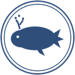<span>${a.stamped ? '已交差' : '快清・交差'}</span></button></div>`;
  }
  if (k === 'rain') {
    return `<div class="sv-act a-rain">${head('下一場雨', `拉動雨量。格柵的縫約 ${SV_GAP / 10} 公分，比縫小的會怎樣？`)}
      <label class="sv-range"><span>小雨</span><input type="range" min="0" max="100" value="${a.rain}" data-sv-rain aria-label="雨量"><span>暴雨</span></label>
      <p class="sv-act-res" id="sv-rain-res" aria-live="polite"></p></div>
      <svg class="sv-mini" viewBox="0 0 360 180" aria-hidden="true">
        <g class="rn">${Array.from({ length: 36 }, (_, i) => `<line x1="${8 + i * 10}" y1="${4 + (i * 37) % 30}" x2="${4 + i * 10}" y2="${18 + (i * 37) % 30}" data-k="${i}"></line>`).join('')}</g>
        <path class="dr-ground" d="M0 70H120M240 70H360"/><path class="dr-pipe" d="M120 70V112q0 8 8 8H360M240 70V96q0 4 4 4H360"/>
        <g class="dr-grate">${Array.from({ length: 11 }, (_, i) => `<rect x="${120 + i * 11}" y="66" width="3" height="8"></rect>`).join('')}</g>
        <text class="bk-t" x="180" y="88" text-anchor="middle">格柵</text><text class="bk-t" x="352" y="144" text-anchor="end">雨水下水道 → 河</text>
        <g class="dr-bits">${SV_DOTS.rain.map((d, i) => `<circle class="k-${d.kind}" r="${Math.max(1.4, svR(d.mm) * 0.7).toFixed(1)}" data-i="${i}"></circle>`).join('')}</g>
      </svg></div>`;
  }
  if (k === 'weather') {
    return `<div class="sv-act a-force">${head('三種力量', '把力量加到這片碎片上。哪一種能讓它真的碎掉？')}
      <div class="sv-act-btns">${Object.entries(SV_FORCE).map(([key, t]) => `<button data-sv-force="${key}" aria-pressed="${!!a.f[key]}">${t}</button>`).join('')}</div>
      <p class="sv-act-res" id="sv-force-res" aria-live="polite">${svForceRes()}</p></div>
      <svg class="sv-mini" viewBox="0 0 360 180" aria-hidden="true" id="sv-force-fig">${svForceFig()}</svg></div>`;
  }
  if (k === 'eaten') {
    const p = a.eat, res = !p ? '點一盤。海灣裡的微粒，會不會跟著吃下肚？'
      : p === 'oyster' ? '<b>牡蠣是整顆吃的</b>，連消化道一起。牡蠣濾海水吃東西，海水裡的微粒也一起被濾進去，所以比較可能跟著吃下肚。'
      : '<b>魚通常會先去掉內臟。</b>魚吃下的微粒大多留在消化道，跟著內臟丟掉了。不過整尾吃的小魚、小魚乾就不一樣。';
    return `<div class="sv-act a-eat">${head('今天晚餐吃什麼？', '老周今天的漁獲有牡蠣，也有魚。哪一盤比較可能把海灣裡的微粒一起吃下肚？')}
      <p class="sv-act-res" aria-live="polite">${res}</p>
      ${p ? `<details class="eat-q"><summary>越往上層的動物，塑膠越多嗎？</summary><p>不一定。研究看到塑膠會跟著食物往上傳，但沒有看到「越往上越多」。最常吃到的，反而是最小、最下層的生物，還有像牡蠣這樣濾海水的貝類。</p></details>
      <details class="eat-q"><summary>人吃下去會怎樣？</summary><p>科學家還在研究。人的血液、肺、胎盤裡都驗得到微塑膠，但對健康有什麼影響，現在還不清楚。能確定的是：已經進到海裡的，撈不回來。</p></details>` : ''}</div>
      <div class="eat-pick">${[['oyster', '生牡蠣'], ['fish', '煎魚']].map(([v, t]) => `<button data-sv-eat="${v}" aria-pressed="${p === v}"><span>${t}</span></button>`).join('')}</div></div>`;
  }
  if (k === 'rflow') {
    const c = a.cap, res = !c ? '你會怎麼丟？' : c === 'on' ? '對。瓶蓋鎖回去，就不會在路上掉出來。到了回收廠，會用水把瓶蓋和瓶身分開——下一頁就是。' : '小小的瓶蓋很容易從回收車掉出來、被沖進水溝。<b>鎖回去比較好：</b>回收廠有辦法把它們分開，下一頁就是。';
    return `<div class="sv-act a-cap">${head('瓶蓋要怎麼辦？', '瓶身和瓶蓋是不同的塑膠。要分開丟，還是鎖回去一起丟？')}
      <div class="sv-act-btns"><button data-sv-cap="on" aria-pressed="${c === 'on'}">鎖回去一起丟</button><button data-sv-cap="off" aria-pressed="${c === 'off'}">拆下來分開丟</button></div>
      <p class="sv-act-res" aria-live="polite">${res}</p></div>
      <div class="cap-fig">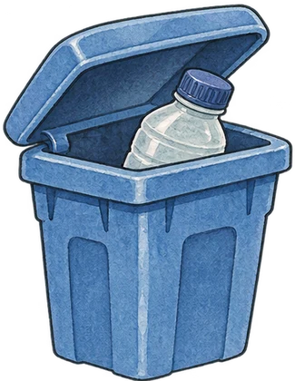</div></div>`;
  }
  if (k === 'bay') {
    return `<div class="sv-act a-time">${head('讓時間過去', '海浪和沙一直磨。拉動時間，看下面尺寸光譜上的點往哪裡走。')}
      <label class="sv-range"><span>剛進海灣</span><input type="range" min="0" max="12" value="${a.time}" data-sv-time aria-label="經過幾個月"><span>年底</span></label></div>
      <div class="sv-meter" aria-live="polite"><div><small>經過</small><b id="sv-t-m"></b></div><div><small>比 5 毫米小（微塑膠）</small><b id="sv-t-a"></b></div><div><small>比 0.1 毫米小（要靠儀器）</small><b id="sv-t-b"></b></div></div></div>`;
  }
  return '';
}
// 被曬脆：一片碎片的樣子，跟著三種力量變（四張生成圖：force_0 / sun / crack / broken）
function svForceFig() {
  const f = SV.act.f, r = svRand(31), br = !!f.sun + !!f.temp;
  let s = `<g class="fo-ic${f.sun ? ' on' : ''}"><circle cx="36" cy="30" r="12"/>${Array.from({ length: 8 }, (_, i) => { const a = i / 8 * Math.PI * 2; return `<path d="M${(36 + Math.cos(a) * 16).toFixed(1)} ${(30 + Math.sin(a) * 16).toFixed(1)}L${(36 + Math.cos(a) * 22).toFixed(1)} ${(30 + Math.sin(a) * 22).toFixed(1)}"/>`; }).join('')}</g>
    <g class="fo-ic${f.temp ? ' on' : ''}"><rect x="318" y="12" width="10" height="34" rx="5"/><circle cx="323" cy="50" r="8"/><path d="M332 20h6M332 28h6M332 36h6"/></g>
    <path class="fo-ground" d="M0 150q90 -14 180 -6t180 -4V180H0Z"/>
    <path class="fo-stone" d="${svBlob(56, 140, 34, 8, 0.2, r, 22)}"/><path class="fo-stone" d="${svBlob(304, 140, 30, 8, 0.2, r, 20)}"/>
    <g class="fo-wave${f.wave ? ' on' : ''}"><path d="M200 168q16 -8 32 0t32 0t32 0t32 0"/><path d="M220 176q16 -8 32 0t32 0t32 0"/></g>`;
  // 哪一張圖：沒被浪打 → 看曬和冷熱；被浪打 → 夠脆才會碎
  const img = !f.wave ? (f.sun && f.temp ? 'force_crack' : f.sun ? 'force_sun' : 'force_0') : (br ? 'force_broken' : 'force_0');
  const big = f.wave && br === 2;
  s += `<image class="fo-img${f.wave ? ' pop' : ''}" href="img/${img}.webp" x="${big ? 106 : 116}" y="${big ? 34 : 42}" width="${big ? 148 : 128}" height="${big ? 148 : 128}"/>`;
  const cr = svRand(12);
  // 只有冷熱、沒曬：圖還是透明的，加幾條深裂縫
  if (f.temp && !f.sun && !f.wave) for (let i = 0; i < 6; i++) { const t = 0.22 + i * 0.1; s += `<path class="fo-crk tmp" d="${svCrack(146 + 84 * t + (cr() - 0.5) * 10, 146 - 88 * t + (cr() - 0.5) * 10, 11, cr, 3)}"/>`; }
  // 只有浪：磨掉兩個小角
  if (f.wave && !br) s += `<path class="fo-frag pop" d="${svShard(258, 128, 7, cr)}"/><path class="fo-frag pop" d="${svShard(112, 70, 6, cr)}"/>`;
  if (big) for (let i = 0; i < 30; i++) s += `<circle class="fo-dust" cx="${(100 + cr() * 160).toFixed(0)}" cy="${(60 + cr() * 90).toFixed(0)}" r="${(0.8 + cr() * 1.4).toFixed(1)}"/>`;
  return s;
}
function svDropRes() {
  const done = Object.keys(SV.act.drop), last = SV.act.lastDrop || done[done.length - 1];
  return !done.length ? '點一個，丟進水裡。' : SV_DROP[last].res + (done.length === 3 ? '<br><b>記住這件事：到了海灣，它們會分成浮的和沉的兩路。</b>' : '');
}
// 被沖走：雨量決定哪些碎片穿過格柵。越小的越早被沖走，比縫大的永遠卡著
function svRain(root) {
  const r = SV.act.rain / 100, rnd = svRand(7), ds = SV_DOTS.rain;
  let stuck = 0, gone = 0;
  root.querySelectorAll('.dr-bits circle').forEach((el, i) => {
    const d = ds[i], x0 = 108 + rnd() * 144, jit = rnd();
    const thr = d.mm >= SV_GAP ? 2 : 0.08 + 0.8 * (Math.log10(d.mm) - Math.log10(0.5)) / (Math.log10(SV_GAP) - Math.log10(0.5));
    let x = x0, y = 66 - svR(d.mm) * 0.6;
    if (r > thr) { const k = Math.min(1, (r - thr) / 0.35); x = x0 + k * (360 - x0) * (0.4 + 0.6 * jit); y = 66 + Math.min(1, k * 3) * (44 + jit * 12); gone++; } else stuck++;
    el.style.transform = `translate(${x.toFixed(1)}px,${y.toFixed(1)}px)`;
    el.style.opacity = x > 352 ? 0 : 1;
  });
  root.querySelectorAll('.rn line').forEach(l => l.style.opacity = +l.dataset.k < r * 36 ? 1 : 0);
  const res = root.querySelector('#sv-rain-res');
  if (res) res.innerHTML = r === 0 ? '還沒下雨。所有碎片都還在路面上。' : `卡在格柵 <b>${stuck}</b> 件・流進下水道 <b>${gone}</b> 件${r >= 0.95 ? '<br>流走的，幾乎都是最小的那些。卡住的，掃得起來。' : ''}`;
}
function svTime(root) {
  const { ds } = svCurDots(), m = SV.act.time;
  const set = (id, v) => { const el = root.querySelector('#' + id); if (el) el.textContent = v; };
  set('sv-t-m', m === 0 ? '剛進來' : m === 12 ? '一年' : `${m} 個月`);
  set('sv-t-a', `${ds.filter(d => d.mm < 5).length} / ${ds.length} 件`);
  set('sv-t-b', `${ds.filter(d => d.mm < 0.1).length} 件`);
}

// ---------- 放大看：畫面與更新 ----------
function svZoomHTML() {
  const ticks = [0, 1, 2, 3, 4, 5].map(k => `<span style="left:${k * 20}%">${zmFmt(ZM.W0 / Math.pow(10, k))}</span>`).join('');
  return `<div class="sv-zoom" id="sv-zoom" hidden>
    <div class="zm-stage">
      <svg class="zm-svg" viewBox="0 0 1000 560" role="img" aria-label="從一個舊瓶子連續放大到細菌的大小">
        <defs><radialGradient id="zm-fade" gradientUnits="userSpaceOnUse" cx="500" cy="280" r="900"><stop offset="60%" stop-color="#fff"/><stop offset="100%" stop-color="#000"/></radialGradient>
          <mask id="zm-mask" maskUnits="userSpaceOnUse" x="-1500" y="-1500" width="4000" height="3560"><rect x="-1500" y="-1500" width="4000" height="3560" fill="url(#zm-fade)"/></mask>
          <radialGradient id="zm-vg" cx="50%" cy="50%" r="62%"><stop offset="62%" stop-color="#2B3A40" stop-opacity="0"/><stop offset="80%" stop-color="#2B3A40" stop-opacity=".55"/><stop offset="100%" stop-color="#2B3A40" stop-opacity=".9"/></radialGradient></defs>
        <rect class="zm-bg" id="zm-bg" width="1000" height="560"/>
        ${ZM_BGI.map(([n], i) => `<image class="zbg" data-b="${i}" href="img/${n}.webp" x="0" y="0" width="1000" height="560" preserveAspectRatio="xMidYMid slice"/>`).join('')}
        ${ZM_LAYERS.map((l, k) => `<g class="zl" data-k="${k}"><g class="zl-in z${k}"${k ? ' mask="url(#zm-mask)"' : ''}>${l.s}</g></g>`).join('')}
        <rect class="zm-vig" id="zm-vig" width="1000" height="560" fill="url(#zm-vg)"/>
        <g class="zm-labs" id="zm-labs"></g>
      </svg>
      <div class="zm-hud"><span>畫面寬</span><b id="zm-w"></b><small id="zm-ref"></small><em id="zm-tool"></em></div>
      <div class="zm-bar"><i id="zm-barline"></i><span id="zm-barlab"></span></div>
    </div>
    <div class="zm-ctl">
      <button class="zm-play" id="zm-play" type="button">▶ 自動放大</button>
      <div class="zm-rail"><input type="range" min="0" max="500" step="1" value="${Math.round(SV.zoom * 100)}" id="zm-range" aria-label="放大：往右越放越大"><div class="zm-ticks">${ticks}</div></div>
    </div>
    <p class="zm-tip">往右拉，一路放大到細菌的大小。下面的尺寸光譜，框起來的是現在畫面裡看得到的大小。</p>
  </div>`;
}
const zmMix = (a, b, t) => '#' + [0, 2, 4].map(i => Math.round(parseInt(a.substr(i + 1, 2), 16) * (1 - t) + parseInt(b.substr(i + 1, 2), 16) * t).toString(16).padStart(2, '0')).join('');
const ZM_BG = ['#EAD8B6', '#E9E4C8', '#E6E3CF', '#E0E8DA', '#DCE7DD', '#D6E3DD'];
function svZoomUpdate(root) {
  const z = SV.zoom, W = ZM.W0 / Math.pow(10, z);
  root.querySelectorAll('.zl').forEach(g => {
    const k = +g.dataset.k, s = Math.pow(10, z - k);
    // 太小（還沒輪到它）或太大（已經放過頭）就淡掉
    const fin = k === 0 ? 1 : Math.max(0, Math.min(1, (z - (k - 0.8)) / 0.4)), fout = k === ZM.N - 1 ? 1 : Math.max(0, Math.min(1, ((k + 0.72) - z) / 0.32));   // 生成圖放大超過約 2.5 倍會糊，提早交給下一層
    const o = Math.min(fin, fout);
    g.style.opacity = o.toFixed(3); g.style.display = o < 0.01 ? 'none' : '';
    if (o >= 0.01) g.setAttribute('transform', `translate(500 280) scale(${s.toFixed(5)}) translate(-500 -280)`);
  });
  // 背景質感：一定蓋滿畫面（最小 1 倍），只微微放大，跟著自己那幾層淡入淡出
  root.querySelectorAll('.zbg').forEach(im => {
    const [, k1, k2] = ZM_BGI[+im.dataset.b], lo = k1 - 0.85, hi = k2 + 0.98;
    const o = Math.min(k1 === 0 ? 1 : Math.max(0, Math.min(1, (z - lo) / 0.45)), k2 === ZM.N - 1 ? 1 : Math.max(0, Math.min(1, (hi - z) / 0.35)));
    const sc = 1 + 0.35 * Math.max(0, Math.min(1, (z - lo) / (hi - lo)));
    im.style.opacity = o.toFixed(3); im.style.display = o < 0.01 ? 'none' : '';
    im.setAttribute('transform', `translate(500 280) scale(${sc.toFixed(4)}) translate(-500 -280)`);
  });
  const k0 = Math.min(ZM.N - 2, Math.floor(z)), t = Math.min(1, z - k0);
  root.querySelector('#zm-bg').setAttribute('fill', zmMix(ZM_BG[k0], ZM_BG[k0 + 1], t));
  root.querySelector('#zm-vig').style.opacity = Math.max(0, Math.min(1, (z - 2.4) / 0.6)).toFixed(2);
  // 標籤：只標「目前這一層」的東西，位置換算成畫面座標，字不跟著縮放
  let labs = '';
  ZM_LAYERS.forEach((l, k) => {
    const s = Math.pow(10, z - k); if (s < 0.75 || s > 2.6) return;
    const a = Math.min(1, (s - 0.75) / 0.25, (2.6 - s) / 0.5);
    l.lab.forEach(([x, y, tt, ss]) => {
      const px = 500 + (x - 500) * s, py = 280 + (y - 280) * s; if (px < 30 || px > 970 || py < 24 || py > 540) return;
      const left = px > 640, tx = left ? px - 14 : px + 14, an = left ? 'end' : 'start';
      labs += `<g style="opacity:${a.toFixed(2)}"><circle cx="${px.toFixed(1)}" cy="${py.toFixed(1)}" r="5"/><text x="${tx.toFixed(1)}" y="${(py - 4).toFixed(1)}" text-anchor="${an}"><tspan class="t">${tt}</tspan><tspan class="s" x="${tx.toFixed(1)}" dy="20">${ss}</tspan></text></g>`;
    });
  });
  root.querySelector('#zm-labs').innerHTML = labs;
  root.querySelector('#zm-w').textContent = zmFmt(W);
  const ref = ZM_REF.reduce((b, r) => Math.abs(Math.log10(r[0] / W)) < Math.abs(Math.log10(b[0] / W)) ? r : b);
  root.querySelector('#zm-ref').textContent = Math.abs(Math.log10(ref[0] / W)) < 0.45 ? `差不多是${ref[1]}` : '';
  root.querySelector('#zm-tool').textContent = zmTool(z);
  // 比例尺：取 1、2、5 開頭的整數，長度約畫面的 1/5
  const raw = W / 5, p = Math.pow(10, Math.floor(Math.log10(raw))), nice = [5, 2, 1].map(m => m * p).find(v => v <= raw) || p;
  root.querySelector('#zm-barline').style.width = (nice / W * 100).toFixed(2) + '%';
  root.querySelector('#zm-barlab').textContent = zmFmt(nice);
  const rg = root.querySelector('#zm-range'); if (rg && +rg.value !== Math.round(z * 100)) rg.value = Math.round(z * 100);
  svZoomSpec(root);
}
// 尺寸光譜上框出「畫面裡看得到」的範圍：畫面寬到它的 1/100
function svZoomSpec(root) {
  const win = root.querySelector('#sv-win'), on = !!SV_CH[SV.ch].zoom;
  root.classList.toggle('zooming', on);
  if (!on) return;
  const W = ZM.W0 / Math.pow(10, SV.zoom), lo = Math.max(SVS.min, W / 100), hi = Math.min(SVS.max, W);
  const x1 = svX(hi), x2 = svX(lo);
  win.querySelector('rect').setAttribute('x', x1.toFixed(1)); win.querySelector('rect').setAttribute('width', Math.max(4, x2 - x1).toFixed(1));
  win.querySelector('text').setAttribute('x', ((x1 + x2) / 2).toFixed(1));
  const ds = SV.last ? SV.last.ds : [];
  root.querySelectorAll('.svd').forEach((el, i) => { const d = ds[i]; el.classList.toggle('inwin', !!d && d.mm <= W && d.mm >= lo); });
}

// ===== 兩條支線（從主線結尾卡片進入）=====
// 支線一 src：其他的微塑膠從哪裡來（配對遊戲＋城鎮剖面路線）
// 支線二 rec：如果它被回收了（回收流程 → 浮沉分選 → 三岔路 → 越早攔越有用）
// 只講大致原理、科普雜誌口吻，不放真實統計數字。
const SV_BR = {
  main: { h1: '一個寶特瓶<br>的一年', file: '工作單 第 0007 號' },
  src: { h1: '其他的微塑膠<br>從哪裡來', file: '支線一' },
  rec: { h1: '如果它<br>被回收了', file: '支線二' },
};
const svGroup = ci => SV_CH[ci].branch || 'main';
const svGroupIdx = g => SV_CH.map((_, i) => i).filter(i => svGroup(i) === g);

// ---------- 支線一：配對遊戲 ----------
// 路線畫在城鎮剖面圖上（座標 1000×563，對應 branch_town_section）
const MT_PATH = {
  rain: 'L302 276 V330 Q302 349 322 349 H675 Q700 349 702 326 L712 322 Q735 330 742 352',
  sewer: 'V392 Q95 416 120 416 H330 Q356 416 366 440 Q376 466 402 466 H770 Q830 466 845 478 Q858 488 860 500',
};
const SV_SRC = [
  { k: 'bottle', p: 'mp_fragment', s: 'drop_bottle', name: '寶特瓶', pn: '透明碎片', tag: '大的碎掉變小', kind: 'rain', d: 'M400 262 ' + MT_PATH.rain,
    txt: '丟在外面的大塑膠，被曬脆、被磨、被壓，碎成小片。下雨時跟著雨水管走，直接進海灣。', hint: '它有銳利的邊，像從什麼東西上碎下來的。' },
  { k: 'washer', p: 'mp_fiber', s: 'src_washer', name: '洗衣機', pn: '細長纖維', tag: '一磨下來就很小', kind: 'sewer', d: 'M95 226 ' + MT_PATH.sewer,
    txt: '合成纖維的衣服，每洗一次就磨下一些細纖維，跟著洗衣水流進污水管。污水處理廠攔得下大部分，但最細的會漏出去；攔下來的，留在污泥裡。', hint: '細細長長，像一段被拉開的毛線。' },
  { k: 'tyre', p: 'mp_tyre', s: 'src_tyre', name: '輪胎', pn: '黑色顆粒', tag: '一磨下來就很小', kind: 'rain', d: 'M275 252 ' + MT_PATH.rain,
    txt: '車子每開一段路，輪胎就磨掉一點點，變成沾著路面砂粒的黑色顆粒。下雨時跟著雨水管走，不會經過污水處理廠。', hint: '黑色的，表面沾著路上的砂。' },
  { k: 'pellet', p: 'mp_pellet', s: 'src_pellet_bag', name: '原料袋', pn: '扁圓小粒', tag: '一做出來就很小', kind: 'direct', d: 'M738 236 Q775 236 800 250 Q818 262 826 285',
    txt: '做塑膠製品用的原料粒，搬運、裝卸時灑出來，掉進港邊。它還沒變成任何東西，就已經是微塑膠的大小。', hint: '形狀很整齊，像是故意做成這樣的。' },
  { k: 'face', p: 'mp_bead', s: 'src_facewash', name: '洗面乳', pn: '小圓球', tag: '一做出來就很小', kind: 'sewer', d: 'M125 166 Q100 190 95 226 ' + MT_PATH.sewer,
    txt: '以前有些洗面乳會加塑膠小圓珠（柔珠）來去角質，洗完臉就跟著污水流走。它又小又輕，污水處理廠很難全部攔住。現在很多地方已經禁止了。', hint: '圓得太完美了，不像自然碎出來的。' },
  { k: 'boat', p: 'mp_paint', s: 'src_boat', name: '漁船', pn: '彩色薄片', tag: '一磨下來就很小', kind: 'direct', d: 'M915 228 Q912 255 918 290 Q922 320 915 350',
    txt: '船身的油漆裡也有塑膠。被海水、陽光、碰撞一點一點磨掉，直接掉進海裡。', hint: '一面藍、一面紅褐色，一層一層地剝落。' },
];
// 顯微鏡裡六顆微粒的位置（打亂順序）：[來源索引, x%, y%, 寬%, 旋轉]
const MT_SCOPE = [[3, 30, 28, 22, -10], [0, 66, 26, 26, 12], [4, 26, 66, 20, 0], [1, 52, 50, 34, 30], [5, 74, 68, 26, -18], [2, 46, 80, 24, 8]];
function svMatchHTML() {
  return `<div class="sv-stage" id="sv-match" hidden>
    <div class="mt-map">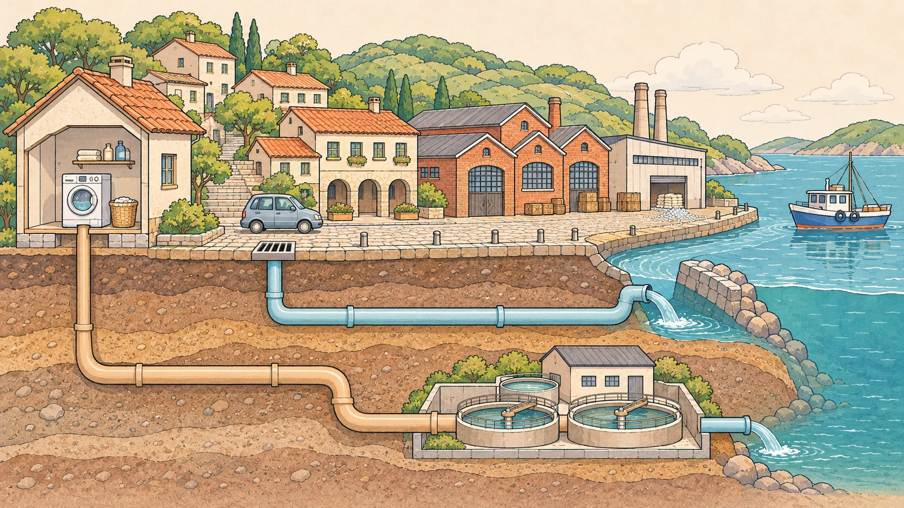<svg viewBox="0 0 1000 563" id="mt-routes" aria-hidden="true"></svg></div>
    <div class="mt-play">
      <div class="mt-col"><h4>顯微鏡下的六顆微粒</h4><div class="mt-scope" id="mt-scope"></div></div>
      <div class="mt-col"><h4>它們從哪裡來？</h4><div class="mt-srcs" id="mt-srcs"></div></div>
    </div>
    <p class="mt-msg" id="mt-msg" aria-live="polite"></p>
    <div class="mt-card" id="mt-card" hidden></div>
  </div>`;
}
function svMatchUpdate(root, animK) {
  const a = SV.act, m = a.match;
  root.querySelector('#mt-scope').innerHTML = MT_SCOPE.map(([si, x, y, w, r]) => {
    const o = SV_SRC[si], done = !!m[o.k];
    return `<button class="mt-p${done ? ' done' : ''}${a.msel === o.k ? ' sel' : ''}" data-mt-p="${o.k}" style="left:${x}%;top:${y}%;width:${w}%" aria-pressed="${a.msel === o.k}" aria-label="${o.pn}" ${done ? 'disabled' : ''}></button>`;
  }).join('');
  root.querySelector('#mt-srcs').innerHTML = SV_SRC.map(o => `<button class="mt-s${m[o.k] ? ' done' : ''}" data-mt-s="${o.k}"><span class="mt-si"></span><b>${o.name}</b>${m[o.k] ? `<small>${o.pn}</small>` : ''}</button>`).join('');
  // 已配對的路線：剛配對的那一條用動畫畫出來
  root.querySelector('#mt-routes').innerHTML = SV_SRC.filter(o => m[o.k]).map(o => {
    const an = o.k === animK && !RM;
    return `<g class="mt-r k-${o.kind}${an ? ' draw' : ''}${o.k === a.mlast ? ' last' : ''}"><path class="cs" d="${o.d}"/><path class="ln" d="${o.d}" pathLength="100"/><circle r="8"><animateMotion dur="2.4s" repeatCount="indefinite" path="${o.d}"/></circle></g>`;
  }).join('') + (SV_SRC.some(o => m[o.k] && o.kind === 'sewer') ? '<g class="mt-badge"><rect x="560" y="395" width="200" height="34" rx="6"/><text x="660" y="418">污水處理廠攔下大部分</text></g>' : '');
  const n = Object.keys(m).length, card = root.querySelector('#mt-card'), last = SV_SRC.find(o => o.k === a.mlast);
  card.hidden = !last;
  if (last) card.innerHTML = `<div><b>${last.pn}　←　${last.name}</b><em class="t-${last.tag === '大的碎掉變小' ? 'sec' : 'pri'}">${last.tag}</em><p>${last.txt}</p></div>`;
  root.querySelector('#mt-msg').innerHTML = a.mmsg || (n === 6 ? '六條路都找到了。<b>有的經過污水處理廠，有的直接進海；只有寶特瓶是「大的碎掉變小」，其他五種一出生、或一磨下來就很小。</b><br><button class="dr-go mt-next" data-sv-step="1">下一頁：城市的一天 →</button>' : n ? `找到 ${n} 條，還剩 ${6 - n} 條。` : '先點一顆微粒，再點它的來源。');
}

// ---------- 支線二：浮沉分選 ----------
// 水槽座標 1000×563：水面 y≈222，槽底 y≈425，水裡 x 120～880
const TK_FL = Array.from({ length: 14 }, (_, i) => {
  const r = svRand(300 + i), kind = i < 8 ? 'pet' : i < 11 ? 'cap' : 'label';
  return { kind, img: 'flake_' + kind, w: kind === 'pet' ? 52 + r() * 14 : 40 + r() * 10, rot: Math.round(r() * 360), hx: 380 + r() * 240, hy: 50 + r() * 50, wx: kind === 'pet' ? 165 + i * 96 + (r() - 0.5) * 30 : 215 + (i - 8) * 118 + (r() - 0.5) * 30, by: 400 + r() * 22, fy: 214 + r() * 8 };
});
const TK_AR = { flake_pet: 1.273, flake_cap: 1.173, flake_label: 1.312 };
function svTankHTML() {
  return `<div class="sv-stage" id="sv-tank" hidden>
    <div class="tk-stage">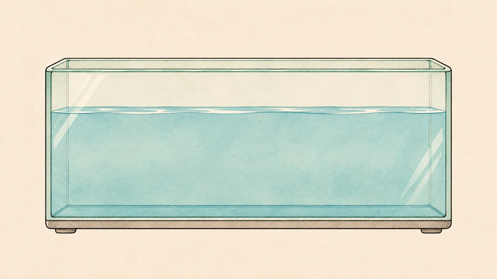<svg viewBox="0 0 1000 563" id="tk-svg">${TK_FL.map((f, i) => { const h = f.w / TK_AR[f.img]; return `<g class="tkf k-${f.kind}" data-tk="${i}" tabindex="0" role="button" aria-label="${f.kind === 'pet' ? '透明碎片' : f.kind === 'cap' ? '藍色碎片' : '薄膜碎片'}"><g class="tkb"><image href="img/${f.img}.webp" x="${(-f.w / 2).toFixed(1)}" y="${(-h / 2).toFixed(1)}" width="${f.w.toFixed(1)}" height="${h.toFixed(1)}" transform="rotate(${f.rot})"/></g></g>`; }).join('')}</svg></div>
    <div class="tk-ctl"><button class="tk-pour" id="tk-pour">倒進水裡</button>
      <button class="tk-bin" data-tk-bin="float"><b>浮在上面的</b><small>收進這一桶</small><i id="tk-n-float">0</i></button>
      <button class="tk-bin" data-tk-bin="sink"><b>沉在底下的</b><small>收進這一桶</small><i id="tk-n-sink">0</i></button></div>
    <p class="mt-msg" id="tk-msg" aria-live="polite"></p>
  </div>`;
}
function svTankUpdate(root) {
  const t = SV.act.tank;
  root.querySelectorAll('.tkf').forEach(g => {
    const i = +g.dataset.tk, f = TK_FL[i], st = t.st;
    let x = f.hx, y = f.hy;
    if (st >= 1) { x = f.wx; y = 222; }
    if (st >= 2) y = f.kind === 'pet' ? f.by : f.fy;
    g.style.transform = `translate(${x.toFixed(1)}px,${y.toFixed(1)}px)`;
    g.classList.toggle('sel', t.sel === i); g.classList.toggle('gone', !!t.done[i]); g.classList.toggle('floaty', st >= 2 && f.kind !== 'pet');
  });
  const cnt = k => Object.keys(t.done).filter(i => (TK_FL[i].kind === 'pet') === (k === 'sink')).length;
  root.querySelector('#tk-n-float').textContent = cnt('float'); root.querySelector('#tk-n-sink').textContent = cnt('sink');
  root.querySelector('#tk-pour').hidden = t.st > 0;
  const left = TK_FL.length - Object.keys(t.done).length;
  root.querySelector('#tk-msg').innerHTML = t.msg || (t.st === 0 ? '瓶身、瓶蓋、標籤的碎片混在一起。按「倒進水裡」。' : t.st === 1 ? '等一下……' : left ? '點一片碎片，再點它該去的桶子。' : '分好了。<b>浮起來的是瓶蓋和標籤（比水輕），沉下去的是瓶身（比水重）。</b>回收廠就是這樣分的。和〈被留下〉那一頁，把東西丟進海水是同一個道理。');
}

// ---------- 支線二：三岔路 ----------
const SV_FORK = [
  { k: 'bottle', img: 'out_bottle', t: '變回瓶子', s: '最理想的一條路。塑膠粒要非常乾淨、非常純，才能再裝喝的東西。做得到，但比較貴、也比較難，現在只有一部分的回收料走這條路。' },
  { k: 'fleece', img: 'out_fleece', t: '變成刷毛外套', s: '很常見的去處，一件外套可以穿好幾年。不過，它每洗一次，就會掉下一些細纖維。', link: true },
  { k: 'board', img: 'out_board', t: '變成建材', s: '做成塑膠木地板、地墊，可以用很多年。但它混了別的材料、形狀也變了，用完以後通常很難再回收一次。' },
];
function svForkHTML() {
  return `<div class="sv-stage" id="sv-fork" hidden>
    <div class="fk-row"><div class="fk-src">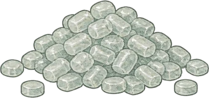<b>再生塑膠粒</b></div>
      <svg class="fk-arr" viewBox="0 0 120 300" aria-hidden="true"><path d="M8 150 C60 150 60 40 112 40M8 150H112M8 150 C60 150 60 260 112 260"/><path class="h" d="M104 33l9 7-10 6M104 143l9 7-10 6M104 253l9 7-10 6"/></svg>
      <div class="fk-opts" id="fk-opts"></div></div>
    <div class="mt-card fk-card" id="fk-card" hidden></div>
    <p class="mt-msg" id="fk-msg" aria-live="polite"></p>
  </div>`;
}
function svForkUpdate(root) {
  const f = SV.act.fork, cur = SV_FORK.find(o => o.k === f.sel);
  root.querySelector('#fk-opts').innerHTML = SV_FORK.map(o => `<button class="fk-o${f.seen[o.k] ? ' seen' : ''}" data-fk="${o.k}" aria-pressed="${f.sel === o.k}"><span></span><b>${o.t}</b></button>`).join('');
  const card = root.querySelector('#fk-card'); card.hidden = !cur;
  if (cur) card.innerHTML = `<div><b>${cur.t}</b><p>${cur.s}</p>${cur.link ? '<button class="sv-link" data-sv-go="src">這些纖維會去哪裡？看支線一 →</button>' : ''}</div>`;
  const n = Object.keys(f.seen).length;
  root.querySelector('#fk-msg').innerHTML = n === 3 ? '<b>回收讓塑膠多繞一圈。但每繞一圈，多半會變成比較難回收的東西。</b>回收很好，但不是終點。' : '點一條路，看它變成什麼。';
}

// ---------- 支線二：越早攔越有用 ----------
const SV_STOP = [
  { img: 'stop_flask', t: '自己帶水壺', when: '買飲料之前', ds: 'none', s: '這個瓶子根本沒有被做出來。最省事的一步。遊戲裡的「源頭改造」，做的就是這種事。' },
  { img: 'stop_bin', t: '丟進回收桶', when: '喝完的時候', ds: 'whole', s: '完整的瓶子，最好回收。' },
  { img: 'desk_crate', t: '整個收走', when: '星期六', ds: 'whole', s: '整個收走，還是 3 件，處理場收得下。這就是遊戲裡的「收走」。' },
  { img: 'force_broken', t: '快清之後再掃', when: '星期六', ds: 'crushed', s: '照片很乾淨，但件數多了十幾倍，掃把開始掃不起來。這就是遊戲裡的「快清」。' },
  { img: 'specimen_drain', cover: true, t: '在排水溝攔', when: '第一場雨', ds: 'rain', s: '格柵只攔得下大的，小的已經跟著雨水流走了。' },
  { img: 'bay_section', cover: true, t: '進了海灣', when: '第三場雨', ds: 'bay', s: '浮的跟著海流走，沉的混進海底的沙。沒有辦法撈回來。' },
  { img: 'specimen_micro', cover: true, t: '被驗出來', when: '年底', ds: 'lab', s: '只能證明它在那裡，收不回來。' },
];
function svStopHTML() {
  return `<div class="sv-stage" id="sv-stop" hidden>
    <div class="st-line"><span>越早</span><i></i><span>越晚</span></div>
    <div class="st-row" id="st-row"></div>
    <div class="mt-card st-card" id="st-card"></div>
    <div class="st-side"><h4>別條路也有攔截點</h4>
      <div>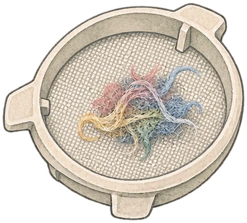<p><b>洗衣機濾網</b>在纖維離開家之前攔下來。</p></div>
      <div>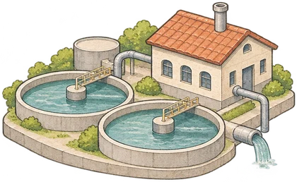<p><b>污水處理廠</b>攔得下大部分；攔下來的變成污泥，還要再處理。</p></div></div>
  </div>`;
}
function svStopUpdate(root) {
  const k = SV.act.stop, cur = SV_STOP[k];
  root.querySelector('#st-row').innerHTML = SV_STOP.map((o, i) => `<button class="st-p${o.cover ? ' cover' : ''}" data-st="${i}" aria-pressed="${k === i}"><span></span><small>${o.when}</small><b>${o.t}</b></button>`).join('');
  root.querySelector('#st-card').innerHTML = cur ? `<div><b>${cur.t}</b><p>${cur.s}</p><p class="st-n">要處理的件數：<em>${cur.ds === 'none' ? '0 件' : SV_COUNT[cur.ds]}</em>　往下看尺寸光譜。</p></div>` : '<div><p>點上面任何一個時間點，看看在那裡攔下來，要處理多少件。</p></div>';
}

// ===== 進海灣：漂流實驗 =====
// 地圖 bay_topdown，座標 1000×563。河口在 (220,293)。
// 規則（示意，不是模擬）：PET 碎片會沉，在河口附近就落到海底；瓶蓋碎片和標籤薄膜會浮，跟著風走；
// 沒有風時跟著海灣裡的水流，瓶蓋漂到防波堤、薄膜漂到岬角。
const DR_PIECE = [
  { k: 'cap', img: 'flake_cap', t: '瓶蓋碎片', s: '會浮' },
  { k: 'label', img: 'flake_label', t: '標籤薄膜', s: '會浮，很吃風' },
  { k: 'pet', img: 'flake_pet', t: '瓶身碎片', s: '會沉' },
];
const DR_WIND = [{ k: 'on', t: '吹向岸', a: '↙' }, { k: 'off', t: '吹向海', a: '↗' }, { k: 'none', t: '沒有風', a: '○' }];
const DR_PATH = {
  pet: { on: 'M220 293 Q245 312 262 326', off: 'M220 293 Q258 292 284 306', none: 'M220 293 Q252 300 272 318' },
  cap: { on: 'M220 293 C300 300 360 380 345 476', off: 'M220 293 C350 270 600 300 990 250', none: 'M220 293 C420 300 520 200 575 118' },
  label: { on: 'M220 293 C250 310 285 360 258 425', off: 'M220 293 C330 240 600 200 995 168', none: 'M220 293 C400 330 560 420 695 440' },
};
const DR_END = {
  beach: { img: 'drift_beach', t: '沖上海灘', s: '被浪推上岸，混在海藻和貝殼裡。沙灘上又熱、又曬得到太陽，它會碎得更快，就像「被曬脆」那一章。' },
  open: { img: 'drift_open', t: '漂到外海', s: '浮在水面的碎片，跟著風和海流越漂越遠，離開了貝洛港，再也追不到。' },
  seabed: { img: 'drift_seabed', t: '沉進海底泥沙', s: '比海水重的碎片，在河口附近就沉下去，被一層一層的泥沙蓋住。看不見，不代表不見了。' },
  rocks: { img: 'drift_rocks', t: '卡進石縫', s: '卡在石頭縫裡，浪一次又一次打上來，把它撞得更碎。' },
};
const drEnd = (p, w) => p === 'pet' ? 'seabed' : w === 'on' ? 'beach' : w === 'off' ? 'open' : 'rocks';
const DR_ARROW = { on: 'M760 170 L600 330', off: 'M560 330 L760 170', none: '' };
function svDriftHTML() {
  return `<div class="sv-stage" id="sv-drift" hidden>
    <div class="dr-map">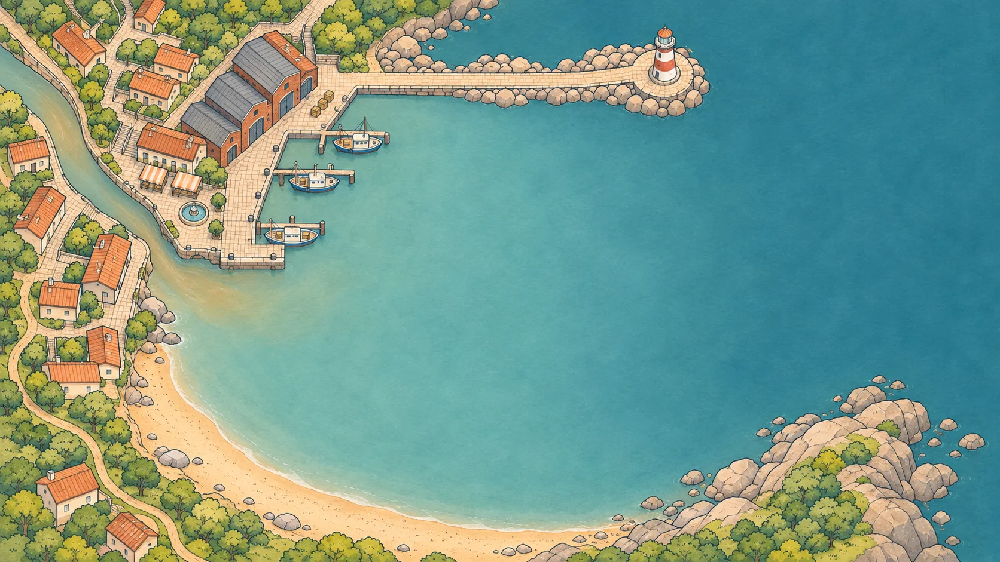
      <svg viewBox="0 0 1000 563" id="dr-svg" aria-hidden="true">
        <defs><marker id="dr-ah" viewBox="0 0 10 10" refX="6" refY="5" markerWidth="5" markerHeight="5" orient="auto"><path d="M0 0L10 5L0 10z" fill="#FFF6E6"/></marker></defs>
        <g class="dr-cur"><path d="M235 300 q60 0 110 -12" marker-end="url(#dr-ah)"/><path d="M240 318 q55 12 100 10" marker-end="url(#dr-ah)"/></g>
        <path class="dr-wind" id="dr-wind" d="" marker-end="url(#dr-ah)"/><text class="dr-windt" id="dr-windt" x="680" y="260"></text>
        <g id="dr-trails"></g>
        <circle class="dr-mouth" cx="220" cy="293" r="9"/>
        <g id="dr-piece" class="dr-piece"></g>
      </svg>
      <div class="dr-depth"><small>水深</small><svg viewBox="0 0 60 120"><rect class="w" x="0" y="14" width="60" height="96"/><path class="s" d="M0 110 Q15 104 30 108 T60 106 V120 H0Z"/><line class="sf" x1="0" x2="60" y1="14" y2="14"/><g id="dr-dot"></g></svg></div>
    </div>
    <div class="dr-ctl">
      <div><h4>選一片碎片</h4><div class="dr-btns" id="dr-pieces"></div></div>
      <div><h4>選風向</h4><div class="dr-btns" id="dr-winds"></div></div>
      <button class="dr-go" id="dr-go">放下去</button>
    </div>
    <div class="mt-card" id="dr-card" hidden></div>
    <div class="dr-log"><h4>漂流紀錄</h4><div id="dr-log"></div></div>
    <p class="mt-msg" id="dr-msg" aria-live="polite"></p>
  </div>`;
}
function svDriftUpdate(root) {
  const d = SV.act.drift;
  root.querySelector('#dr-pieces').innerHTML = DR_PIECE.map(o => `<button data-dr-p="${o.k}" aria-pressed="${d.p === o.k}"><b>${o.t}</b><small>${o.s}</small></button>`).join('');
  root.querySelector('#dr-winds').innerHTML = DR_WIND.map(o => `<button data-dr-w="${o.k}" aria-pressed="${d.w === o.k}"><i>${o.a}</i><b>${o.t}</b></button>`).join('');
  root.querySelector('#dr-wind').setAttribute('d', DR_ARROW[d.w] || '');
  root.querySelector('#dr-windt').textContent = d.w === 'none' ? '沒有風' : d.w ? '風' : '';
  root.querySelector('#dr-go').disabled = !d.p || !d.w || d.busy;
  root.querySelector('#dr-log').innerHTML = Object.entries(DR_END).map(([k, o]) => `<div class="${d.found[k] ? 'on' : ''}"><span></span><b>${d.found[k] ? o.t : '？'}</b></div>`).join('');
  const n = Object.keys(d.found).length;
  root.querySelector('#dr-msg').innerHTML = d.busy ? '漂流中……' : n === 4 ? '<b>同一個瓶子的碎片，會去很多不同的地方：浮的跟著風走，沉的留在原地。</b>一旦進了海灣，就沒辦法把它們全部找回來。' : !d.p || !d.w ? '選一片碎片和一個風向，按「放下去」。' : `還有 ${4 - n} 種結局沒找到。`;
}

// ===== 支線一第二頁：城市的一天 =====
// 數字都是示意：用來比較「哪條路最多、哪裡攔得到」，不是實測資料。
const CD_TYPES = { fiber: { img: 'mp_fiber', t: '纖維', c: '#3F86B0' }, tyre: { img: 'mp_tyre', t: '輪胎粉塵', c: '#2B2B2B' }, frag: { img: 'mp_fragment', t: '瓶子碎片', c: '#C9B46A' }, pellet: { img: 'mp_pellet', t: '原料粒', c: '#8FC7BE' }, paint: { img: 'mp_paint', t: '油漆碎屑', c: '#B5533C' }, bead: { img: 'mp_bead', t: '塑膠柔珠', c: '#A9CBE0' } };
const CD_PICK = [
  { k: 'filter', img: 'stop_filter', t: '洗衣機濾網', s: '攔下大部分纖維' },
  { k: 'sweep', img: 'street_sweeper', t: '雨前掃街', s: '下雨前把路面掃乾淨' },
  { k: 'net', img: 'drain_net', t: '雨水管口攔截網', s: '網住比較大的碎片' },
  { k: 'trap', img: 'pellet_trap', t: '工廠細網籃', s: '接住灑出來的原料粒' },
];
// 一天的事件：[時刻, 說明, 事件]
const CD_EV = [[7, '早上，洗衣服', 'wash'], [8, '上班通勤', 'drive'], [10, '工廠卸貨', 'pellet'], [12, '有人把瓶子丟在路邊，被車壓碎', 'litter'], [14, '漁船出港', 'boat'], [18, '下班通勤', 'drive'], [19.5, '晚上，大家都回家了', 'idle'], [22, '晚上洗臉（以前的洗面乳）', 'face'], [23.5, '雨前掃街', 'sweep'], [26, '半夜下大雨', 'rain'], [28.5, '雨停了，天快亮了', 'idle']];
const CD_SEW1 = 'V392 Q95 416 120 416 H330 Q356 416 366 440 Q376 466 402 466 H600', CD_SEW2 = 'M600 466 H770 Q830 466 845 478 Q858 488 860 500';
const CD_RAIN = 'L302 276 V330 Q302 349 322 349 H675 Q700 349 702 326 L712 322 Q735 330 742 352';
// 每一顆的去向在產生時就決定好：bay 海灣、sludge 污泥、filter/swept/net/trap 被攔下
function cdPlan(picks) {
  const P = [], has = k => picks.includes(k);
  for (let i = 0; i < 12; i++) P.push({ type: 'fiber', ev: 'wash', fate: has('filter') && i % 4 ? 'filter' : i % 5 ? 'sludge' : 'bay' });
  for (let i = 0; i < 12; i++) P.push({ type: 'tyre', ev: 'drive', n: i, fate: has('sweep') && i % 5 ? 'swept' : 'bay' });
  for (let i = 0; i < 5; i++) P.push({ type: 'frag', ev: 'litter', n: i, fate: has('sweep') && i % 5 ? 'swept' : has('net') ? 'net' : 'bay' });
  for (let i = 0; i < 6; i++) P.push({ type: 'pellet', ev: 'pellet', n: i, fate: has('trap') && i % 6 ? 'trap' : 'bay' });
  for (let i = 0; i < 3; i++) P.push({ type: 'paint', ev: 'boat', n: i, fate: 'bay' });
  for (let i = 0; i < 4; i++) P.push({ type: 'bead', ev: 'face', n: i, fate: i % 2 ? 'sludge' : 'bay' });
  return P;
}
function cdTally(P) {
  const bay = {}; let caught = 0, sludge = 0;
  P.forEach(p => { if (p.fate === 'bay') bay[p.type] = (bay[p.type] || 0) + 1; else if (p.fate === 'sludge') sludge++; else caught++; });
  return { bay, total: Object.values(bay).reduce((a, b) => a + b, 0), caught, sludge };
}
function svCityHTML() {
  return `<div class="sv-stage" id="sv-city" hidden>
    <div class="cd-map">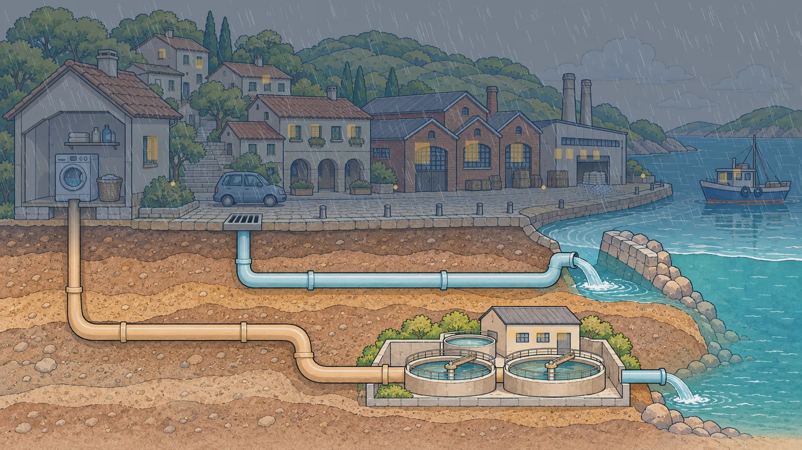
      <svg viewBox="0 0 1000 563" id="cd-svg" aria-hidden="true"><g id="cd-tools"></g><g id="cd-road"></g><g id="cd-dots"></g><g id="cd-fx"></g></svg>
      <div class="cd-hud"><b id="cd-clock">06:00</b><span id="cd-ev">按「開始這一天」</span></div>
    </div>
    <div class="cd-ctl"><button class="dr-go" id="cd-play">▶ 開始這一天</button>
      <div class="cd-cnt"><div><small>路面上，等下雨</small><b id="cd-n-road">0</b></div><div><small>被攔下</small><b id="cd-n-caught">0</b></div><div><small>污泥裡</small><b id="cd-n-sludge">0</b></div><div class="bay"><small>流進海灣</small><b id="cd-n-bay">0</b></div></div></div>
    <div class="cd-types" id="cd-types"></div>
    <div class="cd-r2" id="cd-r2" hidden><h4>第二輪：選兩樣攔截，再跑一天</h4><div class="dr-btns cd-picks" id="cd-picks"></div></div>
    <p class="mt-msg" id="cd-msg" aria-live="polite"></p>
  </div>`;
}

// ---------- 版面 ----------
const STORY_UI_CSS = `
.sv{--paper:#FAE9D4;--paper2:#F2DEC4;--ink:#2B3A40;--mu:#6E6352;--rule:#D9C4A6;--stamp:#A2412F;--gold:#B9862C;--pet:#7FB3AD;--pp:#2F4E7A;--lab:#8FB0CF;min-height:100dvh;overflow:auto;background:var(--paper);color:var(--ink);font-family:"Noto Sans TC",sans-serif}
.sv button{font:inherit;color:inherit;cursor:pointer}
.sv [hidden]{display:none!important}
.sv button:focus-visible{outline:3px solid #136581;outline-offset:2px}
.sv-top{display:flex;justify-content:space-between;align-items:center;padding:12px clamp(16px,3vw,44px);border-bottom:1px solid var(--rule)}
.sv-top strong{font:900 15px var(--serif);letter-spacing:.08em}
.sv-top button{background:transparent;border:1px solid var(--rule);border-radius:6px;padding:8px 14px;min-height:40px}
.sv-wrap{display:grid;grid-template-columns:230px minmax(0,1fr);gap:clamp(18px,2.6vw,40px);max-width:1560px;margin:0 auto;padding:clamp(16px,2.4vw,34px) clamp(16px,3vw,44px) 40px}
.sv-side h1{font:900 clamp(26px,2.5vw,36px)/1.15 var(--serif);margin:0 0 6px;letter-spacing:-.02em}
.sv-side .sv-file{display:inline-block;font-size:12px;color:var(--stamp);border:1px solid #c99a88;padding:3px 7px;margin-bottom:18px;font-weight:700}
.sv-nav{display:grid;gap:6px}
.sv-nav button{display:grid;grid-template-columns:30px 1fr;align-items:center;gap:2px 8px;text-align:left;background:transparent;border:1px solid var(--rule);border-radius:6px;padding:9px 10px;min-height:54px}
.sv-nav button i{grid-row:span 2;width:28px;height:28px;border-radius:50%;border:1px solid var(--rule);display:grid;place-items:center;font:700 13px var(--num,sans-serif);font-style:normal;color:var(--mu)}
.sv-nav button b{font:900 16px/1.2 var(--serif)}.sv-nav button span{font-size:12px;color:var(--mu)}
.sv-nav button[aria-current=step]{background:#F6D9A6;border-color:#C79A4E;box-shadow:inset 0 0 0 1px #E2B866}
.sv-nav button[aria-current=step] i{background:var(--ink);color:var(--paper);border-color:var(--ink)}
.sv-side .sv-note{margin-top:18px;font-size:12px;line-height:1.7;color:var(--mu);border-top:1px solid var(--rule);padding-top:12px}
.sv-head{display:flex;justify-content:space-between;align-items:baseline;gap:12px;margin-bottom:2px}
.sv-head h2{margin:0;font:900 clamp(24px,2.6vw,38px)/1.15 var(--serif)}
.sv-head span{font-size:13px;color:var(--mu);font-weight:700}
.sv-fig{position:relative;display:grid;grid-template-columns:minmax(150px,1fr) minmax(0,2.6fr) minmax(150px,1fr);align-items:stretch;min-height:0}
.sv-col{position:relative}
.sv-imgbox{position:relative;aspect-ratio:16/9;align-self:center}
.sv-imgbox img{position:absolute;inset:0;width:100%;height:100%;object-fit:contain;-webkit-mask-image:radial-gradient(ellipse 72% 78% at 50% 50%,#000 70%,transparent 100%);mask-image:radial-gradient(ellipse 72% 78% at 50% 50%,#000 70%,transparent 100%);transition:filter .5s,opacity .35s}
.sv-imgbox.scene img{-webkit-mask-image:none;mask-image:none;border-radius:10px;box-shadow:0 0 0 1px var(--rule)}
.sv-imgbox.scene::after{content:"剖面示意";position:absolute;left:10px;bottom:10px;font-size:11px;background:#17384AE6;color:#FFF3DD;padding:3px 7px;border-radius:3px}
.sv-imgbox.t0 img{filter:blur(6px) saturate(.45)}.sv-imgbox.t1 img{filter:blur(.6px) saturate(.85)}
.sv-imgbox.swap img{opacity:0}
.sv-lines{position:absolute;inset:0;width:100%;height:100%;pointer-events:none;overflow:visible;z-index:2}
.sv-lines line{stroke:#7A6A4E;stroke-width:1;stroke-dasharray:3 3}.sv-lines line.g{stroke:#B5533C}
.sv-lines line.on{stroke:var(--stamp);stroke-width:1.8;stroke-dasharray:none}
.sv-lines circle{fill:#FAE9D4;stroke:#5B4D36;stroke-width:1.3}.sv-lines circle.g{stroke:var(--stamp)}.sv-lines circle.on{fill:#F2B134;stroke:var(--stamp);stroke-width:2}
.sv-lines .ring{fill:none;stroke:#C2452F;stroke-width:2;stroke-dasharray:4 3;animation:svring 1.6s ease-in-out infinite}
@keyframes svring{50%{stroke-width:3;opacity:.55}}
.sv-lab{position:absolute;width:100%;padding:3px 0;background:transparent;border:0;text-align:left;z-index:3;transition:opacity .3s,transform .3s}
.sv-col.R .sv-lab{padding-left:14px}.sv-col.L .sv-lab{text-align:right;padding-right:14px}
.sv-lab b{display:block;font:900 15px/1.25 var(--serif)}.sv-lab small{display:block;font-size:12.5px;line-height:1.5;color:var(--mu);margin-top:2px}
.sv-lab.g b::before{content:"遊戲裡";font:700 10px "Noto Sans TC",sans-serif;color:var(--stamp);border:1px solid var(--stamp);border-radius:2px;padding:0 4px;margin-right:6px;vertical-align:2px}
.sv-col.L .sv-lab.g b::before{margin:0 6px 0 0}
.sv .sv-lab.on{background:transparent;border-color:transparent}
.sv-lab.on b{color:var(--stamp)}.sv-lab.on small{color:var(--ink)}
.sv-lab .n{display:none}
.sv-narr{margin:6px auto 0;max-width:760px;text-align:center;font:500 16px/1.8 var(--serif);min-height:3.6em}
.sv-tools{display:flex;justify-content:center;gap:6px;margin:10px 0 0}
.sv-tools button{min-width:96px;min-height:42px;border:1px solid #BCA884;background:#FFF6E6;border-radius:6px;padding:6px 14px;display:flex;gap:6px;align-items:center;justify-content:center}
.sv-tools button img{width:20px;height:20px}.sv-tools button[aria-pressed=true]{background:var(--ink);color:#FFF6E6;border-color:var(--ink)}
.sv-tools button[aria-pressed=true] img{filter:invert(1)}
.sv-band{margin-top:16px;border-top:1px solid var(--rule);padding-top:10px}
.sv-band header{display:flex;justify-content:space-between;align-items:baseline;gap:12px;flex-wrap:wrap}
.sv-band h3{margin:0;font:900 15px var(--serif)}.sv-band h3 small{font:400 12px "Noto Sans TC",sans-serif;color:var(--mu);margin-left:8px}
.sv-stats{display:flex;gap:18px;font-size:13px;color:var(--mu)}.sv-stats b{font:700 18px var(--num,sans-serif);color:var(--ink);margin-left:6px}
.sv-stats .mass b{color:#3f7f6a}
.svspec{display:block;width:100%;height:auto;margin-top:4px;overflow:visible}
.svspec .z{fill:#EFD9BB}.svspec .z1{fill:#EAD2B0}.svspec .z2{fill:#E3C9A5}
.svspec .zl{font-size:13px;fill:#5B4D36;font-weight:700;text-anchor:middle}.svspec .zg{font-weight:400;fill:#8A7B62}
.svspec .tk{stroke:#8A7B62}.svspec .tkt{font-size:12px;fill:#6E6352;text-anchor:middle}
.svspec .mp5{stroke:var(--stamp);stroke-width:1.5;stroke-dasharray:4 3}.svspec .mp5t{font-size:12px;fill:var(--stamp);text-anchor:start;transform:translateX(6px);font-weight:700}
.svd{transition:transform .9s cubic-bezier(.3,.7,.2,1),opacity .6s,fill .4s;stroke:#2B3A4055;stroke-width:.6}
.svd.k-pet{fill:var(--pet)}.svd.k-pp{fill:var(--pp)}.svd.k-label{fill:var(--lab)}.svd.k-fiber{fill:#4E95B8}
.svd.hid{fill:transparent;stroke:#8A7B6299;stroke-dasharray:1.5 1.5}
.sv-legend{display:flex;gap:14px;font-size:12px;color:var(--mu);margin-top:4px;flex-wrap:wrap}.sv-legend i{display:inline-block;width:10px;height:10px;border-radius:50%;margin-right:5px;vertical-align:-1px}
.sv-foot{display:flex;justify-content:space-between;align-items:center;gap:10px;margin-top:16px}
.sv-foot button{min-height:44px;border:1px solid #BCA884;background:#FFF6E6;border-radius:6px;padding:8px 16px}
.sv-foot button:disabled{opacity:.4;cursor:default}
.sv-end{margin:18px auto 0;max-width:760px;text-align:center;background:#F2DEC4;border:1px solid var(--rule);border-radius:10px;padding:18px}
.sv-end p{margin:0 0 12px;font:600 16px/1.8 var(--serif)}
.sv-end .go{background:#F2B134;border:1px solid #A97B22;border-radius:8px;padding:10px 26px;font-weight:900;font-size:16px;min-height:46px}
.sv-end .home{background:transparent;border:0;text-decoration:underline;margin-left:14px}
.sv-actwrap{margin:14px auto 0;max-width:980px}
.sv-wrap>*,.sv-act>*,.sv-band{min-width:0}
.sv-mini{max-width:380px;justify-self:center}
.sv-act{display:grid;grid-template-columns:minmax(0,1fr) minmax(220px,360px);gap:18px;align-items:center;background:#FFF6E6;border:1px solid var(--rule);border-radius:10px;padding:14px 18px;box-shadow:0 1px 0 #E8D2B0}
.sv-act-k{display:inline-block;font:700 11px "Noto Sans TC",sans-serif;color:var(--stamp);border:1px solid var(--stamp);border-radius:2px;padding:0 5px;letter-spacing:.1em}
.sv-act h4{margin:6px 0 4px;font:900 18px/1.3 var(--serif)}
.sv-act p{margin:0;font-size:13.5px;line-height:1.65;color:var(--mu)}
.sv-act .sv-act-res{margin-top:10px;color:var(--ink);min-height:3.3em}.sv-act .sv-act-res b{color:var(--stamp)}
.sv-act-btns{display:flex;flex-wrap:wrap;gap:6px;margin-top:10px}
.sv-act-btns button{border:1px solid #BCA884;background:var(--paper);border-radius:6px;padding:6px 12px;min-height:40px}
.sv-act-btns button[aria-pressed=true]{background:#F6D9A6;border-color:#C79A4E}
.sv-mini{width:100%;height:auto;display:block;overflow:hidden}
.sv-mini .k-pet{fill:#CFE3DF;stroke:#4E7F79;stroke-width:1.2}.sv-mini .k-pp{fill:var(--pp);stroke:#1E3352;stroke-width:1}
.sv-mini .k-label{fill:var(--lab)}.sv-mini .rib{stroke:#ffffff99;stroke-width:1;fill:none}
.sv-mini .bk-glass{fill:none;stroke:#5B4D36;stroke-width:2;stroke-linecap:round}
.sv-mini .bk-water{fill:#9CC7CF88;stroke:#4E8792;stroke-width:1}
.sv-mini .bk-t{font-size:12px;fill:var(--mu)}
.sv-mini .dp{transform:translate(var(--x),var(--y));transition:transform 1.1s cubic-bezier(.3,1.4,.5,1)}
.sv-mini .dp.in{animation:svbob 3s ease-in-out 1.2s infinite}
@keyframes svbob{50%{transform:translate(var(--x),calc(var(--y) + 2px))}}
.sv-mini .dr-ground{stroke:#5B4D36;stroke-width:3;fill:none}.sv-mini .dr-pipe{stroke:#8A7B62;stroke-width:1.5;fill:none;stroke-dasharray:5 3}
.sv-mini .dr-grate rect{fill:#5B4D36}
.sv-mini .rn line{stroke:#4E8792;stroke-width:1.3;stroke-linecap:round;transition:opacity .3s}
.sv-mini .dr-bits circle{transition:transform .6s cubic-bezier(.3,.7,.2,1),opacity .4s;stroke:#2B3A4055;stroke-width:.5}
.sv-range{display:flex;align-items:center;gap:10px;margin-top:12px;font-size:12.5px;color:var(--mu)}
.sv-range input{flex:1;accent-color:var(--stamp);min-height:32px}
.sv-meter{display:grid;gap:10px}.sv-meter div{border-left:3px solid var(--rule);padding-left:10px}
.sv-meter small{display:block;font-size:12px;color:var(--mu)}.sv-meter b{font:700 20px var(--num,sans-serif)}
.sv-meter div:nth-child(2){border-color:var(--stamp)}.sv-meter div:nth-child(2) b{color:var(--stamp)}
.a-stamp{grid-template-columns:minmax(0,1fr) auto}
.sv-stampbtn{display:flex;align-items:center;gap:10px;background:#FFF;border:2px solid var(--stamp);border-radius:8px;padding:10px 20px 10px 12px;min-height:60px;font-weight:900;font-size:17px;color:var(--stamp)!important;box-shadow:0 3px 0 #C99A88;transition:transform .1s,box-shadow .1s}
.sv-stampbtn img{width:42px;height:42px}
.sv-stampbtn:not(:disabled):hover{transform:translateY(-1px)}.sv-stampbtn:not(:disabled):active{transform:translateY(2px);box-shadow:0 1px 0 #C99A88}
.sv-stampbtn.done{opacity:.55;box-shadow:none;cursor:default}
.sv-link{background:transparent;border:0;padding:0;margin-top:8px;text-decoration:underline;font-size:13px;color:var(--mu)!important}
.sv-stampfx{position:absolute;left:50%;top:44%;width:min(22vw,180px);aspect-ratio:1;margin:calc(min(22vw,180px) / -2) 0 0 calc(min(22vw,180px) / -2);pointer-events:none;opacity:0;z-index:4}
.sv-stampfx img{width:100%;height:100%;mix-blend-mode:multiply}
.sv-stampfx.go{animation:svstamp 1.5s cubic-bezier(.2,.9,.3,1) forwards}
@keyframes svstamp{0%{opacity:0;transform:scale(2.4) rotate(-14deg)}22%{opacity:.95;transform:scale(1) rotate(-8deg)}70%{opacity:.85;transform:scale(1) rotate(-8deg)}100%{opacity:0;transform:scale(1) rotate(-8deg)}}
.sv-imgbox.thud{animation:svthud .3s .25s}
@keyframes svthud{30%{transform:translateY(4px)}60%{transform:translateY(-2px)}}
.sv-tools.hint button[data-sv-tool="2"]{animation:svpulse 1.8s ease-in-out infinite}
@keyframes svpulse{50%{box-shadow:0 0 0 5px #F2B13466}}
.svspec .rft{font-size:12px;fill:#8A7B62;font-weight:700}
.svspec .rfl{stroke:#D9C4A6}.svspec .rfk{stroke:#8A7B62}
.svspec .rf-ic *{fill:#FFF6E6;stroke:#5B4D36;stroke-width:1.2}.svspec .rf-ic .in{fill:#EAD2B0}.svspec .rf-ic .ln{fill:none;stroke-width:1.6}
.svspec .rfn{font-size:12px;fill:#5B4D36;text-anchor:middle}
.svspec-wrap{overflow-x:auto;-webkit-overflow-scrolling:touch}
.sv-end{position:sticky;bottom:12px;z-index:6;box-shadow:0 10px 28px #5B4D3633;padding:12px 18px!important;max-width:680px!important}
.sv-end p{font-size:15px!important;line-height:1.6!important;margin-bottom:4px!important}
.sv-end .go{padding:8px 22px!important;min-height:42px!important}
.sv-end small{display:block;font-size:12.5px;color:var(--mu);margin:0 0 8px}
.sv-end.flow{position:static;box-shadow:none}
.sv-end.pop{animation:svpop .5s cubic-bezier(.2,1.3,.4,1)}
@keyframes svpop{from{transform:translateY(24px);opacity:0}}
.sv-svgfig{position:absolute;inset:0}
.sv-figsvg{width:100%;height:100%;display:block}
.sv-imgbox.isfig img{display:none}
.sv-figsvg *{stroke-linejoin:round;stroke-linecap:round}
.sv-figsvg .ln{fill:none;stroke:#5B4D36;stroke-width:1.6}.sv-figsvg .ln.dash{stroke-dasharray:5 5}.sv-figsvg .ln.in{stroke:#4E7F7966}.sv-figsvg .ln.w{stroke:#ffffff88}
.sv-figsvg text{font:700 28px "Noto Sans TC",sans-serif;fill:#5B4D36}.sv-figsvg text.sm{font-size:22px;font-weight:400}
.mk-bag path:first-child{fill:#EFDDBF;stroke:#5B4D36;stroke-width:2}
.mk-pel ellipse{fill:#E3EEEA;stroke:#4E7F79;stroke-width:1.3}
.mk-ins circle{fill:#FFF6E6;stroke:#5B4D36;stroke-width:2}
.mk-arrow path{fill:none;stroke:#A2412F;stroke-width:3}.mk-arrow text{fill:#A2412F;font-size:30px}
.mk-body{fill:#CFE3DFCC;stroke:#4E7F79;stroke-width:2}
.mk-neck,.mk-flange{fill:#CFE3DF;stroke:#4E7F79;stroke-width:2}.mk-thr{stroke:#4E7F79;stroke-width:1.4;fill:none}
.mk-heat path{fill:none;stroke:#D07A3A;stroke-width:2.2}
.mk-mold path{fill:none;stroke:#8A7B62;stroke-width:1.6;stroke-dasharray:8 6}
.mk-cap{fill:#2F4E7A;stroke:#1E3352;stroke-width:2}
.wx-sky{fill:#F6E7CF}
.wx-sun circle{fill:#F2C568;stroke:#B9862C;stroke-width:2}.wx-sun path{stroke:#B9862C;stroke-width:3}
.wx-uv path{stroke:#B9862C;stroke-width:1.6;stroke-dasharray:3 9;fill:none}.wx-uv text{font-size:28px;fill:#B9862C}
.wx-moon path:first-child{fill:#E4E0CF;stroke:#6E6352;stroke-width:2}.wx-moon text{font-size:28px;font-weight:700;fill:#6E6352}
.wx-water{fill:#9CC7CF;stroke:#4E8792;stroke-width:2}.wx-wave{fill:none;stroke:#FFF6E6;stroke-width:2.4}
.wx-bank{fill:#E5CFA6;stroke:#8A7B62;stroke-width:2}.wx-sand circle{fill:#B49A6E}
.wx-stone path{fill:#CDBFA5;stroke:#5B4D36;stroke-width:2}
.wx-frag path{fill:#CFE3DF;stroke:#4E7F79;stroke-width:1.8}.wx-frag path.yl{fill:#E9DFAE;stroke:#8A7B3A}
.wx-stamp{fill:none;stroke:#2F4E7A;stroke-width:2.4}
.wx-mic ellipse{fill:#7FA36B}
.bl-mold{fill:none;stroke:#8A7B62;stroke-width:1.2;stroke-dasharray:4 3}
.bl-neck{fill:#CFE3DF;stroke:#4E7F79;stroke-width:1.2}
.bl-body{fill:#CFE3DFDD;stroke:#4E7F79;stroke-width:1.4;transition:fill .3s}
.a-blow.heat .bl-body{fill:#F2C9A0DD;stroke:#B5533C}
.bl-air{fill:none;stroke:#A2412F;stroke-width:1.6;opacity:0;transition:opacity .3s}.a-blow.heat .bl-air{opacity:1}
.fo-ic *{fill:none;stroke:#BCA884;stroke-width:1.6;transition:stroke .3s}.fo-ic.on *{stroke:#B9862C}.fo-ic.on circle:first-child{fill:#F2C56888}
.fo-ground{fill:#E5CFA6;stroke:#8A7B62;stroke-width:1.2}.fo-stone{fill:#CDBFA5;stroke:#5B4D36;stroke-width:1.2}
.fo-wave path{fill:none;stroke:#BCA884;stroke-width:1.6}.fo-wave.on path{stroke:#4E8792;stroke-width:2.2}
.fo-frag{fill:#CFE3DF;stroke:#4E7F79;stroke-width:1.4}.fo-frag.yl{fill:#E9DFAE;stroke:#8A7B3A}
.fo-frag.pop{animation:svpop .5s cubic-bezier(.2,1.3,.4,1) both}
.fo-crk{fill:none;stroke:#8A7B3A;stroke-width:1}.fo-crk.deep{stroke:#5B4D36;stroke-width:1.4}.fo-crk.tmp{stroke:#4E6E6A;stroke-width:.9}
.fo-dust{fill:#4E7F79}
.sv-zoom{margin-top:4px}
.zm-stage{position:relative;border-radius:10px;overflow:hidden;box-shadow:0 0 0 1px var(--rule);aspect-ratio:1000/560;background:#EAD8B6}
.zm-svg{display:block;width:100%;height:100%}
.zl *{vector-effect:non-scaling-stroke;stroke-linejoin:round;stroke-linecap:round}
.zl .z-dot{fill:#B49A6E}.zl .z-shell{fill:#F4E3D0;stroke:#6E6352;stroke-width:1.2}.zl .z-pebble{fill:#CDBFA5;stroke:#5B4D36;stroke-width:1.2}
.zl .z-ln{fill:none;stroke:#5B4D3688;stroke-width:1}.zl .z-ln.soft{stroke:#5B4D3644}
.zl .z-bottle{fill:#DCEBE4;stroke:#4E7F79;stroke-width:1.6}.zl .z-yl{fill:#E2CF7A55;stroke:none}.zl .z-label{fill:#8FB0CF88;stroke:#4E6E8F;stroke-width:1}
.zl .z-cap{fill:#2F4E7A;stroke:#1E3352;stroke-width:1.2}.zl .z-frag{fill:#CFE3DF;stroke:#4E7F79;stroke-width:1}
.zl .z-scr{fill:none;stroke:#FFFFFFCC;stroke-width:1.4}
.zl .z-sand{fill:#D9C29A;stroke:#8A7B62;stroke-width:1.2}
.zl .z-crk{fill:none;stroke:#7A6A3E;stroke-width:1.3}.zl .z-crk.soft{stroke:#7A6A3E66;stroke-width:.9}
.zl .z-flake{fill:#E6E2BE;stroke:#6E6A3A;stroke-width:1.4}.zl .z-flake.sh{fill:#5B4D3633;stroke:none}.zl .z-flake.big{fill:#E9E5C4}
.zl .z-hair{fill:#7A5A3ACC;stroke:#4A3422;stroke-width:1}
.zl .z-dia{fill:#C9DDB0;stroke:#5E7F45;stroke-width:1.2}
.zl .z-bio{fill:#B7D3A455;stroke:#7FA36B;stroke-width:1.2;stroke-dasharray:3 4}
.zl .z-bug{fill:#A9C98F;stroke:#4F7A3A;stroke-width:1.3}.zl .z-bug.big{fill:#B5D29C}
.zl .z-eps{fill:#C9E0B866;stroke:#7FA36B;stroke-width:1;stroke-dasharray:4 5}
.zl .z-nano{fill:#E6E2BE;stroke:#6E6A3A;stroke-width:1.3}
.zm-vig{pointer-events:none}
.zbg{pointer-events:none}
.fo-img.pop{animation:svpop .45s cubic-bezier(.2,1.3,.4,1) both;transform-box:fill-box;transform-origin:center}
.zm-labs circle{fill:#FAE9D4;stroke:#A2412F;stroke-width:2}
.zm-labs text{paint-order:stroke;stroke:#FAE9D4;stroke-width:5px;stroke-linejoin:round}
.zm-labs .t{font:900 21px var(--serif);fill:#2B3A40}.zm-labs .s{font:500 15px "Noto Sans TC",sans-serif;fill:#4A4033}
.zm-hud{position:absolute;left:12px;top:12px;background:#FFF6E6EE;border:1px solid var(--rule);border-radius:8px;padding:8px 12px;display:grid;grid-template-columns:auto auto;gap:0 8px;align-items:baseline;max-width:62%}
.zm-hud span{font-size:12px;color:var(--mu)}.zm-hud b{font:900 22px var(--num,sans-serif)}
.zm-hud small,.zm-hud em{grid-column:1/-1;font-size:13px;color:var(--ink);font-style:normal}.zm-hud em{color:var(--stamp);font-weight:700}
.zm-hud small:empty{display:none}
.zm-bar{position:absolute;left:14px;right:14px;bottom:12px;pointer-events:none}
.zm-bar i{display:block;height:6px;border:2px solid #2B3A40;border-top:0;background:transparent}
.zm-bar span{display:inline-block;margin-top:2px;font:700 13px var(--num,sans-serif);background:#FFF6E6CC;padding:0 4px;border-radius:3px}
.zm-ctl{display:flex;align-items:flex-start;gap:14px;margin-top:12px}
.zm-play{flex:none;min-height:42px;border:1px solid #A97B22;background:#F2B134;border-radius:8px;padding:6px 16px;font-weight:900}
.zm-rail{flex:1;position:relative;padding-bottom:20px}
.zm-rail input{width:100%;accent-color:var(--stamp);min-height:36px}
.zm-ticks{position:absolute;left:8px;right:8px;bottom:0;height:18px}
.zm-ticks span{position:absolute;transform:translateX(-50%);font-size:11.5px;color:var(--mu);white-space:nowrap}
.zm-ticks span:first-child{transform:none}.zm-ticks span:last-child{transform:translateX(-100%)}
.zm-tip{margin:6px 0 0;font-size:13px;color:var(--mu);text-align:center}
.svspec .svwin{display:none}.sv.zooming .svspec .svwin{display:block}
.svspec .svwin rect{fill:none;stroke:var(--stamp);stroke-width:2;transition:x .15s,width .15s}
.svspec .svwin text{font-size:12px;font-weight:700;fill:var(--stamp);text-anchor:middle}
.sv.zooming .svd:not(.inwin){opacity:.18!important}
.sv[data-group=main] .sv-nav .g-src,.sv[data-group=main] .sv-nav .g-rec,.sv[data-group=main] .sv-nav .g-back{display:none}
.sv[data-group=src] .sv-nav button:not(.g-src):not(.g-back),.sv[data-group=rec] .sv-nav button:not(.g-rec):not(.g-back){display:none}
.sv-nav .g-back{border-style:dashed}.sv-nav .g-back i{border-style:dashed}
.sv-end .sv-brrow{display:flex;flex-wrap:wrap;gap:8px;justify-content:center;margin:2px 0 10px}
.sv-end .sv-brb{background:#FFF6E6;border:1px solid #A97B22;border-radius:8px;padding:8px 14px;font-weight:700;min-height:42px}
.sv-stage{margin-top:4px}
.mt-map{position:relative;border-radius:10px;overflow:hidden;box-shadow:0 0 0 1px var(--rule)}
.mt-map img{display:block;width:100%;height:auto}
.mt-map svg{position:absolute;inset:0;width:100%;height:100%}
.mt-r path{fill:none;stroke-linecap:round;stroke-linejoin:round}
.mt-r .cs{stroke:#FFF6E6;stroke-width:16;opacity:.9}
.mt-r .ln{stroke-width:9;stroke-dasharray:2.4 1.4}
.mt-r.k-rain .ln{stroke:#1F6E99}.mt-r.k-sewer .ln{stroke:#8A5A24}.mt-r.k-direct .ln{stroke:#A2412F}
.mt-r circle{fill:#FFF6E6;stroke:#2B3A40;stroke-width:2.5}
.mt-r:not(.last) circle{display:none}.mt-r:not(.last){opacity:.55}
.mt-r.draw .ln{stroke-dasharray:100;stroke-dashoffset:100;animation:mtdraw 1.4s ease-out forwards}
@keyframes mtdraw{to{stroke-dashoffset:0}}
.mt-badge rect{fill:#FFF6E6EE;stroke:#9A6A34;stroke-width:1.5}.mt-badge text{font:700 17px "Noto Sans TC",sans-serif;fill:#6E4A22;text-anchor:middle}
.mt-play{display:grid;grid-template-columns:minmax(0,1fr) minmax(0,1.25fr);gap:16px;margin-top:12px;align-items:start}
.mt-col h4{margin:0 0 6px;font:900 15px var(--serif)}
.mt-scope{position:relative;aspect-ratio:1;max-width:340px;margin:0 auto;border-radius:50%;background:#DCE7DD url(img/zoom_bg_water.webp) center/cover;box-shadow:inset 0 0 0 6px #5B4D36,inset 0 0 40px #2B3A4066}
.mt-p{position:absolute;transform:translate(-50%,-50%);aspect-ratio:1;border:2px solid transparent;border-radius:50%;background:transparent;padding:4px;transition:transform .2s,opacity .4s,border-color .2s}
.mt-p img{width:100%;height:100%;object-fit:contain;pointer-events:none}
.mt-p:hover:not(:disabled){transform:translate(-50%,-50%) scale(1.08)}
.mt-p.sel{border-color:var(--stamp);background:#FFF6E688;box-shadow:0 0 0 4px #F2B13455}
.mt-p.done{opacity:.18;cursor:default}
.sv .mt-p:not(.sel),.sv .mt-p:not(.sel):hover{border-color:transparent}
.sv .mt-card.st-card{grid-template-columns:1fr}
.mt-srcs{display:grid;grid-template-columns:repeat(3,1fr);gap:8px}
.mt-s{display:grid;justify-items:center;gap:2px;background:#FFF6E6;border:1px solid #BCA884;border-radius:8px;padding:8px 6px;min-height:118px}
.mt-s .mt-si{width:100%;height:70px;display:grid;place-items:center}.mt-s .mt-si img{max-width:84%;max-height:70px;object-fit:contain}
.mt-s b{font:900 14px var(--serif)}.mt-s small{font-size:11.5px;color:var(--mu)}
.mt-s.sel{border-color:var(--stamp);box-shadow:0 0 0 3px #F2B13466}
.mt-s.done{background:#E8F0E4;border-color:#7FA36B}.mt-s.done b::after{content:" ✓";color:#4F7A3A}
.shake{animation:svshake .4s}
@keyframes svshake{20%,60%{translate:-6px 0}40%,80%{translate:6px 0}}
.mt-msg{text-align:center;font-size:14px;line-height:1.7;margin:10px auto 0;max-width:760px;min-height:1.7em}.mt-msg b{color:var(--stamp)}
.mt-card{display:grid;grid-template-columns:90px 1fr;gap:14px;align-items:center;background:#FFF6E6;border:1px solid var(--rule);border-radius:10px;padding:12px 16px;margin:10px auto 0;max-width:820px}
.mt-card img{width:90px;height:90px;object-fit:contain}
.mt-card b{font:900 16px var(--serif)}.mt-card p{margin:4px 0 0;font-size:13.5px;line-height:1.7;color:var(--ink)}
.mt-card em{display:inline-block;font-style:normal;font-size:11.5px;font-weight:700;border-radius:3px;padding:0 6px;margin-left:8px;vertical-align:2px}
.mt-card em.t-sec{background:#E9DFAE;color:#6E5A1A}.mt-card em.t-pri{background:#D6E6EE;color:#1F5873}
.tk-stage{position:relative;border-radius:10px;overflow:hidden;box-shadow:0 0 0 1px var(--rule)}
.tk-stage img{display:block;width:100%;height:auto}.tk-stage svg{position:absolute;inset:0;width:100%;height:100%}
.tkf{transition:transform 1s cubic-bezier(.3,.7,.3,1),opacity .4s;cursor:pointer;outline:none}
.tkf.k-pet{transition-duration:1s,.4s}
.tkf .tkb{transition:filter .2s}
.tkf.floaty .tkb{animation:tkbob 2.6s ease-in-out infinite}
.tkf:nth-child(odd).floaty .tkb{animation-delay:-1.2s}
@keyframes tkbob{50%{transform:translateY(3px) rotate(4deg)}}
.tkf.sel .tkb{filter:drop-shadow(0 0 4px #F2B134) drop-shadow(0 0 2px #A2412F)}
.tkf:focus-visible .tkb{filter:drop-shadow(0 0 3px #136581)}
.tkf.gone{opacity:0;pointer-events:none}
.sv:not(.rm) .tkf.k-pet{transition:transform 2.4s cubic-bezier(.5,.1,.4,1),opacity .4s}
.tk-ctl{display:flex;gap:10px;justify-content:center;flex-wrap:wrap;margin-top:12px}
.tk-pour{background:#F2B134;border:1px solid #A97B22;border-radius:8px;padding:10px 24px;font-weight:900;min-height:48px}
.tk-bin{display:grid;grid-template-columns:auto auto;align-items:center;gap:0 10px;background:#FFF6E6;border:1px solid #BCA884;border-radius:8px;padding:8px 16px;min-height:48px;text-align:left}
.tk-bin b{font:900 15px var(--serif)}.tk-bin small{grid-row:2;font-size:11.5px;color:var(--mu)}
.tk-bin i{grid-row:span 2;font:700 22px var(--num,sans-serif);font-style:normal;color:var(--stamp)}
.fk-row{display:grid;grid-template-columns:minmax(150px,.9fr) 90px minmax(0,1.6fr);align-items:center;gap:6px}
.fk-src{display:grid;justify-items:center;gap:6px}.fk-src img{width:100%;max-width:240px}.fk-src b{font:900 15px var(--serif)}
.fk-arr{width:100%;height:auto}.fk-arr path{fill:none;stroke:#A2412F;stroke-width:2.4;stroke-linecap:round}
.fk-opts{display:grid;gap:10px}
.fk-o{display:grid;grid-template-columns:110px 1fr;align-items:center;gap:12px;background:#FFF6E6;border:1px solid #BCA884;border-radius:10px;padding:8px 14px;text-align:left;min-height:86px}
.fk-o span{display:grid;place-items:center;height:74px}.fk-o img{max-width:100%;max-height:74px;object-fit:contain}
.fk-o b{font:900 17px var(--serif)}
.fk-o[aria-pressed=true]{border-color:var(--stamp);box-shadow:0 0 0 3px #F2B13466}
.fk-o.seen:not([aria-pressed=true]){opacity:.7}
.fk-card{grid-template-columns:90px 1fr}
.st-line{display:flex;align-items:center;gap:10px;font-size:13px;font-weight:700;color:var(--mu);margin:2px 4px 8px}
.st-line i{flex:1;height:2px;background:linear-gradient(90deg,#7FA36B,#B9862C,#A2412F)}
.st-row{display:grid;grid-template-columns:repeat(7,minmax(0,1fr));gap:8px}
.st-p{display:grid;justify-items:center;align-content:start;gap:2px;background:#FFF6E6;border:1px solid #BCA884;border-radius:10px;padding:8px 4px;min-height:132px}
.st-p span{width:72px;height:72px;display:grid;place-items:center;border-radius:50%;overflow:hidden;background:#FAE9D4}
.st-p img{max-width:88%;max-height:88%;object-fit:contain}.st-p.cover img{width:100%;height:100%;max-width:none;max-height:none;object-fit:cover}
.st-p small{font-size:11px;color:var(--mu);margin-top:4px}.st-p b{font:900 13.5px/1.3 var(--serif);text-align:center}
.st-p[aria-pressed=true]{border-color:var(--stamp);box-shadow:0 0 0 3px #F2B13466;background:#FFF}
.st-card{grid-template-columns:1fr;text-align:center}.st-card .st-n{font-weight:700}.st-card .st-n em{font-style:normal;color:var(--stamp);font:900 18px var(--num,sans-serif)}
.st-side{display:grid;grid-template-columns:auto 1fr 1fr;gap:12px;align-items:center;margin:14px auto 0;max-width:820px;border-top:1px dashed var(--rule);padding-top:12px}
.st-side h4{margin:0;font:900 14px var(--serif);color:var(--mu)}
.st-side div{display:grid;grid-template-columns:56px 1fr;gap:8px;align-items:center}.st-side img{width:56px;height:56px;object-fit:contain}
.st-side p{margin:0;font-size:12.5px;line-height:1.6;color:var(--mu)}.st-side p b{display:block;color:var(--ink);font:900 13.5px var(--serif)}
.a-cap{grid-template-columns:minmax(0,1fr) 150px}.cap-fig img{width:100%;max-width:150px}
.dr-map,.cd-map{position:relative;border-radius:10px;overflow:hidden;box-shadow:0 0 0 1px var(--rule)}
.dr-map>img,.cd-map>img{display:block;width:100%;height:auto}
.dr-map>svg,.cd-map>svg{position:absolute;inset:0;width:100%;height:100%}
.dr-cur path{fill:none;stroke:#FFF6E6;stroke-width:3;stroke-dasharray:6 6;opacity:.75}
.dr-wind{fill:none;stroke:#FFF6E6;stroke-width:10;stroke-linecap:round;opacity:.9}
.dr-windt{font:900 26px "Noto Sans TC",sans-serif;fill:#FFF6E6;paint-order:stroke;stroke:#1E5C6E;stroke-width:4px}
.dr-mouth{fill:none;stroke:#A2412F;stroke-width:3;stroke-dasharray:4 3}
.dr-trail{fill:none;stroke-width:4.5;stroke-linecap:round;stroke:#A2412F}
.dr-trail.k-cap{stroke:#2F4E7A}.dr-trail.k-label{stroke:#6E8FB5}.dr-trail.k-pet{stroke:#A2412F}
.dr-trail.old{opacity:.35;stroke-dasharray:6 6!important;stroke-dashoffset:0!important}
.dr-depth{position:absolute;right:10px;top:10px;width:64px;background:#FFF6E6EE;border:1px solid var(--rule);border-radius:8px;padding:4px 4px 2px;text-align:center}
.dr-depth small{font-size:11px;color:var(--mu);font-weight:700}
.dr-depth svg{width:100%;height:auto;display:block}
.dr-depth .w{fill:#9CC7CF}.dr-depth .s{fill:#C9A877}.dr-depth .sf{stroke:#4E8792;stroke-width:1.5}
.dr-depth circle{stroke:#2B3A40;stroke-width:1}.dr-depth .k-cap{fill:#2F4E7A}.dr-depth .k-label{fill:#BFD3E6}.dr-depth .k-pet{fill:#E3EEEA}
.dr-ctl{display:grid;grid-template-columns:1.3fr 1fr auto;gap:14px;align-items:end;margin-top:12px}
.dr-ctl h4,.dr-log h4,.cd-r2 h4{margin:0 0 6px;font:900 14px var(--serif)}
.dr-btns{display:flex;gap:6px;flex-wrap:wrap}
.dr-btns button{display:grid;grid-template-columns:auto auto;grid-template-rows:auto auto;align-items:center;gap:0 8px;text-align:left;background:#FFF6E6;border:1px solid #BCA884;border-radius:8px;padding:6px 10px;min-height:52px}
.dr-btns button img{grid-row:span 2;width:34px;height:34px;object-fit:contain}
.dr-btns button i{grid-row:span 2;font-style:normal;font-size:22px;width:26px;text-align:center}
.dr-btns button b{font:900 14px var(--serif)}.dr-btns button small{font-size:11px;color:var(--mu)}
.dr-btns button[aria-pressed=true]{background:#F6D9A6;border-color:#C79A4E}
.dr-go{background:#F2B134;border:1px solid #A97B22;border-radius:8px;padding:10px 22px;font-weight:900;min-height:52px}
.dr-go:disabled{opacity:.45;cursor:default}
.mt-next{margin-top:10px;min-height:44px}
.dr-log{margin:12px auto 0;max-width:820px}
.dr-log>div{display:grid;grid-template-columns:repeat(4,1fr);gap:8px}
.dr-log>div>div{display:grid;justify-items:center;gap:4px;background:#FFF6E6;border:1px dashed #BCA884;border-radius:10px;padding:8px}
.dr-log span{width:72px;height:72px;border-radius:50%;overflow:hidden;display:block;filter:grayscale(1) opacity(.35)}
.dr-log img{width:100%;height:100%;object-fit:cover}
.dr-log b{font:900 13px var(--serif);color:var(--mu)}
.dr-log .on{border-style:solid;border-color:#7FA36B;background:#F0F4E6}.dr-log .on span{filter:none}.dr-log .on b{color:var(--ink)}
.dr-game{text-align:center;font-size:12.5px;color:var(--mu);margin:8px 0 0}
.dr-game span{font:700 10px "Noto Sans TC",sans-serif;color:var(--stamp);border:1px solid var(--stamp);border-radius:2px;padding:0 4px;margin-right:6px}
.cd-night{position:absolute!important;inset:0;width:100%;height:100%;opacity:0;transition:opacity .2s linear;pointer-events:none}
.cd-hud{position:absolute;left:12px;top:12px;background:#FFF6E6EE;border:1px solid var(--rule);border-radius:8px;padding:6px 12px;display:flex;gap:10px;align-items:baseline}
.cd-hud b{font:900 24px var(--num,sans-serif)}.cd-hud span{font-size:13.5px;font-weight:700}
.cd-samp{visibility:hidden;fill:none}
.cd-d{stroke:#FFF6E6;stroke-width:1.5}
.cd-d.t-fiber{fill:#3F86B0}.cd-d.t-tyre{fill:#2B2B2B}.cd-d.t-frag{fill:#C9B46A}.cd-d.t-pellet{fill:#8FC7BE}.cd-d.t-paint{fill:#B5533C}.cd-d.t-bead{fill:#A9CBE0}
.cd-rain line{stroke:#BFD6E6;stroke-width:2;opacity:.7;animation:cdrain .5s linear infinite}
@keyframes cdrain{from{transform:translateY(-40px)}to{transform:translateY(560px)}}
.cd-ctl{display:flex;gap:14px;align-items:center;flex-wrap:wrap;margin-top:12px}
.cd-cnt{display:flex;gap:8px;flex-wrap:wrap;flex:1}
.cd-cnt div{background:#FFF6E6;border:1px solid var(--rule);border-radius:8px;padding:6px 12px;min-width:96px}
.cd-cnt small{display:block;font-size:11.5px;color:var(--mu)}.cd-cnt b{font:900 22px var(--num,sans-serif)}
.cd-cnt .bay{border-color:var(--stamp)}.cd-cnt .bay b{color:var(--stamp)}
.cd-types{display:grid;grid-template-columns:repeat(6,1fr);gap:6px;margin-top:10px}
.cd-types:empty{display:none}
.cd-types div{display:grid;justify-items:center;background:#FFF6E6;border:1px solid var(--rule);border-radius:8px;padding:6px 4px}
.cd-types img{width:40px;height:40px;object-fit:contain}.cd-types small{font-size:11.5px;color:var(--mu)}.cd-types b{font:900 16px var(--num,sans-serif)}
.cd-r2{margin-top:12px;background:#FFF6E6;border:1px dashed #C79A4E;border-radius:10px;padding:10px 12px}
.cd-picks button img{width:40px;height:40px}
@media (max-width:980px){
  .dr-ctl{grid-template-columns:1fr}.dr-log>div{grid-template-columns:repeat(2,1fr)}.cd-types{grid-template-columns:repeat(3,1fr)}.cd-hud b{font-size:18px}.cd-hud span{font-size:11.5px}.dr-depth{width:48px}
  .mt-play{grid-template-columns:1fr}.mt-srcs{grid-template-columns:repeat(3,1fr)}.mt-s{min-height:100px}.mt-s .mt-si{height:54px}.mt-s .mt-si img{max-height:54px}
  .fk-row{grid-template-columns:1fr}.fk-arr{display:none}.fk-src img{max-width:180px}
  .st-row{grid-template-columns:repeat(4,minmax(0,1fr))}.st-p span{width:58px;height:58px}.st-side{grid-template-columns:1fr}
  .mt-card{grid-template-columns:64px 1fr}.mt-card img{width:64px;height:64px}.a-cap{grid-template-columns:1fr}.cap-fig{display:none}
  .zm-hud{max-width:72%;right:auto;left:8px;top:8px;padding:3px 8px;border-radius:6px}.zm-hud b{font-size:16px}.zm-hud span{font-size:11px}.zm-hud small{display:none}.zm-hud em{font-size:11.5px}.zm-bar span{font-size:11px}.zm-labs .s{display:none}.zm-labs .t{font-size:30px}.zm-ctl{flex-direction:column;align-items:stretch}
  .sv-act,.a-stamp{grid-template-columns:1fr}.svspec{min-width:680px}.sv-stampbtn{justify-self:start}

  .sv-wrap{grid-template-columns:1fr}.sv-side h1{display:inline;margin-right:10px}
  .sv-nav{grid-template-columns:repeat(4,1fr)}.sv-nav button{grid-template-columns:1fr;text-align:center;justify-items:center;padding:6px 4px}.sv-nav button i{grid-row:auto}.sv-nav button span{display:none}
  .sv-side .sv-note{display:none}
  .sv-fig{grid-template-columns:1fr}.sv-imgbox{order:-1}
  .sv-col{display:grid;gap:8px}.sv-col.L{margin-top:10px}
  .sv-lab{position:static!important;text-align:left!important;padding:0 0 0 30px!important;transform:none!important}
  .sv-lab .n{display:grid;place-items:center;position:absolute;margin-left:-30px;width:22px;height:22px;border-radius:50%;background:var(--ink);color:var(--paper);font-size:11px;font-weight:700}
  .sv-lab{position:relative!important}
  .sv-lines line{display:none}
}
.sv-topbtns{display:flex;gap:8px;align-items:center}
.sv-top .sv-backend{background:#F2B134;border-color:#A97B22;font-weight:700}
.sv-nav button{position:relative}
.sv-seal{position:absolute;right:7px;top:7px;width:9px;height:9px;border-radius:50%;border:1.5px dashed #C9B48F}
.sv-nav button.lit .sv-seal{border:0;background:var(--stamp);box-shadow:0 0 0 2px #F3D5C8}
.sv-prog{margin:14px 0 0;font:700 12.5px "Noto Sans TC",sans-serif;color:var(--stamp)}
.sv-litrow{display:flex;flex-wrap:wrap;gap:6px 22px;align-items:center;margin:4px 0 8px}
.sv-litline{margin:0;font-size:12.5px;line-height:1.6;color:var(--mu)}
.sv-sealtag{display:inline-block;font:700 11px "Noto Sans TC",sans-serif;color:var(--stamp);border:1.5px solid var(--stamp);border-radius:2px;padding:0 5px;margin-right:8px;transform:rotate(-2deg)}
.sv-sealtag.off{color:#8A7B62;border:1px dashed #A99878;transform:none}
.sv-gchips{display:flex;flex-wrap:wrap;gap:6px;align-items:center}
.sv-gchips:empty{display:none}
.sv-gtag{display:inline-block;font:700 11px "Noto Sans TC",sans-serif;color:var(--stamp);border:1px solid var(--stamp);border-radius:2px;padding:0 5px;letter-spacing:.06em;white-space:nowrap}
.sv .sv-gchip{background:#FFF6E6;border:1px solid #C99A88;border-radius:4px;padding:3px 12px;min-height:34px;font:700 13.5px "Noto Sans TC",sans-serif;color:var(--stamp)}
.sv .sv-gchip:hover{border-color:var(--stamp);background:#FFF}
.sv .sv-gchip[aria-pressed=true]{background:var(--stamp);border-color:var(--stamp);color:#FFF6E6}
.sv-gcard{position:relative;margin:0 0 10px;max-width:620px;background:#FFF9EE;border:1px solid #C99A88;border-left:4px solid var(--stamp);border-radius:4px;padding:10px 14px 10px 14px;box-shadow:2px 2px 0 #E8D2B0}
.sv-gcard b{font:900 16px var(--serif);margin-left:8px}
.sv-gcard p{margin:6px 0 8px;font-size:14px;line-height:1.7;color:var(--ink)}
.sv-grow{display:flex;justify-content:space-between;align-items:center;gap:10px}
.sv .sv-gplay{background:transparent;border:0;border-radius:0;padding:4px 0;min-height:36px;font-size:13px;font-weight:700;color:var(--stamp);text-decoration:underline}
.sv .sv-gx{background:transparent;border:1px solid var(--rule);border-radius:4px;width:36px;height:36px;padding:0;font-size:18px;line-height:1;color:var(--mu)}
@media (max-width:980px){
  .sv-top{padding:8px 12px;gap:8px}.sv-top strong{font-size:14px}.sv-top button{padding:6px 10px;font-size:13px}
  .sv-prog{display:inline-block;margin:0 0 8px}.sv-seal{right:4px;top:4px;width:7px;height:7px}
}

/* ===== v1.1 白教授的野外筆記本 ===== */
.sv{background:#6E4B2E url(img/atlas_desk.webp) center/cover fixed}
.sv-top{background:rgba(250,233,212,.94);border-bottom:1px solid #C9A97E;position:sticky;top:0;z-index:30}
.sv-top .sv-tocb{font-weight:700}
.sv[data-view=cover] .sv-tocb[data-sv-view=cover],.sv[data-view=toc] .sv-tocb[data-sv-view=toc]{display:none}
.sv:not([data-view=cover]) .nb-cover,.sv:not([data-view=toc]) .nb-toc,.sv:not([data-view=page]) .sv-wrap{display:none!important}
.sv-wrap{position:relative;width:calc(100% - 64px);max-width:1500px;margin:30px auto 48px;border-radius:10px;
  background-color:var(--paper);background-image:linear-gradient(rgba(150,120,80,.07) 1px,transparent 1px),linear-gradient(90deg,rgba(150,120,80,.07) 1px,transparent 1px);background-size:22px 22px;
  box-shadow:0 0 0 12px #2F4A35,0 0 0 14px #1C2E22,0 22px 50px rgba(0,0,0,.5)}
.sv-wrap::after{content:"";position:absolute;top:-14px;right:32%;width:20px;height:96px;background:#8E2C24;clip-path:polygon(0 0,100% 0,100% 100%,50% 86%,0 100%);box-shadow:0 2px 3px rgba(0,0,0,.3)}
.sv-nav button i img{width:34px;height:34px;display:block}
.sv-nav button.lit i{border:0;background:none}
.sv-nav button[aria-current=step].lit i{background:none}
.sv-seal{display:none}
.sv-lstk{width:40px;height:40px;vertical-align:middle;margin-right:8px}
.sv-lstk.off{opacity:.6}
.sv-litline .sv-sealtag{vertical-align:middle}
.sv-narrw .sv-clip{position:relative;flex:none;width:86px;height:112px;background:url(img/atlas_clip.png) center/contain no-repeat;transform:rotate(-3deg)}
.sv-narrw .sv-clip[hidden]{display:none}
.sv-narrw:has(.sv-clip[hidden]) .sv-narr{text-align:center}
.sv-narrw .sv-clip .sv-who{position:absolute;left:13%;top:28%;width:73%;height:52%;border-radius:0;border:0;background:#C4D0DA;object-fit:cover;object-position:center 18%;transform:rotate(4deg)}
/* 封面 */
.nb-cover{min-height:calc(100dvh - 66px);display:grid;place-items:center;padding:28px 20px}
.cv-stage{display:flex;align-items:center;gap:clamp(24px,5vw,72px);max-width:1100px}
.cv-book{position:relative;background:none;border:0;padding:0;width:min(400px,40vw);filter:drop-shadow(0 22px 26px rgba(0,0,0,.55));transition:transform .25s}
.cv-book:hover{transform:translateY(-4px) rotate(-1deg)}
.cv-img{width:100%;display:block}
.cv-label{position:absolute;left:16.5%;right:17.5%;top:22.6%;height:15.2%;display:grid;place-content:center;text-align:center;color:#E9C76E;text-shadow:0 1px 0 rgba(0,0,0,.5)}
.cv-label b{font:900 clamp(20px,2.5vw,34px)/1.1 var(--serif);letter-spacing:.12em}
.cv-label small{font:600 clamp(8px,.85vw,11.5px)/1.3 var(--serif);letter-spacing:.04em;margin-top:4px;opacity:.9}
.cv-seal{position:absolute;width:42%;right:5%;bottom:12%;transform:rotate(-12deg);background:#F4E6C6;border-radius:50%;padding:2.5%;box-shadow:0 3px 8px rgba(0,0,0,.45)}
.cv-side{max-width:400px;background:rgba(250,233,212,.95);border-radius:10px;padding:20px 22px 22px;box-shadow:0 14px 30px rgba(0,0,0,.4)}
.cv-profw{display:flex;align-items:flex-end;gap:10px;margin:-80px 0 6px}
.cv-prof{width:170px;flex:none;filter:drop-shadow(0 6px 8px rgba(0,0,0,.3))}
.cv-say{margin:0 0 18px;font:700 19px/1.4 var(--serif)}.cv-say small{display:block;font-size:13px;color:var(--mu);font-weight:600}
.cv-prog{margin:4px 0 8px;font:900 15px "Noto Sans TC",sans-serif;color:var(--stamp)}
.cv-strip{display:grid;grid-template-columns:repeat(7,1fr);gap:4px;margin-bottom:12px}
.cv-strip img{width:100%;aspect-ratio:1;opacity:.55}.cv-strip img.lit{opacity:1}
.cv-hint{margin:0 0 16px;font-size:14px;line-height:1.7;color:var(--mu)}
.sv .cv-open{display:block;width:100%;min-height:52px;background:var(--stamp);color:#FFF6E6;border:0;border-radius:8px;font:900 18px var(--serif);letter-spacing:.08em;box-shadow:0 4px 0 #6F2A1E}
.sv .cv-open:active{transform:translateY(3px);box-shadow:0 1px 0 #6F2A1E}
/* 目錄 */
.nb-toc{max-width:1240px;margin:0 auto;padding:20px clamp(12px,3vw,40px) 48px}
.tc-head{background:rgba(250,233,212,.95);border-radius:10px;padding:12px 18px;margin:0 auto 18px;max-width:900px;text-align:center;box-shadow:0 8px 20px rgba(0,0,0,.35)}
.tc-head h2{margin:0;font:900 clamp(22px,2.4vw,32px) var(--serif)}
.tc-head p{margin:4px 0 0;font-size:14px;color:var(--mu);line-height:1.6}.tc-head p b{color:var(--stamp);margin-right:10px}
.tc-stage{position:relative;width:min(1180px,100%);aspect-ratio:1475/991;margin:0 auto}
.tc-book{position:absolute;inset:0;width:100%;height:100%;filter:drop-shadow(0 20px 26px rgba(0,0,0,.55))}
.tc-map{position:absolute;left:6.5%;top:7.6%;width:87%;aspect-ratio:1536/1024;transform:rotate(-.7deg);filter:drop-shadow(0 3px 4px rgba(60,40,20,.35))}
.tc-map>img{width:100%;height:100%;display:block}
.tc-spot{position:absolute;transform:translate(-50%,-50%);background:none;border:0;padding:0;display:grid;place-items:center;z-index:2}
.tc-spot.c{width:5.2%;aspect-ratio:1}.tc-spot.b{width:4.4%;aspect-ratio:1}
.tc-spot i{font:900 clamp(11px,1.5vw,20px) var(--serif);font-style:normal;color:#5A3A1E}
.tc-spot.b i{font-size:clamp(10px,1.2vw,16px)}
.tc-spot img{width:136%;max-width:none;filter:drop-shadow(0 2px 2px rgba(0,0,0,.35));transition:transform .2s}
.tc-spot:not(.lit){border-radius:50%}.tc-spot.b:not(.lit){border-radius:3px}
.tc-spot:not(.lit):hover{background:rgba(242,177,52,.35)}
.tc-spot:hover img{transform:scale(1.12) rotate(-4deg)}
.tc-spot.new img{animation:tcStick .9s cubic-bezier(.3,1.6,.5,1) both,tcGlow 2.2s 1s ease-in-out infinite}
@keyframes tcStick{0%{transform:scale(2.2) rotate(-25deg);opacity:0}60%{opacity:1}100%{transform:none}}
@keyframes tcGlow{50%{filter:drop-shadow(0 0 8px #F2B134) drop-shadow(0 2px 2px rgba(0,0,0,.35))}}
.tc-tip{position:absolute;bottom:105%;left:50%;transform:translateX(-50%);white-space:nowrap;background:var(--ink);color:#FFF6E6;font:700 13px "Noto Sans TC",sans-serif;padding:3px 8px;border-radius:4px;opacity:0;pointer-events:none;transition:opacity .15s}
.tc-spot:hover .tc-tip,.tc-spot:focus-visible .tc-tip{opacity:1}
.tc-seal{position:absolute;width:15%;right:3%;top:-4%;transform:rotate(14deg);mix-blend-mode:multiply;z-index:3}
.tc-prof{position:absolute;width:15%;right:-7%;bottom:-9%;z-index:3;filter:drop-shadow(0 8px 10px rgba(0,0,0,.45));pointer-events:none}
.tc-list{display:grid;grid-template-columns:1.4fr 1fr 1fr;gap:14px;margin-top:30px}
.tc-g{background:rgba(250,233,212,.95);border-radius:10px;padding:12px 14px;box-shadow:0 8px 20px rgba(0,0,0,.3)}
.tc-g h3{margin:0 0 8px;font:900 16px var(--serif)}
.tc-g.g-src h3{color:#B5632C}.tc-g.g-rec h3{color:#3E7E6A}
.tc-g>div{display:grid;grid-template-columns:repeat(auto-fill,minmax(160px,1fr));gap:6px}
.sv .tc-item{position:relative;display:grid;grid-template-columns:40px 1fr;align-items:center;gap:0 8px;text-align:left;background:#FFF8EA;border:1px solid var(--rule);border-radius:6px;padding:5px 8px;min-height:52px}
.tc-item img{grid-row:span 2;width:40px;height:40px}.tc-item:not(.lit) img{opacity:.6}
.tc-item b{font:900 15px/1.2 var(--serif)}.tc-item span{font-size:12px;color:var(--mu)}
.tc-item:hover{border-color:#C79A4E;background:#FFF}
.tc-item em{position:absolute;top:-7px;right:6px;font:700 11px "Noto Sans TC",sans-serif;font-style:normal;background:#F2B134;color:#3B2A10;padding:0 6px;border-radius:8px}
.tc-spot.free:not(.lit){background:#FFF8EA;border:2.5px solid #5A3A1E;box-shadow:0 2px 4px rgba(0,0,0,.3)}
/* v1.2 被吃下去：做做看 */
.a-eat{grid-template-columns:minmax(0,1fr) minmax(240px,340px)}
.eat-pick{display:grid;grid-template-columns:1fr 1fr;gap:10px}
.sv .eat-pick button{display:grid;justify-items:center;gap:4px;background:#FFFDF6;border:2px solid var(--rule);border-radius:10px;padding:8px 6px;font:900 15px var(--serif)}
.sv .eat-pick button:hover{border-color:#C79A4E}
.sv .eat-pick button[aria-pressed=true]{border-color:var(--stamp);box-shadow:0 0 0 3px #F3D5C8;background:#FFF}
.eat-pick img{width:100%;max-width:150px;aspect-ratio:1.15;object-fit:contain}
.eat-q{margin-top:8px;border:1px solid var(--rule);border-radius:8px;background:#FFFDF6;padding:6px 12px}
.eat-q summary{cursor:pointer;font:800 14.5px var(--serif);color:var(--ink);min-height:30px;display:flex;align-items:center}
.eat-q p{margin:6px 0 4px!important;color:var(--ink)!important}
@media (max-width:980px){.a-eat{grid-template-columns:1fr}}
@media (max-width:1180px){.tc-prof{display:none}}
@media (max-width:980px){
  .sv{background-attachment:scroll}
  .sv-wrap{width:calc(100% - 20px);margin:14px auto 28px;box-shadow:0 0 0 6px #2F4A35,0 0 0 7px #1C2E22,0 12px 30px rgba(0,0,0,.5)}
  .sv-wrap::after{height:60px;width:16px}
  .cv-stage{flex-direction:column;gap:18px}.cv-book{width:min(240px,58vw)}.nb-cover{padding-top:18px;place-items:start center}
  .cv-side{max-width:520px}.cv-profw{margin-top:-40px}.cv-prof{width:110px}
  .tc-list{grid-template-columns:1fr}
  .tc-spot .tc-tip{display:none}
  .sv-narrw .sv-clip{width:64px;height:84px}
  .sv[data-view=page] .sv-tocb[data-sv-view=cover]{display:none}
}
@media (max-width:560px){.tc-spot i{font-size:9px}.tc-g>div{grid-template-columns:1fr 1fr}.cv-label small{display:none}}
@media (prefers-reduced-motion:reduce){.tc-spot.new img{animation:none}}
@media (prefers-reduced-motion:reduce){.sv *{transition:none!important;animation:none!important}}
`;

function svVisible(c) {
  const ch = SV_CH[SV.ch];
  if (ch.imgPre && !SV.act.stamped) return false;
  if (!ch.lab) return true;
  if (c.only !== undefined) return SV.tool === c.only;
  return SV.tool >= (c.tool || 0);
}

// 畫面上的排列順序：左欄由上到下，再右欄由上到下；手機版的編號也照這個順序
function svOrder(ch) {
  const all = ch.callouts.map((c, i) => ({ c, i })).filter(o => svVisible(o.c)).sort((a, b) => a.c.y - b.c.y);
  return [...all.filter(o => o.c.side === 'L'), ...all.filter(o => o.c.side === 'R')];
}
function renderInteractiveStory() {
  return `<style>${STORY_UI_CSS}</style>
  <main class="sv" id="interactive-story">
    <header class="sv-top"><strong>貝洛港圖鑑</strong><span class="sv-topbtns"><button class="sv-tocb" data-sv-view="cover">${ATLAS_UI.nb.cover}</button><button class="sv-tocb" data-sv-view="toc">${ATLAS_UI.nb.toc}</button>${S.storyFrom === 'ending' && S.g ? `<button class="sv-backend" data-a="backend">← ${ATLAS_UI.back}</button>` : ''}<button data-a="title">${ATLAS_UI.home}</button></span></header>
    <section class="nb-cover" id="sv-cover" aria-label="封面"></section>
    <section class="nb-toc" id="sv-toc" aria-label="目錄"></section>
    <div class="sv-wrap">
      <aside class="sv-side">
        <h1 id="sv-h1">一個寶特瓶<br>的一年</h1><span class="sv-file" id="sv-file">工作單 第 0007 號</span>
        <nav class="sv-nav" aria-label="章節">${SV_CH.map((c, i) => `<button class="g-${svGroup(i)}${Atlas.isLit(c.key) ? ' lit' : ''}" data-sv-ch="${i}" title="${Atlas.isLit(c.key) ? ATLAS_UI.lit : ATLAS_UI.unlit + '。' + fmt(ATLAS_UI.how, { w: ATLAS_WHEN[c.key] })}"><i>${Atlas.isLit(c.key) ? `` : svGroupIdx(svGroup(i)).indexOf(i) + 1}</i><b>${c.nav}</b><span>${c.navSub}</span><em class="sv-seal" aria-hidden="true"></em></button>`).join('')}<button class="g-back" data-sv-go="main"><i>←</i><b>回到主線</b><span>一個寶特瓶的一年</span></button></nav>
        <p class="sv-prog" id="sv-prog"></p>
        <p class="sv-note">點兩側的標註，看它指的是哪裡。每一頁都有「做做看」。標著「遊戲裡」的可以點，會說這件事在遊戲裡怎麼算。</p>
      </aside>
      <section class="sv-main" aria-live="polite">
        <div class="sv-head"><h2 id="sv-title"></h2><span id="sv-time"></span></div>
        <div class="sv-litrow"><p class="sv-litline" id="sv-lit"></p><div class="sv-gchips" id="sv-gchips"></div></div>
        <aside class="sv-gcard" id="sv-gcard" aria-live="polite" hidden></aside>
        <figure class="sv-fig" id="sv-fig" style="margin:0">
          <div class="sv-col L" id="sv-L"></div>
          <div class="sv-imgbox" id="sv-imgbox"><div class="sv-svgfig" id="sv-svgfig"></div></div>
          <div class="sv-col R" id="sv-R"></div>
          <svg class="sv-lines" id="sv-lines" aria-hidden="true"></svg>
          <div class="sv-stampfx" id="sv-stampfx" aria-hidden="true"></div>
        </figure>
        ${svZoomHTML()}${svMatchHTML()}${svTankHTML()}${svForkHTML()}${svStopHTML()}${svDriftHTML()}${svCityHTML()}
        <section class="sv-actwrap" id="sv-act" aria-label="做做看"></section>
        <div class="sv-tools" id="sv-tools" hidden>${SV_TOOLS.map((t, i) => `<button data-sv-tool="${i}" aria-pressed="false">${t}</button>`).join('')}</div>
        <div class="sv-narrw"><span class="sv-clip" id="sv-clip" hidden></span><p class="sv-narr" id="sv-narr"></p></div>
        <section class="sv-band" id="sv-band" aria-label="尺寸光譜">
          <header><h3>尺寸光譜<small>左邊大，右邊小。每一個點是一件塑膠。</small></h3>
            <div class="sv-stats"><span>件數<b id="sv-count"></b></span><span class="mass">總重量<b>約 15 公克</b>　沒有變少</span></div></header>
          <div class="svspec-wrap">${svSpectrumHTML()}</div>
          <div class="sv-legend"><span><i style="background:var(--pet)"></i>瓶身（PET，會沉）</span><span><i style="background:var(--pp)"></i>瓶蓋（PP，會浮）</span><span><i style="background:var(--lab)"></i>標籤</span><span><i style="background:#4E95B8"></i>纖維</span><span><i style="border:1px dashed #8A7B62"></i>還在，但這個工具看不到</span></div>
        </section>
        <div class="sv-end" id="sv-end" hidden></div>
        <div class="sv-foot"><button id="sv-prev">← 上一頁</button><button id="sv-next">下一頁 →</button></div>
      </section>
    </div>
  </main>`;
}

// ===== v1.1 白教授的野外筆記本：封面與目錄 =====
// 目錄是一張河流路線圖（img/atlas_route）。主線 8 章在河上的圓圈；支線一往城裡的水溝、支線二往回收倉庫，放在虛線上的方框。
// 座標是路線圖上的百分比（原圖 1536×1024 量的）。v1.2 加了〈被吃下去〉：它用河上第 7 個圓圈，〈放大看〉改貼在燈塔沙灘（沒有圓圈，程式畫一個）。
const NB_SPOT = {
  make: [11.7, 22.2], whole: [16.5, 31.3], crushed: [24.0, 37.6], rain: [29.9, 44.7], weather: [42.8, 52.0], bay: [51.1, 58.8], eaten: [57.6, 70.1], zoom: [45.6, 77.4], lab: [68.7, 74.6],
  src: [47.7, 22.4], srcday: [61.8, 21.3],
  rflow: [32.4, 67.3], rtank: [26.5, 67.0], rfork: [20.8, 67.0], rstop: [15.6, 74.2],
};
const nbDone = () => Atlas.count() >= Atlas.total();
const nbIcon = c => Atlas.isLit(c.key) ? `img/stk_${c.key}.png` : 'img/atlas_slot.png';
function svCoverHTML() {
  const N = ATLAS_UI.nb, n = Atlas.count(), all = Atlas.total();
  return `<div class="cv-stage">
    <button class="cv-book" data-sv-view="toc" aria-label="${N.open}">
      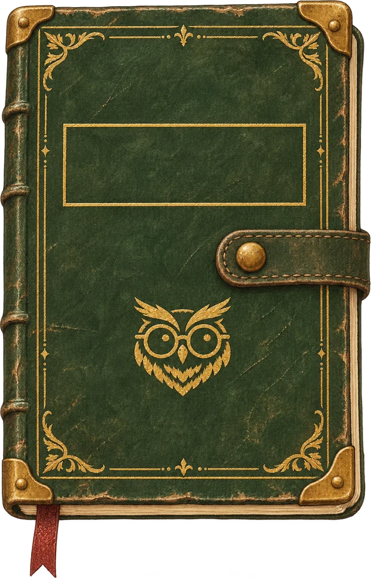
      <span class="cv-label"><b>${N.title}</b><small>${N.sub}</small></span>
      ${nbDone() ? `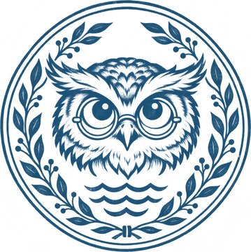` : ''}
    </button>
    <div class="cv-side">
      <div class="cv-profw"><p class="cv-say">${N.say}<small>——${N.who}</small></p></div>
      <p class="cv-prog">${fmt(ATLAS_UI.count, { n, all })}</p>
      <div class="cv-strip" aria-hidden="true">${SV_CH.map(c => ``).join('')}</div>
      <p class="cv-hint">${nbDone() ? N.done : N.coverHint}</p>
      <button class="cv-open" data-sv-view="toc">${N.open} →</button>
    </div>
  </div>`;
}
function svTocHTML() {
  const N = ATLAS_UI.nb;
  const fresh = c => Atlas.isLit(c.key) && !Atlas.isRead(c.key);
  const spot = (c, i) => {
    const [x, y] = NB_SPOT[c.key], g = svGroup(i), lit = Atlas.isLit(c.key), num = svGroupIdx(g).indexOf(i) + 1;
    return `<button class="tc-spot ${g === 'main' ? 'c' : 'b'}${c.key === 'zoom' ? ' free' : ''}${lit ? ' lit' : ''}${fresh(c) ? ' new' : ''}" style="left:${x}%;top:${y}%" data-sv-ch="${i}" aria-label="${c.nav}（${lit ? ATLAS_UI.lit : ATLAS_UI.unlit}）">${lit ? `` : `<i>${num}</i>`}<span class="tc-tip">${c.nav}</span></button>`;
  };
  const item = (c, i) => `<button class="tc-item${Atlas.isLit(c.key) ? ' lit' : ''}${fresh(c) ? ' new' : ''}" data-sv-ch="${i}"><b>${c.nav}</b><span>${c.navSub}</span>${fresh(c) ? `<em>${N.fresh}</em>` : ''}</button>`;
  const grp = g => `<section class="tc-g g-${g}"><h3>${N[g]}</h3><div>${svGroupIdx(g).map(i => item(SV_CH[i], i)).join('')}</div></section>`;
  return `<div class="tc-head"><h2>${N.tocH}</h2><p><b>${fmt(ATLAS_UI.count, { n: Atlas.count(), all: Atlas.total() })}</b>${N.tocHint}</p></div>
  <div class="tc-stage">
    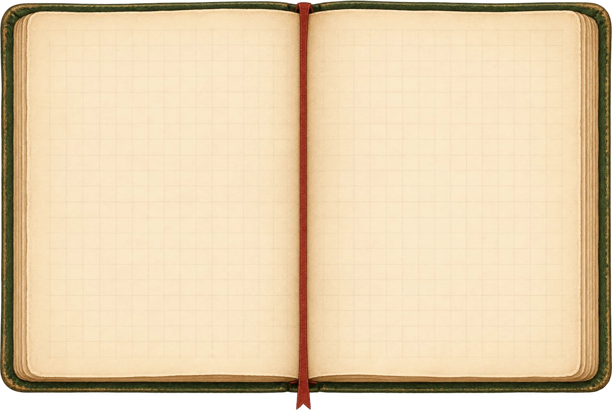
    <div class="tc-map">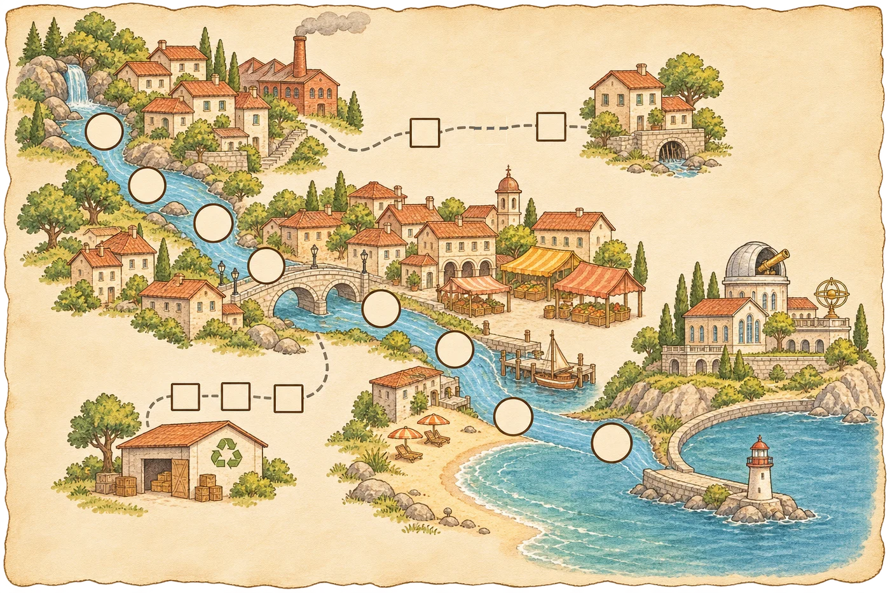${SV_CH.map(spot).join('')}</div>
    ${nbDone() ? `` : ''}
    
  </div>
  <div class="tc-list">${['main', 'src', 'rec'].map(grp).join('')}</div>`;
}

function mountInteractiveStory() {
  const root = document.getElementById('interactive-story'); if (!root) return;
  const $ = id => root.querySelector('#' + id);
  const fig = $('sv-fig'), box = $('sv-imgbox'), img = $('sv-img'), L = $('sv-L'), R = $('sv-R'), lines = $('sv-lines');
  let swapTimer = null, playRaf = 0;
  const zoomEl = $('sv-zoom'), svgfig = $('sv-svgfig');
  const stopPlay = () => { cancelAnimationFrame(playRaf); playRaf = 0; const b = $('zm-play'); if (b) b.textContent = '▶ 自動放大'; };

  function layout() {
    const ch = SV_CH[SV.ch], fr = fig.getBoundingClientRect(), br = box.getBoundingClientRect();
    const narrow = window.innerWidth <= 980;
    lines.setAttribute('viewBox', `0 0 ${fr.width} ${fr.height}`);
    const pt = c => [br.left - fr.left + c.x / 100 * br.width, br.top - fr.top + c.y / 100 * br.height];
    // 標註依點的高度排，再把重疊的往下推、超出底部的往上推
    for (const col of [L, R]) {
      const labs = [...col.querySelectorAll('.sv-lab')].filter(el => !el.hidden);
      if (narrow) { labs.forEach(el => el.style.top = ''); continue; }
      const items = labs.map(el => ({ el, want: pt(ch.callouts[+el.dataset.i])[1] - el.offsetHeight / 2, h: el.offsetHeight })).sort((a, b) => a.want - b.want);
      let y = -Infinity; items.forEach(o => { o.top = Math.max(o.want, y + 10); y = o.top + o.h; });
      const over = y - fr.height; if (over > 0) for (let k = items.length - 1, lim = fr.height; k >= 0; k--) { items[k].top = Math.min(items[k].top, lim - items[k].h); lim = items[k].top - 10; }
      items.forEach(o => o.el.style.top = Math.max(0, o.top) + 'px');
    }
    let svg = '';
    svOrder(ch).forEach(({ c, i }, n) => {
      const [px, py] = pt(c), el = root.querySelector(`.sv-lab[data-i="${i}"]`); if (!el) return;
      const er = el.getBoundingClientRect(), on = SV.active === i ? ' on' : '', g = c.game ? ' g' : '';
      const ax = c.side === 'L' ? er.right - fr.left - 4 : er.left - fr.left + 4, ay = er.top - fr.top + Math.min(er.height / 2, 14);
      if (!narrow) svg += `<line class="${g}${on}" x1="${ax.toFixed(1)}" y1="${ay.toFixed(1)}" x2="${px.toFixed(1)}" y2="${py.toFixed(1)}"></line>`;
      svg += `<circle class="${g}${on}" cx="${px.toFixed(1)}" cy="${py.toFixed(1)}" r="${narrow ? 9 : 4}"></circle>`;
      if (narrow) svg += `<text x="${px.toFixed(1)}" y="${(py + 4).toFixed(1)}" text-anchor="middle" font-size="11" font-weight="700" fill="#2B3A40">${n + 1}</text>`;
    });
    if (ch.rings && SV.tool === 2) ch.rings.forEach(([x, y]) => { const [px, py] = pt({ x, y }); svg += `<circle class="ring" cx="${px.toFixed(1)}" cy="${py.toFixed(1)}" r="${Math.max(12, br.width * 0.028).toFixed(1)}"></circle>`; });
    lines.innerHTML = svg;
  }

  function fillLabels() {
    const ch = SV_CH[SV.ch], num = new Map(svOrder(ch).map((o, n) => [o.i, n + 1]));
    const lab = (c, i) => `<button class="sv-lab${c.game ? ' g' : ''}${SV.active === i ? ' on' : ''}" data-i="${i}" ${svVisible(c) ? '' : 'hidden'}><span class="n">${num.get(i) || ''}</span><b>${c.t}</b><small>${c.s}</small></button>`;
    const byPt = (a, b) => a.c.y - b.c.y;
    const all = ch.callouts.map((c, i) => ({ c, i })).sort(byPt);
    L.innerHTML = all.filter(o => o.c.side === 'L').map(o => lab(o.c, o.i)).join('');
    R.innerHTML = all.filter(o => o.c.side === 'R').map(o => lab(o.c, o.i)).join('');
  }

  function show(ci, keepTool) {
    const changed = ci !== SV.ch; SV.ch = ci; SV.active = null;
    const ch = SV_CH[ci];
    if (changed) SV.g = null;
    Atlas.read(ch.key); svLit();
    if (!keepTool) SV.tool = 0;
    $('sv-title').textContent = ch.title; $('sv-time').textContent = ch.time;
    const pre = ch.narrPre && !SV.act.stamped;
    if (changed) stopPlay();
    const g = svGroup(ci); root.dataset.group = g;
    $('sv-h1').innerHTML = SV_BR[g].h1; $('sv-file').textContent = SV_BR[g].file;
    fig.hidden = !!(ch.zoom || ch.stage); zoomEl.hidden = !ch.zoom;
    ['match', 'tank', 'fork', 'stop', 'drift', 'city'].forEach(k => { $('sv-' + k).hidden = ch.stage !== k; });
    if (changed) { drStop(); cdStop(); }
    $('sv-band').hidden = !!ch.branch && ch.stage !== 'stop';
    if (ch.zoom) svZoomUpdate(root);
    if (ch.stage === 'match') svMatchUpdate(root);
    if (ch.stage === 'tank') svTankUpdate(root);
    if (ch.stage === 'fork') svForkUpdate(root);
    if (ch.stage === 'stop') svStopUpdate(root);
    if (ch.stage === 'drift') { svDriftUpdate(root); drCard(); }
    if (ch.stage === 'city') cdRender();
    const narrT = pre ? ch.narrPre : Array.isArray(ch.narr) ? ch.narr[SV.tool] : ch.narr;
    $('sv-narr').textContent = narrT;
    { const who = $('sv-who'), f = typeof faceOf === 'function' ? faceOf(narrT) : null; $('sv-clip').hidden = !f; if (f) { who.src = `img/${f[1]}.webp`; who.alt = f[0]; } }
    root.querySelectorAll('[data-sv-ch]').forEach(b => { if (+b.dataset.svCh === ci) b.setAttribute('aria-current', 'step'); else b.removeAttribute('aria-current'); });
    $('sv-tools').hidden = !ch.lab; $('sv-tools').classList.toggle('hint', SV.tool < 2);
    const act = $('sv-act'), ah = svActHTML(ci); act.innerHTML = ah; act.hidden = !ah;
    if (ch.key === 'rain') svRain(root);
    if (ch.key === 'make') root.querySelector('.a-blow').classList.toggle('heat', SV.act.blow > 0 && SV.act.blow < 100);
    root.querySelectorAll('[data-sv-tool]').forEach(b => b.setAttribute('aria-pressed', String(+b.dataset.svTool === SV.tool)));
    box.className = `sv-imgbox${ch.scene ? ' scene' : ''}${ch.lab ? ' t' + SV.tool : ''}${ch.fig ? ' isfig' : ''}`;
    const src = ch.img ? `img/${pre && ch.imgPre ? ch.imgPre : ch.img}.webp` : (img.dataset.cur || ''), cur = img.dataset.cur;
    img.dataset.cur = src;
    if (!src) { /* 沒有標本圖的章節（墨線圖、縮放）不動 img */ }
    else if (!cur) img.src = src;
    else if (cur === src) { /* 同一張圖不重載 */ }
    else if (!RM) { box.classList.add('swap'); clearTimeout(swapTimer); swapTimer = setTimeout(() => { img.src = src; img.onload = () => { box.classList.remove('swap'); layout(); }; }, 300); }
    else img.src = src;
    img.alt = `${pre ? '還沒碎的瓶子' : ch.title}`;
    fillLabels(); svUpdateSpectrum(root); if (ch.key === 'bay') svTime(root);
    const gi = svGroupIdx(g), pos = gi.indexOf(ci);
    $('sv-prev').disabled = pos === 0; $('sv-next').disabled = pos === gi.length - 1;
    $('sv-prev').textContent = '← 上一頁'; $('sv-next').textContent = '下一頁 →';
    svGame();
    svEnd();
    requestAnimationFrame(layout);
  }

  // 這一頁在遊戲裡點亮了沒
  function svLit() {
    const k = SV_CH[SV.ch].key, lit = Atlas.isLit(k);
    $('sv-lit').innerHTML = `<span class="sv-sealtag${lit ? '' : ' off'}">${lit ? ATLAS_UI.lit : ATLAS_UI.unlit}</span>${lit ? fmt(ATLAS_UI.howLit, { at: atlasWhenLit(k), w: ATLAS_WHEN[k] }) : fmt(ATLAS_UI.how, { w: ATLAS_WHEN[k] })}`;
    $('sv-prog').textContent = fmt(ATLAS_UI.count, { n: Atlas.count(), all: Atlas.total() });
  }
  // 「遊戲裡」標籤與小卡：用老闆的話講這件事在遊戲裡怎麼算
  function svGame() {
    const ch = SV_CH[SV.ch], refs = ch.refs || [], card = $('sv-gcard'), R = SV.g && GAME_REF[SV.g];
    $('sv-gchips').innerHTML = refs.length ? `<span class="sv-gtag">${ATLAS_UI.gtag}</span>${refs.map(k => `<button class="sv-gchip" data-sv-g="${k}" aria-pressed="${SV.g === k}">${GAME_REF[k][0]}</button>`).join('')}` : '';
    card.hidden = !R;
    requestAnimationFrame(layout);
    if (R) card.innerHTML = `<span class="sv-gtag">${ATLAS_UI.gtag}</span><b>${R[0]}</b><p>${R[1]}</p><div class="sv-grow"><button class="sv-gplay" data-a="setup">${ATLAS_UI.gplay} →</button><button class="sv-gx" data-sv-gx aria-label="關閉">×</button></div>`;
  }
  // 結尾卡片：主線結尾（切到實驗室）、支線一配對完成、支線二點過攔截點
  function svEnd() {
    const ch = SV_CH[SV.ch], end = $('sv-end'), a = SV.act, was = end.hidden;
    const go = (k, t) => `<button class="sv-brb" data-sv-go="${k}">${t}</button>`, base = '<button class="go" data-a="setup">開新局</button>' + (S.storyFrom === 'ending' && S.g ? `<button class="home" data-a="backend">${ATLAS_UI.back}</button>` : '');
    let h = '';
    if (ch.lab && SV.tool === 2) h = `<p>一年後，這個瓶子還在。只是變成數不清的小碎片，散在海灣裡。<br>下一張工作單，換你決定：快清，還是收走。</p><small>玩完一局，年終結算會告訴你：你蓋過章的單，最後去了哪裡。</small><div class="sv-brrow">${go('src', '其他的微塑膠，從哪裡來？')}${go('rec', '如果它被回收了呢？')}</div><div>${base}<button class="home" data-a="title">${ATLAS_UI.home}</button></div>`;
    else if (ch.key === 'srcday' && a.city.res[1]) h = `<p>六條路，有的經過污水處理廠，有的直接進海。<br>最難攔的，是那些一出生就很小的。</p><div class="sv-brrow">${go('rec', '另一條支線：如果它被回收了呢？')}${go('main', '回到主線')}</div><div>${base}</div>`;
    else if (ch.key === 'rstop' && a.stop >= 0) h = `<p>越早攔，要處理的越少；變成微塑膠以後，幾乎收不回來。<br>遊戲裡的「收走」和「快清」，差別就在這裡。</p><div class="sv-brrow">${go('src', '另一條支線：其他的微塑膠從哪裡來？')}${go('main', '回到主線')}</div><div>${base}</div>`;
    end.innerHTML = h; end.hidden = !h; end.classList.toggle('flow', !ch.lab);
    if (was && h) { end.classList.remove('pop'); void end.offsetWidth; end.classList.add('pop'); }
  }
  // ---------- 漂流實驗 ----------
  let drRaf = 0;
  function drStop() { cancelAnimationFrame(drRaf); drRaf = 0; if (SV.act.drift.busy) { SV.act.drift.busy = false; } }
  function drCard() {
    const d = SV.act.drift, c = $('dr-card'), e = DR_END[d.last];
    c.hidden = !e; if (e) c.innerHTML = `<div><b>${e.t}</b><p>${e.s}</p></div>`;
  }
  function drRun() {
    const d = SV.act.drift; if (!d.p || !d.w || d.busy) return;
    const path = DR_PATH[d.p][d.w], end = drEnd(d.p, d.w), sink = d.p === 'pet';
    root.querySelectorAll('#dr-trails path').forEach(x => x.classList.add('old'));
    const tr = document.createElementNS('http://www.w3.org/2000/svg', 'path');
    tr.setAttribute('d', path); tr.setAttribute('class', 'dr-trail k-' + d.p); $('dr-trails').appendChild(tr);
    const L = tr.getTotalLength(), pc = DR_PIECE.find(o => o.k === d.p);
    $('dr-piece').innerHTML = `<image href="img/${pc.img}.webp" x="-17" y="-13" width="34" height="26"/>`;
    $('dr-card').hidden = true;
    const finish = () => { d.busy = false; d.found[end] = true; d.last = end; tr.style.strokeDashoffset = 0; svDriftUpdate(root); drCard(); };
    const place = k => {
      const pt = tr.getPointAtLength(L * k), g = $('dr-piece');
      g.setAttribute('transform', `translate(${pt.x.toFixed(1)} ${pt.y.toFixed(1)})`); g.style.opacity = sink ? (1 - 0.75 * k).toFixed(2) : 1;
      tr.style.strokeDasharray = L; tr.style.strokeDashoffset = (L * (1 - k)).toFixed(1);
      const y = sink ? 14 + 90 * k : 14 + Math.sin(k * 20) * 1.5;
      $('dr-dot').innerHTML = `<circle cx="30" cy="${y.toFixed(1)}" r="5" class="k-${d.p}"/>`;
    };
    if (RM) { place(1); return finish(); }
    d.busy = true; svDriftUpdate(root);
    const t0 = performance.now(), dur = sink ? 1700 : 3200;
    const f = now => { const k = Math.min(1, (now - t0) / dur), e = 1 - Math.pow(1 - k, 2); place(e); if (k < 1) drRaf = requestAnimationFrame(f); else finish(); };
    drRaf = requestAnimationFrame(f);
  }
  // ---------- 城市的一天 ----------
  let cdRaf = 0, cd = null;
  const NS = 'http://www.w3.org/2000/svg';
  function cdStop() { cancelAnimationFrame(cdRaf); cdRaf = 0; if (SV.act.city.running) { SV.act.city.running = false; cd = null; cdRender(); } }
  function cdSample(d) {
    let sp = $('cd-svg').querySelector('.cd-samp'); if (!sp) { sp = document.createElementNS(NS, 'path'); sp.setAttribute('class', 'cd-samp'); $('cd-svg').appendChild(sp); }
    sp.setAttribute('d', d); const L = sp.getTotalLength(), n = Math.max(2, Math.ceil(L / 6)), pts = [];
    for (let i = 0; i <= n; i++) { const q = sp.getPointAtLength(L * i / n); pts.push([q.x, q.y]); }
    return { pts, L };
  }
  const nightAt = t => { const h = t % 24; return h < 5 ? 1 : h < 7 ? (7 - h) / 2 : h < 17 ? 0 : h < 20 ? (h - 17) / 3 : 1; };
  const hh = t => `${String(Math.floor(t % 24)).padStart(2, '0')}:${String(Math.round((t % 1) * 60) % 60).padStart(2, '0')}`;
  function cdTools(picks) {
    const im = (n, x, y, w) => { const ar = { stop_filter: 1.111, drain_net: 0.902, pellet_trap: 1.419, sludge_pile: 1.81 }[n], h = w / ar; return `<image href="img/${n}.webp" x="${x - w / 2}" y="${(y - h / 2).toFixed(1)}" width="${w}" height="${h.toFixed(1)}"/>`; };
    let t = im('sludge_pile', 560, 515, 64);
    if (picks.includes('filter')) t += im('stop_filter', 140, 250, 44);
    if (picks.includes('net')) t += im('drain_net', 722, 330, 40);
    if (picks.includes('trap')) t += im('pellet_trap', 745, 262, 46);
    $('cd-tools').innerHTML = t;
  }
  function cdRender() {
    const c = SV.act.city, res = c.res[c.round === 2 ? 1 : 0] && !c.running ? c.res[c.round === 2 ? 1 : 0] : null;
    $('cd-play').textContent = c.running ? '……' : c.round === 0 ? '▶ 開始這一天' : '▶ 再跑一天';
    $('cd-play').disabled = c.running || (c.round >= 1 && c.picks.length !== 2);
    $('cd-r2').hidden = c.round < 1 || c.running;
    $('cd-picks').innerHTML = CD_PICK.map(o => `<button data-cd-pick="${o.k}" aria-pressed="${c.picks.includes(o.k)}"><b>${o.t}</b><small>${o.s}</small></button>`).join('');
    if (!c.running) { cdTools(c.round >= 1 ? c.picks : []); $('cd-night').style.opacity = 0; $('cd-clock').textContent = c.round ? '06:00' : '06:00'; }
    const r1 = c.res[0], r2 = c.res[1];
    if (!c.running) {
      const show = r2 && c.round === 2 ? r2 : r1;
      ['road', 'caught', 'sludge', 'bay'].forEach(k => { $('cd-n-' + k).textContent = !show ? 0 : k === 'road' ? 0 : k === 'bay' ? show.total : show[k]; });
      $('cd-types').innerHTML = !r1 ? '' : Object.entries(CD_TYPES).map(([k, o]) => `<div><small>${o.t}</small><b>${r2 && c.round === 2 ? `${r1.bay[k] || 0} → ${r2.bay[k] || 0}` : r1.bay[k] || 0}</b></div>`).join('');
    }
    let msg = '';
    if (c.running) msg = '';
    else if (!r1) msg = '從早上六點到隔天早上，看看每一件小事掉下的微粒去了哪裡。';
    else if (c.round === 2 && r2) {
      const top = Object.entries(r2.bay).sort((a, b) => b[1] - a[1])[0];
      msg = `上一輪流進海灣 <b>${r1.total}</b> 顆，這一輪 <b>${r2.total}</b> 顆。${top ? `現在最多的是「${CD_TYPES[top[0]].t}」。` : ''}<br>漁船油漆和塑膠柔珠這兩條路，這四樣都攔不到：柔珠要從源頭就不加，油漆要換材料。<b>攔得越早、越靠近源頭，越有用。</b>`;
    } else {
      const top = Object.entries(r1.bay).sort((a, b) => b[1] - a[1])[0];
      msg = `一天下來，流進海灣 <b>${r1.total}</b> 顆。最多的是「${CD_TYPES[top[0]].t}」${top[0] === 'tyre' ? '：它們白天留在路上，下雨時一次沖進雨水管，完全不經過污水處理廠。' : '。'}<br>污水處理廠攔下了 ${r1.sludge} 顆，變成污泥。<b>換你試試：選兩樣攔截，再跑一天。</b>`;
    }
    $('cd-msg').innerHTML = msg;
    if (!c.running && !r1) $('cd-ev').textContent = '按「開始這一天」';
  }
  function cdRun() {
    const c = SV.act.city; if (c.running) return;
    const round = c.round === 0 ? 1 : 2, picks = round === 2 ? c.picks.slice() : [], P = cdPlan(picks), res = cdTally(P);
    const finish = () => { c.running = false; c.round = round; c.res[round - 1] = res; cd = null; cdRender(); $('cd-ev').textContent = '早上六點，一天過去了'; svEnd(); };
    $('cd-dots').innerHTML = ''; $('cd-road').innerHTML = ''; $('cd-fx').innerHTML = '';
    if (RM) { $('cd-clock').textContent = '06:00'; return finish(); }
    c.running = true; cdTools(picks); cdRender();
    const rnd = svRand(77 + round);
    const dots = P.map(p => {
      const el = document.createElementNS(NS, 'circle'); el.setAttribute('r', p.type === 'tyre' ? 4.5 : 5); el.setAttribute('class', 'cd-d t-' + p.type); el.style.opacity = 0; $('cd-dots').appendChild(el);
      return { ...p, el, st: 'wait', x: 0, y: 0 };
    });
    // 每顆的出生時刻與路線
    dots.forEach(p => {
      const n = p.n || 0;
      if (p.ev === 'wash') { p.t = 7 + dots.indexOf(p) * 0.05; p.path = p.fate === 'filter' ? 'M95 226 L130 248' : 'M95 226 ' + CD_SEW1 + (p.fate === 'bay' ? ' ' + CD_SEW2.slice(9) : ''); }
      if (p.ev === 'face') { p.t = 22 + n * 0.1; p.path = 'M125 166 Q100 190 95 226 ' + CD_SEW1 + (p.fate === 'bay' ? ' ' + CD_SEW2.slice(9) : ''); }
      if (p.ev === 'pellet') { p.t = 10 + n * 0.08; p.path = p.fate === 'trap' ? 'M738 236 L745 255' : 'M738 236 Q775 236 800 250 Q818 262 826 285 Q832 300 836 318'; }
      if (p.ev === 'boat') { p.t = 14 + n * 0.15; p.path = 'M915 230 Q912 255 918 290 Q922 320 915 350'; }
      if (p.ev === 'drive') { p.t = (n < 6 ? 8 : 18) + 0.15 + (n % 6) * 0.13; p.road = [160 + (n % 6) * 95 + rnd() * 30, 262 + rnd() * 8]; }
      if (p.ev === 'litter') { p.t = 12 + n * 0.04; p.road = [395 + n * 12 + rnd() * 6, 258 + rnd() * 10]; }
    });
    cd = { t: 6, last: performance.now(), dots, picks, swept: false, rained: false };
    const speed = 1 / 1.15; // 每秒幾小時
    const tick = now => {
      if (!cd) return;
      const dt = Math.min(0.05, (now - cd.last) / 1000); cd.last = now; cd.t += dt * speed;
      const t = cd.t;
      $('cd-clock').textContent = hh(t); $('cd-night').style.opacity = nightAt(t).toFixed(2);
      const ev = CD_EV.filter(e => e[0] <= t && (e[2] !== 'sweep' || picks.includes('sweep'))).pop(); $('cd-ev').textContent = ev ? ev[1] : '清晨';
      // 車子、掃街車、下雨
      let fx = '';
      [8, 18].forEach(t0 => { const k = (t - t0) / 1; if (k > 0 && k < 1) fx += `<image href="img/town_car.webp" x="${(-120 + k * 1240).toFixed(0)}" y="214" width="92" height="48.6"/>`; });
      if (picks.includes('sweep')) { const k = (t - 23.5) / 1.2; if (k > 0 && k < 1) { const x = -120 + k * 1240; fx += `<image href="img/street_sweeper.webp" x="${x.toFixed(0)}" y="208" width="80" height="56"/>`; dots.forEach(p => { if (p.st === 'road' && p.fate === 'swept' && p.x < x + 40) { p.st = 'done'; p.el.style.transition = 'opacity .4s'; p.el.style.opacity = 0; } }); } }
      if (t > 25.6 && t < 28.4) fx += `<image href="img/rain_cloud.webp" x="160" y="-20" width="230" height="166"/><image href="img/rain_cloud.webp" x="520" y="-30" width="260" height="188"/><g class="cd-rain">${Array.from({ length: 40 }, (_, i) => `<line x1="${i * 26}" y1="0" x2="${i * 26 - 18}" y2="40"/>`).join('')}</g>`;
      $('cd-fx').innerHTML = fx;
      dots.forEach(p => {
        if (p.st === 'wait' && t >= p.t) {
          if (p.road) { p.st = 'road'; [p.x, p.y] = p.road; p.el.setAttribute('cx', p.x.toFixed(1)); p.el.setAttribute('cy', p.y.toFixed(1)); p.el.style.opacity = 1; }
          else { const sm = cdSample(p.path); p.pts = sm.pts; p.L = sm.L; p.prog = 0; p.st = 'move'; p.el.style.opacity = 1; }
        }
        if (p.st === 'road' && t >= 26 && (p.fate === 'bay' || p.fate === 'net')) {
          const path = `M${p.x.toFixed(1)} ${p.y.toFixed(1)} ` + (p.fate === 'net' ? 'L302 276 V330 Q302 349 322 349 H675 Q700 349 702 326' : CD_RAIN);
          const sm = cdSample(path); p.pts = sm.pts; p.L = sm.L; p.prog = 0; p.st = 'move';
        }
        if (p.st === 'move') {
          p.prog = Math.min(1, p.prog + dt * 260 / p.L);
          const i = p.prog * (p.pts.length - 1), a = p.pts[Math.floor(i)], b = p.pts[Math.min(p.pts.length - 1, Math.floor(i) + 1)], f = i % 1;
          p.x = a[0] + (b[0] - a[0]) * f; p.y = a[1] + (b[1] - a[1]) * f;
          p.el.setAttribute('cx', p.x.toFixed(1)); p.el.setAttribute('cy', p.y.toFixed(1));
          if (p.prog >= 1) { p.st = 'done'; if (p.fate !== 'bay') { p.el.style.transition = 'opacity .5s'; p.el.style.opacity = 0; } }
        }
      });
      // 計數
      const road = dots.filter(p => p.st === 'road').length, done = dots.filter(p => p.st === 'done');
      $('cd-n-road').textContent = road; $('cd-n-bay').textContent = done.filter(p => p.fate === 'bay').length;
      $('cd-n-sludge').textContent = done.filter(p => p.fate === 'sludge').length; $('cd-n-caught').textContent = done.filter(p => !['bay', 'sludge'].includes(p.fate)).length;
      if (t >= 30 && dots.every(p => p.st === 'done')) return finish();
      cdRaf = requestAnimationFrame(tick);
    };
    cdRaf = requestAnimationFrame(tick);
  }
  const step = d => { const gi = svGroupIdx(svGroup(SV.ch)), pos = gi.indexOf(SV.ch), n = gi[Math.max(0, Math.min(gi.length - 1, pos + d))]; if (n !== SV.ch) { show(n); root.scrollTo({ top: 0, behavior: RM ? 'auto' : 'smooth' }); } };
  // 封面／目錄／內頁切換
  function setView(v) {
    if (v !== 'page') { stopPlay(); drStop(); cdStop(); }
    SV.view = v; root.dataset.view = v;
    if (v === 'cover') $('sv-cover').innerHTML = svCoverHTML();
    if (v === 'toc') $('sv-toc').innerHTML = svTocHTML();
    if (v === 'page') { root.querySelectorAll('.sv-nav [data-sv-ch]').forEach(b => { const c = SV_CH[+b.dataset.svCh], lit = Atlas.isLit(c.key); b.classList.toggle('lit', lit); b.querySelector('i').innerHTML = lit ? `` : svGroupIdx(svGroup(+b.dataset.svCh)).indexOf(+b.dataset.svCh) + 1; }); show(SV.ch, true); }
    root.scrollTo({ top: 0 });
  }
  const onClick = e => {
    const t = e.target;
    const vb = t.closest('[data-sv-view]'); if (vb) return setView(vb.dataset.svView);
    const gb = t.closest('[data-sv-go]'); if (gb) {
      const k = gb.dataset.svGo;
      if (k === 'main') { SV.tool = 2; show(svIdx('lab'), true); }
      else show(svIdx(k === 'src' ? 'src' : 'rflow'));
      return root.scrollTo({ top: 0, behavior: RM ? 'auto' : 'smooth' });
    }
    if (t.closest('[data-sv-gx]')) { SV.g = null; return svGame(); }
    const gc = t.closest('[data-sv-g]'); if (gc) { SV.g = SV.g === gc.dataset.svG ? null : gc.dataset.svG; return svGame(); }
    const eb = t.closest('[data-sv-eat]'); if (eb) { SV.act.eat = eb.dataset.svEat; $('sv-act').innerHTML = svActHTML(SV.ch); return; }
    const cb = t.closest('[data-sv-cap]'); if (cb) { SV.act.cap = cb.dataset.svCap; $('sv-act').innerHTML = svActHTML(SV.ch); return; }
    // 配對遊戲：先點微粒或先點來源都可以
    const mp = t.closest('[data-mt-p]'), ms = t.closest('[data-mt-s]');
    if (mp || ms) {
      const a = SV.act;
      if (mp) { a.msel = a.msel === mp.dataset.mtP ? null : mp.dataset.mtP; a.mmsg = ''; if (!a.ssel || !a.msel) return svMatchUpdate(root); }
      if (ms) { if (a.match[ms.dataset.mtS]) return; a.ssel = ms.dataset.mtS; if (!a.msel) { a.mmsg = `${SV_SRC.find(o => o.k === a.ssel).name}——它會掉出哪一顆？點一顆微粒。`; svMatchUpdate(root); root.querySelector(`[data-mt-s="${a.ssel}"]`).classList.add('sel'); return; } }
      const ok = a.msel === a.ssel, pk = a.msel, sk = a.ssel; a.msel = null; a.ssel = null;
      if (ok) { a.match[pk] = true; a.mlast = pk; a.mmsg = ''; svMatchUpdate(root, pk); svEnd(); }
      else {
        a.mmsg = `不是這個。提示：${SV_SRC.find(o => o.k === pk).hint}`; svMatchUpdate(root);
        [root.querySelector(`[data-mt-p="${pk}"]`), root.querySelector(`[data-mt-s="${sk}"]`)].forEach(el => { if (el && !RM) { el.classList.remove('shake'); void el.offsetWidth; el.classList.add('shake'); } });
      }
      return;
    }
    // 浮沉分選
    if (t.closest('#tk-pour')) { const tk = SV.act.tank; tk.st = 1; svTankUpdate(root); setTimeout(() => { if (tk.st === 1) { tk.st = 2; svTankUpdate(root); } }, RM ? 0 : 1100); return; }
    const tf = t.closest('[data-tk]'); if (tf && SV.act.tank.st === 2) { const tk = SV.act.tank, i = +tf.dataset.tk; if (tk.done[i]) return; tk.sel = tk.sel === i ? null : i; tk.msg = ''; return svTankUpdate(root); }
    const tb2 = t.closest('[data-tk-bin]'); if (tb2) {
      const tk = SV.act.tank; if (tk.st < 2) return;
      if (tk.sel == null) { tk.msg = '先點一片碎片。'; return svTankUpdate(root); }
      const f = TK_FL[tk.sel], ok = (f.kind === 'pet') === (tb2.dataset.tkBin === 'sink');
      if (ok) { tk.done[tk.sel] = true; tk.sel = null; tk.msg = ''; }
      else { tk.msg = '不對喔。它是浮在水面，還是沉到底？看它在水裡的位置。'; if (!RM) { tb2.classList.remove('shake'); void tb2.offsetWidth; tb2.classList.add('shake'); } }
      return svTankUpdate(root);
    }
    const fk = t.closest('[data-fk]'); if (fk) { const f = SV.act.fork; f.sel = fk.dataset.fk; f.seen[f.sel] = true; return svForkUpdate(root); }
    const sb = t.closest('[data-sv-step]'); if (sb) return step(+sb.dataset.svStep);
    const dp2 = t.closest('[data-dr-p]'); if (dp2 && !SV.act.drift.busy) { SV.act.drift.p = dp2.dataset.drP; return svDriftUpdate(root); }
    const dw = t.closest('[data-dr-w]'); if (dw && !SV.act.drift.busy) { SV.act.drift.w = dw.dataset.drW; return svDriftUpdate(root); }
    if (t.closest('#dr-go')) return drRun();
    if (t.closest('#cd-play')) return cdRun();
    const cp = t.closest('[data-cd-pick]'); if (cp && !SV.act.city.running) { const c = SV.act.city, k = cp.dataset.cdPick; c.picks = c.picks.includes(k) ? c.picks.filter(x => x !== k) : c.picks.length < 2 ? [...c.picks, k] : [c.picks[1], k]; return cdRender(); }
    const sp = t.closest('[data-st]'); if (sp) { SV.act.stop = +sp.dataset.st; svStopUpdate(root); svUpdateSpectrum(root); return svEnd(); }
    const chb = t.closest('[data-sv-ch]'); if (chb) { if (SV.view !== 'page') { SV.ch = +chb.dataset.svCh; SV.tool = 0; return setView('page'); } return show(+chb.dataset.svCh); }
    const tb = t.closest('[data-sv-tool]'); if (tb) { SV.tool = +tb.dataset.svTool; return show(SV.ch, true); }
    const lb = t.closest('.sv-lab'); if (lb) { const i = +lb.dataset.i, c = SV_CH[SV.ch].callouts[i]; if (c && c.g) { SV.g = c.g; svGame(); } SV.active = SV.active === i ? null : i; root.querySelectorAll('.sv-lab').forEach(x => x.classList.toggle('on', +x.dataset.i === SV.active)); return layout(); }
    const dp = t.closest('[data-sv-drop]'); if (dp) return svDrop(dp.dataset.svDrop);
    if (t.closest('[data-sv-stamp]') && !SV.act.stamped) return svStamp();
    if (t.closest('[data-sv-unstamp]')) { SV.act.stamped = false; return show(SV.ch, true); }
    const fb = t.closest('[data-sv-force]'); if (fb) { const k = fb.dataset.svForce; SV.act.f[k] = !SV.act.f[k]; fb.setAttribute('aria-pressed', String(SV.act.f[k])); $('sv-force-fig').innerHTML = svForceFig(); $('sv-force-res').innerHTML = svForceRes(); return svUpdateSpectrum(root); }
    if (t.closest('#zm-play')) {
      if (playRaf) return stopPlay();
      if (SV.zoom >= 4.98) SV.zoom = 0;
      const z0 = SV.zoom, t0 = performance.now(), dur = (5 - z0) * 2400;
      $('zm-play').textContent = '❚❚ 暫停';
      const step = now => { const k = Math.min(1, (now - t0) / dur), e = k < 0.5 ? 2 * k * k : 1 - Math.pow(-2 * k + 2, 2) / 2; SV.zoom = z0 + (5 - z0) * e; svZoomUpdate(root); if (k < 1) playRaf = requestAnimationFrame(step); else stopPlay(); };
      if (RM) { SV.zoom = 5; svZoomUpdate(root); return stopPlay(); }
      playRaf = requestAnimationFrame(step); return;
    }
    if (t.closest('#sv-prev')) return step(-1);
    if (t.closest('#sv-next')) return step(1);
  };
  const onHover = e => { const lb = e.target.closest && e.target.closest('.sv-lab'); const i = lb ? +lb.dataset.i : null; if (i === SV.active) return; SV.active = i; root.querySelectorAll('.sv-lab').forEach(x => x.classList.toggle('on', +x.dataset.i === i)); layout(); };
  const onKey = e => {
    if (S.screen !== 'story' || e.target.closest('input,textarea') || SV.view !== 'page') return;
    if ((e.key === 'Enter' || e.key === ' ') && e.target.closest && e.target.closest('[data-tk]')) { e.preventDefault(); e.target.closest('[data-tk]').dispatchEvent(new MouseEvent('click', { bubbles: true })); return; }
    if (e.key === 'ArrowRight') { e.preventDefault(); step(1); }
    if (e.key === 'ArrowLeft') { e.preventDefault(); step(-1); }
  };
  const onInput = e => {
    const t = e.target;
    if (t.matches('[data-sv-rain]')) { SV.act.rain = +t.value; svRain(root); }
    if (t.matches('[data-sv-time]')) { SV.act.time = +t.value; svUpdateSpectrum(root); svTime(root); }
    if (t.matches('[data-sv-blow]')) {
      SV.act.blow = +t.value;
      $('sv-blow-body').setAttribute('d', svBlowPath(SV.act.blow / 100)); $('sv-blow-res').innerHTML = svBlowRes();
      root.querySelector('.a-blow').classList.toggle('heat', SV.act.blow > 0 && SV.act.blow < 100);
      svUpdateSpectrum(root);
    }
    if (t.matches('#zm-range')) { stopPlay(); SV.zoom = +t.value / 100; svZoomUpdate(root); }
  };
  function svDrop(k) {
    const g = root.querySelector(`[data-dp="${k}"]`); if (!g) return;
    SV.act.drop[k] = true; SV.act.lastDrop = k;
    g.classList.remove('in'); g.style.transition = 'none'; g.style.setProperty('--y', '-40px'); void g.getBoundingClientRect();
    g.style.transition = ''; g.classList.add('in'); g.style.setProperty('--y', g.dataset.y + 'px');
    root.querySelector(`[data-sv-drop="${k}"]`).setAttribute('aria-pressed', 'true');
    root.querySelector('.a-float .sv-act-res').innerHTML = svDropRes();
  }
  function svStamp() {
    const fx = $('sv-stampfx');
    SV.act.stamped = true;
    if (RM) return show(SV.ch, true);
    fx.classList.remove('go'); void fx.offsetWidth; fx.classList.add('go'); box.classList.add('thud');
    const at = SV.ch;
    setTimeout(() => { box.classList.remove('thud'); if (SV.ch === at) show(at, true); }, 420);
  }
  const onResize = () => layout();
  root.addEventListener('click', onClick); root.addEventListener('input', onInput); root.addEventListener('mouseover', onHover); root.addEventListener('focusin', onHover);
  window.addEventListener('keydown', onKey); window.addEventListener('resize', onResize);
  img.addEventListener('load', layout);
  interactiveStoryCleanup = () => { root.removeEventListener('click', onClick); root.removeEventListener('input', onInput); root.removeEventListener('mouseover', onHover); root.removeEventListener('focusin', onHover); window.removeEventListener('keydown', onKey); window.removeEventListener('resize', onResize); clearTimeout(swapTimer); stopPlay(); drStop(); cdStop(); };
  show(SV.ch, true);
  setView(SV.view);
}

function cleanupInteractiveStory() {
  if (interactiveStoryCleanup) { interactiveStoryCleanup(); interactiveStoryCleanup = null; }
}

// Animation frames use a disposable view, leaving the actual rules state intact.
let eventPresentation = null;
function presentationCapture(game) { return JSON.parse(JSON.stringify(game)); }
function presentationBegin(before, actual) {
  presentationEnd();
  if (!before) return;
  before.mainDone = actual.mainDone;
  before.boughtThisTurn = actual.boughtThisTurn;
  eventPresentation = { actual, view: before, nodes: new Set() };
}
function presentationGame(actual) {
  return eventPresentation && eventPresentation.actual === actual ? eventPresentation.view : actual;
}
function presentationEnd() {
  if (!eventPresentation) return;
  eventPresentation.nodes.forEach(node => node.remove());
  document.querySelectorAll('.event-evidence').forEach(node => node.classList.remove('event-evidence'));
  eventPresentation = null;
}
function presentationApply(ev) {
  const replay = eventPresentation;
  if (!replay || S.g !== replay.actual) return;
  const g = replay.view, actual = replay.actual, card = g.cards.find(c => c.id === ev.id), player = g.players[ev.p];
  const relocate = (c, location) => { c.loc = location; c.path.push(location); };
  switch (ev.type) {
    case 'crush': card.size = ev.to; card.stamps.push(ev.p); player.money += ev.gain; g.crushesThisRound++; break;
    case 'caught': player.money -= ev.fine; break;
    case 'collect':
      card.stamps.push(ev.p); relocate(card, 'plant'); player.money += ev.gain;
      card.plantSeq = actual.cards.find(c => c.id === ev.id).plantSeq; break;
    case 'neutral': card.size = 1; card.stamps.push('n'); g.crushesThisRound++; break;
    case 'move': relocate(card, ev.to); break;
    case 'toBay': relocate(card, 'bay'); g.track++; g.lastBayCard = ev.id; break;
    case 'overflow':
      ev.ids.forEach(id => { const c = g.cards.find(item => item.id === id); c.size = Math.max(c.size, 1); relocate(c, 2); });
      g.track++; break;
    case 'track': g.track = ev.track; break;
    case 'levelUp':
      g.level = ev.level;
      Object.entries(ev.fines).forEach(([p, ids]) => { g.players[p].money -= ids.length * E.CONFIG.fineUp; }); break;
    case 'buy':
      player.money -= ev.price; player.techs.push(ev.tech); g.market = g.market.filter(t => t !== ev.tech);
      g.plantCap = actual.plantCap; g.overflowN = actual.overflowN; break;
    case 'invest':
      player.money -= ev.amount; player.invested[ev.project] += ev.amount;
      Object.assign(g.reforms[ev.project], { funded: ev.funded, cost: ev.cost });
      if (ev.first) g.reforms[ev.project].first = ev.p;
      break;
    case 'reformDone': g.reforms[ev.project] = { ...actual.reforms[ev.project] }; g.removedCount = actual.removedCount; break;
    case 'leak': player.money--; g.track = ev.track; break;
    case 'odd': player.money++; break;
    case 'collapse': g.collapsed = true; g.over = true; break;
  }
}
function presentationStyle() {
  if (document.getElementById('event-presentation-style')) return;
  const style = document.createElement('style'); style.id = 'event-presentation-style';
  style.textContent = `
    .event-receipt{position:fixed;z-index:96;left:50%;top:72px;transform:translateX(-50%);width:min(560px,calc(100vw - 28px));display:flex;gap:12px;align-items:center;padding:14px 18px;background:#f5eedf;color:#173846;border-radius:10px;box-shadow:0 8px 28px #07192255;pointer-events:none}
    .event-receipt img{width:42px;height:42px;object-fit:contain;flex:none}.event-receipt strong{display:block;font-size:17px;line-height:1.5}.event-receipt p{margin:3px 0 0;font-size:14px;line-height:1.5}.event-token{position:fixed;z-index:95;top:0;left:0;width:62px;height:62px;border-radius:50%;background:#f5eedf;box-shadow:0 5px 18px #07192255;pointer-events:none;overflow:visible}.event-token>img{width:100%;height:100%;border-radius:inherit;object-fit:cover}.event-token .event-stamp{position:absolute;right:-8px;bottom:-5px;width:30px;height:30px;object-fit:contain}.event-token b{position:absolute;left:-6px;top:-16px;font-size:12px;background:#173846;color:#fff;padding:2px 6px;border-radius:4px;white-space:nowrap}.event-token.box{border-radius:5px;background:#d5aa68;border:2px solid #77572e}.event-token.box>img{padding:8px;object-fit:contain}.event-token.box:after{content:'';position:absolute;left:43%;top:0;width:14%;height:100%;background:#f7e4bc66}.event-evidence{outline:4px solid #d95939!important;outline-offset:5px!important}.event-route{position:fixed;inset:0;z-index:94;pointer-events:none;width:100vw;height:100vh}.event-route path{fill:none;stroke:#f4bd52;stroke-width:4;stroke-dasharray:6 7;stroke-linecap:round}
    @media(max-width:700px){.event-receipt{top:62px;padding:10px 13px;gap:9px}.event-receipt strong{font-size:15px}.event-receipt p{font-size:13px}.event-receipt img{width:34px;height:34px}.event-token{width:48px;height:48px}}
  `;
  document.head.appendChild(style);
}
function presentationNode(tag, className) {
  const node = document.createElement(tag); node.className = className;
  document.body.appendChild(node); eventPresentation.nodes.add(node); return node;
}
function presentationPlace(location) {
  if (location === 'plant') return elCenter('.plantz') || elCenter('.plg');
  if (location === 'bay') return elCenter('.bayz');
  return elCenter('.zone.z' + location);
}
function presentationLocation(location) {
  return typeof location === 'number' ? DISTRICTS[location] : location === 'plant' ? '處理場' : '海灣';
}
function presentationCompany(p) { return p === 'n' ? 'neutral' : S.g.players[p].company; }
function presentationReceipt(title, detail, p) {
  const old = document.querySelector('.event-receipt');
  if (old) { eventPresentation.nodes.delete(old); old.remove(); }
  const node = presentationNode('div', 'event-receipt'); node.setAttribute('role', 'status'); node.setAttribute('aria-live', 'polite');
  if (p !== undefined) {
    const icon = document.createElement('img'); icon.src = 'img/stamp_' + presentationCompany(p) + '.png'; icon.alt = ''; node.appendChild(icon);
  }
  const body = document.createElement('div'), head = document.createElement('strong'), text = document.createElement('p');
  head.textContent = title; text.textContent = detail; body.append(head, text); node.appendChild(body);
}
function presentationRiverPoints(from, to) {
  const board = document.querySelector('.board');
  if (!board || !from || !to) return [from, to].filter(Boolean);
  const rect = board.getBoundingClientRect();
  const path = RIVER_PATH[S.wide ? 'wide' : 'tall'].map(([x, y]) => [rect.left + rect.width * x / 100, rect.top + rect.height * y / 100]);
  const nearest = point => path.reduce((best, candidate, i) => Math.hypot(candidate[0] - point[0], candidate[1] - point[1]) < Math.hypot(path[best][0] - point[0], path[best][1] - point[1]) ? i : best, 0);
  const a = nearest(from), b = nearest(to);
  return [from, ...path.slice(a, Math.max(a, b) + 1), to];
}
async function presentationTravel(card, destination, box, replay, p) {
  const from = elCenter('[data-card="' + card.id + '"]') || presentationPlace(card.loc), to = presentationPlace(destination);
  if (!from || !to) return;
  const token = presentationNode('div', 'event-token' + (box ? ' box' : ''));
  const label = document.createElement('b'); label.textContent = '第 ' + card.id + ' 號';
  const picture = document.createElement('img'); picture.src = box ? 'img/icon_box.png' : 'img/thumb_' + card.cat + '_' + ['big', 'frag', 'micro'][card.size] + '.webp'; picture.alt = '';
  token.append(picture, label);
  const owner = p ?? card.stamps[card.stamps.length - 1];
  if (owner !== undefined) {
    const stamp = document.createElement('img'); stamp.className = 'event-stamp'; stamp.src = 'img/stamp_' + presentationCompany(owner) + '.png'; stamp.alt = ''; token.appendChild(stamp);
  }
  const points = box ? [from, [(from[0] + to[0]) / 2, Math.min(from[1], to[1]) - 30], to] : presentationRiverPoints(from, to);
  const route = document.createElementNS('http://www.w3.org/2000/svg', 'svg'); route.classList.add('event-route'); route.setAttribute('aria-hidden', 'true');
  const line = document.createElementNS('http://www.w3.org/2000/svg', 'path'); line.setAttribute('d', points.map(([x, y], i) => (i ? 'L' : 'M') + x + ' ' + y).join(' '));
  route.appendChild(line); document.body.appendChild(route); replay.nodes.add(route);
  const frames = points.map(([x, y], i) => ({ transform: 'translate(' + (x - token.offsetWidth / 2) + 'px,' + (y - token.offsetHeight / 2) + 'px) scale(' + (i === points.length - 1 ? .65 : 1) + ')', opacity: i === points.length - 1 ? .5 : 1 }));
  const duration = Math.max(80, 850 * S.speed * (S.aiThinking || S.demo ? .6 : 1));
  await token.animate(frames, { duration, easing: 'ease-in-out', fill: 'forwards' }).finished.catch(() => {});
  token.remove(); route.remove(); replay.nodes.delete(token); replay.nodes.delete(route);
}
async function presentActionEvent(ev) {
  const replay = eventPresentation;
  if (!replay || S.g !== replay.actual || S.screen !== 'game') return false;
  if (!['crush', 'neutral', 'collect', 'move', 'toBay', 'overflow', 'levelUp'].includes(ev.type)) return false;
  presentationStyle();
  const c = replay.view.cards.find(card => card.id === ev.id), quiet = RM || S.lowMotion;
  const title = c ? '第 ' + c.id + ' 號・' + CAT[c.cat].name : '';
  if (ev.type === 'crush' || ev.type === 'neutral') {
    const p = ev.type === 'neutral' ? 'n' : ev.p;
    const company = p === 'n' ? '順發外包' : COMPANIES[S.g.players[p].company].name;
    presentationReceipt(title, fmt(LESSON.crush, { loc: presentationLocation(c.loc), size: SIZE_NAME[ev.to ?? 1], co: company }) + (ev.gain ? fmt(LESSON.crushGain, { n: ev.gain }) : ''), p);
    const bubble = document.querySelector('[data-card="' + c.id + '"]');
    if (!quiet && bubble) await bubble.animate([{ transform: 'scale(1)' }, { transform: 'scale(.75) rotate(-9deg)', offset: .4 }, { transform: 'scale(1.13) rotate(5deg)', offset: .65 }, { transform: 'scale(1)' }], { duration: Math.max(60, 450 * S.speed) }).finished.catch(() => {});
    await sleep(quiet ? 300 : 350);
  } else if (ev.type === 'collect') {
    presentationReceipt(title, fmt(LESSON.collect, { n: ev.gain }) + (ev.plantLeft ? fmt(LESSON.collectLeft, { n: ev.plantLeft }) : LESSON.collectLast), ev.p);
    if (!quiet) await presentationTravel(c, 'plant', true, replay, ev.p); else await sleep(300);
  } else if (ev.type === 'move' || ev.type === 'toBay') {
    const destination = ev.type === 'toBay' ? 'bay' : ev.to;
    const detail = ev.type === 'toBay' ? '海灣多 1 張，再 ' + Math.max(0, ev.cap - ev.bay) + ' 張就滿。' : ev.reason === 'rain' ? '暴雨把碎片往下游沖，章也跟著走。' : '微粒繼續往下游漂，章也跟著走。';
    presentationReceipt(title, presentationLocation(c.loc) + ' → ' + presentationLocation(destination) + '。' + detail, c.stamps[c.stamps.length - 1]);
    if (!quiet) await presentationTravel(c, destination, false, replay); else await sleep(250);
  } else if (ev.type === 'overflow') {
    presentationReceipt('處理場溢出來了', '第 ' + ev.ids.join('、') + ' 號單被沖回工坊區。收進去的塑膠，又回來了。');
    for (const id of ev.ids) {
      if (eventPresentation !== replay || S.g !== replay.actual) break;
      if (!quiet) await presentationTravel(replay.view.cards.find(card => card.id === id), 2, true, replay);
    }
    if (quiet) await sleep(350);
  } else if (ev.type === 'levelUp') {
    const ids = [...new Set(Object.values(ev.fines).flat())];
    presentationReceipt(ev.level === 1 ? '報社換放大鏡' : '報社送實驗室', ids.length ? '第 ' + ids.join('、') + ' 號單被查到。章還在上面，帳也還在。' : '阿澄找了一圈，這次沒找到要賠的單。');
    ids.forEach(id => document.querySelector('[data-card="' + id + '"]')?.classList.add('event-evidence'));
    if (ids.some(id => replay.view.cards.find(card => card.id === id)?.loc === 'bay')) document.querySelector('.bayz')?.classList.add('event-evidence');
    await sleep(quiet ? 450 : 1100);
    document.querySelectorAll('.event-evidence').forEach(node => node.classList.remove('event-evidence'));
    document.querySelector('.event-receipt')?.remove();
  }
  return true;
}

// ===== 介面 =====
const E = Engine;
const S = { lowMotion: false, previewAction: "crush", wide: true, news: [], sheet: null, tour: null, tourWanted: Atlas.games() === 0, litNow: [], tourDone: false, screen: 'title', n: 4, seats: [], seed: null, speed: 1, demo: false, paused: false, g: null, sel: null, log: [], paper: null, modal: null, introIdx: 0, stamped: {}, endStage: 0, flash: {}, turnResolve: null, aiThinking: false };
const $app = () => document.getElementById('app');
const pick = a => a[Math.floor(Math.random() * a.length)];
const fmt = (s, v) => s.replace(/\{(\w+)\}/g, (_, k) => v[k] !== undefined ? v[k] : '');
const co = p => p === 'n' ? NEUTRAL : COMPANIES[S.g.players[p].company];
const coName = p => co(p).name;
const coTag = p => `<b style="color:${p === 'n' ? '#A7A9A2' : UIC[S.g.players[p].company]}">${coName(p)}</b>`;
const coTagDark = p => `<b style="color:${co(p).color}">${coName(p)}</b>`;
// 第幾輪 → 月份（一輪＝一個月，六月到十二月）
const monthOf = r => MONTHS[Math.min(MONTHS.length, Math.max(1, r)) - 1];
const cardById = id => S.g.cards.find(c => c.id === id);
const locOf = c => CARDTEXT[c.cat][c.textIndex % CARDTEXT[c.cat].length][0];
function faceText(c) {
  if (c.size === 0) return CARDTEXT[c.cat][c.textIndex][1];
  if (c.size === 1) return c.cat === 'pellet' ? CARDTEXT.pellet[c.textIndex][1] : FRAGTEXT[c.cat][c.id % 3];
  const m = MICROTEXT[c.cat]; return m[c.id % m.length];
}
function isAI(p) { return S.g.players[p].ai; }
// 風險標記要給誰看：輪到真人就是他；輪到電腦時，如果全桌只有一位真人，就繼續給他看
function viewer() { const p = curP(); if (p !== null && !isAI(p)) return p; const hs = []; S.g.players.forEach((x, i) => { if (!x.ai) hs.push(i); }); return hs.length === 1 ? hs[0] : null; }
function curP() { const g = S.g; return !g || g.over || !g.order.length || g.turnIdx >= g.P ? null : E.currentPlayer(g); }

// ---------- 計時與暫停 ----------
function sleep(ms) {
  const f = RM ? Math.min(S.speed, 0.25) : S.speed;
  return new Promise(res => { let left = ms * f; const tick = () => { if (S.paused) return setTimeout(tick, 100); left -= 50; if (left <= 0) res(); else setTimeout(tick, 50); }; tick(); });
}
function waitModal(modal) {
  return new Promise(res => {
    document.querySelectorAll('.quip,.atlas-toast').forEach(q => q.remove());
    S.modal = { ...modal, resolve: res }; render();
    if (S.demo) sleep(modal.auto || 3800).then(() => { if (S.modal && S.modal.resolve === res) closeModal(); });
  });
}
function closeModal() { const m = S.modal; S.modal = null; render(); if (m && m.resolve) m.resolve(); }
function pushNews(t) { S.news = [t, ...S.news.filter(x => x !== t)].slice(0, 5); }
function addLog(html, cls) { S.log.unshift({ html, cls, r: S.g ? S.g.round : 0 }); if (S.log.length > 80) S.log.pop(); }

// ---------- 插圖（替代圖）----------
function hash(n) { let x = Math.sin(n * 9301 + 49297) * 233280; return x - Math.floor(x); }
const TIMG = { crush2: 'tech_double_crush', expand: 'tech_expand_plant', cofund: 'tech_cofund' };
// 印表機：紙從上方的出紙口往上吐，撕成一張張工作單，飛到各自的地點
function printerFX(ids) {
  const k = S.speed || 1, n = Math.min(ids.length, 6), T = { feed: 650 * k, gap: 110 * k, fly: 430 * k };
  if (RM || !n) return 0; const m = document.querySelector('.board'); if (!m) return 0; const r = m.getBoundingClientRect();
  const W = Math.round(Math.max(120, Math.min(170, r.width * 0.17))), sc = W / 150, sh = 17 * sc, total = T.feed + n * T.gap + T.fly;
  const cx = r.left + r.width / 2, top = r.top + 14 + n * sh, mouth = top + 57 * sc;
  const el = document.createElement('div'); el.className = 'printfx'; el.style.cssText = `left:${cx}px;top:${top}px;width:${W}px;--t:${total + 250}ms;--d:${T.feed}ms;--n:${n};--sh:${sh}px`;
  el.innerHTML = `<div class="pp">${'<i></i>'.repeat(n)}</div>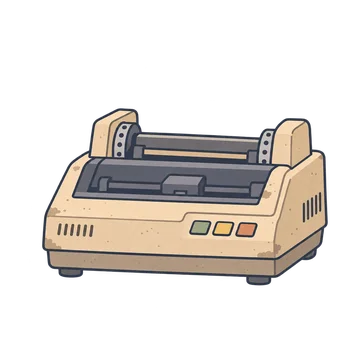`; document.body.appendChild(el);
  ids.slice(0, n).forEach((id, i) => {
    const b = document.querySelector(`.bub[data-card="${id}"]`); if (!b) return;
    const delay = T.feed + i * T.gap; b.style.animationDelay = (delay + T.fly * 0.75) + 'ms'; b.style.animationFillMode = 'both';
    const br = b.getBoundingClientRect(), s = document.createElement('div'); s.className = 'slip'; const w = 54 * sc, y0 = mouth - (i + 1) * sh;
    s.style.cssText = `left:${cx - w / 2}px;top:${y0}px;width:${w}px;height:${sh - 1}px;visibility:hidden`; document.body.appendChild(s);
    const dx = br.left + br.width / 2 - cx, dy = br.top + br.height / 2 - (y0 + sh / 2);
    setTimeout(() => { s.style.visibility = 'visible'; }, T.feed);
    s.animate([{ transform: 'none', opacity: 1 }, { transform: `translate(${dx * .45}px,${dy * .45 - 46}px) rotate(${dx > 0 ? 14 : -14}deg)`, opacity: 1, offset: .5 }, { transform: `translate(${dx}px,${dy}px) rotate(0deg) scale(.55)`, opacity: .15 }], { duration: T.fly, delay, easing: 'cubic-bezier(.4,0,.2,1)', fill: 'both' }).onfinish = () => s.remove();
  });
  setTimeout(() => el.remove(), total + 300);
  return total;
}
const SIZEKEY = ['big', 'frag', 'micro'], DKEY = ['hill', 'market', 'workshop', 'port'];
function illus(c, w) {
  const key = c.cat + '_' + SIZEKEY[c.size];
  if (w < 60) return ``;
  return ``;
}
function stampHTML(p, size) {
  const c = co(p), key = p === 'n' ? 'neutral' : S.g.players[p].company;
  return `<span class="stamp im${p === 'n' ? ' sq' : ''}" style="--c:${c.color};width:${size}px;height:${size}px" title="${c.name}"></span>`;
}
const PH = '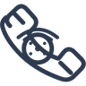';
// 老闆和居民的臉（v0.8.1）。hit：這個月被報社查到，換成冒汗的那一張
const PEN = '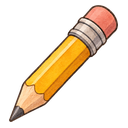';
function isHit(p) { return !!(S.hit && S.hit[p] >= S.g.round); }
function bossImg(p, hit, cls) { return ``; }
function faceImg(t, cls) { const f = faceOf(t); return f ? `` : ''; }
function eventImg(ev, variant) { return ev === 'calm' ? (variant % 2 ? 'event_calm_market' : 'event_calm_cat') : ev === 'storm' && variant % EVENTS.storm.length === 1 ? 'event_storm_2' : 'event_' + ev; }
function phones(n) { return n > 0 ? PH.repeat(n) : '（沒人來電）'; }

// ---------- 工作單 ----------
function cardHTML(c, mini) {
  const g = S.g, t = E.tel(g, c), sel = S.sel === c.id, fl = S.flash[c.id] || '';
  const p = E.onRiver(c) ? curP() : null;
  const can = !S.busy && !S.presenting && p !== null && !isAI(p) && !g.mainDone && (E.canCrush(g, p, c) || E.canCollect(g, p, c));
  const stamps = c.stamps.map(s => stampHTML(s, mini ? 16 : 22)).join('');
  const lockedMicro = c.size === 2 && t > 0;
  const mark = c.size === 1 && c.stamps.length ? '已交差' : c.size === 2 && c.stamps.length ? '已交差・二次' : '';
  return `<div class="card size${c.size} ${sel ? 'sel' : ''} ${can ? 'can' : ''} ${t === 0 ? 'dim' : ''} ${fl}" data-card="${c.id}" title="${locOf(c)}｜${faceText(c)}">
    <div class="ch"><span>第 ${String(c.id).padStart(4, '0')} 號</span><span class="sz">${SIZE_NAME[c.size]}</span></div>
    <div class="ci">${illus(c, mini ? 92 : 150)}</div>
    ${mini ? '' : `<div class="cl">地點：${locOf(c)}</div><div class="ct">${faceText(c)}</div>`}
    <div class="ctel">${lockedMicro ? '<span class="lock">驗出來了，但收不走</span>' : phones(t)}</div>
    <div class="cs">${stamps}</div>${mark ? `<div class="mark">${mark}</div>` : ''}</div>`;
}

// ---------- 主畫面（Ndemic 式：地圖＋泡泡＋側面板＋底部狀態列）----------
const UIC = { whale: '#2F5F9A', egret: '#B5533C', otter: '#5E7A2E', crab: '#A8781A' };   // 紙面上看得清楚的墨色
const uic = p => p === 'n' ? '#A7A9A2' : UIC[S.g.players[p].company];
// 工作單吊牌上的圖：大塊＝大圖示；碎片＝同一個圖示裂成碎塊；微粒＝放大鏡底下（沿用原本的圖）
function tokenHTML(c) {
  const has = ASSETS.includes(`img/token_${c.cat}.png`);
  if (c.size === 2 || !has) return `<span class="bi">${illus(c, 46)}</span>`;
  if (c.cat === 'pellet' || c.size === 0) return `<span class="bi tok"></span>`;
  return `<span class="bi tok shard"><i></i></span>`;
}
function bubbleHTML(c) {
  const g = S.g, t = E.tel(g, c), p = curP();
  const can = p !== null && !isAI(p) && !g.mainDone && !S.modal && (E.canCrush(g, p, c) || E.canCollect(g, p, c));
  const fl = S.flash[c.id] || '';
  const dots = c.stamps.slice(-5).map(s => `<i style="background:${uic(s)}"></i>`).join('');
  const v = viewer(), mine = v !== null && c.stamps.includes(v), risk = mine && c.size === g.level + 1;
  const ring = c.size === 0 && t >= 3 ? `ring ring${Math.min(5, t)}` : '';   // 大塊沒人接：電話越打越多，卡片越抖
  return `<button class="bub s${c.size} ${ring} ${can ? 'can' : ''} ${S.sel === c.id ? 'sel' : ''} ${t === 0 ? 'mute' : ''} ${mine ? 'mine' : ''} ${risk ? 'risk' : ''} ${fl}" ${mine ? `style="--mc:${uic(v)}"` : ''} data-card="${c.id}" aria-label="第 ${c.id} 號 ${CAT[c.cat].name} ${SIZE_NAME[c.size]}${mine ? '，' + RISK.mineTag : ''}${risk ? '，' + RISK.riskTag : ''}">
    ${tokenHTML(c)}${t > 0 ? `<b class="bt2">${t}</b>` : ''}<span class="bs">${dots}</span>${mine ? `<span class="bm" title="${RISK.mineTag}"></span>` : ''}${risk ? `<span class="br" title="${RISK.riskTag}">−1</span>` : ''}</button>`;
}
function ticker() {
  const items = S.news.length >= 3 ? S.news : [...S.news, ...TICKER_IDLE.filter(t => !S.news.includes(t))].slice(0, Math.max(3, S.news.length));
  const line = items.map(t => `<span>${t}</span>`).join('');
  return `<div class="tick"><div class="tkl">貝洛港日報</div><div class="tkw"><div class="tkm">${line}${line}</div></div></div>`;
}
function guideHTML() {
  const g = S.g, p = curP();
  if (p === null) { const L = S.log.filter(l => l.r === g.round).slice(0, 7); return `<div class="gh">月底結算中</div><p class="gp">天氣、河水、報社調查，一樣一樣來。</p>${L.length ? `<div class="feed"><em>${FEED_LAB}</em>${L.map(l => `<div class="ll ${l.cls || ''}">${l.html}</div>`).join('')}</div>` : ''}`; }
  if (isAI(p)) return `<div class="gh" style="color:${uic(p)}">${coName(p)}</div><p class="gp">${co(p).boss}在想……</p>${billHTML(p)}`;
  const F0 = FORECAST[E.forecast(g).event];
  // 新手的第一回合：只講一件事。做完之後，把剛剛發生的事留在夾板上
  if (S.onboarding && !g.mainDone) return `<div class="gh" style="color:${uic(p)}">輪到 ${coName(p)}</div><p class="gp lesson0">${fmt(LESSON.start, { boss: co(p).boss })}</p><div class="tip"><b>${F0.title}。</b>${F0.effect}</div>`;
  if (S.lesson && g.mainDone) return `<div class="gh" style="color:${uic(p)}">輪到 ${coName(p)}</div><div class="lesson1"><em>${LESSON.doneLab}</em><p>${S.lesson}</p></div><p class="gp lesson0">${LESSON.doneNext}</p>`;
  const claim = g.cards.filter(c => E.canCrush(g, p, c) || E.canCollect(g, p, c)).length;
  const steps = [
    [g.mainDone, '做一個主要行動', '點地圖上紅框的單，快清或收走。也可以出資、爆料、打零工。'],
    [g.boughtThisTurn, '想買設備，現在買', '按下方「設備」。不算主要行動。'],
    [false, '結束回合', '換下一家公司。'],
  ];
  const tips = [], F = FORECAST[E.forecast(g).event];
  tips.push(`<b>${F.title}。</b>${F.effect}`);
  { const G = GOALS[E.goal(g)]; if (E.goal(g) !== 'routine') tips.push(`<b>${GOAL_UI.head}：${G.name}。</b>${G.rule}`); }
  if (!g.mainDone && E.preview(g, p, { type: 'odd' }).collapseTonight) tips.push(`<b>${PV.baseCollapse}</b>除非有人把快流進去的單收走。`);
  if (!g.mainDone && !claim) tips.push('現在沒有單可接。可以出資改造、向報社爆料，或打零工。');
  if (g.level < 2 && g.pc.thr[g.level] - g.track <= 2) tips.push(`報社再 ${g.pc.thr[g.level] - g.track} 點就換${LEVEL_NAME[g.level + 1]}。到時候，有你章的${g.level === 0 ? '碎片' : '微粒'}要賠。`);
  if (g.pc.bayCap - E.bay(g).length <= 3) tips.push(`海灣再進 ${g.pc.bayCap - E.bay(g).length} 張就滿。滿了，所有公司一起輸。`);
  if (E.plant(g).length >= g.plantCap) tips.push('處理場滿了，現在不能收走。遇到暴雨會溢出來。');
  return `<div class="gh" style="color:${uic(p)}">輪到 ${coName(p)}</div>${billHTML(p)}
    <ol class="gs">${steps.map(([d, t, s], i) => `<li class="${d ? 'done' : ''} ${!d && (i === 0 || (i === 2 && g.mainDone)) ? 'now' : ''}"><b>${t}</b><span>${s}</span></li>`).join('')}</ol>
    ${tips.map(t => `<div class="tip">${t}</div>`).join('')}`;
}
// 後果預覽：把「做了這個行動、月底結算完」的結果寫在按鈕下面
function consHTML(type, c, p) {
  const g = S.g, pv = E.preview(g, p, { type, id: c.id }), base = E.preview(g, p, { type: 'odd' }), L = [], cap = pv.bayCap;
  const lvUp = pv.levelTonight > pv.levelBefore, lv = LEVEL_NAME[pv.levelTonight];
  if (type === 'crush') {
    L.push(['', fmt(PV.stay, { size: SIZE_NAME[pv.sizeAfter], loc: DISTRICTS[c.loc] })]);
    if (pv.locTonight === 'bay') L.push(['bad', fmt(pv.event === 'tide' ? PV.tideBay : pv.sizeAfter === 1 ? PV.stormBay : PV.driftBay, { b: pv.bayTonight, cap })]);
    else if (pv.locTonight !== c.loc) L.push(['warn', fmt(pv.sizeAfter === 1 ? PV.stormMove : PV.driftMove, { to: DISTRICTS[pv.locTonight] })]);
    if (pv.sizeAfter === 2) L.push(['', PV.micro]);
    if (pv.fineNow) L.push(['bad', fmt(PV.caught, { size: SIZE_NAME[pv.sizeAfter] })]);
    else if (lvUp && pv.fineTonight > 0) L.push(['bad', fmt(pv.fineTonight > base.fineTonight ? (pv.fineTonight === 1 ? PV.tonightThis : PV.tonightAll) : PV.tonightOther, { lv, n: pv.fineTonight })]);
    else if (!lvUp && pv.sizeAfter === pv.levelBefore + 1) L.push(['warn', fmt(PV.later, { n: pv.trackGap, lv: LEVEL_NAME[pv.levelBefore + 1] })]);
    else if (pv.sizeAfter > pv.levelBefore + 1) L.push(['warn', PV.later2]);
    L.push(pv.hadMine ? ['', PV.already] : ['warn', PV.yearEnd]);
  } else {
    L.push(['', PV.toPlant]);
    if (pv.overflowBack) L.push(['bad', PV.overflow]);
    else L.push([pv.plantLeft <= 1 ? 'warn' : '', pv.plantLeft === 0 ? PV.plantTake : pv.plantLeft === 1 ? PV.plantLast : fmt(PV.plantLeft, { n: pv.plantLeft })]);
    if (!pv.overflowBack && pv.plantLeft === 0) L.push(['', PV.overflowLater]);
    if (lvUp && pv.fineTonight > 0) L.push(['warn', fmt(PV.tonightOther, { lv, n: pv.fineTonight })]);
  }
  if (pv.collapseTonight) L.push(['bad', base.collapseTonight ? PV.baseCollapse : PV.collapse]);
  return `<em class="cq">${L.map(([k, t]) => `<i class="${k}">${t}</i>`).join('')}</em>`;
}
function panelHTML() {
  const g = S.g, c = S.sel ? cardById(S.sel) : null, p = curP();
  if (!c) return (p !== null ? `<figure class="bossfig${isHit(p) ? ' hit' : ''}" style="--c:${uic(p)}">${bossImg(p, isHit(p))}</figure>` : '') + guideHTML();
  const dk = typeof c.loc === 'number' ? DKEY[c.loc] : null;
  let h = `<header class="order-heading"><b>工作單　第 ${String(c.id).padStart(4, '0')} 號</b><div class="order-tools"><button class="peek-map dt-back" data-a="detail">${DECIDE.back}</button><button class="ic" data-a="unsel" aria-label="關閉工作單">×</button></div></header>${dk ? `<div class="pdist"><span>${DISTRICTS[c.loc]}</span></div>` : ''}<div class="pcard">${cardHTML(c, false)}</div>`;
  const actionable = p !== null && !isAI(p) && !g.mainDone && !S.busy && !S.presenting, hOpen = S.histOpen ?? !actionable;
  const histBlock = `<section class="histw ${hOpen ? 'open' : ''}"><button class="histb" data-a="hist" aria-expanded="${hOpen}">${HIST.head}<small>${(c.hist || []).length} 筆</small><i>${hOpen ? '▴' : '▾'}</i></button>${hOpen ? histHTML(c) : ''}</section>`;
  if (!actionable) h += histBlock;
  if (p !== null && !isAI(p) && !g.mainDone && !S.busy && !S.presenting) {
    const cc = E.canCrush(g, p, c), cl = E.canCollect(g, p, c), pv = cc ? E.crushPreview(g, p, c) : null;
    h += `<div class="order-forecast"><b>${FORECAST[E.forecast(g).event].title}</b><p>${FORECAST[E.forecast(g).event].effect}</p>${E.goal(g) !== 'routine' && (!S.onboarding || E.goal(g) === 'audit' || E.goalBonus(g, c, 'crush') || E.goalBonus(g, c, 'collect')) ? `<b class="og">本月重點・${GOALS[E.goal(g)].name}</b><p>${GOALS[E.goal(g)].rule}</p>` : ''}</div>`;
    h += histBlock;
  } else if (c.stamps.length) h += `<p class="gp">這張單上有：${[...new Set(c.stamps)].map(s => `<b style="color:${uic(s)}">${coName(s)}</b>`).join('、')} 的章。</p>`;
  return h;
}
// 這張單的經過：同一輪的事件放在同一格，☎ 變多的那幾輪合併成一行
function histHTML(c) {
  const H = c.hist || [], rows = [], phone = n => `☎${n}`;
  const where = typeof c.loc === 'number' ? DISTRICTS[c.loc] : c.loc === 'bay' ? '海灣' : c.loc === 'plant' ? '處理場' : '';
  for (const h of H) {
    let t = '', cls = '';
    const who = p => p === 'n' ? NEUTRAL.name : coTagDark(p);
    if (h.k === 'print') t = c.cat === 'pellet' ? fmt(HIST.printPellet, { loc: DISTRICTS[h.loc] }) : fmt(HIST.print, { loc: DISTRICTS[h.loc], n: phone(h.n) });
    else if (h.k === 'tel') { const last = rows[rows.length - 1]; if (last && last.k === 'tel') { last.r2 = h.r; last.t = fmt(HIST.tel, { n: h.n }); continue; } t = fmt(HIST.tel, { n: h.n }); }
    else if (h.k === 'crush') { t = h.p === 'n' ? HIST.crushN : fmt(HIST.crush[h.to], { co: who(h.p), n: h.gain }); cls = 'cr'; }
    else if (h.k === 'caught') { t = fmt(HIST.caught, { co: who(h.p), n: h.fine }); cls = 'bad'; }
    else if (h.k === 'collect') { t = fmt(HIST.collect, { co: who(h.p), n: h.gain }); cls = 'co'; }
    else if (h.k === 'move') { t = fmt(HIST.move[h.why], { to: DISTRICTS[h.to] }); cls = 'mv'; }
    else if (h.k === 'bay') { t = HIST.bay[h.why] || HIST.bay.drift; cls = 'bad'; }
    else if (h.k === 'overflow') { t = fmt(HIST.overflow, { to: DISTRICTS[h.to] }); cls = 'bad'; }
    else if (h.k === 'fine') { t = fmt(HIST.fine[h.lv], { who: h.ps.map(who).join('、'), n: h.per, each: h.ps.length > 1 ? '各' : '' }); cls = 'bad'; }
    rows.push({ k: h.k, r: h.r, t, cls });
  }
  const lab = x => x.r === 0 ? HIST.ye : x.r2 ? `${monthOf(x.r)}～${monthOf(x.r2)}` : monthOf(x.r);
  return `<ol class="hist">${rows.map((x, i) => `<li class="${x.cls}"><em>${lab(x)}</em><span>${x.t}</span></li>`).join('')}${where ? `<li class="nowl"><em></em><span>${fmt(HIST.now, { where })}</span></li>` : ''}</ol>`;
}
// 倉庫架：3×3 格，從最下層放起；超過容量的格子用斜線封起來
function shelfHTML(g, pc) {
  const cells = Array.from({ length: 9 }, (_, k) => {
    const c = pc[k], open = k < g.plantCap;
    return `<i class="${c ? 'f' : open ? '' : 'x'}" style="--r:${2 - Math.floor(k / 3)};--c:${k % 3}">${c ? `<b style="background:${CAT[c.cat].c1}"></b>` : ''}</i>`;
  }).join('');
  return `<div class="obj shelf" aria-hidden="true">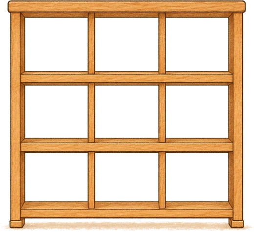<div class="cells">${cells}</div></div>`;
}
// 「你的帳」：快清時多拿的錢，之後可能要吐回去。這是整個遊戲最重要、也最容易被忽略的數字，所以放大、做成一疊罰單
function billHTML(p) {
  const g = S.g, x = E.exposure(g, p), B = BILL, C = E.CONFIG;
  const mine = g.cards.filter(c => c.stamps.includes(p) && c.size >= 1 && (E.onRiver(c) || c.loc === 'bay'));
  const frag = mine.filter(c => c.size === 1).length, micro = mine.filter(c => c.size === 2).length;
  const now = x.next === null ? null : x.next * C.fineUp, ye = x.yearEnd * C.fineYE, gap = g.level < 2 ? Math.max(0, g.pc.thr[g.level] - g.track) : 0;
  const slips = Math.min(10, ye), fineImg = ASSETS.includes('img/ye_fine.png') ? 'img/ye_fine.png' : 'img/icon_coin.png';
  const hot = (now || 0) + ye > 0;
  return `<section class="bill ${hot ? 'hot' : 'clear'}" style="--c:${uic(p)}">
    <header><em>${isAI(p) ? fmt(B.titleOther, { co: coName(p) }) : B.title}</em>${hot ? '' : `<span class="bill-ok">${B.none}</span>`}</header>
    <div class="bill-body"><div class="slips" aria-hidden="true">${Array.from({ length: Math.max(1, slips) }, (_, k) => ``).join('')}</div>
    <div class="bill-rows">
      ${now !== null ? `<div class="bl-row ${now ? 'on' : ''}"><span>${fmt(B.next, { tool: LEVEL_NAME[g.level + 1] })}</span><b>${now}<small> 萬</small></b><i>${fmt(B.gap, { n: gap })}</i></div>` : `<div class="bl-row"><span>${B.lab}</span></div>`}
      <div class="bl-row ${ye ? 'on' : ''}"><span>${B.ye}</span><b>${ye}<small> 萬</small></b></div>
    </div></div>
    <p class="bill-why">${mine.length ? fmt(B.why, { f: frag, m: micro }) : B.whyNone}</p>
  </section>`;
}
function riskLine(p) {
  const x = E.exposure(S.g, p), parts = [];
  if (x.next !== null) parts.push(`<span class="${x.next ? 'hot' : ''}">${fmt(RISK.now, { n: `<b>${x.next}</b>` })}</span>`);
  parts.push(`<span class="${x.yearEnd ? 'hot' : ''}">${fmt(RISK.ye, { n: `<b>${x.yearEnd}</b>` })}</span>`);
  return `<div class="hr" data-tour="risk">${parts.join('')}</div>`;
}
// 天氣的小圖示（v1.0 圖示集）
const FC_IC = { storm: 'ic_storm', tide: 'ic_tide', letter: 'ic_letter', calm: 'ic_sun' };
function ic(n, cls) { return ``; }
// 你的帳的兩個數字（桌面和面板共用）
function billNums(p) {
  const g = S.g, x = E.exposure(g, p), C = E.CONFIG;
  const now = x.next === null ? null : x.next * C.fineUp, ye = x.yearEnd * C.fineYE;
  return { now, ye, hot: (now || 0) + ye > 0 };
}
function renderGame() {
  const g = S.g, cur = curP(), thr = g.pc.thr, tmax = thr[1], fc = g.round ? E.forecast(g).event : null;
  let h = `<div class="topbar">${ticker()}
    <div class="tr">${g.round ? `<div class="fc ev-${fc}" aria-label="${FORECAST[fc].title}" title="${FORECAST[fc].effect}">${ic(FC_IC[fc].slice(3))}<span><small>本月</small><b>${FORECAST[fc].short}</b></span></div>` : ''}${g.round ? `<div class="fc goalc" title="${GOALS[E.goal(g)].rule}" aria-label="${GOAL_UI.head}：${GOALS[E.goal(g)].name}，${GOALS[E.goal(g)].rule}">${ic('seal')}<span><small>${GOAL_UI.top}</small><b>${GOALS[E.goal(g)].name}</b></span></div>` : ''}<div class="round cal" aria-label="第 ${Math.max(1, g.round)} 個月，共 7 個月"><i class="cal-top"></i><b>${monthOf(g.round)}</b><span>${Math.max(1, g.round)}/7</span></div>
    ${S.demo ? `<div class="spd"><button data-a="pause" class="${S.paused ? 'on' : ''}" aria-label="暫停">${S.paused ? '▶' : '❚❚'}</button>${[['1', '1×'], ['0.5', '2×'], ['0.25', '4×']].map(([v, t]) => `<button class="${S.speed == v ? 'on' : ''}" data-a="spd" data-v="${v}">${t}</button>`).join('')}<button data-a="title">結束</button></div>` : `<div class="menuw"><button class="ic tb-menu ${S.menu ? 'on' : ''}" data-a="menu" aria-expanded="${!!S.menu}" aria-haspopup="menu" aria-label="${MENU_UI.open}" title="${MENU_UI.open}">≡</button>${S.menu ? menuHTML() : ''}</div>`}<button class="ic sndb ${SFX.on ? 'on' : ''}" data-a="sound" aria-pressed="${SFX.on}" aria-label="${SFX.on ? '關掉音效' : '打開音效'}" title="${SFX.on ? '關掉音效' : '打開音效'}">${ic(SFX.on ? 'sound' : 'mute')}</button></div></div>
  <div class="gm"><aside class="cos" aria-label="四家公司">`;
  g.players.forEach((pl, i) => {
    h += `<div class="chip ${i === cur ? 'cur' : ''}" style="--c:${uic(i)}"><figure class="pol">${bossImg(i, isHit(i), 'polimg')}${stampHTML(i, 26)}</figure><div class="cht"><div class="chn">${coName(i)}${pl.ai ? '<small>電腦</small>' : ''}</div>
      <div class="chv">${ic('coin', 'sm')}<span class="num ${pl.money < 0 ? 'neg' : ''}" data-count="m${i}">${pl.money}</span>萬<span class="sep"></span>${ic('seal', 'sm')}<span class="num" data-count="s${i}">${E.stampsOf(g, i)}</span>章</div>
      ${pl.techs.length ? `<div class="cht2">${pl.techs.map(t => TECH[t].name).join('・')}</div>` : ''}</div></div>`;
  });
  h += `</aside><main class="mapw lv${g.level} ${S.wide ? 'wide' : ''}" data-tour="map">${S.onboarding && S.tour == null && !S.sel && !S.presenting && !S.busy ? `<p class="first-order-hint">${LESSON.hint}</p>` : ''}<div class="board">`;
  for (let d = 0; d < 4; d++) {
    const cs = g.cards.filter(c => c.loc === d).sort((a, b) => a.size - b.size || a.id - b.id);
    h += `<section class="zone z${d}"><header>${DISTRICTS[d]}</header><div class="bubs">${cs.map(bubbleHTML).join('')}</div></section>`;
  }
  const b = E.bay(g), cap = g.pc.bayCap;
  h += `<section class="zone bayz ${cap - b.length <= 3 ? 'warn' : ''}"><header>海灣</header><div class="bayd">${b.map(c => { const v = viewer(), mine = v !== null && c.stamps.includes(v); return `<i class="${mine ? 'mine' : ''}" style="background:${CAT[c.cat].c1}${mine ? `;--mc:${uic(v)}` : ''}" title="第 ${c.id} 號 ${CAT[c.cat].name}${mine ? '（' + RISK.mineTag + '）' : ''}"></i>`; }).join('')}</div></section>
    <section class="plantz"><header>= g.plantCap ? 'plant_full' : 'plant'}.webp" alt="">處理場 <b>${E.plant(g).length}/${g.plantCap}</b></header><div class="pboxes">${Array.from({ length: g.plantCap }, (_, i) => { const pc = E.plant(g)[i]; return `<i class="${pc ? 'f' : ''}" style="${pc ? `background:${CAT[pc.cat].c1}` : ''}"></i>`; }).join('')}</div></section></div>${decideHTML()}</main>
    <aside class="panel" data-tour="panel">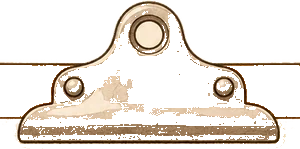${panelHTML()}</aside></div>`;
  // 桌面：帳本、你的帳、報紙、罐子、架子、抽屜、結束回合的大印章
  const me = cur !== null ? cur : g.order[0] ?? 0, pl = g.players[me], bn = billNums(me);
  const human = cur !== null && !isAI(cur) && !S.presenting && !S.busy;
  const pc = E.plant(g);
  // 電話：輪到真人玩家時響一下
  const turnKey = `${g.round}-${cur}`;
  if (human && !g.mainDone && S.phoneTurn !== turnKey) { S.phoneTurn = turnKey; S.phoneUntil = performance.now() + 1800; if (!S.demo) SFX.play('phone'); }
  const ringing = performance.now() < (S.phoneUntil || 0) && !RM;
  h += `<footer class="hud desk">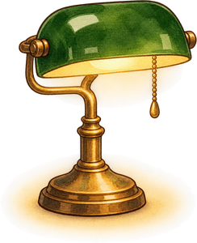<div class="dk hme" data-tour="me" style="--c:${uic(me)}"><div class="dk-t"><small class="dk-l">${coName(me)}</small><div class="hm"><span class="num big ${pl.money < 0 ? 'neg' : ''}" data-count="hm${me}">${pl.money}</span><i>萬</i><span class="sep"></span>${ic('seal', 'sm')}<span class="num">${E.stampsOf(g, me)}</span><i>章</i></div><div class="hgoal">${WIN_UI.line}</div></div></div>
    <div class="dk dkbill ${bn.hot ? 'hot' : ''}"><div class="dk-t"><small class="dk-l">${isAI(me) ? fmt(BILL.titleOther, { co: coName(me) }) : BILL.title}</small><div class="bl2">${bn.now !== null ? `<span>${DESK.billNow}<b>${bn.now}</b>萬</span>` : ''}<span>${DESK.billYe}<b>${bn.ye}</b>萬</span></div></div></div>
    <div class="dk gauge inv" data-tour="inv"><div class="dk-t"><div class="gl"><small class="dk-l">報社調查</small><span class="lvs">${['eye', 'lens', 'scope'].map((k, i) => `<i class="${g.level >= i ? 'on' : ''}" data-ic="${i}" title="${LEVEL_NAME[i]}">${ic(k)}</i>`).join('')}</span></div>
      <div class="bar"><div style="width:${Math.min(100, g.track / tmax * 100)}%"></div><em style="left:${thr[0] / tmax * 100}%"></em></div><div class="gs2">${g.level < 2 ? fmt(DESK.invNext, { n: Math.max(0, thr[g.level] - g.track), lv: LEVEL_NAME[g.level + 1] }) : LEVEL_SEE[g.level]}</div></div></div>
    <div class="dk gauge bayg ${cap - b.length <= 3 ? 'warn' : ''}" data-tour="bay"><div class="obj jar" aria-hidden="true"><i class="water" style="height:${Math.min(100, b.length / cap * 100) * 0.78}%"><s>${b.map(c => `<u style="background:${CAT[c.cat].c1}"></u>`).join('')}</s></i>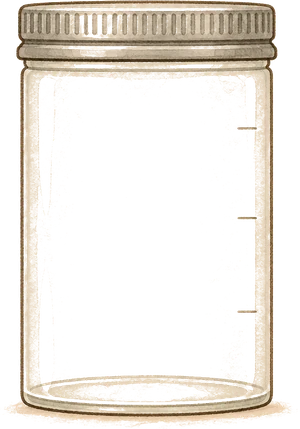</div><div class="dk-t"><div class="gl"><small class="dk-l">海灣</small><span class="num"><span data-count="bay">${b.length}</span><small>/${cap}</small></span></div><div class="bar"><div style="width:${b.length / cap * 100}%"></div></div><div class="gs2">${fmt(DESK.bayLeft, { n: Math.max(0, cap - b.length) })}</div></div></div>
    <div class="dk gauge plg" data-tour="plant">${shelfHTML(g, pc)}<div class="dk-t"><div class="gl"><small class="dk-l">處理場</small><span class="num">${pc.length}<small>/${g.plantCap}</small></span></div><div class="pboxes">${Array.from({ length: g.plantCap }, (_, i) => `<i class="${pc[i] ? 'f' : ''}" style="${pc[i] ? `background:${CAT[pc[i].cat].c1}` : ''}"></i>`).join('')}</div><div class="gs2">${fmt(DESK.plantLeft, { n: Math.max(0, g.plantCap - pc.length) })}</div></div></div>
    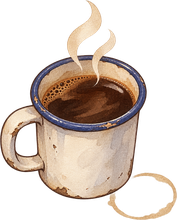<div class="dk deco phone ${ringing ? 'ring' : ''}" title="${human && !g.mainDone ? DESK.phone : ''}" aria-hidden="true">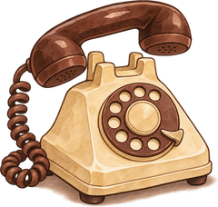${ringing ? `<span class="ph-say">${DESK.phone}</span>` : ''}</div>
    <div class="dk hb drawerw" data-tour="more"><button class="drawerb ${S.drawer ? 'open' : ''}" data-a="drawer" aria-expanded="${!!S.drawer}" aria-haspopup="menu">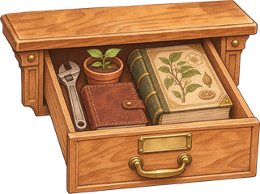<span>${DESK.drawer}</span></button>${S.drawer ? drawerHTML(g) : ''}</div>
    <div class="dk ha" data-tour="end">${human && !g.mainDone && !S.sel ? `<div class="ha-side"><button class="b-tag" data-a="odd" title="${SIDE_UI.odd}">${ic('case', 'sm')}${DESK.odd}<small>+1 萬</small></button><button class="b-tag" data-a="leak" title="${SIDE_UI.leak}" ${E.canLeak(g, cur) ? '' : 'disabled'}>${ic('tip', 'sm')}${DESK.leak}<small>−1 萬・調查+1</small></button></div>` : ''}
      <button class="endb b-stamp" data-a="end" ${human && g.mainDone ? '' : 'disabled'}>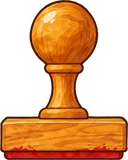<span>結束回合</span></button></div></footer>`;
  return h + (S.peek && S.sel ? `<button class="peek-back" data-a="peek">回到第 ${S.sel} 號單</button>` : '') + renderSheet() + renderTour();
}
// 右上角選單：規則速查、這門生意怎麼運作、給作者回饋、回首頁（要再確認一次）
function menuHTML() {
  if (S.menu === 'home') return `<div class="menu-pop ask" role="alertdialog" aria-label="${MENU_UI.homeAsk}"><p>${MENU_UI.homeAsk}</p><div><button class="b-tag" data-a="menu">${MENU_UI.homeNo}</button><button class="b-stamp" data-a="menuhomeyes"><span>${MENU_UI.homeYes}</span></button></div></div>`;
  return `<div class="menu-pop" role="menu">
    <button role="menuitem" data-a="sheet" data-v="help">${ic('notebook')}<b>${MENU_UI.help}</b></button>
    <button role="menuitem" data-a="sheet" data-v="how">${ic('seal')}<b>${MENU_UI.how}</b></button>
    <a role="menuitem" href="${FEEDBACK_URL}" target="_blank" rel="noopener">${ic('letter')}<b>${MENU_UI.feedback}</b><small>↗</small></a>
    <button role="menuitem" data-a="menuhome">${ic('case')}<b>${MENU_UI.home}</b></button></div>`;
}
// 抽屜：設備、改造、日誌、圖鑑
function drawerHTML(g) {
  const L = [['tech', 'tools', '設備', `${g.market.length} 件`], ['reform', 'sprout', '改造', `${g.reforms.bottle.funded + g.reforms.market.funded}/${g.reforms.bottle.cost + g.reforms.market.cost} 萬`], ['log', 'notebook', '日誌', ''], ['atlas', 'atlas', ATLAS_UI.name, `${Atlas.count()}/${Atlas.total()}`]];
  return `<div class="drawer-pop" role="menu">${L.map(([v, i, t, n]) => `<button role="menuitem" class="${v === 'atlas' ? 'hb-atlas' : ''}" data-a="sheet" data-v="${v}">${ic(i)}<b>${t}</b>${n ? `<small>${n}</small>` : ''}</button>`).join('')}</div>`;
}
// 核心決定：選了單，地圖上浮出兩張大卡
function decideHTML() {
  const g = S.g, c = S.sel ? cardById(S.sel) : null, p = curP();
  if (!c || p === null || isAI(p) || g.mainDone || S.busy || S.presenting || S.aiThinking) return '';
  const card = type => {
    const ok = type === 'crush' ? E.canCrush(g, p, c) : E.canCollect(g, p, c), D = DECIDE[type];
    let gain = '', extra = '';
    if (ok && type === 'crush') { const pv = E.crushPreview(g, p, c); gain = pv.gain; if (pv.fine) extra = `<small class="dc-fine">${DECIDE.fineNow}</small>`; }
    if (ok && type === 'collect') gain = E.collectGain(g, c);
    const bonus = ok && E.goalBonus(g, c, type) ? `<small class="dc-bonus">${fmt(GOAL_UI.bonus, { n: E.goalBonus(g, c, type) })}</small>` : '';
    const off = type === 'crush' ? (c.size === 1 ? DECIDE.needTech : DECIDE.cantCrush) : (c.size === 2 ? DECIDE.microNo : DECIDE.plantFull);
    return `<article class="dc dc-${type} ${ok ? '' : 'off'} ${S.previewAction === type && ok ? 'on' : ''}" data-pv="${type}" ${ok ? 'tabindex="-1"' : ''}>
      <figure class="dc-art"></figure>
      <div class="dc-b"><h3>${ic(type === 'crush' ? (ASSETS.includes('img/ic_rake.png') ? 'rake' : 'hammer') : 'sack')}${D.name}<small>${D.verb}</small></h3>
      ${ok ? `<div class="dc-gain"><b>+${gain}</b><i>萬</i></div><small class="dc-how">${payHow(type, c)}</small><small class="dc-why">${D.why}</small>${bonus}${extra}${consHTML(type, c, p)}
      <button class="b-stamp dc-go" data-a="${type}"><span>${D.go}</span></button>` : `<p class="dc-note">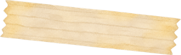${off}</p>`}</div></article>`;
  };
  return `<div class="decide" data-tour="decide" role="group" aria-label="${fmt(DECIDE.aria, { n: c.id })}"><div class="dc-cards">${card('crush')}${card('collect')}</div>
    <div class="dc-more"><button class="b-tag dc-detail" data-a="detail">${DECIDE.detail}</button><button class="b-tag" data-a="odd" title="${SIDE_UI.odd}">${ic('case', 'sm')}${DESK.odd}<small>+1 萬</small></button><button class="b-tag" data-a="leak" title="${SIDE_UI.leak}" ${E.canLeak(g, p) ? '' : 'disabled'}>${ic('tip', 'sm')}${DESK.leak}</button><button class="b-tag" data-a="unsel">${DECIDE.cancel}</button></div></div>`;
}
// 決定卡放在選中那張單的旁邊：哪邊空間大放哪邊（手機上是從底下升起的紙，不用算）
function placeDecide() {
  const d = document.querySelector('.decide'), m = document.querySelector('.mapw');
  if (!d || !m || innerWidth <= 760) return;
  const src = document.querySelector(`.bub[data-card="${S.sel}"]`); if (!src) return;
  const r = m.getBoundingClientRect(), b = src.getBoundingClientRect();
  const left = b.left - r.left, right = r.right - b.right, side = right >= left ? 'R' : 'L', room = Math.max(left, right) - 24;
  const cw = Math.max(168, Math.min(236, (room - 14) / 2));
  d.style.setProperty('--cw', cw + 'px');
  const w = cw * 2 + 14; d.style.width = w + 'px';
  const x = side === 'R' ? Math.min(r.width - w - 12, b.right - r.left + 14) : Math.max(12, b.left - r.left - w - 14);
  d.style.left = x + 'px';
  const h = d.offsetHeight, y = Math.max(10, Math.min(r.height - h - 10, b.top - r.top + b.height / 2 - h / 2));
  d.style.top = y + 'px'; d.dataset.side = side; d.classList.add('placed');
}
function renderSheet() {
  const g = S.g, k = S.sheet; if (!k) return '';
  const cur = curP(), human = cur !== null && !isAI(cur);
  let body = '', title = '';
  if (k === 'tech') {
    title = '設備市場';
    body = `<p class="gp">每回合可以另外買一件，不算主要行動。每種只有一件，先買先得。</p>` + (g.market.length ? g.market.map(t => { const ok = human && E.canBuy(g, cur, t); return `<div class="srow"><div><b>${TECH[t].name}</b><small>${TECH[t].branch}・${E.CONFIG.tech[t]} 萬</small><p>${TECH[t].effect}</p><em>${TECH[t].flavor}</em></div><button class="pri" data-a="buy" data-t="${t}" ${ok ? '' : 'disabled'}>${ok ? '買' : (!human ? '還沒輪到你' : g.boughtThisTurn ? '這回合買過了' : '錢不夠')}</button></div>`; }).join('') : '<p class="gp">都賣完了。</p>');
  } else if (k === 'reform') {
    title = '源頭改造';
    body = `<p class="gp">完工後，這一類工作單不會再印出來，大家的生意都變少。兩項都完工，年底按出資比例分 ${g.pc.pool} 萬獎金。出資算主要行動。</p>` + ['bottle', 'market'].map(r => { const R = g.reforms[r], mx = human && !g.mainDone && E.canInvest(g, cur, r) ? E.investMax(g, cur, r) : 0; return `<div class="srow col"><div><b>${REFORM[r].name}</b>${R.done ? '<small class="ok">已完工</small>' : ''}<p>${REFORM[r].desc}</p></div><div class="bar rb"><div style="width:${R.funded / R.cost * 100}%"></div><span>${R.funded} / ${R.cost} 萬</span></div>${g.players.filter(p => p.invested[r]).length ? `<div class="inv2">${g.players.map((p, i) => p.invested[r] ? `<span style="color:${uic(i)}">${coName(i)} ${p.invested[r]} 萬</span>` : '').join('')}</div>` : ''}${mx ? `<div class="ib2">出資 ${Array.from({ length: mx }, (_, i) => `<button data-a="invest" data-k="${r}" data-v="${i + 1}">${i + 1} 萬</button>`).join('')}</div>` : (R.done ? '' : `<div class="note">${!human ? '還沒輪到你' : g.mainDone ? '這回合已經做過主要行動' : '錢不夠'}</div>`)}</div>`; }).join('');
  } else if (k === 'log') {
    title = '工作日誌'; body = `<div class="logl">${S.log.map(l => `<div class="ll ${l.cls || ''}">${l.html}</div>`).join('')}</div>`;
  } else if (k === 'atlas') {
    title = ATLAS_UI.full;
    body = `<p class="gp">${ATLAS_UI.sheet}</p>` + ['main', 'src', 'rec'].map(gk => `<h4 class="at-h">${ATLAS_UI.groups[gk]}</h4><ul class="at-list">${SV_CH.filter(c => (c.branch || 'main') === gk).map(c => { const lit = Atlas.isLit(c.key); return `<li class="${lit ? 'lit' : ''}"><b>${c.nav}</b><span>${lit ? atlasWhenLit(c.key) : ATLAS_WHEN[c.key]}</span>${Atlas.isRead(c.key) && ATLAS_NOTE[c.key] ? `<small>${PEN}${ATLAS_NOTE[c.key]}</small>` : ''}</li>`; }).join('')}</ul>`).join('') + `<p class="note">${ATLAS_UI.sheetAfter}</p>`;
  } else if (k === 'help') {
    title = '規則速查';
    body = `<div class="help">
      <h4>怎麼贏</h4><p>一輪是一個月，從六月到十二月。十二月底錢最多的公司贏；一樣多，城裡章比較少的贏。海灣滿了：魚驗出塑膠、漁市關門，市府凍結所有合約、尾款不發，大家一起輸。</p>
      <h4>每回合</h4><p>做一個主要行動，可以另外買一件設備，然後結束回合。</p>
      <h4>主要行動</h4><ul><li><b>快清</b>：鼓風機一吹、耙子一刮，拍照交差。領全部來電的錢。單子變小一級、留在原地，蓋你的章。</li><li><b>收走</b>：一件件撿，整袋載去處理場。領一半（有半通就進位），另一半是處理場的處理費。整張進處理場，蓋你的章。</li><li><b>出資</b>：投 1～4 萬做源頭改造。</li><li><b>爆料</b>：付 1 萬，報社調查 +1。</li><li><b>打零工</b>：領 1 萬。</li></ul>
      <h4>為什麼是這樣</h4><dl class="why"><dt>快清為什麼拿得到錢？</dt><dd>市府按來電通數付錢，驗收只看一張施工照片：「目視無明顯垃圾」就算交差，合約沒寫垃圾要送去哪。港邊的瓶子、袋子、保麗龍曬了好幾個月，早就又硬又脆。快清用的是清落葉、清沙灘的老方法：鼓風機一吹、耙子一刮，大塊的碎成小塊，輕的被吹進水溝。幾公釐的碎片，照片上本來就看不見。不用載、不用排隊、不付處理費，所以錢全進口袋。可是碎片還在港裡，會繼續碎下去。</dd><dt>收走為什麼只拿一半？</dt><dd>收走要戴手套一件一件撿、整袋開車載到處理場，排隊等阿庫一袋一袋秤重。處理場照重量收處理費，從來電的錢裡扣掉一半。少賺，但東西進了管得到的地方，以後不會被查。</dd><dt>現實裡真的有這種事嗎？</dt><dd>有。英國有海灘每天用機器耙沙，志工在沙裡撿到幾百片碎掉的沙灘玩具，要求市議會改掉清法。國外也有很多城市規定不准用鼓風機把東西吹進水溝，因為雨水下水道不經過污水處理廠，直接通到河和海。塑膠曬久了會變脆，再被刮、被吹、被浪打，就會越碎越小。</dd><dt>打零工是什麼？</dt><dd>${SIDE_UI.odd}——你在幫市府審自己交的照片。</dd><dt>爆料是什麼？</dt><dd>${SIDE_UI.leak}想讓對手早點被罰，就要讓報社早點換上放大鏡。</dd></dl>
      <h4>來電 ☎</h4><p>來電通數＝有多少人看得見它。大塊：單子上的數字，沒人接會越打越多。碎片：1 通，報社換放大鏡後變 2 通。微粒：沒人看得見，所以 0 通；送實驗室之後大家都知道了，可是已經收不走。</p>
      <h4>晨報與本月重點</h4><p>每個月一號先看晨報：這個月的天氣（先講好的，不會變）、報社還差幾點、海灣和處理場剩多少。市府每個月有一個重點，只在那個月有效：${Object.entries(GOALS).filter(([key]) => key !== 'routine').map(([, x]) => `<b>${x.name}</b>（${x.rule.replace('這個月', '')}）`).join('、')}。</p>
      <h4>河水</h4><p>微粒每個月往下游漂一區；碎片只在暴雨時被沖走。港口再往下就是海灣。</p>
      <h4>報社調查</h4><p>報社負責讓大家看見；錢是照合約第四條賠給市府。每個月 +1；快清多、有單進海灣、處理場溢出來、有人爆料，都會更快。換放大鏡：河岸上有你章的碎片，每張賠 1 萬。送實驗室：河裡和海灣裡有你章的微粒，每張賠 1 萬。年終：處理場以外的碎片和微粒再算一次。處理場裡的永遠不賠。</p>
      <h4>你的章</h4><p>地圖上有你公司小章的單，就是你蓋過的。紅色「−1」是報社下次換工具時會賠的。左下角有算好的總數。</p>
      <h4>處理場</h4><p>滿了不能再收走。遇到暴雨，最後進去的箱子會被沖回工坊區，章還在。</p></div>
      <div class="sb2"><button data-a="sheet" data-v="how">${HOW.open}</button><button data-a="tourstart">重看教學</button></div>`;
  } else if (k === 'how') {
    title = HOW.title;
    body = `<div class="how-sheet">${howHTML()}</div>`;
  }
  return `<div class="sheetov" data-a="sheetclose"><div class="sheet" data-stop="1" role="dialog" aria-modal="true" aria-label="${title}" tabindex="-1"><header><h3>${title}</h3><button class="ic" data-a="sheetclose" aria-label="關閉">×</button></header><div class="sbody">${body}</div></div></div>`;
}
// ---------- 新手教學 ----------
// 新手導覽：照因果講——錢怎麼來 → 兩種做法 → 塑膠不會消失 → 報社 → 海灣 → 怎樣算贏。文字在 text.js 的 TOUR_TEXT
const TOUR = TOUR_TEXT;
function renderTour() {
  if (S.tour == null) return '';
  const [key, t0, s0] = TOUR[S.tour], me = S.g ? (curP() ?? S.g.players.findIndex(p => !p.ai)) : -1, boss = me >= 0 ? co(me).boss : '老闆';
  const t = fmt(t0, { boss }), s = fmt(s0, { boss });
  const forecastNote = key === 'decide' && S.g ? `<p class="tour-weather">${FORECAST[E.forecast(S.g).event].title}。${FORECAST[E.forecast(S.g).event].effect}</p>` : '';
  return `<div class="tour"><div class="tourhole"></div><div class="tourbox"><div class="tn">${S.tour + 1} / ${TOUR.length}</div><h4>${t}</h4><p>${s}</p>${forecastNote}<div class="tb3"><button class="ghost" data-a="tourskip">跳過</button><button class="pri" data-a="tournext">${S.tour === TOUR.length - 1 ? '開始' : '下一步'}</button></div></div></div>`;
}
// 導覽第 2 步要指的單：能快清也能收走（兩邊比得出差別），來電最多的那張。沒有就回傳 null
function tourCardId() {
  const g = S.g, p = g && curP(); if (!g || p === null || p === undefined || isAI(p) || g.mainDone) return null;
  const ok = g.cards.filter(c => E.onRiver(c) && E.canCrush(g, p, c) && E.canCollect(g, p, c)).sort((a, b) => E.tel(g, b) - E.tel(g, a) || a.id - b.id);
  return ok.length ? ok[0].id : null;
}
function tourSelect(id) {
  const g = S.g, c = cardById(id); if (!c) return;
  S.sel = id; S.peek = false; S.previewAction = E.canCrush(g, curP(), c) ? 'crush' : 'collect';
}
function placeTour() {
  if (S.tour == null) return;
  const key = TOUR[S.tour][0];
  const tid = key === 'bub' ? tourCardId() : null;
  let el = key === 'bub' ? (tid != null && document.querySelector(`.bub[data-card="${tid}"]`)) || document.querySelector('.bub.can') || document.querySelector('.bub') : document.querySelector(`[data-tour="${key}"]`);
  const hole = document.querySelector('.tourhole'), box = document.querySelector('.tourbox'); if (!hole || !box) return;
  if (!el) { hole.style.cssText = 'left:50%;top:50%;width:0;height:0'; box.style.cssText = 'left:calc(50% - 170px);top:40%'; return; }
  const r = el.getBoundingClientRect(), pad = 8;
  hole.style.cssText = `left:${r.left - pad}px;top:${r.top - pad}px;width:${r.width + pad * 2}px;height:${r.height + pad * 2}px`;
  const vw = innerWidth, vh = innerHeight, bw = Math.min(340, vw - 24);
  let x = r.left + r.width / 2 - bw / 2, y = r.bottom + 16;
  if (y + 190 > vh) y = r.top - 200;
  if (y < 10) y = Math.min(vh - 210, r.top + 20);
  if (r.width > vw * 0.5 && r.height > vh * 0.5) { x = r.left + 24; y = r.top + 24; }
  x = Math.max(12, Math.min(vw - bw - 12, x));
  if (key === 'bub' && vw <= 760) y = vh - box.offsetHeight - 12;
  box.style.cssText = `left:${x}px;top:${Math.max(10, Math.min(y, vh - box.offsetHeight - 12))}px;width:${bw}px;max-height:${vh - 24}px;overflow:auto`;
}

// ---------- 其他畫面 ----------
// ---------- 主畫面（v1.2 拍立得開場）----------
// 分層：天空小鎮 / 水下 / 碼頭 / 寶特瓶 / 會漂的碎片。水面在 --wl。
// 開場：港口亮起 → 小狗按下拍立得（閃光）→ 白色相框框住水面以上 → 字標與桌上的東西進來。
// 第一次以外直接是最後畫面；點一下就跳過；減少動態時不播。
const TL_KEY = 'beluoport.title.v2';
function renderTitle() {
  const ends = Atlas.ends(), done = S.titleDone || RM;
  const shards = Array.from({ length: 18 }, (_, k) => {
    const n = k < 8 ? k : k < 12 ? 8 + (k % 4) : 12 + (k % 4), micro = n >= 12, r = (k * 37 % 100) / 100, r2 = (k * 61 % 100) / 100;
    return ``;
  }).join('');
  return `<div class="title tl2${done ? ' done' : ''}" id="tl2">
    <div class="tl-scene" aria-hidden="true">
      <div class="ly ly-town">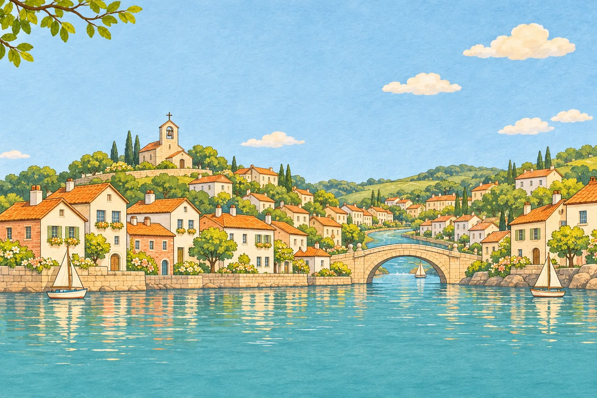</div>
      <div class="ly ly-under">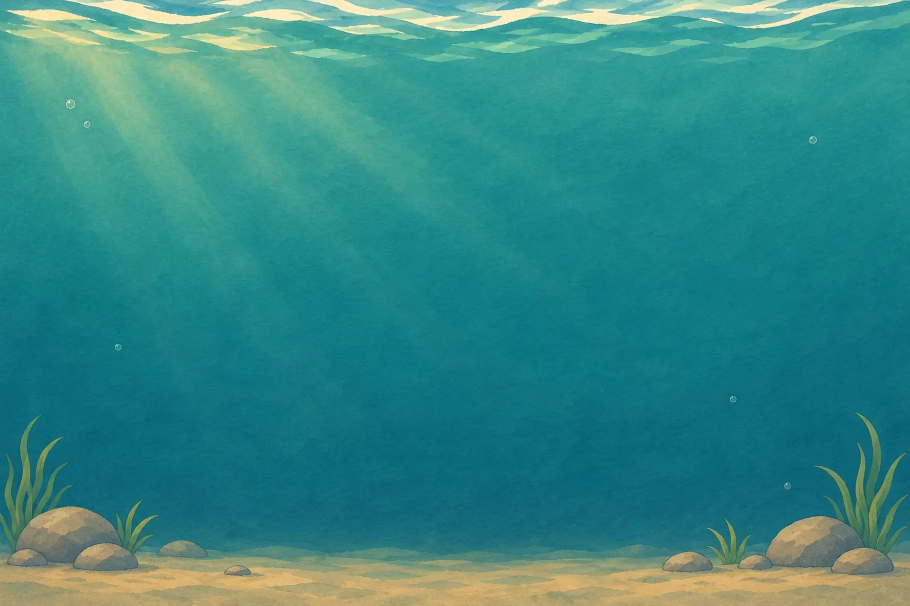</div>
      <div class="tl-shards">${shards}</div>
      <div class="ly ly-quay">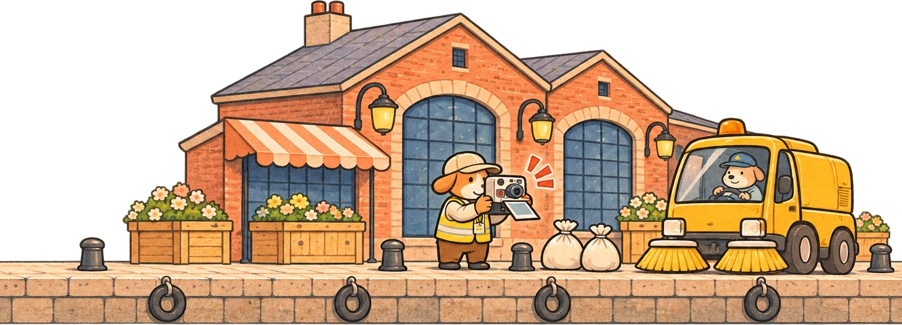<i class="tl-flash"></i></div>
      <div class="tl-surf"></div>
      <div class="ly ly-bottle"></div>
      <div class="tl-veil"></div>
      <div class="tl-pol"><div class="tl-pol-cap"></div></div>
      <div class="tl-white"></div>
    </div>
    <header class="tl-brand"><h1>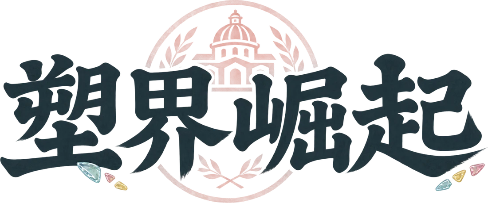</h1>
      <p class="tl-lede">你是貝洛港一家清潔公司的老闆。<br>市府只看照片驗收。</p></header>
    <nav class="tl-desk2" aria-label="開始">
      <button class="tl-it it-start" data-a="setup"><span class="tl-pic">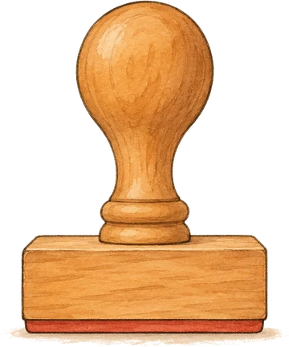</span><b>開新局</b><small>簽下今年的合約</small></button>
      <button class="tl-it it-atlas" data-a="story"><span class="tl-pic"></span><b>翻圖鑑</b><small>${fmt(ATLAS_UI.count, { n: Atlas.count(), all: Atlas.total() })}</small></button>
      <button class="tl-it it-demo" data-a="demo"><span class="tl-pic">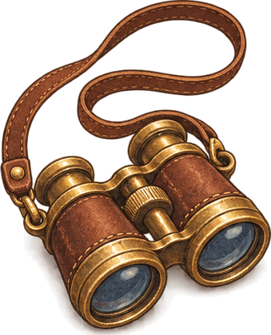</span><b>看電腦玩</b><small>看看別家怎麼做</small></button>
      <a class="tl-it it-fb" href="${FEEDBACK_URL}" target="_blank" rel="noopener"><span class="tl-pic"></span><b>給作者回饋</b><small>另開表單</small></a>
    </nav>
    <footer class="tl-foot"><span>2–4 人・約 20–30 分鐘・同一台電腦輪流</span>${ends ? `<span>${fmt(ATLAS_UI.ends, { n: ends })}</span>` : ''}<button class="tl-snd" data-a="sound" aria-pressed="${SFX.on}">${ic(SFX.on ? 'sound' : 'mute')}${SFX.on ? '音效開' : '音效關'}</button></footer>
    ${done ? '' : '<button class="tl-skip" data-tl-skip>點一下跳過</button>'}
  </div>`;
}
let tlTimers = [], tlMoveOn = false;
function mountTitle() {
  const el = document.getElementById('tl2'); if (!el) return;
  tlTimers.forEach(clearTimeout); tlTimers = [];
  const finish = () => { tlTimers.forEach(clearTimeout); tlTimers = []; S.titleDone = true; el.classList.add('done'); el.classList.remove('p1', 'p2', 'p3'); const b = el.querySelector('.tl-skip'); if (b) b.remove(); try { localStorage.setItem(TL_KEY, '1'); } catch (e) { /* 存不了就算了 */ } };
  if (!S.titleDone) {
    let seen = false; try { seen = localStorage.getItem(TL_KEY) === '1'; } catch (e) { /* 同上 */ }
    if (seen || RM) finish();
    else {
      const at = (ms, f) => tlTimers.push(setTimeout(f, ms));
      at(60, () => el.classList.add('p1'));
      at(1300, () => { el.classList.add('p2'); SFX.play('shutter'); });
      at(1650, () => el.classList.add('p3'));
      at(3300, finish);
      el.querySelector('[data-tl-skip]').onclick = e => { e.stopPropagation(); finish(); };
      el.addEventListener('pointerdown', e => { if (!e.target.closest('button,a')) finish(); }, { once: true });
    }
  }
  // 聲音：瀏覽器要先有一次點擊，才能出聲
  el.addEventListener('pointerdown', () => SFX.sea(true), { once: true });
  if (S.titleSea) SFX.sea(true);
  // 每隔一陣子，小狗又拍一張
  const again = () => { if (S.screen !== 'title' || !document.getElementById('tl2')) return; const e2 = document.getElementById('tl2'); e2.classList.remove('snap'); void e2.offsetWidth; e2.classList.add('snap'); tlTimers.push(setTimeout(again, 9000 + Math.random() * 4000)); };
  if (!RM) tlTimers.push(setTimeout(again, 7000));
  // 滑鼠移動時，各層錯開一點，做出景深
  if (!tlMoveOn && !RM) {
    tlMoveOn = true;
    window.addEventListener('pointermove', e => {
      if (S.screen !== 'title' || e.pointerType !== 'mouse') return; const t = document.getElementById('tl2'); if (!t) return;
      t.style.setProperty('--px', (e.clientX / innerWidth - 0.5).toFixed(3)); t.style.setProperty('--py', (e.clientY / innerHeight - 0.5).toFixed(3));
    }, { passive: true });
  }
}
// 選公司：四家公司各一張檔案卡，每張卡自己決定「不參加／玩家／電腦」，人數由簽約家數決定
const ROLE = [['off', '不參加'], ['human', '玩家'], ['ai', '電腦']];
function seatOf(k) { return S.seats.find(s => s.company === k); }
function renderSetup() {
  const on = S.seats.filter(s => s.on !== false), n = on.length;
  let h = `<div class="setup setup-desk rs"><header class="rs-head"><div><p class="rs-kicker">貝洛港市政府・清潔工作招標</p><h2>今年，你要當哪一家的老闆？</h2>
    <p class="sublead">每家公司都可以交給玩家或電腦。至少要兩家簽約。</p></div>
    <div class="rs-count ${n < 2 ? 'bad' : ''}" aria-live="polite"><b>${n}</b><span>家簽約</span><small>${n < 2 ? '至少 2 家' : n === 2 ? '順發外包也會來搶單' : '2–4 家'}</small></div></header><div class="rs-files">`;
  Object.keys(COMPANIES).forEach((k, i) => {
    const c = COMPANIES[k], s = seatOf(k), role = s.on === false ? 'off' : s.ai ? 'ai' : 'human';
    h += `<section class="rs-file r-${role}" style="--c:${c.color}"><div class="rs-tab">No. ${i + 1}</div>
      <figure class="rs-art">${role !== 'off' ? `` : ''}</figure>
      <div class="rs-body"><h3>${c.name}<small>老闆・${c.boss}</small></h3><p class="rs-motto">「${c.motto}」</p><p class="rs-who">${c.play}</p>
      <div class="rs-role" role="radiogroup" aria-label="${c.name}由誰經營">${ROLE.map(([v, t]) => `<button role="radio" aria-checked="${role === v}" class="${role === v ? 'on' : ''}" data-a="role" data-k="${k}" data-v="${v}">${t}</button>`).join('')}</div>
      ${role === 'ai' ? `<div class="rs-style" role="radiogroup" aria-label="電腦個性"><span>電腦個性</span>${[['calc', '精算'], ['greedy', '貪心'], ['green', '環保']].map(([v, t]) => `<button role="radio" aria-checked="${s.style === v}" class="${s.style === v ? 'on' : ''}" data-a="style" data-k="${k}" data-v="${v}">${t}</button>`).join('')}</div>` : '<div class="rs-style rs-empty"></div>'}</div></section>`;
  });
  h += `</div><footer class="rs-foot"><div class="row"><span class="lab">教學</span><button aria-pressed="${S.tourWanted}" class="${S.tourWanted ? 'on' : ''}" data-a="tourw" data-v="1">第一次玩，要提示</button><button aria-pressed="${!S.tourWanted}" class="${!S.tourWanted ? 'on' : ''}" data-a="tourw" data-v="0">不用</button></div>
    <details class="setup-advanced" ${S.advancedOpen ? 'open' : ''}><summary>進階設定</summary><div class="row"><span class="lab">動畫速度</span><button class="${S.speed === 1 ? 'on' : ''}" data-a="spd0" data-v="1">正常</button><button class="${S.speed < 1 ? 'on' : ''}" data-a="spd0" data-v="0.4">快速</button></div>
    <div class="row"><span class="lab">動態效果</span><button class="${!RM ? 'on' : ''}" data-a="motion" data-v="0">完整</button><button class="${RM ? 'on' : ''}" data-a="motion" data-v="1">減少</button>${sysRM() && !Atlas.motion() ? `<small class="rs-note">${MOTION_UI.sys}</small>` : ''}</div>
    <div class="row"><label class="lab" for="seed">亂數種子</label><input id="seed" placeholder="留空＝隨機" value="${String(S.seed ?? '').replace(/&/g, '&amp;').replace(/"/g, '&quot;').replace(/</g, '&lt;')}" inputmode="numeric" autocomplete="off"></div>
    <div class="row"><span class="lab">${ATLAS_UI.name}</span><button data-a="clearatlas">${ATLAS_UI.clear}</button><small class="rs-cleared">${S.atlasCleared ? ATLAS_UI.cleared : fmt(ATLAS_UI.count, { n: Atlas.count(), all: Atlas.total() })}</small></div></details>
    ${S.setupErr ? `<p class="setup-error" role="alert">${S.setupErr}</p>` : ''}<div class="rs-submit"><button class="pill" data-a="title">回首頁</button><button class="pill pri" data-a="start" ${n < 2 ? 'aria-disabled="true"' : ''}>簽約</button></div></footer></div>`;
  return h;
}
function renderIntro() {
  const [txt, scene] = INTRO[S.introIdx];
  return `<div class="intro"><button class="frame intro-next" data-a="introNext" aria-label="${txt}。下一幕"><span class="sub">${txt}</span></button><div class="dots" aria-label="第 ${S.introIdx + 1} 幕，共 ${INTRO.length} 幕">${INTRO.map((_, i) => `<i class="${i === S.introIdx ? 'on' : ''}"></i>`).join('')}</div>
  <button class="intro-continue" data-a="introNext">${S.introIdx === INTRO.length - 1 ? '看合約' : '下一幕'}</button><button class="skip" data-a="skip">跳過</button></div>`;
}

// 合約背面：「這門生意怎麼運作」因果圖。要提示時，開工前出現一次；規則速查也打得開
function howHTML() {
  const sizes = `<div class="how-sizes">${HOW.sizes.map(([n, t], i) => `<span><b>${n}</b><small>☎ ${t}</small></span>`).join('')}</div>`;
  const pic = st => st.img === null ? sizes : Array.isArray(st.img) ? `<div class="how-pic two">${st.img.map(f => ``).join('')}</div>` : `<div class="how-pic"></div>`;
  return `<ol class="how">${HOW.steps.map((st, i) => `<li><i class="how-n">${i + 1}</i>${pic(st)}<h4>${st.h}</h4><p class="how-why">${st.why}</p><p class="how-so">${PEN}${st.so}</p></li>`).join('')}</ol><p class="how-goal">${HOW.goal}</p>`;
}
function renderHow() {
  return `<div class="contract howpage"><div class="howdoc"><p class="how-k">${HOW.kicker}</p><h2>${HOW.title}</h2>${howHTML()}<div class="how-go"><button class="big" data-a="howgo">${HOW.btn}</button></div></div></div>`;
}
function renderContract() {
  const g = S.g; const all = g.players.every((p, i) => S.stamped[i]);
  return `<div class="contract"><div class="doc"><div class="dtext" data-fit><h2>${CONTRACT_TITLE}</h2>${CONTRACT.map(([c, w]) => `<p>${c}<span class="plain">${PEN}${w}</span></p>`).join('')}
  <div class="sigs">${g.players.map((p, i) => `<div class="sig"><div class="sb">${S.stamped[i] ? stampHTML(i, 54).replace('stamp', 'stamp drop') : ''}</div><div>${coName(i)}</div>${!S.stamped[i] && !p.ai ? `<button data-a="stamp" data-i="${i}">蓋章</button>` : ''}</div>`).join('')}</div>
  </div><div class="cseal ${all ? 'on' : ''}">貝洛港<br>市政府</div>${all ? `<button class="big" data-a="begin">開工</button>` : ''}</div></div>`;
}
function renderModal() {
  const m = S.modal; if (!m) return '';
  return `<div class="ov"><div class="mo ${m.cls || ''}" role="dialog" aria-modal="true" aria-label="${m.label || '貝洛港日報'}" tabindex="-1">${m.html}<div class="mb"><button class="big" data-a="close">${m.btn || '繼續'}</button></div></div></div>`;
}

// ---------- 結局 ----------
function newspaper(head, sub, body, photo, extra) {
  return `<div class="np"><div class="npm">貝洛港日報</div><div class="nph">${head}</div>${sub ? `<div class="nps">${sub}</div>` : ''}
    <div class="npg">${photo ? `<div class="npp">［照片：${photo}］</div>` : ''}<div class="npb">${body}</div></div>${extra || ''}</div>`;
}
// v1.2 結局最後，白教授把「為什麼」說完
function endWhy(g, k) {
  const b = g.cards.filter(c => c.loc === 'bay').length;
  return `<div class="ewhy">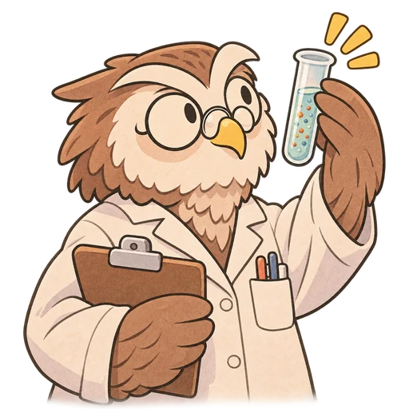<p><b>${ENDINGS.whyWho}</b>${fmt(ENDINGS.why[k], { bay: b })}</p></div>`;
}
// v1.2 海灣通報：港口大學的一張照片和兩句話
async function bayNotice(k, ev) {
  const N = BAYNOTE[k], left = ev.cap - ev.bay;
  addLog(`${BAYNOTE.head}：${N.title}`, 'bad'); pushNews(`${BAYNOTE.head}：${N.title}`);
  await waitModal({ html: `<div class="evc bayn"><div class="npm">${BAYNOTE.head}</div><div class="nph sm">${N.title}</div><p class="evp">${faceImg(N.body, 'evface')}<span>${N.body}</span></p><div class="eff">${k === 3 ? fmt(BAYNOTE.soLast, { left }) : fmt(BAYNOTE.so, { b: ev.bay, cap: ev.cap })}</div><p class="bayn-atlas">${BAYNOTE.atlas}</p></div>`, auto: 5200, btn: BAYNOTE.btn });
}
function frontPage(H, ev) {
  const g = S.g, img = H === HEADLINES[2] ? 'headline_l2' : H === HEADLINES.dud ? 'headline_l1_empty' : 'headline_l1';
  const lv = H === HEADLINES[2] ? 2 : 1;
  return `<div class="npf"><div class="f-mast"><span>貝洛港日報</span><b data-fit1>${H.title}</b></div>
    <div class="f-lbox" data-fit><em>本報訊</em>${monthOf(g.round)}<br>報社換工具：${LEVEL_NAME[lv]}</div>
    <div class="f-ltxt" data-fit>${H.body}</div>
    <div class="f-photo"></div>
    <div class="f-cap" data-fit>▲ ${H.photo}</div>
    <div class="f-ad" data-fit>${FRONT_FILLER.ad}</div>
    <div class="f-rb1" data-fit><em>今日天氣</em>${S.news[0] && /晴|雨|潮|風/.test(S.news[0]) ? S.news[0] : FRONT_FILLER.weather}</div>
    <div class="f-rb2" data-fit><em>分類廣告</em>${FRONT_FILLER.classified}</div>
    <div class="f-rtxt" data-fit>${FRONT_FILLER.side}</div></div>`;
}
// 表面風光：報紙登的就是十二月三十一日那場年終頒獎。用同一座舞台，台上站的是這一局真正的第一名（舊插畫的領獎人固定是水獺，跟贏家對不上）
function eheroStage(head, cap, wins) {
  const n = wins.length, podium = ASSETS.includes('img/ye_podium.png');
  const ppl = wins.map((i, k) => `<div class="eh-win" style="--k:${k - (n - 1) / 2};--n:${n}">${bossImg(i, false, 'eh-boss')}${podium ? '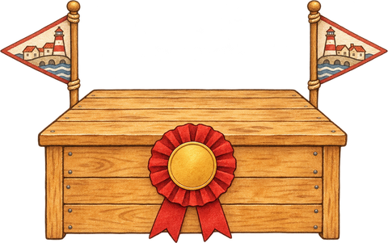' : '<i class="eh-pod"></i>'}</div>`).join('');
  const dots = Array.from({ length: 46 }, (_, k) => `<i style="--l:${(k * 37) % 100}%;--t:${(k * 53) % 100}%;--c:${['#F28CA0', '#7EC8E3', '#F7D46B', '#9FD6A8', '#FFFFFF'][k % 5]};--d:${(k % 7) * .45}s"></i>`).join('');
  return `<figure class="ehero e-stage">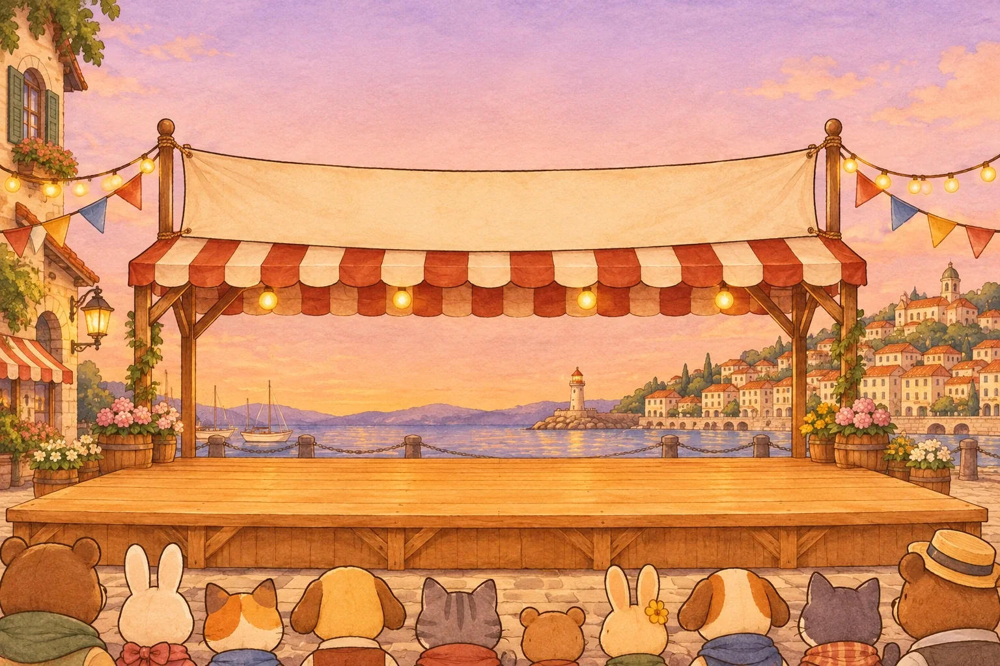<div class="eh-glint">${dots}</div>${ppl}<figcaption data-fit><small>貝洛港日報</small><b>${head}</b></figcaption><p class="eh-cap">${cap}</p></figure>`;
}
function ehero(k, head, sub, cap) {
  return `<figure class="ehero e-${k}"><figcaption data-fit><small>貝洛港日報</small><b>${head}</b>${sub ? `<span>${sub}</span>` : ''}</figcaption></figure>`;
}
// 這一局結束後，推薦先翻圖鑑的哪一頁：看這一局實際發生了什麼
function atlasRecommend(g) {
  const all = g.cards, R = YEAREND.rec;
  const n = { plant: all.filter(c => c.loc === 'plant').length, big: all.filter(c => E.onRiver(c) && c.size === 0).length, small: all.filter(c => E.onRiver(c) && c.size >= 1).length, bay: all.filter(c => c.loc === 'bay').length };
  if (g.collapsed) return ['eaten', R.eaten];
  if (g.reforms.bottle.done && g.reforms.market.done) return ['rstop', R.rstop];
  const top = ['small', 'bay', 'plant', 'big'].reduce((a, k) => n[k] > n[a] ? k : a, 'small');
  if (top === 'bay') return ['bay', fmt(R.bayMost, { n: n.bay })];
  if (top === 'plant') return ['rflow', fmt(R.rflow, { n: n.plant })];
  if (top === 'big') return ['whole', fmt(R.whole, { n: n.big })];
  return ['weather', fmt(R.weather, { n: n.small })];
}
function recHTML(g) {
  const [k, why] = atlasRecommend(g), lit = S.litNow || [];
  return `<aside class="es-rec"><div><em>${YEAREND.recLab}</em><b>〈${svName(k)}〉</b><p>${why}</p></div><button class="big" data-a="atlas" data-k="${k}">${YEAREND.recBtn} →</button>
    ${lit.length ? `<p class="es-lit"><em>${fmt(YEAREND.litNow, { n: lit.length })}</em>${lit.slice(0, 5).map(x => `<button data-a="atlas" data-k="${x}">〈${svName(x)}〉</button>`).join('')}${lit.length > 5 ? `<small>${fmt(YEAREND.litMore, { n: lit.length - 5 })}</small>` : ''}</p>` : ''}</aside>`;
}
// 遊戲中回首頁：停掉這一局（playGame 會看到 S.g 換掉而停下），清掉畫面上殘留的特效
function goHome() {
  presentationEnd(); S.presenting = null; S.busy = false; S.aiThinking = false; S.turnResolve = null; S.stamping = false;
  S.g = null; S.demo = false; S.paused = false; S.sel = null; S.sheet = null; S.tour = null; S.drawer = false; S.detail = false; S.peek = false; S.modal = null;
  if (S.savedSeats) { S.seats = S.savedSeats; S.savedSeats = null; }
  SFX.rain(0);
  document.querySelectorAll('.envelope,.quip,.evfx,.ye-fly,.debris,.reveal-ov,.rv-stamps,.atlas-toast,.cal-page').forEach(e => e.remove());
  S.screen = 'title'; swap(() => {});
}
function feedbackHTML() {
  return `<aside class="fb-card"><div><b>${MENU_UI.feedback}</b><p>${MENU_UI.feedbackLead}</p></div><a class="b-stamp fb-go" href="${FEEDBACK_URL}" target="_blank" rel="noopener"><span>${MENU_UI.feedbackBtn}</span></a></aside>`;
}
function renderEnding() {
  const g = S.g, st = S.endStage, w = E.whereabouts(g), Y = YEAREND;
  const rank = g.players.map((p, i) => i).sort((a, b) => g.players[b].money - g.players[a].money || E.stampsOf(g, a) - E.stampsOf(g, b));
  const rankHTML = `<div class="rank">${rank.map((i, k) => `<div class="rk ${g.winners && g.winners.includes(i) ? 'win' : ''}">${stampHTML(i, 30)}<b>${coName(i)}</b><span>${fmt(ENDINGS.rank, { m: g.players[i].money, s: E.stampsOf(g, i) })}</span>${g.winners && g.winners.includes(i) ? `<em>${ENDINGS.win}</em>` : ''}</div>`).join('')}</div>`;
  const btns = `${feedbackHTML()}<div class="eb"><button class="big" data-a="setup">${Y.again}</button><button class="b-tag" data-a="atlas" data-k="${atlasRecommend(g)[0]}">${Y.atlas}</button><button class="b-tag" data-a="title">${Y.home}</button></div>`;
  if (g.collapsed) {
    const E1 = ENDINGS.collapse; const last = g.lastBayCard && cardById(g.lastBayCard);
    let naming = '';
    if (last) { const cnt = {}; last.stamps.forEach(s => { if (s !== 'n') cnt[s] = (cnt[s] || 0) + 1; }); const top = Object.entries(cnt).sort((a, b) => b[1] - a[1])[0]; if (top) naming = `<div class="nam">${fmt(E1.naming, { co: coTag(+top[0]) })}</div>`; }
    return `<div class="ending dark">${ehero('collapse', E1.head, E1.sub, E1.photo)}<div class="pair">${newspaper('', '', E1.body, null)}<div class="poster red pimg" style="--bg:url(img/poster_collapse.webp)"><div class="pin" data-fit><div class="pt1">${E1.poster[0]}</div><div class="pt2">${E1.poster[1]}</div><div class="pt3">${E1.poster[2]}</div></div></div></div>${naming}<div class="slogan">${E1.slogan}</div>${endWhy(g, 'collapse')}${recHTML(g)}${btns}</div>`;
  }
  const next = `<div class="eb"><button class="big" data-a="estage">${Y.next}</button></div>`;
  // 第 1 頁：年終頒獎——四家老闆各站在自己的錢上，一筆一筆加減，最後第一名站上台
  if (st === 0) return yeAwardHTML(g);
  // 第 2 頁：塑膠去了哪裡＋地方短訊。四張小場景，每張一個大數字；下面是日報的年終短訊
  if (st === 1) {
    const all = g.cards, seg = [
      ['plant', all.filter(c => c.loc === 'plant')],
      ['big', all.filter(c => E.onRiver(c) && c.size === 0)],
      ['small', all.filter(c => E.onRiver(c) && c.size >= 1)],
      ['bay', all.filter(c => c.loc === 'bay')],
    ], hidden = seg[2][1].length + seg[3][1].length;
    const head = fmt(Y.head, { all: all.length, plant: seg[0][1].length, hidden });
    const FB = { plant: 'plant_full.webp', big: 'photo_hill_dirty.webp', small: 'headline_l1.webp', bay: 'ending_better.webp' };
    const dests = seg.map(([k, L], n) => {
      const [t, d, page] = Y.seg[k], has = ASSETS.includes(`img/ye_dest_${k}.png`) || ASSETS.includes(`img/ye_dest_${k}.webp`);
      const src = has ? (ASSETS.includes(`img/ye_dest_${k}.webp`) ? `img/ye_dest_${k}.webp` : `img/ye_dest_${k}.png`) : `img/${FB[k]}`;
      const who = g.players.map((pl, i) => { const m = L.filter(c => c.stamps.includes(i)).length; return m ? `<span title="${coName(i)}">${stampHTML(i, 20)}<b>${m}</b></span>` : ''; }).join('');
      return `<article class="ye-dest d-${k}" style="--d:${n * 120}ms"><figure class="${has ? '' : 'fb'}"></figure><div class="ye-dn"><b>${L.length}</b><small>${Y.unitOnly}</small></div><h3>${t}</h3><p>${d}</p><div class="ye-who">${who || `<em>${Y.whoNone}</em>`}</div><button class="es-go" data-a="atlas" data-k="${page}">〈${svName(page)}〉→</button></article>`;
    }).join('');
    const clips = g.players.map((pl, i) => { const [k, v] = E.reportFor(g, i); return `<article class="ye-clip">${k === 'r4' ? `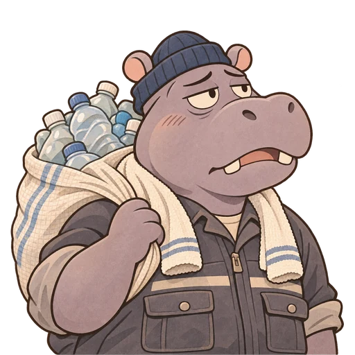` : bossImg(i, ['r1', 'r5', 'r8'].includes(k), 'shface')}<p>${fmt(REPORTS[k], { ...v, co: coTagDark(i) })}</p></article>`; }).join('');
    return `<div class="ending es ye2"><div class="es-top"><div class="es-faces"></div><div><p class="es-kicker">${Y.k2}</p><h2>${head}</h2></div></div>
      <div class="ye-dests">${dests}</div>
      ${w.removed ? `<p class="es-note ye-removed">${fmt(Y.removed, { n: w.removed })}<button class="es-go inl" data-a="atlas" data-k="${Y.removedKey}">〈${svName(Y.removedKey)}〉→</button></p>` : ''}
      ${recHTML(g)}
      <section class="ye-news"><header>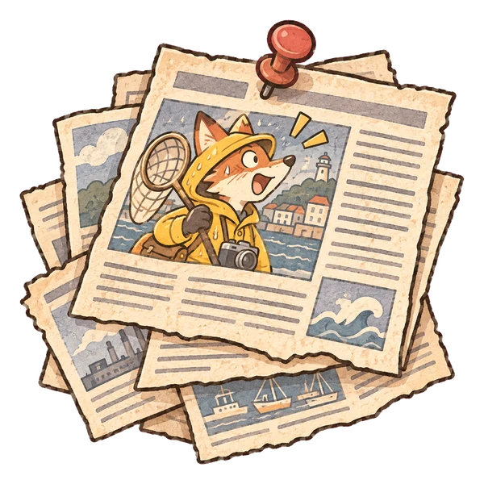<div><p class="es-kicker">${Y.k3}</p><h3>${Y.h3}</h3></div></header><div class="ye-clips">${clips}</div></section>
      ${next}</div>`;
  }
  if (!g.winners || !g.winners.length) g.winners = [g.players.map((p, i) => i).sort((a, b) => g.players[b].money - g.players[a].money)[0]];
  const winName = g.winners.map(coName).join('、'), closed = w.closed, rate = Math.round(closed / Math.max(1, w.printed) * 100);
  if (g.ending === 'facade') {
    const F = ENDINGS.facade;
    return `<div class="ending">${ASSETS.includes('img/ye_stage_bg.webp') ? eheroStage(fmt(F.head, { win: winName }), F.photo, g.winners) : ehero('facade', fmt(F.head, { win: winName }), '', F.photo)}<div class="pair"><div class="poster bright pimg pfac" style="--bg:url(img/poster_facade.webp)"><div class="pt1" data-fit1>${F.poster[0]}</div><div class="pmid" data-fit><div class="pt2">${fmt(F.poster[1], { rate })}</div><div class="pt3">${F.poster[2]}</div></div><div class="pt4" data-fit1>${F.poster[3]}</div></div>
      ${newspaper('', '', fmt(F.body, { win: winName, n: g.winners.map(i => g.players[i].stats.crush + g.players[i].stats.collect).join('、') }), null, `<div class="corner"><small>第七版</small>${F.corner}</div>`)}</div><div class="slogan">${F.slogan}</div>${endWhy(g, 'facade')}${rankHTML}${btns}</div>`;
  }
  const B = ENDINGS.better;
  return `<div class="ending">${ehero('better', B.head, '', B.photo)}<div class="pair">${newspaper('', '', fmt(B.body, { win: winName }), null, `<div class="corner">${B.corner}</div>`)}
    <div class="poster pimg pbet" style="--bg:url(img/poster_better.webp)"><div class="pin" data-fit><div class="pt1">${B.poster[0]}</div><div class="pt2">${B.poster[1]}</div>${g.players.map((p, i) => p.invested.bottle + p.invested.market ? `<div class="pt3">${coName(i)}　出資 ${p.invested.bottle + p.invested.market} 萬・獎金 ${S.bonus ? S.bonus[i] : 0} 萬</div>` : '').join('')}<div class="pt4">${B.poster[2]}</div></div></div></div>
    <div class="slogan">${B.slogan}</div>${endWhy(g, 'better')}${rankHTML}${btns}</div>`;
}

// ---------- 年終頒獎（第 1 頁）----------
// 每一家：開業資金 → ＋接單收入 → −花掉的錢 → −報社罰款 → ＋改造獎金（有人拿到才演）。數字和「看明細」的表一樣，只是一步一步演出來
function yePlan(g) {
  const f = S.yeFines || {}, C = E.CONFIG;
  const rows = g.players.map((p, i) => {
    const s = p.stats, ye = (f[i] || []).length * C.fineYE, tech = p.techs.reduce((a, t) => a + C.tech[t], 0);
    return { i, start: C.startMoney, income: s.income, tech, invest: s.invested, leak: s.leak, fine: s.paid - ye, ye, bonus: s.bonus || 0, total: p.money, yeN: (f[i] || []).length };
  });
  const keys = ['start', 'income', 'spend', 'fine'].concat(rows.some(r => r.bonus) ? ['bonus'] : []);
  const delta = (r, k) => k === 'start' ? r.start : k === 'income' ? r.income : k === 'spend' ? -(r.tech + r.invest + r.leak) : k === 'fine' ? -(r.fine + r.ye) : r.bonus;
  rows.forEach(r => { let v = 0; r.d = keys.map(k => delta(r, k)); r.v = r.d.map(d => (v += d)); r.v[r.v.length - 1] = r.total; });
  return { rows, keys, max: Math.max(1, ...rows.flatMap(r => r.v)) };
}
function yeTableHTML(g, P) {
  const Y = YEAREND, v = (n, sign) => n ? `<span class="${sign < 0 ? 'neg' : 'pos'}">${sign < 0 ? '−' : '+'}${n}</span>` : '<span class="zero">—</span>';
  const rows = [...P.rows].sort((a, b) => b.total - a.total);
  return `<div class="es-sheet ye-table"><table class="es-table"><thead><tr><th></th>${Y.cols.map((c, k) => `<th${k === Y.cols.length - 1 ? ' class="tot"' : ''}>${c}</th>`).join('')}</tr></thead>
    <tbody>${rows.map(r => `<tr class="${g.winners && g.winners.includes(r.i) ? 'win' : ''}"><th>${stampHTML(r.i, 26)}${coTagDark(r.i)}${g.winners && g.winners.includes(r.i) ? `<em>${Y.first}</em>` : ''}</th><td>${r.start}</td><td>${v(r.income, 1)}</td><td>${v(r.tech, -1)}</td><td>${v(r.invest, -1)}</td><td>${v(r.leak, -1)}</td><td>${v(r.fine, -1)}</td><td>${v(r.ye, -1)}${r.yeN ? `<small>${fmt(Y.found, { n: r.yeN })}</small>` : ''}</td><td>${v(r.bonus, 1)}</td><td class="tot">${r.total} 萬</td></tr>`).join('')}</tbody></table>
    <p class="es-note">${Y.note}${S.bonus ? Y.bonusYes : Y.bonusNo}</p></div>`;
}
function yeAwardHTML(g) {
  const Y = YEAREND, A = Y.award, P = S.yePlan = yePlan(g), step = Math.min(11, 230 / P.max), has = n => ASSETS.includes('img/' + n);
  const order = [...P.rows].sort((a, b) => b.total - a.total || E.stampsOf(g, a.i) - E.stampsOf(g, b.i)).map(r => r.i);
  const top = P.rows[order[0]], big = P.rows.reduce((a, r) => r.fine + r.ye > a.fine + a.ye ? r : a, P.rows[0]);
  const paid = big.fine + big.ye, topN = coName(top.i);
  const head = !paid ? fmt(Y.top, { co: topN }) + Y.noFine : big.i === top.i ? fmt(Y.same, { co: topN, n: paid }) : fmt(Y.top, { co: topN }) + fmt(Y.fine, { co: coName(big.i), n: paid });
  const topLeft = g.cards.filter(c => c.stamps.includes(top.i) && (c.loc === 'bay' || (E.onRiver(c) && c.size >= 1))).length;
  const lead = g.cards.some(c => c.stamps.includes(top.i)) ? fmt(topLeft ? Y.left : Y.leftNone, { co: topN, n: topLeft }) : '';
  const cls = ['ending', 'es', 'ye1', has('ye_stage_bg.webp') ? 'has-stage' : '', has('ye_coin_side.png') ? 'has-coin' : '', has('ye_podium.png') ? 'has-podium' : ''].join(' ');
  const cols = P.rows.map(r => {
    const n = Math.max(0, ...r.v), win = g.winners && g.winners.includes(r.i);
    return `<div class="ye-col ${win ? 'win' : ''}" data-i="${r.i}" style="--c:${uic(r.i)};--step:${step.toFixed(2)}px;--v:0">
      <div class="ye-tower"><div class="ye-stack">${Array.from({ length: n }, (_, k) => `<i style="--k:${k}"></i>`).join('')}</div>
      <figure class="ye-boss">${bossImg(r.i, false, 'n')}${bossImg(r.i, true, 'h')}</figure><span class="ye-delta"></span></div>
      <div class="ye-plinth">${has('ye_podium.png') ? '' : '<i></i>'}</div>
      <div class="ye-name">${stampHTML(r.i, 22)}${coTagDark(r.i)}</div><div class="ye-money"><b>${r.start}</b> 萬</div><em class="ye-rank">${A.rank[order.indexOf(r.i)]}</em></div>`;
  }).join('');
  return `<div class="${cls}">
    <header class="ye-head"><p class="es-kicker">${Y.k1}</p><h2 class="ye-h0">${A.title}</h2><div class="ye-res"><h2>${head}</h2>${lead ? `<p class="es-lead">${lead}</p>` : ''}</div></header>
    <div class="ye-cap" aria-live="polite"><b></b><span class="ye-ct"></span><span class="ye-dots">${P.keys.map(() => '<i></i>').join('')}</span></div>
    ${has('ye_moneybag.png') ? '' : ''}
    <div class="ye-cols n${P.rows.length}">${cols}</div>
    <div class="ye-foot"><button class="ye-skip" data-a="yeskip">${A.skip}</button><button class="ye-det" data-a="yedetail" aria-expanded="${!!S.yeDetail}">${S.yeDetail ? A.hide : A.detail}</button></div>
    ${S.yeDetail ? yeTableHTML(g, P) : ''}
    <div class="eb"><button class="big" data-a="estage">${Y.next}</button></div></div>`;
}
function yeMount() {
  const root = document.querySelector('.ye1'); if (!root || !S.yePlan) return;
  if (!S.ye) S.ye = { phase: -1, done: false, timer: null };
  const last = S.yePlan.keys.length - 1;
  if (RM || S.ye.done) { yeStop(); S.ye.phase = last; S.ye.done = true; yeApply(root, last, false); yeDone(root, false); return; }
  if (S.ye.phase < 0) S.ye.phase = 0;   // 一進來就是「開業資金」：四家都有 3 萬的錢幣，不留空白
  yeApply(root, S.ye.phase, false);
  if (!S.ye.timer) yeNext();
}
function yeNext() {
  const tok = S.ye, last = S.yePlan.keys.length - 1, dur = Math.max(650, 1550 * Math.min(1, S.speed || 1));
  tok.timer = setTimeout(() => {
    tok.timer = null;
    const root = document.querySelector('.ye1');
    if (S.ye !== tok || !root || S.screen !== 'ending' || S.endStage !== 0) return;
    if (tok.phase >= last) { tok.done = true; yeDone(root, true); return; }
    tok.phase++; yeApply(root, tok.phase, true); yeNext();
  }, tok.phase === 0 ? Math.max(900, dur) : dur);
}
function yeStop() { if (S.ye && S.ye.timer) { clearTimeout(S.ye.timer); S.ye.timer = null; } }
function yeFinish() { yeStop(); if (!S.yePlan) return; S.ye = { phase: S.yePlan.keys.length - 1, done: true, timer: null }; render(); }
function yeApply(root, ph, anim) {
  const P = S.yePlan, A = YEAREND.award, k = P.keys[ph], fineAt = P.keys.indexOf('fine');
  root.querySelector('.ye-cap b').textContent = A.ph[k][0];
  root.querySelector('.ye-ct').textContent = fmt(A.ph[k][1], { n: E.CONFIG.startMoney });
  root.querySelectorAll('.ye-dots i').forEach((d, n) => { d.className = n < ph ? 'done' : n === ph ? 'on' : ''; });
  root.dataset.phase = k;
  P.rows.forEach(r => {
    const col = root.querySelector(`.ye-col[data-i="${r.i}"]`); if (!col) return;
    const v = r.v[ph], d = r.d[ph], n = Math.max(0, v);
    col.style.setProperty('--v', n);
    col.querySelectorAll('.ye-stack i').forEach((c, j) => c.classList.toggle('on', j < n));
    const m = col.querySelector('.ye-money'); m.querySelector('b').textContent = v; m.classList.toggle('neg', v < 0);
    col.classList.toggle('hit', ph >= fineAt && r.fine + r.ye > 0);
    const del = col.querySelector('.ye-delta');
    if (!anim) { del.className = 'ye-delta'; return; }
    del.textContent = d ? `${d > 0 ? '+' : '−'}${Math.abs(d)} 萬` : '±0';
    del.className = 'ye-delta'; void del.offsetWidth; del.className = `ye-delta show ${d > 0 ? 'up' : d < 0 ? 'dn' : 'zero'}`;
    if (d > 0 && k !== 'start') yeFly(root, col, true, Math.min(6, Math.ceil(d / 4)), k);
    if (r.i === P.rows[0].i) SFX.play(k === 'spend' || k === 'fine' ? 'fine' : 'coins');
    if (d < 0) yeFly(root, col, false, Math.min(4, Math.ceil(-d / 3)), k);
  });
  root.classList.toggle('bag', k === 'bonus');
}
function yeDone(root, anim) {
  root.classList.add('ye-done');
  if (anim) SFX.play('fanfare');
  if (!anim || RM) return;
  root.querySelectorAll('.ye-col.win .ye-boss').forEach(b => { const r = b.getBoundingClientRect(); FX.burst(r.left + r.width / 2, r.top + 20, ['#F2B134', '#FFD978', '#E8924A', '#F4F7F6'], 46, { up: 7, size: 7 }); });
}
// 錢幣從上面飛進每一家的錢堆；罰單從老闆手上飛走
function yeFly(root, col, gain, n, k) {
  if (RM) return;
  const b = col.querySelector('.ye-boss').getBoundingClientRect(), tx = b.left + b.width / 2, ty = b.bottom;
  const src = gain ? (ASSETS.includes('img/ye_coin.png') ? 'img/ye_coin.png' : 'img/icon_coin.png') : (ASSETS.includes('img/ye_fine.png') ? 'img/ye_fine.png' : 'img/icon_coin.png');
  const from = (k === 'bonus' && root.querySelector('.ye-bag')) || root.querySelector('.ye-cap'), f = from.getBoundingClientRect();
  for (let j = 0; j < n; j++) {
    const im = document.createElement('img'); im.src = src; im.alt = ''; im.className = 'ye-fly' + (gain ? '' : ' fine'); document.body.appendChild(im);
    const sx = gain ? f.left + f.width / 2 + (j - n / 2) * 18 : tx, sy = gain ? f.bottom : ty - b.height * 0.5;
    const ex = gain ? tx : innerWidth - 40, ey = gain ? ty - 6 : -80, mx = (sx + ex) / 2 + (j - n / 2) * 16, my = Math.min(sy, ey) - 60;
    const an = im.animate([
      { transform: `translate(${sx - 22}px,${sy - 22}px) scale(.5) rotate(0deg)`, opacity: 0 },
      { transform: `translate(${mx - 22}px,${my - 22}px) scale(1) rotate(${gain ? 160 : -70}deg)`, opacity: 1, offset: 0.45 },
      { transform: `translate(${ex - 22}px,${ey - 22}px) scale(${gain ? 0.7 : 0.9}) rotate(${gain ? 340 : -160}deg)`, opacity: gain ? 0.2 : 0 },
    ], { duration: 820 + j * 50, delay: j * 85, easing: 'cubic-bezier(.35,.55,.45,1)', fill: 'both' });
    an.onfinish = () => im.remove(); setTimeout(() => im.remove(), 2400);
  }
}

// ===== 1：FLIP 卡片移動 =====
function snapBubbles() { const m = new Map(); document.querySelectorAll('.bub[data-card]').forEach(b => m.set(+b.dataset.card, b.getBoundingClientRect())); return m; }
function flipBubbles(prev) {
  if (RM || !prev.size) return;
  const rv = document.querySelector('.riverband'), rr = rv && rv.getBoundingClientRect(), ry = rr ? rr.top + rr.height * 0.45 : null;
  const seen = new Set(), plantEl = document.querySelector('.plantz') || document.querySelector('.plg');
  document.querySelectorAll('.bub[data-card]').forEach(b => {
    const id = +b.dataset.card; seen.add(id); const r1 = b.getBoundingClientRect(); let r0 = prev.get(id);
    if (!r0) { const c = cardById(id); if (c && c.path[c.path.length - 2] === 'plant' && plantEl) r0 = plantEl.getBoundingClientRect(); else return; }
    const dx = r0.left + r0.width / 2 - (r1.left + r1.width / 2), dy = r0.top + r0.height / 2 - (r1.top + r1.height / 2);
    if (Math.abs(dx) < 2 && Math.abs(dy) < 2) return;
    const cross = Math.abs(dx) > 60 && ry != null;
    const kf = cross ? [{ transform: `translate(${dx}px,${dy}px)` }, { transform: `translate(${dx * .55}px,${ry - (r1.top + r1.height / 2)}px) scale(.82)`, offset: .45 }, { transform: `translate(${dx * .2}px,${(ry - (r1.top + r1.height / 2)) * .6}px) scale(.88)`, offset: .7 }, { transform: 'none' }] : [{ transform: `translate(${dx}px,${dy}px)` }, { transform: 'none' }];
    b.animate(kf, { duration: cross ? 1000 : 420, easing: 'cubic-bezier(.3,.7,.3,1)' });
  });
  prev.forEach((r0, id) => {
    if (seen.has(id)) return; const c = cardById(id); if (!c) return;
    const tgt = c.loc === 'plant' ? plantEl : c.loc === 'bay' ? document.querySelector('.bayz') : null; if (!tgt) return;
    const t = tgt.getBoundingClientRect(), g = document.createElement('div'); g.className = 'ghostbub'; g.innerHTML = illus(c, 46);
    g.style.cssText = `left:${r0.left}px;top:${r0.top}px;width:${r0.width}px;height:${r0.height}px`; document.body.appendChild(g);
    const cx = r0.left + r0.width / 2, cy = r0.top + r0.height / 2, tx = t.left + t.width / 2 - cx, ty = (c.loc === 'bay' ? t.top + t.height * .8 : t.top + t.height / 2) - cy;
    const kf = c.loc === 'bay' && ry != null ? [{ transform: 'none', opacity: 1 }, { transform: `translate(${tx * .6}px,${ry - cy}px) scale(.8)`, offset: .5 }, { transform: `translate(${tx}px,${ty}px) scale(.2)`, opacity: .15 }]
      : [{ transform: 'none', opacity: 1 }, { transform: `translate(${tx * .5}px,${ty * .5 - 70}px) scale(.95) rotate(-12deg)`, offset: .5 }, { transform: `translate(${tx}px,${ty}px) scale(.3) rotate(8deg)`, opacity: .3 }];
    g.animate(kf, { duration: 950, easing: 'cubic-bezier(.4,0,.2,1)' }).onfinish = () => g.remove();
  });
}

// 地圖用橫的還是直的：哪一張在這塊空間裡比較大就用哪一張
function fitBoard() {
  const m = document.querySelector('.mapw'); if (!m) return;
  const W = m.clientWidth, H = m.clientHeight; if (!W || !H) return;
  const hb = Math.min(H, W * 0.625), wide = Math.min(W, hb * 16 / 9) * hb >= Math.min(W, H * 0.75) ** 2 / 0.75;
  S.wide = wide; m.classList.toggle('wide', wide);
}
// ---------- render ----------
function render() {
  const active = document.activeElement;
  const focusKey = active?.dataset.a ? `[data-a="${active.dataset.a}"]${active.dataset.v !== undefined ? `[data-v="${CSS.escape(active.dataset.v)}"]` : ''}${active.dataset.i !== undefined ? `[data-i="${active.dataset.i}"]` : ''}` : active?.dataset.card ? `[data-card="${active.dataset.card}"]` : null;
  if (active?.closest('.panel,.ov,.sheetov') === null && focusKey) S.returnFocus = focusKey;
  cleanupInteractiveStory();
  if (S.screen !== 'game') document.querySelectorAll('.evfx,.quip,.atlas-toast').forEach(n => n.remove());   // 天氣特效與台詞不該跟到別的畫面
  const actualGame = S.g;
  const prevB = S.screen === 'game' ? snapBubbles() : null;
  preloadScreen(S.screen);
  if (S.g) S.g = presentationGame(actualGame);
  let h = '';
  try {
    if (S.screen === 'title') h = renderTitle();
    else if (S.screen === 'setup') h = renderSetup();
    else if (S.screen === 'intro') h = renderIntro();
    else if (S.screen === 'contract') h = renderContract();
    else if (S.screen === 'how') h = renderHow();
    else if (S.screen === 'game') h = renderGame();
    else if (S.screen === 'ending') h = renderEnding();
    else if (S.screen === 'story') h = renderInteractiveStory();

    h += renderModal();
  } finally { S.g = actualGame; }
  if (S.screen !== S.lastScreen) { S.enterUntil = performance.now() + 900; S.lastScreen = S.screen; }
  $app().className = `screen-${S.screen}${S.sel && !S.aiThinking ? ' has-selection' : ''}${S.peek ? ' map-peek' : ''}${S.detail ? ' show-detail' : ''}${performance.now() < (S.enterUntil || 0) && !RM ? ' entering' : ''}`;
  document.body.classList.toggle('low-motion', RM);
  $app().innerHTML = h;
  if (S.screen === 'game') fitBoard();
  if (prevB) flipBubbles(prevB);
  if (S.screen === 'story') mountInteractiveStory();
  if (S.screen === 'title') mountTitle(); else { tlTimers.forEach(clearTimeout); tlTimers = []; SFX.sea(false); }
  fitAll();
  tweenNumbers();
  if (S.screen === 'ending') yeMount();
  cancelAnimationFrame(Lens.raf); cancelAnimationFrame(GLLens.raf);
  if (S.tour != null) { requestAnimationFrame(placeTour); setTimeout(placeTour, 450); }
  drawDecisionPreview(); placeDecide(); if (S.screen === 'game') calTear();
  const dialog = document.querySelector('.ov [role="dialog"], .sheetov [role="dialog"]');
  if (dialog) {
    const overlay = dialog.closest('.ov,.sheetov');
    for (const child of $app().children) if (child !== overlay) child.inert = true;
  }
  const focusTarget = dialog?.querySelector('button:not(:disabled)') || (focusKey && document.querySelector(focusKey)) || (S.screen === 'game' && S.sel ? document.querySelector('.dc.on .dc-go') || document.querySelector('.order-heading [data-a=unsel]') : null) || (S.returnFocus && document.querySelector(S.returnFocus));
  focusTarget?.focus({ preventScroll: true });
}
function drawDecisionPreview() {
  document.querySelector('.decision-preview')?.remove();
  document.querySelectorAll('.preview-target').forEach(el => el.classList.remove('preview-target'));
  if (S.screen !== 'game' || S.busy || S.presenting || !S.sel || S.modal) return;
  const c = cardById(S.sel), p = curP(), map = document.querySelector('.mapw');
  if (!c || p === null || !map || isAI(p) || S.g.mainDone) return;
  const type = S.previewAction;
  if (type === 'collect' ? !E.canCollect(S.g,p,c) : !E.canCrush(S.g,p,c)) return;
  const pv = E.preview(S.g,p,{type,id:c.id});
  const loc = type === 'collect' ? 'plant' : pv.locTonight;
  const target = document.querySelector(loc === 'plant' ? '.plantz' : loc === 'bay' ? '.bayz' : `.zone.z${loc}`);
  const source = document.querySelector(`[data-card="${c.id}"]`);
  if (!target || !source) return;
  target.classList.add('preview-target');
  const a = source.getBoundingClientRect(), b = target.getBoundingClientRect(), r = map.getBoundingClientRect();
  const x1 = a.left+a.width/2-r.left, y1 = a.top+a.height/2-r.top, x2=b.left+b.width/2-r.left, y2=b.top+b.height/2-r.top;
  const destination = loc === 'plant' ? '處理場' : loc === 'bay' ? '海灣' : DISTRICTS[loc];
  const layer = document.createElement('div'); layer.className = 'decision-preview';
  layer.innerHTML = `<svg aria-hidden="true" viewBox="0 0 ${r.width} ${r.height}"><defs><marker id="preview-arrow" markerWidth="8" markerHeight="8" refX="6" refY="3" orient="auto"><path d="M0 0 L6 3 L0 6" fill="none" stroke="#fff0b0" stroke-width="2"/></marker></defs>${loc !== c.loc ? `<path d="M${x1} ${y1} Q${x1} ${y2} ${x2} ${y2}" fill="none" stroke="#17384a" stroke-width="7"/><path d="M${x1} ${y1} Q${x1} ${y2} ${x2} ${y2}" fill="none" stroke="#fff0b0" stroke-width="3" stroke-dasharray="7 5" marker-end="url(#preview-arrow)"/>` : ''}</svg><p>${type === 'collect' ? PV.mapCollect : PV.mapCrush} → ${destination}${pv.overflowBack && type === 'collect' ? PV.mapOverflow : ''}<small>${PV.mapNote}</small></p>`;
  map.appendChild(layer);
}

addEventListener('resize', () => { if (S.screen === 'game') { fitBoard(); drawDecisionPreview(); placeDecide(); } if (S.tour != null) placeTour(); });

function dcHover(e) {
  const d = e.target.closest && e.target.closest('.dc[data-pv]:not(.off)');
  if (!d || S.screen !== 'game' || S.previewAction === d.dataset.pv) return;
  S.previewAction = d.dataset.pv; drawDecisionPreview();
  document.querySelectorAll('.dc').forEach(x => x.classList.toggle('on', x === d));
}
document.addEventListener('pointerover', dcHover); document.addEventListener('focusin', dcHover);
// 月曆：月份換了，舊的那一頁被撕下來
function calTear() {
  const g = S.g; if (!g) return;
  const prev = S.calRound; S.calRound = g.round;
  if (prev == null || prev === g.round || RM || !g.round) return;
  const cal = document.querySelector('.topbar .cal'); if (!cal) return;
  const r = cal.getBoundingClientRect(), pg = document.createElement('div');
  pg.className = 'cal-page'; pg.innerHTML = `<b>${monthOf(prev)}</b>`; pg.style.cssText = `left:${r.left}px;top:${r.top}px;width:${r.width}px;height:${r.height}px`;
  document.body.appendChild(pg); SFX.play('page');
  const an = pg.animate([{ transform: 'rotate(0) translateY(0)', opacity: 1 }, { transform: 'rotate(-8deg) translateY(10px)', opacity: 1, offset: .25 }, { transform: 'rotate(24deg) translate(40px,160px)', opacity: 0 }], { duration: 900, easing: 'cubic-bezier(.4,.1,.6,1)', fill: 'both' });
  an.onfinish = () => pg.remove(); setTimeout(() => pg.remove(), 1500);
}
// ---------- 事件 → 畫面 ----------
async function showEvents(evs, before) {
  const g = S.g;
  S.presenting = g;
  presentationBegin(before, g);
  try {
  for (const ev of evs) {
    if (S.screen !== 'game' || S.g !== g) return;
    const t = ev.type; tally(ev); atlasMark(ev);
    await presentActionEvent(ev);
    if (S.g !== g) return;
    presentationApply(ev);
    if (t === 'printed') { S.rangThisRound = false; SFX.play('page'); ev.ids.forEach(id => S.flash[id] = 'new'); addLog(fmt(MSG.printed, { m: monthOf(g.round), n: ev.ids.length }), 'sys'); render(); const pt = printerFX(ev.ids); await sleep(pt ? pt / (S.speed || 1) + 250 : 900); ev.ids.forEach(id => delete S.flash[id]); }
    else if (t === 'telUp') { const c = cardById(ev.id); if (c.tel >= 5) { if (!S.rangThisRound) { S.rangThisRound = true; SFX.play('phone'); } } if (c.tel >= 5) addLog(fmt(MSG.tel5, { loc: locOf(c) }), 'warn'); }
    else if (t === 'crush') {
      const c = cardById(ev.id); S.flash[ev.id] = 'crushed';
      addLog(fmt(ev.from === 1 ? MSG.crush2 : pick(MSG.crush), { co: coTag(ev.p), loc: locOf(c), n: ev.gain }));
      gossip();
      if (ev.others) addLog(fmt(MSG.crushOthers, { others: [...new Set(c.stamps.filter(s => s !== ev.p))].map(s => coName(s)).join('、'), co: coName(ev.p) }));
      render();
      crushDebris(ev.id, c); SFX.play('crush');
      if (!isAI(ev.p) && !S.photoSeen.has(ev.p) && !RM) {
        S.photoSeen.add(ev.p);
        showPolaroid(c, ev.p);
        await sleep(850);
      }
      delete S.flash[ev.id];
    }
    else if (t === 'caught') { SFX.play('fine'); (S.hit = S.hit || {})[ev.p] = g.round; addLog(fmt(MSG.caught, { co: coTag(ev.p) }), 'bad'); S.flash.cam = 1; render(); document.body.classList.add('camflash'); await sleep(450); document.body.classList.remove('camflash'); }
    else if (t === 'collect') { SFX.play('collect');
      const c = cardById(ev.id); addLog(fmt(pick(MSG.collect), { co: coTag(ev.p), loc: locOf(c), n: ev.gain }));
      if (ev.plantLeft === 1) addLog(MSG.plantLast, 'warn'); if (ev.plantLeft === 0) { addLog(MSG.plantFull, 'warn'); setTimeout(() => sayRes('plantFull', '.plg'), 80); }
      render();
      document.querySelectorAll('.plantz .pboxes .f, .plg .pboxes .f').forEach(slot => {
        if (slot === slot.parentElement.lastElementChild || !slot.nextElementSibling?.classList.contains('f')) slot.classList.add('just-filled');
      });
      await sleep(ev.plantLeft === 0 ? 600 : 250);
    }
    else if (t === 'invest') { SFX.play('coins'); { const a = elCenter('.hme'), to = elCenter('.hb'); if (a && to) FX.fly(a[0], a[1], to[0], to[1], ['#F2B134', '#FFD978'], 10); } addLog(fmt(ev.first ? MSG.investFirst : MSG.invest, { co: coTag(ev.p), proj: REFORM[ev.project].name, n: ev.amount, a: ev.funded, b: ev.cost }) + (ev.match ? fmt(GOAL_UI.match, { n: ev.match }) : '')); render(); await sleep(600); }
    else if (t === 'reformDone') { SFX.play('fanfare'); { const pt = elCenter('.hb'); if (pt) FX.burst(pt[0], pt[1], ['#6DBA8C', '#F2B134', '#F4F7F6'], 40, { up: 7, size: 7, shape: 'dot' }); } pushNews(REFORM[ev.project].name + '上路'); addLog(fmt(MSG.reformDone, { done: REFORM[ev.project].done }), 'good'); addLog(MSG.reformAfter, 'sys'); render(); await waitModal({ html: `<div class="evc"><div class="npm">貝洛港日報</div><div class="nph sm">${REFORM[ev.project].name}完工</div><p>${REFORM[ev.project].done}</p></div>`, auto: 2600, btn: '好' }); }
    else if (t === 'bothDone') { addLog(MSG.bothDone, 'good'); render(); await sleep(600); }
    else if (t === 'leak') { SFX.play('page'); addLog(fmt(pick(MSG.leak), { co: coTag(ev.p) })); render(); await sleep(600); }
    else if (t === 'odd') { SFX.play('coin'); addLog(fmt(pick(MSG.odd), { co: coTag(ev.p) })); render(); await sleep(500); }
    else if (t === 'buy') { SFX.play('coins'); addLog(fmt(MSG.buy, { co: coTag(ev.p), t: TECH[ev.tech].name, n: ev.price })); render(); await sleep(500); }
    else if (t === 'neutral') { const c = cardById(ev.id); S.flash[ev.id] = 'crushed'; addLog(fmt(MSG.neutral, { loc: locOf(c) })); render(); delete S.flash[ev.id]; }
    else if (t === 'event') {
      await eventFX(ev.event);
      const [title, body] = EVENTS[ev.event][ev.variant % EVENTS[ev.event].length]; S.paper = { title, body }; pushNews(title);
      addLog(fmt(MSG.daily, { t: title, e: EVENT_EFFECT[ev.event] }), 'sys'); render();
      const eimg = eventImg(ev.event, ev.variant);
      await waitModal({ html: `<div class="evc"><div class="npm">貝洛港日報</div><div class="nph sm">${title}</div><p class="evp">${faceImg(body, 'evface')}<span>${body}</span></p><div class="eff">${EVENT_EFFECT[ev.event]}</div></div>`, auto: 2200, btn: '好' });
    }
    else if (t === 'move' || t === 'toBay') {
      const c = cardById(ev.id);
      const from = ev.type === 'move' ? DISTRICTS[ev.from] : DISTRICTS[3];
      const to = ev.type === 'move' ? DISTRICTS[ev.to] : '海灣';
      addLog(fmt(MSG.drift, { id: c.id, cat: CAT[c.cat].name, from, to }), 'sys');
      if (t === 'toBay') SFX.play('bay');
      if (t === 'toBay' && ev.bay === 1) { addLog(MSG.firstBay, 'warn'); setTimeout(() => sayRes('firstBay', '.bayg'), 80); }
      render();
      const bs = t === 'toBay' ? bayStage(ev.bay, ev.cap) : 0;
      if (bs) await bayNotice(bs, ev);
    }
    else if (t === 'overflow') { addLog(fmt(MSG.overflow, { n: ev.ids.length }), 'bad'); render(); }
    else if (t === 'track') { const near = g.level < 2 ? g.pc.thr[g.level] - g.track : 99; if (near === 2) addLog(MSG.trackNear2, 'sys'); if (near === 1) addLog(MSG.trackNear1, 'sys'); render(); await sleep(350); }
    else if (t === 'levelUp') {
      const H = ev.dud ? HEADLINES.dud : HEADLINES[ev.level]; S.paper = { title: H.title, body: '' }; pushNews(H.title);
      const fl = Object.entries(ev.fines); fl.forEach(([p]) => { (S.hit = S.hit || {})[p] = g.round + 1; });
      const list = fl.length ? fl.map(([p, ids]) => `<div class="fr">${bossImg(+p, true, 'frface')}${coTag(+p)}：${ids.length} 張${ev.level === 1 ? '交過差的單被翻出來' : '單驗出微粒'}，賠 ${ids.length * E.CONFIG.fineUp} 萬。<small>第 ${ids.join('、')} 號</small></div>`).join('') : '';
      Object.values(ev.fines).flat().forEach(id => S.flash[id] = 'fined');
      render(); await revealScene(ev);
      addLog(fmt(MSG.front, { t: H.title }), 'bad'); fl.forEach(([p, ids]) => addLog(fmt(MSG.pay, { co: coTag(+p), n: ids.length * E.CONFIG.fineUp }), 'bad'));
      await waitModal({ cls: 'paperm', html: frontPage(H, ev) + `<div class="settle"><b>${H.settle}</b>${list}</div>`, auto: 5200, btn: '繼續' });
      Object.values(ev.fines).flat().forEach(id => delete S.flash[id]);
    }
    else if (t === 'bayWarn' && ev.w === 1) { pushNews(MSG.bayWarn[ev.w]); addLog(MSG.bayWarn[ev.w], 'bad'); render(); await sleep(700); }
    else if (t === 'collapse') { SFX.play('dun'); addLog(MSG.full, 'bad'); render(); await sleep(1500); }
  }
  } finally {
    if (S.presenting === g) {
      presentationEnd(); S.presenting = null;
      if (S.g === g && S.screen === 'game') render();
    }
  }
}

// 報社換工具：整個遊戲的高潮。地圖暗下來，放大鏡（或顯微鏡）掃過，以前看不到的一顆顆亮起，浮出蓋章公司的章，罰單飛向那家公司
async function revealScene(ev) {
  const g = S.g, map = document.querySelector('.mapw'); if (!map) return;
  const lv = ev.level, fines = ev.fines || {}, finedIds = new Set(Object.values(fines).flat());
  const seen = g.cards.filter(c => c.size === lv && (E.onRiver(c) || c.loc === 'bay'));
  const k = S.demo ? Math.max(0.35, S.speed || 1) : 1;
  SFX.play('dun');
  const r = map.getBoundingClientRect(), ov = document.createElement('div');
  ov.className = 'reveal-ov'; ov.style.cssText = `left:${r.left}px;top:${r.top}px;width:${r.width}px;height:${r.height}px`;
  ov.innerHTML = `<div class="rv-dark"></div><p class="rv-cap">${fmt(REVEAL.cap, { tool: LEVEL_NAME[lv] })}<b>${fmt(REVEAL.sub, { what: lv === 1 ? REVEAL.frag : REVEAL.micro })}</b></p>`;
  document.body.appendChild(ov);
  const pts = seen.map(c => { const el = document.querySelector(`.bub[data-card="${c.id}"]`); if (!el) return null; const b = el.getBoundingClientRect(); return { c, el, x: b.left + b.width / 2 - r.left, y: b.top + b.height / 2 - r.top, done: false }; }).filter(Boolean);
  const pop = pt => {
    pt.done = true;
    const ring = document.createElement('i'); ring.className = 'rv-ring' + (finedIds.has(pt.c.id) ? ' fined' : ''); ring.style.cssText = `left:${pt.x}px;top:${pt.y}px;--s:${pt.el.getBoundingClientRect().width + 16}px`; ov.appendChild(ring);
    const owners = [...new Set(pt.c.stamps.filter(x => x !== 'n'))];
    if (finedIds.has(pt.c.id) && owners.length) {
      const tag = document.createElement('div'); tag.className = 'rv-stamps'; tag.style.cssText = `left:${pt.x + r.left}px;top:${pt.y + r.top - pt.el.getBoundingClientRect().height / 2 - 30}px`;
      tag.innerHTML = owners.map(o => ``).join(''); document.body.appendChild(tag);
    }
  };
  const dark = ov.querySelector('.rv-dark'), lens = ov.querySelector('.rv-lens'), R = Math.max(70, Math.min(130, r.width * 0.09));
  if (RM) { pts.forEach(pop); await sleep(1400 * k); }
  else {
    await sleep(500 * k);
    const dur = 2600 * k, t0 = performance.now();
    await new Promise(res => {
      const step = now => {
        const u = Math.min(1, (now - t0) / dur), x = -R + u * (r.width + 2 * R), y = r.height * (0.45 + 0.28 * Math.sin(u * Math.PI * 3));
        dark.style.setProperty('--x', x + 'px'); dark.style.setProperty('--y', y + 'px'); dark.style.setProperty('--r', R + 'px');
        lens.style.transform = `translate(${x - R * 0.55}px,${y - R * 0.55}px)`; lens.style.width = R * 1.6 + 'px';
        pts.forEach(pt => { if (!pt.done && Math.hypot(pt.x - x, pt.y - y) < R * 1.05) { pop(pt); SFX.play(finedIds.has(pt.c.id) ? 'stamp' : 'coin'); } });
        if (u < 1) requestAnimationFrame(step); else res();
      };
      requestAnimationFrame(step);
    });
    pts.forEach(pt => { if (!pt.done) pop(pt); });
  }
  ov.classList.add('lit');
  // 罰單飛向公司名牌
  const entries = Object.entries(fines);
  for (const [pi, ids] of entries) {
    const chip = document.querySelectorAll('.cos .chip')[+pi], cb = chip && chip.getBoundingClientRect();
    if (cb && !RM) ids.forEach((id, j) => {
      const el = document.querySelector(`.bub[data-card="${id}"]`); if (!el) return; const b = el.getBoundingClientRect();
      const im = document.createElement('img'); im.className = 'ye-fly fine'; im.alt = ''; im.src = ASSETS.includes('img/ye_fine.png') ? 'img/ye_fine.png' : 'img/icon_coin.png'; document.body.appendChild(im);
      const a = im.animate([{ transform: `translate(${b.left + b.width / 2 - 30}px,${b.top - 30}px) scale(.4) rotate(-20deg)`, opacity: 0 }, { transform: `translate(${(b.left + cb.left) / 2}px,${Math.min(b.top, cb.top) - 40}px) scale(1) rotate(10deg)`, opacity: 1, offset: .5 }, { transform: `translate(${cb.left + cb.width / 2 - 30}px,${cb.top - 10}px) scale(.6) rotate(0deg)`, opacity: .2 }], { duration: 900 * k, delay: j * 120 * k, easing: 'cubic-bezier(.35,.55,.45,1)', fill: 'both' });
      a.onfinish = () => im.remove(); setTimeout(() => im.remove(), 3000);
    });
    setTimeout(() => { SFX.play('fine'); if (chip) { chip.classList.add('rv-fined'); setTimeout(() => chip.classList.remove('rv-fined'), 900); } }, (700 + ids.length * 120) * k);
    await sleep((entries.length > 2 ? 500 : 750) * k);
  }
  await sleep((entries.length ? 900 : 700) * k);
  ov.classList.add('out'); document.querySelectorAll('.rv-stamps').forEach(e => e.classList.add('out'));
  setTimeout(() => { ov.remove(); document.querySelectorAll('.rv-stamps').forEach(e => e.remove()); document.querySelectorAll('.bub.rv-hit').forEach(e => e.classList.remove('rv-hit')); }, 450);
  await sleep(250);
}
// 快清：碎片噴出來、落在旁邊，留一會兒才淡掉——讓人看到「它還在」
function crushDebris(id, c) {
  if (RM) return;
  const el = document.querySelector(`.bub[data-card="${id}"]`); if (!el) return;
  const r = el.getBoundingClientRect(), C = CAT[c.cat], cols = [C.c1, C.c2, '#FFFFFF'];
  for (let k = 0; k < 16; k++) {
    const d = document.createElement('i'); d.className = 'debris';
    const sz = 5 + (k % 4) * 2, ang = (k / 16) * Math.PI * 2 + Math.random() * .4, dist = 22 + Math.random() * 30;
    const sx = r.left + r.width / 2, sy = r.top + r.height / 2, ex = sx + Math.cos(ang) * dist, ey = r.bottom - 4 + Math.random() * 12;
    d.style.cssText = `width:${sz}px;height:${sz * (0.6 + Math.random() * .8)}px;background:${cols[k % 3]}`;
    document.body.appendChild(d);
    const a = d.animate([
      { transform: `translate(${sx}px,${sy}px) rotate(0deg)`, opacity: 1 },
      { transform: `translate(${(sx + ex) / 2}px,${sy - 26 - Math.random() * 20}px) rotate(${180 + k * 20}deg)`, opacity: 1, offset: .35 },
      { transform: `translate(${ex}px,${ey}px) rotate(${360 + k * 30}deg)`, opacity: 1, offset: .55 },
      { transform: `translate(${ex}px,${ey}px) rotate(${360 + k * 30}deg)`, opacity: .85, offset: .85 },
      { transform: `translate(${ex}px,${ey}px) rotate(${360 + k * 30}deg)`, opacity: 0 },
    ], { duration: 4200, easing: 'ease-out', fill: 'both' });
    a.onfinish = () => d.remove(); setTimeout(() => d.remove(), 5000);
  }
}
// ---------- 圖鑑收錄：遊戲裡第一次遇到的事，點亮圖鑑的一頁（只記錄，不改任何結算）----------
function atlasMark(ev) {
  const g = S.g; if (S.demo || !g) return;
  const t = ev.type, hit = [];
  if (t === 'printed') { if (ev.ids.some(id => (cardById(id) || {}).cat === 'pellet')) hit.push('make'); }
  else if (t === 'telUp') { if ((cardById(ev.id) || {}).tel >= E.CONFIG.bigMax) hit.push('whole'); }   // 有單沒人接，漲到最多通
  else if (t === 'crush' || t === 'neutral') hit.push('crushed');   // 順發外包順手快清也算
  else if (t === 'collect') { hit.push('rflow'); if (ev.plantLeft === 0) hit.push('rtank'); }
  else if (t === 'invest') { if (ev.project === 'bottle') hit.push('rfork'); }   // 押金計畫：瓶子回收後變成什麼
  else if (t === 'reformDone') hit.push('rstop');
  else if (t === 'toBay') { hit.push('bay'); if (ev.bay >= Math.round(ev.cap / 2)) hit.push('eaten'); const c = cardById(ev.id) || {}; if (c.cat === 'pellet' || c.size === 2) hit.push('srcday'); }
  else if (t === 'levelUp') hit.push(ev.level === 1 ? 'zoom' : 'lab');
  else if (t === 'overflow') hit.push('rtank');   // 下大雨，處理場滿到溢出來
  else if (t === 'move') {   // 原料粒（一出生就很小）被沖往下游，或微粒順著河往下漂
    const c = cardById(ev.id) || {};
    if (c.cat === 'pellet' || c.size === 2) hit.push('srcday');
  }
  else if (t === 'event') { const k = { storm: 'rain', calm: 'weather', letter: 'src' }[ev.event]; if (k) hit.push(k); }
  hit.forEach(k => { if (Atlas.light(k, g.round)) { S.litNow.push(k); atlasToast(k); } });
}
// 右上角蓋一個小章，三秒後自己消失；不擋操作、不暫停遊戲
function atlasToast(k) {
  addLog(`${ATLAS_UI.toast}：〈${svName(k)}〉`, 'sys');
  if (S.screen !== 'game' || S.modal) return;   // 開著晨報或頭版時不蓋章，晨報角落會列出來
  // 同時點亮好幾頁時併成一張章（原本會往下疊，蓋住地圖上的地名）
  let el = document.querySelector('.atlas-toast:not(.out)');
  if (!el) {
    el = document.createElement('div'); el.className = 'atlas-toast'; el.setAttribute('role', 'status');
    const a = document.createElement('small'); a.textContent = ATLAS_UI.toast; el.append(a); document.body.appendChild(el);
  }
  const b = document.createElement('b'); b.innerHTML = `〈${svName(k)}〉`; el.append(b);
  clearTimeout(el._t); el._t = setTimeout(() => { el.classList.add('out'); setTimeout(() => el.remove(), 320); }, 3200);
}

// ---------- 對手台詞 ----------
function sayQuip(p, kind) {
  const Q = QUIPS[S.g.players[p].company]; if (!Q) return;
  const pool = Q[kind] || Q.any || Q.crush; if (!pool) return;
  const line = pick(pool), chip = document.querySelectorAll('.cos .chip')[p];
  const boss = co(p).boss; addLog(fmt(MSG.said, { co: coTag(p), boss, line }), 'said');
  if (!chip) return;
  document.querySelectorAll('.quip').forEach(q => q.remove());
  const r = chip.getBoundingClientRect(), q = document.createElement('div');
  q.className = 'quip'; q.style.setProperty('--qc', uic(p)); const who = document.createElement('b'); who.textContent = boss; const fc = document.createElement('img'); fc.className = 'qface'; fc.alt = ''; fc.src = `img/boss_${S.g.players[p].company}${kind === 'caught' ? '_hit' : ''}.webp`; const tx = document.createElement('span'); tx.append(who, line); q.append(fc, tx);
  q.style.left = (r.left + 12) + 'px'; q.style.top = (r.bottom + 8) + 'px';
  document.body.appendChild(q);
  const life = Math.max(1400, 2600 * Math.min(1, S.speed || 1));
  setTimeout(() => { q.classList.add('out'); setTimeout(() => q.remove(), 300); }, life);
}
// 居民在地圖旁冒一句（處理場放滿、第一張單進海灣）
function sayRes(k, sel) {
  const R = RES_SAY[k], at = document.querySelector(sel); if (!R) return;
  addLog(fmt(MSG.resSaid, { who: R[0], line: R[2] }), 'said'); if (!at) return;
  document.querySelectorAll('.quip').forEach(q => q.remove());
  const r = at.getBoundingClientRect(), q = document.createElement('div');
  q.className = 'quip res up'; q.innerHTML = `<span><b>${R[0]}</b>${R[2]}</span>`;
  q.style.left = Math.max(8, Math.min(innerWidth - 260, r.left + 8)) + 'px'; q.style.top = Math.max(8, r.top - 66) + 'px';
  document.body.appendChild(q);
  setTimeout(() => { q.classList.add('out'); setTimeout(() => q.remove(), 300); }, Math.max(1600, 2800 * Math.min(1, S.speed || 1)));
}
// ---------- 市民閒話 ----------
// 機率隨全城快清次數上升；講的地方，挑碎片和微粒真的在的那一區
function gossip(force) {
  const g = S.g, crushed = g.players.reduce((a, p) => a + p.stats.crush, 0);
  if (!force && Math.random() > Math.min(0.75, crushed * 0.08)) return;
  const spots = [];
  g.cards.forEach(c => { if (c.size >= 1 && (E.onRiver(c) || c.loc === 'bay')) spots.push(c.loc === 'bay' ? 'bay' : c.loc); });
  if (!spots.length) return;
  let key = pick(spots);
  if (g.level >= 2 && Math.random() < 0.4) key = 'micro'; else if (Math.random() < 0.15) key = 'office';
  const line = pick(GOSSIP[key]); if (!S.news.includes(line)) pushNews(line);
  return line;
}

// ---------- 晨報 ----------
function tally(ev) {
  const r = S.rstat; if (!r) return; const t = ev.type;
  if (t === 'crush' || t === 'neutral') r.crush++; else if (t === 'collect') r.collect++; else if (t === 'toBay') r.bay++;
  else if (t === 'levelUp') r.level = ev.level; else if (t === 'overflow') r.overflow++; else if (t === 'reformDone') r.reform = ev.project;
  // 每家公司這一輪做了什麼（給晨報的「上個月的帳」）
  const A = r.acts; if (!A) return;
  const add = (p, k, n = 1) => { if (p === 'n' || p === undefined) return; A[p][k] = (A[p][k] || 0) + n; };
  if (t === 'crush') add(ev.p, ev.from === 1 ? 'crush2' : 'crush'); else if (t === 'collect') add(ev.p, 'collect');
  else if (t === 'invest') add(ev.p, 'invest', ev.amount); else if (t === 'leak') add(ev.p, 'leak'); else if (t === 'odd') add(ev.p, 'odd');
  else if (t === 'caught') add(ev.p, 'caught'); else if (t === 'buy') A[ev.p].buy = ev.tech;
  else if (t === 'levelUp') Object.keys(ev.fines).forEach(p => add(+p, 'fined'));
}
// 每輪開始時拍一張快照，下一份晨報拿來算「上個月的帳」
function newRoundStat() {
  const g = S.g;
  return { crush: 0, collect: 0, bay: 0, level: 0, overflow: 0, reform: null, acts: g.players.map(() => ({})), money0: g.players.map(p => p.money), stamps0: g.players.map((p, i) => E.stampsOf(g, i)) };
}
function ledgerHTML(r, head) {
  const g = S.g, M = MORNING, A = M.acts;
  if (!r || !r.acts) return '';
  const rows = g.players.map((pl, i) => {
    const a = r.acts[i], parts = [];
    ['crush', 'crush2', 'collect', 'invest'].forEach(k => { if (a[k]) parts.push(fmt(A[k], { n: a[k] })); });
    ['leak', 'odd'].forEach(k => { if (a[k]) parts.push(A[k]); });
    if (a.buy) parts.push(fmt(A.buy, { t: TECH[a.buy].name }));
    if (a.caught) parts.push(`<span class="bad">${A.caught}</span>`); if (a.fined) parts.push(`<span class="bad">${A.fined}</span>`);
    const dm = pl.money - r.money0[i], st = E.stampsOf(g, i), ds = st - r.stamps0[i], x = E.exposure(g, i);
    return `<tr><th>${stampHTML(i, 22)}${coTag(i)}</th><td>${parts.join('・') || `<span class="mu">${A.none}</span>`}</td>
      <td class="num ${dm > 0 ? 'up' : dm < 0 ? 'dn' : ''}">${dm > 0 ? '+' : ''}${dm} 萬</td>
      <td>${ds > 0 ? fmt(M.stampD, { n: ds }) : `<span class="mu">${M.stampSame}</span>`}<small>${fmt(M.stampNow, { n: st })}${x.next ? '・<b class="bad">' + fmt(M.riskNext, { n: x.next }) + '</b>' : ''}</small></td></tr>`;
  }).join('');
  return `<div class="mpr ledger"><em>${head}</em><table><thead><tr><th></th>${M.ledgerCols.map(c => `<th>${c}</th>`).join('')}</tr></thead><tbody>${rows}</tbody></table></div>`;
}
function yesterdayLine(r) {
  const Y = MORNING.y;
  if (!r) return Y.first;
  if (r.level) return Y.level;
  if (r.overflow) return Y.overflow;
  if (r.reform) return fmt(Y.reform, { proj: REFORM[r.reform].name });
  if (r.bay) return fmt(Y.bay, { n: r.bay });
  if (r.crush >= 2) return fmt(Y.crush, { t: r.crush + r.collect, n: r.crush });
  if (r.collect) return fmt(Y.collect, { n: r.collect });
  return Y.quiet;
}
async function morningPaper() {
  const g = S.g, r = S.rstat; S.rstat = newRoundStat();
  const fc = E.forecast(g), F = FORECAST[fc.event];
  const gos = [gossip(), g.round >= 3 ? gossip() : null].filter(Boolean), gl = gos.find(t => faceOf(t)) || gos[0];
  pushNews(`${MORNING.fc}：${F.title}`); addLog(fmt(MSG.paper, { t: F.title, e: F.effect }), 'sys');
  // 第一輪要跑新手教學時不跳晨報，免得一開場就是一堆還沒教過的名詞；預報仍在右上角與右側提示
  if (g.round === 1 && S.tourWanted && !S.tourDone && !S.demo && g.players.some(p => !p.ai)) return;
  const eimg = eventImg(fc.event, fc.variant);
  // 第一份晨報多一句說明；翻過圖鑑的頁，變成晨報上的鉛筆字；這一局新點亮的頁，蓋在角落
  const firstPaper = S.tourWanted && !S.paperSeen && !S.demo; S.paperSeen = true;
  const noteKey = { storm: 'rain', tide: 'bay', calm: 'weather', letter: 'src' }[fc.event], note = Atlas.isRead(noteKey) ? ATLAS_NOTE[noteKey] : '';
  const lvKey = ['zoom', 'lab'][g.level], fresh = S.demo ? [] : Atlas.takeFresh();
  const gap = g.level < 2 ? Math.max(0, g.pc.thr[g.level] - g.track) : 0, bayLeft = g.pc.bayCap - E.bay(g).length, plLeft = g.plantCap - E.plant(g).length;
  const html = `<div class="mp"><div class="mph"><span class="npm">${MORNING.mast}</span><b>${monthOf(g.round)}一日</b><small>　第 ${g.round}／${E.CONFIG.rounds} 個月</small></div>
    ${fresh.length ? `<div class="mpatlas"><em>${MORNING.atlasLab}</em>${fresh.slice(0, 3).map(k => `<b>〈${svName(k)}〉</b>`).join('')}${fresh.length > 3 ? `<span>${fmt(MORNING.atlasMore, { n: fresh.length })}</span>` : ''}</div>` : ''}${firstPaper ? `<p class="mpfirst">${MORNING.first}</p>` : ''}
    <div class="mpf ev-${fc.event}"><div><em>${MORNING.fc}</em><b>${F.title}</b><p>${F.effect}</p>${note ? `<small class="mpnote">${PEN}${MORNING.noteLab}：${note}</small>` : ''}</div>${gl ? `<aside class="mpgos">${faceImg(gl, 'face')}<p><em>${FACE_UI.gossip}</em>${gl}</p></aside>` : ''}</div>
    <div class="mpgoal g-${E.goal(g)}"><em>${GOAL_UI.head}</em><b>${GOALS[E.goal(g)].name}</b><p>${GOALS[E.goal(g)].rule}</p><small>${GOALS[E.goal(g)].flavor}</small></div>
    <div class="mpg"><div class="${gap <= 2 && g.level < 2 ? 'warn' : ''}"><em>報社調查</em><b>${fmt(MORNING.inv[g.level], { n: gap })}</b><p>${MORNING.invNote[g.level]}</p>${lvKey && Atlas.isRead(lvKey) ? `<small class="mpnote">${PEN}${ATLAS_NOTE[lvKey]}</small>` : ''}</div>
      <div class="${bayLeft <= 3 ? 'warn' : ''}"><em>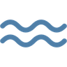海灣</em><b>${fmt(MORNING.bay, { n: bayLeft })}</b><p>${MORNING.bayNote}</p></div>
      <div class="${plLeft <= 1 ? 'warn' : ''}"><em>處理場</em><b>${plLeft > 0 ? fmt(MORNING.plant, { n: plLeft }) : MORNING.plantFull}</b><p>${plLeft > 0 ? MORNING.plantNote : MORNING.plantFullNote}</p></div></div>
    ${ledgerHTML(r, MORNING.ledgerHead)}
    <div class="mpy"><em>${MORNING.yLab}</em>${yesterdayLine(r)}</div>${g.round >= E.CONFIG.rounds ? `<div class="mpl">${MORNING.last}</div>` : ''}</div>`;
  await waitModal({ cls: 'mpm', html, auto: 3200, btn: MORNING.btn });
}

// ---------- 遊戲流程 ----------
async function playGame() {
  const g = S.g, myGame = g;
  while (!g.over) {
    await showEvents(E.startRound(g)); if (S.g !== myGame) return;
    await morningPaper(); if (S.g !== myGame) return;
    do {
      S.sel = null; const p = E.currentPlayer(g); render();
      if (isAI(p)) await aiTurn(p); else { if (g.players.filter(x => !x.ai).length > 1) { await waitModal({ cls:'handoff', label:'交接回合', html:`<div class="hoface">${bossImg(p, isHit(p), 'bossp')}${stampHTML(p, 54)}</div><h2>輪到 ${coName(p)}</h2><p>${monthOf(g.round)}。把電腦交給${co(p).boss}。</p>`, btn:'開始' }); if(S.g !== myGame) return; } if (S.tourWanted && !S.tourDone && !S.demo) { S.onboarding = true; S.tourDone = true; S.tour = 0; } /* 選了「要提示」：第一回合自動跑七步導覽，跑完（或跳過）再接新手的那一句 */ await new Promise(res => { S.turnResolve = res; render(); }); }
      if (S.g !== myGame) return;
    } while (E.nextTurn(g));
    S.sel = null; S.onboarding = false; S.peek = false; render(); await sleep(400);
    const night = presentationCapture(g); await showEvents(E.endRound(g), night); if (S.g !== myGame) return;
  }
  if (!g.collapsed && S.rstat && S.rstat.acts) { await waitModal({ cls: 'mpm', label: MORNING.ledgerHeadLast, html: `<div class="mp">${ledgerHTML(S.rstat, MORNING.ledgerHeadLast)}</div>`, auto: 3600, btn: MORNING.lastBtn }); if (S.g !== myGame) return; }
  if (!g.collapsed) { const ev = E.yearEnd(g); S.yeFines = ev[0].fines; S.bonus = ev[1] ? ev[1].bonus : null; }
  if (!S.demo) Atlas.end(g.collapsed ? 'collapse' : g.ending);
  document.querySelectorAll('.envelope,.quip,.evfx,.ye-fly,.debris,.reveal-ov,.rv-stamps,.atlas-toast').forEach(e => e.remove());
  S.endStage = 0; S.ye = null; S.yeDetail = false; S.screen = 'ending'; render();
  if (S.demo) { for (let i = 0; i < 2 && !g.collapsed; i++) { await sleep(i === 0 ? 9000 : 5000); if (S.screen !== 'ending' || S.g !== myGame) return; S.endStage++; render(); } }
}
async function aiTurn(p) {
  const g = S.g; S.aiThinking = true; await sleep(280);
  if (S.g !== g) return;
  const b = E.aiBuy(g, p); if (b) { const before = presentationCapture(g); await showEvents(E.act(g,p,b),before); }
  if (S.g !== g) return;
  const a = E.aiChoose(g, p);
  if (a.id) { S.sel = a.id; render(); await sleep(230); S.sel = null; }
  if (S.g !== g) return;
  const before = presentationCapture(g), evs = E.act(g, p, a);
  const kind = evs.some(e => e.type === 'caught') ? 'caught' : a.type;
  await showEvents(evs, before);
  if (S.g === g && S.screen === 'game' && Math.random() < (S.demo ? 0.5 : 0.8)) { render(); sayQuip(p, kind); await sleep(700); }
  if (S.g === g) S.aiThinking = false;
}
async function humanAct(a) {
  const g = S.g, p = curP(); if (S.busy || S.presenting || p === null || isAI(p) || !S.turnResolve) return; S.busy = true;
  try { const before = presentationCapture(g); S.sel = null; const events = E.act(g,p,a); if (g.mainDone && S.onboarding) { S.lesson = lessonOf(events); S.onboarding = false; } await showEvents(events, before); } finally { S.busy = false; if(S.g === g) render(); }
}

// 新手做完第一張單：把「領了多少、東西在哪、章在誰身上」寫成三行
// 錢怎麼算：快清＝來電通數 × 1 萬；收走＝扣掉一半的處理費（進位後留給你）
function payHow(type, c) {
  const n = E.tel(S.g, c);
  if (type === 'crush') return fmt(ACT_UI.crushPay, { n });
  const fee = n - Math.max(1, Math.ceil(n / 2));
  return fee > 0 ? fmt(ACT_UI.collectPay, { n, fee }) : fmt(ACT_UI.crushPay, { n });
}
function lessonOf(evs) {
  const e = evs.find(x => x.type === 'crush' || x.type === 'collect'); if (!e) return null;
  const c = cardById(e.id);
  return e.type === 'crush' ? fmt(LESSON.doneCrush, { n: e.gain, size: SIZE_NAME[e.to], loc: DISTRICTS[c.loc] }) : fmt(LESSON.doneCollect, { n: e.gain });
}
// 蓋章：章壓下去、紙上留下印，再真的執行行動
async function stampThenAct(type, btn) {
  if (S.stamping || S.busy || S.presenting) return;
  const id = S.sel, p = curP(), slip = btn.closest('.dc') || btn;   // 印蓋在你選的那一欄上，按下去的地方就看得到
  if (RM || !slip || p === null) return humanAct({ type, id });
  S.stamping = true;
  try {
    btn.classList.add('pressing');
    await new Promise(r => setTimeout(r, 230));
    const mark = document.createElement('div');
    mark.className = `imprint ${type}`; mark.innerHTML = `${type === 'crush' ? '快清' : '收走'}<small>${coName(p)}・${monthOf(S.g.round)}</small>`;
    mark.style.setProperty('--rot', (type === 'crush' ? -8 : 6) + (Math.random() * 4 - 2) + 'deg');
    slip.appendChild(mark);
    await new Promise(r => setTimeout(r, 420));
  } finally { S.stamping = false; }
  humanAct({ type, id });
}
function newGame() {
  const seats = S.seats.slice(0, S.n).map(s => ({ ...s }));
  const seed = S.seed !== null && S.seed !== '' && !isNaN(+S.seed) ? +S.seed : Math.floor(Math.random() * 1e9);
  S.g = E.createGame(seats, seed); S.photoSeen = new Set(); S.peek = false; S.presenting = null; S.aiThinking = false; S.busy = false; S.turnResolve = null; S.replayWho = null; S.news = []; S.sheet = null; S.tour = null; S.tourDone = false; S.onboarding = false; S.log = []; S.paper = null; S.flash = {}; S.sel = null; S.stamped = {}; S.bonus = null; S.yeFines = null; S.rstat = null; S.litNow = []; S.paperSeen = false; S.storyFrom = null; S.lesson = null; S.hit = {};
  if (!S.demo) { Atlas.startGame(); Atlas.takeFresh(); }
  S.g.players.forEach((p, i) => { if (p.ai) S.stamped[i] = true; });
  addLog(fmt(MSG.newGame, { seed }), 'sys');
}
function defaultSeats() { return [{ company: 'whale', ai: false, style: 'calc', on: true }, { company: 'egret', ai: false, style: 'calc', on: true }, { company: 'otter', ai: true, style: 'green', on: true }, { company: 'crab', ai: true, style: 'greedy', on: true }]; }
S.seats = defaultSeats();

// ---------- 點擊 ----------
document.addEventListener('click', e => {
  const before = S.screen;
  if (S.drawer && !e.target.closest('.drawerw')) { S.drawer = false; if (!e.target.closest('[data-a]')) { render(); return; } }
  if (S.menu && !e.target.closest('.menuw')) { S.menu = null; if (!e.target.closest('[data-a]')) { render(); return; } }
  const cardEl = e.target.closest('[data-card]');
  const el = e.target.closest('[data-a]');
  if (S.stamping) return;   // 蓋章那半秒不接受其他點擊
  if (cardEl && S.screen === 'game' && !S.busy && !S.presenting && !S.modal && (S.tour == null || TOUR[S.tour][0] === 'bub')) {
    if (S.tour != null) { const tid = tourCardId(); if (tid != null && +cardEl.dataset.card !== tid) return; S.tour++; }
    const g = S.g, id = +cardEl.dataset.card, c = cardById(id), p = curP();
    if (p !== null && !isAI(p) && !g.mainDone && c && E.onRiver(c)) {
      S.sel = id; S.peek = false; S.detail = false; S.drawer = false;
      S.previewAction = E.canCrush(g, p, c) ? 'crush' : 'collect';
      render();
      document.querySelector('.dc:not(.off) .dc-go')?.focus({ preventScroll: true });
    }
    return;
  }
  if (S.screen === 'game' && S.sheet && !el && !e.target.closest('[data-stop]')) { S.sheet = null; render(); return; }
  if (!el || el.disabled) return;
  const a = el.dataset.a, v = el.dataset.v, i = +el.dataset.i;
  if (a !== 'drawer' && S.drawer) S.drawer = false;
  if (!['menu', 'menuhome', 'menuhomeyes'].includes(a) && S.menu) S.menu = null;
  if (a === 'close') return closeModal();
  if (S.modal) return;
  if (a === 'menuhomeyes') { S.menu = null; goHome(); return; }
  if ((S.busy || S.presenting) && !['pause','spd','title','menu','menuhome'].includes(a)) return;
  if (a === 'tournext') { if (TOUR[S.tour][0] === 'bub') { const tid = tourCardId(); if (tid != null) tourSelect(tid); } S.tour = S.tour + 1 >= TOUR.length ? null : S.tour + 1; return render(); }
  if (a === 'tourskip') { S.tour = null; return render(); }
  if (a === 'tourstart') { S.sheet = null; S.tour = 0; return render(); }
  if (a === 'sheetclose') { if (e.target.closest('[data-stop]') && !e.target.closest('button[data-a="sheetclose"]')) return; S.sheet = null; return render(); }
  if (a === 'sheet') { S.sheet = v; return render(); }
  if (S.tour != null) return;
  if (S.modal) return;
  switch (a) {
    case 'title': presentationEnd(); S.presenting = null; S.g = null; S.demo = false; S.paused = false; S.screen = 'title'; break;
    case 'setup': if (S.savedSeats) { S.seats = S.savedSeats; S.savedSeats = null; } S.g = null; S.demo = false; S.screen = 'setup'; break;
    case 'story': svReset(); S.storyFrom = null; S.screen = 'story'; break;
    // 年終結算 → 圖鑑的某一頁；S.g 留著，圖鑑頁首會多一顆「回年終結算」
    case 'atlas': { svReset(); const ci = svIdx(el.dataset.k); if (ci >= 0) { SV.ch = ci; SV.view = 'page'; } S.storyFrom = 'ending'; S.screen = 'story'; break; }
    case 'backend': if (S.g && S.g.over) S.screen = 'ending'; else S.screen = 'title'; break;
    case 'clearatlas': Atlas.clear(); S.atlasCleared = true; S.tourWanted = true; break;
    case 'n': S.n = +v; break;
    case 'role': { const st = seatOf(el.dataset.k); st.on = v !== 'off'; if (v !== 'off') st.ai = v === 'ai'; S.setupErr = null; break; }
    case 'style': { const st = el.dataset.k ? seatOf(el.dataset.k) : S.seats[i]; st.style = v; break; }
    case 'spd0': S.speed = +v; break;
    case 'sound': SFX.toggle(); break;
    case 'motion': Atlas.setMotion(v === '1' ? 'low' : 'full'); applyMotion(); FX.parts = []; FX.ambient = []; break;
    case 'preview': S.previewAction = v; break;
    case 'tourw': S.tourWanted = v === '1'; break;
    case 'start': {
      S.seed = document.getElementById('seed').value.trim() || null;
      const on = S.seats.filter(st => st.on !== false), off = S.seats.filter(st => st.on === false);
      if (on.length < 2) { S.setupErr = '至少要兩家公司簽約。'; break; }
      S.atlasCleared = false;
      S.seats = [...on, ...off]; S.n = on.length;   // 簽約的放前面，newGame 只取前 n 家
      S.setupErr = null; newGame(); S.introIdx = 0; S.screen = 'intro'; break; }
    case 'introNext': if (e.target.closest('[data-a="skip"]')) break; S.introIdx++; if (S.introIdx >= INTRO.length) S.screen = 'contract'; break;
    case 'skip': S.screen = 'contract'; break;
    case 'stamp': S.stamped[i] = true; SFX.play('stamp'); break;
    case 'begin': if (S.tourWanted) { S.screen = 'how'; break; } S.screen = 'game'; render(); playGame(); return;   // 要提示：先看合約背面的因果圖
    case 'howgo': S.screen = 'game'; render(); playGame(); return;
    case 'demo': S.savedSeats = S.savedSeats || S.seats; S.demo = true; S.speed = 0.5; S.n = 4; S.seats = [{ company: 'whale', ai: true, style: 'greedy' }, { company: 'egret', ai: true, style: 'calc' }, { company: 'otter', ai: true, style: 'green' }, { company: 'crab', ai: true, style: 'calc' }]; S.seed = null; newGame(); S.screen = 'game'; render(); playGame(); return;
    case 'pause': S.paused = !S.paused; break;
    case 'spd': S.speed = +v; break;
    case 'peek': S.peek = !S.peek; render(); document.querySelector(S.peek ? '.peek-back' : '.peek-map')?.focus({preventScroll:true}); return;
    case 'hist': { const pp = curP(), act = pp !== null && !isAI(pp) && !S.g.mainDone; S.histOpen = !(S.histOpen ?? !act); break; }
    case 'unsel': S.sel = null; S.peek = false; S.detail = false; break;
    case 'drawer': S.drawer = !S.drawer; break;
    case 'menu': S.menu = S.menu ? null : 'main'; break;
    case 'menuhome': S.menu = 'home'; break;
    case 'detail': S.detail = !S.detail; break;
    case 'crush': case 'collect': stampThenAct(a, el); return;
    case 'invest': S.sheet = null; humanAct({ type: 'invest', project: el.dataset.k, amount: +v }); return;
    case 'leak': humanAct({ type: 'leak' }); return;
    case 'odd': humanAct({ type: 'odd' }); return;
    case 'buy': S.sheet = null; humanAct({type:'buy', tech:el.dataset.t}); return;
    case 'end': if (!S.g?.mainDone || S.busy || S.presenting) return; S.lesson = null; if (S.turnResolve) { const r = S.turnResolve; S.turnResolve = null; r(); } return;
    case 'estage': S.endStage++; yeStop(); break;
    case 'yeskip': yeFinish(); return;
    case 'yedetail': S.yeDetail = !S.yeDetail; break;
    case 'rwho': S.replayWho = v; render(); return;
  }
  if (S.screen !== before || a === 'estage' || a === 'introNext') swap(() => {}); else render();
});
document.addEventListener('keydown', e => {
  const dialog = document.querySelector('.ov [role="dialog"], .sheetov [role="dialog"]');
  if (e.key === 'Escape') {
    if (S.modal) { e.preventDefault(); closeModal(); }
    else if (!S.presenting && !S.busy && (S.sheet || S.sel || S.tour != null)) { e.preventDefault(); S.sheet=null; S.sel=null; S.peek=false; S.tour=null; render(); }
  }
  if (e.key === 'Tab' && dialog) {
    const items = [...dialog.querySelectorAll('button:not(:disabled),input,select,textarea,[tabindex="0"]')].filter(x => x.getClientRects().length);
    const first=items[0], last=items[items.length-1];
    if (!first) {e.preventDefault();dialog.focus();}
    else if (e.shiftKey && (document.activeElement === first || !dialog.contains(document.activeElement))) {e.preventDefault();last.focus();}
    else if (!e.shiftKey && (document.activeElement === last || !dialog.contains(document.activeElement))) {e.preventDefault();first.focus();}
  }
});
document.addEventListener('toggle',e=>{if(e.target.matches?.('.setup-advanced')) S.advancedOpen=e.target.open;},true);
document.addEventListener('input', e => { if(e.target.id === 'seed') S.seed=e.target.value; });
// ---------- 文字自動縮放：確保文字不超出模板的格子 ----------
function fitBox(el, oneLine) {
  el.style.fontSize = ''; const kids = [el, ...el.querySelectorAll('*')];
  kids.forEach(k => k.style.fontSize = '');
  if (innerWidth <= 760 && el.classList.contains('dtext')) return;   // 手機上合約是一般排版，照 CSS 的字級，不用縮
  const base = kids.map(k => parseFloat(getComputedStyle(k).fontSize));
  const over = () => oneLine ? el.scrollWidth > el.clientWidth + 1 : (el.scrollHeight > el.clientHeight + 1 || el.scrollWidth > el.clientWidth + 1);
  let f = 1;
  while (over() && f > 0.45) { f -= 0.05; kids.forEach((k, i) => k.style.fontSize = (base[i] * f) + 'px'); }
}
function fitAll() { document.querySelectorAll('[data-fit]').forEach(e => fitBox(e)); document.querySelectorAll('[data-fit1]').forEach(e => fitBox(e, true)); }
addEventListener('resize', () => { clearTimeout(fitAll.t); fitAll.t = setTimeout(fitAll, 120); });
if (document.fonts && document.fonts.ready) document.fonts.ready.then(fitAll);

// ---------- 圖片預載 ----------
const ASSETS = ["img/a1.webp", "img/atlas_book.webp", "img/atlas_clip.png", "img/atlas_cover.webp", "img/atlas_desk.webp", "img/atlas_prof.webp", "img/atlas_route.webp", "img/atlas_seal.png", "img/atlas_slot.png", "img/b1.webp", "img/bay_section.webp", "img/bay_topdown.webp", "img/board_cork.webp", "img/boss_crab.webp", "img/boss_crab_hit.webp", "img/boss_egret.webp", "img/boss_egret_hit.webp", "img/boss_otter.webp", "img/boss_otter_hit.webp", "img/boss_whale.webp", "img/boss_whale_hit.webp", "img/branch_recycle_flow.webp", "img/branch_town_section.webp", "img/card_bottle_big.webp", "img/card_bottle_frag.webp", "img/card_bottle_micro.webp", "img/card_delivery_big.webp", "img/card_delivery_frag.webp", "img/card_delivery_micro.webp", "img/card_market_big.webp", "img/card_market_frag.webp", "img/card_market_micro.webp", "img/card_pellet_frag.webp", "img/card_pellet_micro.webp", "img/card_tag.png", "img/card_workshop_big.webp", "img/card_workshop_frag.webp", "img/card_workshop_micro.webp", "img/company_crab.webp", "img/company_egret.webp", "img/company_otter.webp", "img/company_whale.webp", "img/contract.webp", "img/decide_collect.webp", "img/decide_crush.webp", "img/desk_calendar.png", "img/desk_clip.webp", "img/desk_crate.webp", "img/desk_jar.webp", "img/desk_lamp.png", "img/desk_ledger.webp", "img/desk_mug.png", "img/desk_paper.webp", "img/desk_phone.png", "img/desk_shelf.webp", "img/desk_stamp_green.webp", "img/desk_stamp_red.webp", "img/desk_wood.webp", "img/district_hill.webp", "img/district_market.webp", "img/district_port.webp", "img/district_workshop.webp", "img/drain_net.webp", "img/drift_beach.webp", "img/drift_open.webp", "img/drift_rocks.webp", "img/drift_seabed.webp", "img/drop_bottle.webp", "img/drop_cap.webp", "img/drop_piece.webp", "img/eat_fish.png", "img/eat_oyster.png", "img/ending_better.webp", "img/ending_collapse.webp", "img/ending_facade.webp", "img/event_bay_gull.webp", "img/event_bay_oyster.webp", "img/event_bay_turtle.webp", "img/event_calm_cat.webp", "img/event_calm_market.webp", "img/event_letter.webp", "img/event_storm.webp", "img/event_storm_2.webp", "img/event_tide.webp", "img/flake_cap.webp", "img/flake_label.webp", "img/flake_pet.webp", "img/force_0.webp", "img/force_broken.webp", "img/force_crack.webp", "img/force_sun.webp", "img/headline_l1.webp", "img/headline_l1_empty.webp", "img/headline_l2.webp", "img/hero_v2.webp", "img/how_closed.webp", "img/how_photo.webp", "img/ic_atlas.png", "img/ic_case.png", "img/ic_coin.png", "img/ic_crate.png", "img/ic_eye.png", "img/ic_fine.png", "img/ic_hammer.png", "img/ic_lens.png", "img/ic_letter.png", "img/ic_mute.png", "img/ic_notebook.png", "img/ic_paper.png", "img/ic_phone.png", "img/ic_rake.png", "img/ic_sack.png", "img/ic_scope.png", "img/ic_seal.png", "img/ic_sound.png", "img/ic_sprout.png", "img/ic_storm.png", "img/ic_sun.png", "img/ic_tide.png", "img/ic_tip.png", "img/ic_tools.png", "img/ic_wave.png", "img/icon_box.png", "img/icon_coin.png", "img/icon_eye.png", "img/icon_magnifier.png", "img/icon_microscope.png", "img/icon_newspaper.png", "img/icon_pencil.png", "img/icon_phone.png", "img/icon_wave.png", "img/intro_01.webp", "img/intro_02.webp", "img/intro_03.webp", "img/intro_04.webp", "img/intro_05.webp", "img/intro_06.webp", "img/intro_v2_01.webp", "img/intro_v2_02.webp", "img/intro_v2_03.webp", "img/intro_v2_04.webp", "img/intro_v2_05.webp", "img/intro_v2_06.webp", "img/map_main.webp", "img/map_wide.webp", "img/mp_bead.webp", "img/mp_fiber.webp", "img/mp_fragment.webp", "img/mp_paint.webp", "img/mp_pellet.webp", "img/mp_tyre.webp", "img/newspaper_blank.webp", "img/out_board.webp", "img/out_bottle.webp", "img/out_fleece.webp", "img/pellet_trap.webp", "img/photo_hill_clean.webp", "img/photo_hill_dirty.webp", "img/photo_market_clean.webp", "img/photo_market_dirty.webp", "img/photo_port_clean.webp", "img/photo_port_dirty.webp", "img/photo_workshop_clean.webp", "img/photo_workshop_dirty.webp", "img/plant.webp", "img/plant_full.webp", "img/poster_better.webp", "img/poster_collapse.webp", "img/poster_facade.webp", "img/printer.webp", "img/rain_cloud.webp", "img/reform_bottle.webp", "img/reform_market.webp", "img/res_acheng.webp", "img/res_aku.webp", "img/res_aman.webp", "img/res_bai.webp", "img/res_doudou.webp", "img/res_he.webp", "img/res_ke.webp", "img/res_zhou.webp", "img/rpet_pile.webp", "img/seal_city.webp", "img/setup_board.webp", "img/sludge_pile.webp", "img/sort_tank.webp", "img/specimen_bottle.webp", "img/specimen_drain.webp", "img/specimen_eaten.webp", "img/specimen_fragments.webp", "img/specimen_make.webp", "img/specimen_micro.webp", "img/specimen_weather.webp", "img/src_boat.webp", "img/src_facewash.webp", "img/src_pellet_bag.webp", "img/src_tyre.webp", "img/src_washer.webp", "img/stamp_crab.png", "img/stamp_egret.png", "img/stamp_neutral.png", "img/stamp_otter.png", "img/stamp_whale.png", "img/stk_bay.png", "img/stk_crushed.png", "img/stk_eaten.png", "img/stk_lab.png", "img/stk_make.png", "img/stk_rain.png", "img/stk_rflow.png", "img/stk_rfork.png", "img/stk_rstop.png", "img/stk_rtank.png", "img/stk_src.png", "img/stk_srcday.png", "img/stk_weather.png", "img/stk_whole.png", "img/stk_zoom.png", "img/stop_bin.webp", "img/stop_filter.webp", "img/stop_flask.webp", "img/stop_plant.webp", "img/story_01.webp", "img/story_bottle_fragments.webp", "img/story_bottle_particles.webp", "img/story_bottle_whole.webp", "img/street_sweeper.webp", "img/tech_cofund.webp", "img/tech_double_crush.webp", "img/tech_expand_plant.webp", "img/thumb_bottle_big.webp", "img/thumb_bottle_frag.webp", "img/thumb_bottle_micro.webp", "img/thumb_delivery_big.webp", "img/thumb_delivery_frag.webp", "img/thumb_delivery_micro.webp", "img/thumb_market_big.webp", "img/thumb_market_frag.webp", "img/thumb_market_micro.webp", "img/thumb_pellet_frag.webp", "img/thumb_pellet_micro.webp", "img/thumb_workshop_big.webp", "img/thumb_workshop_frag.webp", "img/thumb_workshop_micro.webp", "img/title_binoc.png", "img/title_bottle.webp", "img/title_contract.png", "img/title_letter.png", "img/title_logo.webp", "img/title_quay.webp", "img/title_town.webp", "img/title_underwater.webp", "img/token_bottle.png", "img/token_delivery.png", "img/token_market.png", "img/token_pellet.png", "img/token_workshop.png", "img/town_car.webp", "img/town_section_night.webp", "img/tsh_0.png", "img/tsh_1.png", "img/tsh_10.png", "img/tsh_11.png", "img/tsh_12.png", "img/tsh_13.png", "img/tsh_14.png", "img/tsh_15.png", "img/tsh_2.png", "img/tsh_3.png", "img/tsh_4.png", "img/tsh_5.png", "img/tsh_6.png", "img/tsh_7.png", "img/tsh_8.png", "img/tsh_9.png", "img/ui_drawer.png", "img/ui_panel_paper.webp", "img/ui_pin.png", "img/ui_polaroid.png", "img/ui_stamp_frame.png", "img/ui_stamp_handle.png", "img/ui_tab.png", "img/ui_tag.png", "img/ui_tape.png", "img/ye_clippings.webp", "img/ye_coin.png", "img/ye_coin_side.png", "img/ye_dest_bay.webp", "img/ye_dest_big.webp", "img/ye_dest_plant.webp", "img/ye_dest_small.webp", "img/ye_fine.png", "img/ye_ledger.webp", "img/ye_moneybag.png", "img/ye_podium.png", "img/ye_stage_bg.webp", "img/zoom_bacterium.webp", "img/zoom_bg_crack.webp", "img/zoom_bg_sand.webp", "img/zoom_bg_surface.webp", "img/zoom_bg_water.webp", "img/zoom_bottle.webp", "img/zoom_cap.webp", "img/zoom_diatom.webp", "img/zoom_flake.webp", "img/zoom_hair.webp", "img/zoom_nano.webp", "img/zoom_particle.webp"];
function loadImg(src) {
  return new Promise(res => { const i = new Image(); i.decoding = 'async'; i.onload = () => (i.decode ? i.decode() : Promise.resolve()).then(res, res); i.onerror = res; i.src = src; });
}
const loadedAssets = new Set();
function preloadScreen(screen) {
  const patterns = {setup:/company_|stamp_|setup_board|ui_/,intro:/intro_v2|contract|ui_/,game:/map_|thumb_|stamp_|icon_|ic_|token_|decide_|ui_|desk_|board_|boss_|district_|plant|printer|card_|photo_/,ending:/ending_|poster_|a1/,story:/specimen_|bay_|icon_(eye|magnifier|microscope)|force_|zoom_|drop_|stamp_whale|branch_|mp_|src_|flake_|sort_tank|stop_|out_|drift_|town_|rpet|sludge|rain_cloud|street_|drain_net|pellet_trap/};
  const pattern=patterns[screen]; if(!pattern) return;
  const pending=ASSETS.filter(a=>pattern.test(a)&&!loadedAssets.has(a));
  pending.forEach(a=>loadedAssets.add(a));
  (async()=>{for(let i=0;i<pending.length;i+=4) await Promise.all(pending.slice(i,i+4).map(loadImg));})();
}
// 動態效果：玩家在進階設定選過，就照玩家的；沒選過，才跟著電腦的「減少動態」設定。
// （以前是「玩家選減少 或 電腦設定減少」，電腦開了減少動態時，按「完整」會被蓋回去。）
const sysRM = () => matchMedia('(prefers-reduced-motion: reduce)').matches;
function applyMotion() {
  const m = Atlas.motion();
  RM = m === 'low' ? true : m === 'full' ? false : sysRM();
  S.lowMotion = RM;
  document.body.classList.toggle('low-motion', RM);
}
function boot() {
  FX.init();
  applyMotion();
  matchMedia('(prefers-reduced-motion: reduce)').addEventListener('change', applyMotion);
  render();
}
boot();

</script>
</body>
</html>
